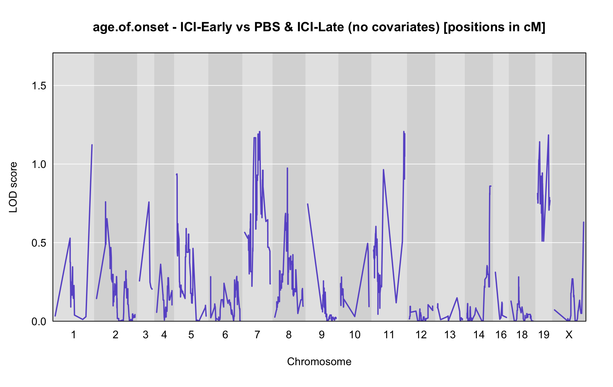

QTL Analysis - age of onset [ICI-Early vs PBS & ICI-Late] (corrected phenotype with outliers removed if any)
Belinda Cornes
2022-04-15
Last updated: 2022-04-15
Checks: 5 2
Knit directory: Serreze-T1D_Workflow/
This reproducible R Markdown analysis was created with workflowr (version 1.6.2). The Checks tab describes the reproducibility checks that were applied when the results were created. The Past versions tab lists the development history.
The R Markdown is untracked by Git. To know which version of the R Markdown file created these results, you’ll want to first commit it to the Git repo. If you’re still working on the analysis, you can ignore this warning. When you’re finished, you can run wflow_publish to commit the R Markdown file and build the HTML.
Great job! The global environment was empty. Objects defined in the global environment can affect the analysis in your R Markdown file in unknown ways. For reproduciblity it’s best to always run the code in an empty environment.
The command set.seed(20220210) was run prior to running the code in the R Markdown file. Setting a seed ensures that any results that rely on randomness, e.g. subsampling or permutations, are reproducible.
Great job! Recording the operating system, R version, and package versions is critical for reproducibility.
Nice! There were no cached chunks for this analysis, so you can be confident that you successfully produced the results during this run.
Using absolute paths to the files within your workflowr project makes it difficult for you and others to run your code on a different machine. Change the absolute path(s) below to the suggested relative path(s) to make your code more reproducible.
| absolute | relative |
|---|---|
| /Users/corneb/Documents/MyJax/CS/Projects/Serreze/qc/workflowr/Serreze-T1D_Workflow | . |
Great! You are using Git for version control. Tracking code development and connecting the code version to the results is critical for reproducibility.
The results in this page were generated with repository version a8c2d1a. See the Past versions tab to see a history of the changes made to the R Markdown and HTML files.
Note that you need to be careful to ensure that all relevant files for the analysis have been committed to Git prior to generating the results (you can use wflow_publish or wflow_git_commit). workflowr only checks the R Markdown file, but you know if there are other scripts or data files that it depends on. Below is the status of the Git repository when the results were generated:
Ignored files:
Ignored: .DS_Store
Ignored: analysis/.DS_Store
Ignored: data/.DS_Store
Untracked files:
Untracked: analysis/3.1_phenotype.qc_corrected_5.batches.Rmd.R
Untracked: analysis/3.1_phenotype.qc_corrected_5.batches_0.Rmd
Untracked: analysis/3.1_phenotype.qc_corrected_5.batches_52.Rmd
Untracked: analysis/3.1_phenotype.qc_corrected_5.batches_ici-early.vs.pbs.ici-late_mis.Rmd.R
Untracked: analysis/3.1_phenotype.qc_corrected_5.batches_mis.Rmd.R
Untracked: analysis/3.1_phenotype.qc_corrected_5.batches_mis_0.Rmd
Untracked: analysis/3.1_phenotype.qc_corrected_5.batches_mis_52.Rmd
Untracked: analysis/3.1_phenotype.qc_corrected_5.batches_mis_vo.Rmd
Untracked: analysis/3.1_phenotype.qc_corrected_5.batches_vo.Rmd
Untracked: analysis/3.1_phenotype.qc_corrected_ici-early.vs.pbs.ici-late_5.batches.Rmd
Untracked: analysis/3.1_phenotype.qc_corrected_ici-early.vs.pbs.ici-late_5.batches.Rmd.R
Untracked: analysis/3.1_phenotype.qc_corrected_ici-early.vs.pbs.ici-late_5.batches_mis.Rmd
Untracked: analysis/4.1.1_qtl.analysis_binary_ici-early.vs.pbs.ici-late_5.batches.Rmd
Untracked: analysis/4.1.1_qtl.analysis_binary_ici-early.vs.pbs.ici-late_5.batches.Rmd.R
Untracked: analysis/4.1.1_qtl.analysis_binary_ici-early.vs.pbs.ici-late_5.batches_mis.Rmd
Untracked: analysis/4.1.1_qtl.analysis_binary_ici-early.vs.pbs.ici-late_5.batches_mis.Rmd.R
Untracked: analysis/4.1.1_qtl.analysis_binary_ici-early.vs.pbs.ici-late_snpsqc_5.batches.Rmd
Untracked: analysis/4.1.1_qtl.analysis_binary_ici-early.vs.pbs.ici-late_snpsqc_5.batches.Rmd.R
Untracked: analysis/4.1.1_qtl.analysis_binary_ici-early.vs.pbs.ici-late_snpsqc_5.batches_mis.Rmd
Untracked: analysis/4.1.1_qtl.analysis_binary_ici-early.vs.pbs.ici-late_snpsqc_5.batches_mis.Rmd.R
Untracked: analysis/4.1.1_qtl.analysis_binary_ici-early.vs.pbs.ici-late_snpsqc_dis_no-x_updated_5.batches.Rmd
Untracked: analysis/4.1.1_qtl.analysis_binary_ici-early.vs.pbs.ici-late_snpsqc_dis_no-x_updated_5.batches.Rmd.R
Untracked: analysis/4.1.1_qtl.analysis_binary_ici-early.vs.pbs.ici-late_snpsqc_dis_no-x_updated_5.batches_mis.Rmd
Untracked: analysis/4.1.1_qtl.analysis_binary_ici-early.vs.pbs.ici-late_snpsqc_dis_no-x_updated_5.batches_mis.Rmd.R
Untracked: analysis/4.1.1_qtl.analysis_binary_ici.vs.eoi_snpsqc_dis_no-x_updated_5.batches_11.Rmd
Untracked: analysis/4.1.1_qtl.analysis_binary_ici.vs.eoi_snpsqc_dis_no-x_updated_5.batches_mis_11.Rmd
Untracked: analysis/4.1.1_qtl.analysis_binary_ici.vs.pbs_snpsqc_5.batches_1.Rmd
Untracked: analysis/4.1.1_qtl.analysis_binary_ici.vs.pbs_snpsqc_5.batches_mis_1.Rmd
Untracked: analysis/4.1.1_qtl.analysis_binary_ici.vs.pbs_snpsqc_dis_no-x_updated_5.batches_1.Rmd
Untracked: analysis/4.1.1_qtl.analysis_binary_ici.vs.pbs_snpsqc_dis_no-x_updated_5.batches_11.Rmd
Untracked: analysis/4.1.1_qtl.analysis_binary_ici.vs.pbs_snpsqc_dis_no-x_updated_5.batches_mis_11.Rmd
Untracked: analysis/4.1.2_qtl.analysis_cont_age_ici-early.vs.pbs.ici-late_pheno.corrected.cleaned_5.batches.Rmd
Untracked: analysis/4.1.2_qtl.analysis_cont_age_ici-early.vs.pbs.ici-late_pheno.corrected.cleaned_5.batches.Rmd.R
Untracked: analysis/4.1.2_qtl.analysis_cont_age_ici-early.vs.pbs.ici-late_pheno.corrected.cleaned_5.batches_mis.Rmd
Untracked: analysis/4.1.2_qtl.analysis_cont_age_ici-early.vs.pbs.ici-late_pheno.corrected.cleaned_5.batches_mis.Rmd.R
Untracked: analysis/4.1.2_qtl.analysis_cont_age_ici-early.vs.pbs.ici-late_snpsqc_pheno.corrected.cleaned_5.batches.Rmd
Untracked: analysis/4.1.2_qtl.analysis_cont_age_ici-early.vs.pbs.ici-late_snpsqc_pheno.corrected.cleaned_5.batches.Rmd.R
Untracked: analysis/4.1.2_qtl.analysis_cont_age_ici-early.vs.pbs.ici-late_snpsqc_pheno.corrected.cleaned_5.batches_mis.Rmd
Untracked: analysis/4.1.2_qtl.analysis_cont_age_ici-early.vs.pbs.ici-late_snpsqc_pheno.corrected.cleaned_5.batches_mis.Rmd.R
Untracked: analysis/4.1.2_qtl.analysis_cont_age_ici-early.vs.pbs.ici-late_snpsqc_pheno.corrected.cleaned_dis_no-xk_5.batches.Rmd
Untracked: analysis/4.1.2_qtl.analysis_cont_age_ici-early.vs.pbs.ici-late_snpsqc_pheno.corrected.cleaned_dis_no-xk_5.batches.Rmd.R
Untracked: analysis/4.1.2_qtl.analysis_cont_age_ici-early.vs.pbs.ici-late_snpsqc_pheno.corrected.cleaned_dis_no-xk_5.batches_mis.Rmd
Untracked: analysis/4.1.2_qtl.analysis_cont_age_ici-early.vs.pbs.ici-late_snpsqc_pheno.corrected.cleaned_dis_no-xk_5.batches_mis.Rmd.R
Untracked: analysis/4.1.2_qtl.analysis_cont_age_ici.vs.eoi_pheno.corrected.cleaned_5.batches_0.Rmd
Untracked: analysis/4.1.2_qtl.analysis_cont_age_ici.vs.eoi_pheno.corrected.cleaned_5.batches_52.Rmd
Untracked: analysis/4.1.2_qtl.analysis_cont_age_ici.vs.eoi_pheno.corrected.cleaned_5.batches_changed.Rmd
Untracked: analysis/4.1.2_qtl.analysis_cont_age_ici.vs.eoi_pheno.corrected.cleaned_5.batches_mis_0.Rmd
Untracked: analysis/4.1.2_qtl.analysis_cont_age_ici.vs.eoi_pheno.corrected.cleaned_5.batches_mis_52.Rmd
Untracked: analysis/4.1.2_qtl.analysis_cont_age_ici.vs.eoi_pheno.corrected.cleaned_5.batches_mis_changed.Rmd
Untracked: analysis/4.1.2_qtl.analysis_cont_age_ici.vs.eoi_pheno.corrected.cleaned_scanone_5.batches.Rmd
Untracked: analysis/4.1.2_qtl.analysis_cont_age_ici.vs.eoi_pheno.corrected.cleaned_scanone_5.batches_mis.Rmd
Untracked: analysis/4.1.2_qtl.analysis_cont_age_ici.vs.eoi_snpsqc_pheno.corrected.cleaned_5.batches_0.Rmd
Untracked: analysis/4.1.2_qtl.analysis_cont_age_ici.vs.eoi_snpsqc_pheno.corrected.cleaned_5.batches_52.Rmd
Untracked: analysis/4.1.2_qtl.analysis_cont_age_ici.vs.eoi_snpsqc_pheno.corrected.cleaned_5.batches_mis_0.Rmd
Untracked: analysis/4.1.2_qtl.analysis_cont_age_ici.vs.eoi_snpsqc_pheno.corrected.cleaned_5.batches_mis_52.Rmd
Untracked: analysis/4.1.2_qtl.analysis_cont_age_ici.vs.eoi_snpsqc_pheno.corrected.cleaned_5.batches_oops.Rmd
Untracked: analysis/4.1.2_qtl.analysis_cont_age_ici.vs.eoi_snpsqc_pheno.corrected.cleaned_dis.Rmd.R
Untracked: analysis/4.1.2_qtl.analysis_cont_age_ici.vs.eoi_snpsqc_pheno.corrected.cleaned_dis_no-xk_5.batches_0.Rmd
Untracked: analysis/4.1.2_qtl.analysis_cont_age_ici.vs.eoi_snpsqc_pheno.corrected.cleaned_dis_no-xk_5.batches_52.Rmd
Untracked: analysis/4.1.2_qtl.analysis_cont_age_ici.vs.eoi_snpsqc_pheno.corrected.cleaned_dis_no-xk_5.batches_mis_0.Rmd
Untracked: analysis/4.1.2_qtl.analysis_cont_age_ici.vs.eoi_snpsqc_pheno.corrected.cleaned_dis_no-xk_5.batches_mis_52.Rmd
Untracked: analysis/4.1.2_qtl.analysis_cont_age_ici.vs.eoi_snpsqc_pheno.corrected.cleaned_test.with.4.Rmd
Untracked: analysis/4.1.2_qtl.analysis_cont_age_ici.vs.eoi_snpsqc_pheno.corrected.cleaned_test.with.4.Rmd.R
Untracked: analysis/4.1.2_qtl.analysis_cont_age_ici.vs.eoi_snpsqc_pheno.corrected.cleaned_test.with.4_miss.Rmd
Untracked: analysis/4.1.2_qtl.analysis_cont_age_ici.vs.eoi_snpsqc_pheno.corrected.cleaned_test.with.4_miss.Rmd.R
Untracked: analysis/4.1.2_qtl.analysis_cont_age_ici.vs.eoi_snpsqc_pheno.corrected.cleaned_test.with.5.Rmd
Untracked: analysis/4.1.2_qtl.analysis_cont_age_ici.vs.eoi_snpsqc_pheno.corrected.cleaned_test.with.5.Rmd.R
Untracked: analysis/4.1.2_qtl.analysis_cont_age_ici.vs.eoi_snpsqc_pheno.corrected.cleaned_test.with.5_0.Rmd
Untracked: analysis/4.1.2_qtl.analysis_cont_age_ici.vs.eoi_snpsqc_pheno.corrected.cleaned_test.with.5_0.Rmd.R
Untracked: analysis/4.1.2_qtl.analysis_cont_rz.age_ici-early.vs.pbs.ici-late_pheno.corrected.cleaned_5.batches.Rmd
Untracked: analysis/4.1.2_qtl.analysis_cont_rz.age_ici-early.vs.pbs.ici-late_pheno.corrected.cleaned_5.batches.Rmd.R
Untracked: analysis/4.1.2_qtl.analysis_cont_rz.age_ici-early.vs.pbs.ici-late_pheno.corrected.cleaned_5.batches_mis.Rmd
Untracked: analysis/4.1.2_qtl.analysis_cont_rz.age_ici-early.vs.pbs.ici-late_pheno.corrected.cleaned_5.batches_mis.Rmd.R
Untracked: analysis/4.1.2_qtl.analysis_cont_rz.age_ici-early.vs.pbs.ici-late_snpsqc_pheno.corrected.cleaned_5.batches.Rmd
Untracked: analysis/4.1.2_qtl.analysis_cont_rz.age_ici-early.vs.pbs.ici-late_snpsqc_pheno.corrected.cleaned_5.batches.Rmd.R
Untracked: analysis/4.1.2_qtl.analysis_cont_rz.age_ici-early.vs.pbs.ici-late_snpsqc_pheno.corrected.cleaned_5.batches_mis.Rmd
Untracked: analysis/4.1.2_qtl.analysis_cont_rz.age_ici-early.vs.pbs.ici-late_snpsqc_pheno.corrected.cleaned_5.batches_mis.Rmd.R
Untracked: analysis/4.1.2_qtl.analysis_cont_rz.age_ici-early.vs.pbs.ici-late_snpsqc_pheno.corrected.cleaned_dis_no-xk_5.batches.Rmd
Untracked: analysis/4.1.2_qtl.analysis_cont_rz.age_ici-early.vs.pbs.ici-late_snpsqc_pheno.corrected.cleaned_dis_no-xk_5.batches.Rmd.R
Untracked: analysis/4.1.2_qtl.analysis_cont_rz.age_ici-early.vs.pbs.ici-late_snpsqc_pheno.corrected.cleaned_dis_no-xk_5.batches_mis.Rmd
Untracked: analysis/4.1.2_qtl.analysis_cont_rz.age_ici-early.vs.pbs.ici-late_snpsqc_pheno.corrected.cleaned_dis_no-xk_5.batches_mis.Rmd.R
Untracked: analysis/4.1.2_qtl.analysis_cont_rz.age_ici.vs.eoi_pheno.corrected.cleaned_5.batches_0.Rmd
Untracked: analysis/4.1.2_qtl.analysis_cont_rz.age_ici.vs.eoi_pheno.corrected.cleaned_5.batches_52.Rmd
Untracked: analysis/4.1.2_qtl.analysis_cont_rz.age_ici.vs.eoi_pheno.corrected.cleaned_5.batches_mis_0.Rmd
Untracked: analysis/4.1.2_qtl.analysis_cont_rz.age_ici.vs.eoi_pheno.corrected.cleaned_5.batches_mis_52.Rmd
Untracked: analysis/4.1.2_qtl.analysis_cont_rz.age_ici.vs.eoi_pheno.corrected.cleaned_5.batches_mis_vo.Rmd
Untracked: analysis/4.1.2_qtl.analysis_cont_rz.age_ici.vs.eoi_pheno.corrected.cleaned_5.batches_mis_vo1.Rmd
Untracked: analysis/4.1.2_qtl.analysis_cont_rz.age_ici.vs.eoi_pheno.corrected.cleaned_5.batches_vo.Rmd
Untracked: analysis/4.1.2_qtl.analysis_cont_rz.age_ici.vs.eoi_pheno.corrected.cleaned_5.batches_vo1.Rmd
Untracked: analysis/4.1.2_qtl.analysis_cont_rz.age_ici.vs.eoi_snpsqc_pheno.corrected.cleaned_5.batches_0.Rmd
Untracked: analysis/4.1.2_qtl.analysis_cont_rz.age_ici.vs.eoi_snpsqc_pheno.corrected.cleaned_5.batches_52.Rmd
Untracked: analysis/4.1.2_qtl.analysis_cont_rz.age_ici.vs.eoi_snpsqc_pheno.corrected.cleaned_5.batches_mis_0.Rmd
Untracked: analysis/4.1.2_qtl.analysis_cont_rz.age_ici.vs.eoi_snpsqc_pheno.corrected.cleaned_5.batches_mis_52.Rmd
Untracked: analysis/4.1.2_qtl.analysis_cont_rz.age_ici.vs.eoi_snpsqc_pheno.corrected.cleaned_dis_no-xk_5.batches_0.Rmd
Untracked: analysis/4.1.2_qtl.analysis_cont_rz.age_ici.vs.eoi_snpsqc_pheno.corrected.cleaned_dis_no-xk_5.batches_52.Rmd
Untracked: analysis/4.1.2_qtl.analysis_cont_rz.age_ici.vs.eoi_snpsqc_pheno.corrected.cleaned_dis_no-xk_5.batches_mis_0.Rmd
Untracked: analysis/4.1.2_qtl.analysis_cont_rz.age_ici.vs.eoi_snpsqc_pheno.corrected.cleaned_dis_no-xk_5.batches_mis_52.Rmd
Untracked: analysis/genotype.frequencies_ici-early.vs.pbs.ici-late_5.batches.Rmd
Untracked: analysis/genotype.frequencies_ici-early.vs.pbs.ici-late_5.batches.Rmd.R
Untracked: analysis/genotype.frequencies_ici-early.vs.pbs.ici-late_5.batches_mis.Rmd
Untracked: analysis/genotype.frequencies_ici-early.vs.pbs.ici-late_5.batches_mis.Rmd.R
Untracked: analysis/genotype.frequencies_ici.vs.eoi_5.batches_0.Rmd
Untracked: analysis/genotype.frequencies_ici.vs.eoi_5.batches_52.Rmd
Untracked: analysis/genotype.frequencies_ici.vs.eoi_5.batches_mis_0.Rmd
Untracked: analysis/genotype.frequencies_ici.vs.eoi_5.batches_mis_52.Rmd
Untracked: analysis/index_5.batches_additional_vo.Rmd
Untracked: data/GM_covar.csv
Untracked: data/GM_covar_BC312.csv
Untracked: data/bad_markers_all_4.batches.RData
Untracked: data/bad_markers_all_5.batches.RData
Untracked: data/blup_sub_chr10_lod.drop-1.5_5.batches.csv
Untracked: data/blup_sub_chr3_lod.drop-1.5.csv
Untracked: data/blup_sub_chr3_lod.drop-1.5_5.batches.csv
Untracked: data/blup_sub_chr4_lod.drop-1.5.csv
Untracked: data/blup_sub_chr4_lod.drop-1.5_5.batches.csv
Untracked: data/covar_cleaned_ici.vs.eoi.csv
Untracked: data/covar_cleaned_ici.vs.pbs.csv
Untracked: data/covar_corrected.cleaned_ici-early.vs.pbs.ici-late_5.batches.csv
Untracked: data/covar_corrected.cleaned_ici-early.vs.pbs.ici-late_5.batches_mis.csv
Untracked: data/covar_corrected.cleaned_ici-early.vs.pbs_5.batches.csv
Untracked: data/covar_corrected.cleaned_ici-early.vs.pbs_5.batches_0.csv
Untracked: data/covar_corrected.cleaned_ici-early.vs.pbs_5.batches_52.csv
Untracked: data/covar_corrected.cleaned_ici-early.vs.pbs_5.batches_mis.csv
Untracked: data/covar_corrected.cleaned_ici-early.vs.pbs_5.batches_mis_0.csv
Untracked: data/covar_corrected.cleaned_ici-early.vs.pbs_5.batches_mis_52.csv
Untracked: data/covar_corrected.cleaned_ici.vs.eoi.csv
Untracked: data/covar_corrected.cleaned_ici.vs.eoi1.csv
Untracked: data/covar_corrected.cleaned_ici.vs.eoi_5.batches.csv
Untracked: data/covar_corrected.cleaned_ici.vs.eoi_5.batches_0.csv
Untracked: data/covar_corrected.cleaned_ici.vs.eoi_5.batches_52.csv
Untracked: data/covar_corrected.cleaned_ici.vs.eoi_5.batches_mis.csv
Untracked: data/covar_corrected.cleaned_ici.vs.eoi_5.batches_mis_0.csv
Untracked: data/covar_corrected.cleaned_ici.vs.eoi_5.batches_mis_52.csv
Untracked: data/covar_corrected.cleaned_ici.vs.pbs.csv
Untracked: data/covar_corrected.cleaned_ici.vs.pbs1.csv
Untracked: data/covar_corrected.cleaned_ici.vs.pbs_5.batches.csv
Untracked: data/covar_corrected.cleaned_ici.vs.pbs_5.batches_0.csv
Untracked: data/covar_corrected.cleaned_ici.vs.pbs_5.batches_52.csv
Untracked: data/covar_corrected.cleaned_ici.vs.pbs_5.batches_mis.csv
Untracked: data/covar_corrected.cleaned_ici.vs.pbs_5.batches_mis_0.csv
Untracked: data/covar_corrected.cleaned_ici.vs.pbs_5.batches_mis_52.csv
Untracked: data/covar_corrected_ici-early.vs.pbs.ici-late_5.batches.csv
Untracked: data/covar_corrected_ici-early.vs.pbs.ici-late_5.batches_mis.csv
Untracked: data/covar_corrected_ici-early.vs.pbs_5.batches.csv
Untracked: data/covar_corrected_ici-early.vs.pbs_5.batches_0.csv
Untracked: data/covar_corrected_ici-early.vs.pbs_5.batches_52.csv
Untracked: data/covar_corrected_ici-early.vs.pbs_5.batches_mis.csv
Untracked: data/covar_corrected_ici-early.vs.pbs_5.batches_mis_0.csv
Untracked: data/covar_corrected_ici-early.vs.pbs_5.batches_mis_52.csv
Untracked: data/covar_corrected_ici.vs.eoi.csv
Untracked: data/covar_corrected_ici.vs.eoi1.csv
Untracked: data/covar_corrected_ici.vs.eoi_5.batches.csv
Untracked: data/covar_corrected_ici.vs.eoi_5.batches_0.csv
Untracked: data/covar_corrected_ici.vs.eoi_5.batches_52.csv
Untracked: data/covar_corrected_ici.vs.eoi_5.batches_mis.csv
Untracked: data/covar_corrected_ici.vs.eoi_5.batches_mis_0.csv
Untracked: data/covar_corrected_ici.vs.eoi_5.batches_mis_52.csv
Untracked: data/covar_corrected_ici.vs.pbs.csv
Untracked: data/covar_corrected_ici.vs.pbs1.csv
Untracked: data/covar_corrected_ici.vs.pbs_5.batches.csv
Untracked: data/covar_corrected_ici.vs.pbs_5.batches_0.csv
Untracked: data/covar_corrected_ici.vs.pbs_5.batches_52.csv
Untracked: data/covar_corrected_ici.vs.pbs_5.batches_mis.csv
Untracked: data/covar_corrected_ici.vs.pbs_5.batches_mis_0.csv
Untracked: data/covar_corrected_ici.vs.pbs_5.batches_mis_52.csv
Untracked: data/e.RData
Untracked: data/e_BC312.RData
Untracked: data/e_snpg_samqc_4.batches.RData
Untracked: data/e_snpg_samqc_4.batches_bc.RData
Untracked: data/e_snpg_samqc_5.batches.RData
Untracked: data/errors_ind_4.batches.RData
Untracked: data/errors_ind_4.batches_bc.RData
Untracked: data/errors_ind_5.batches.RData
Untracked: data/files.to.sync.txt
Untracked: data/fitqtl_chr3.peak_chr4.peak_additive.txt
Untracked: data/fitqtl_chr3.peak_chr4.peak_interacting.txt
Untracked: data/fitqtl_chr3.peak_chr4.peak_sex_additive.txt
Untracked: data/fitqtl_chr3.peak_chr4.peak_sex_interacting.txt
Untracked: data/g2blup_effects.csv
Untracked: data/g2blup_effects.xlsx
Untracked: data/genes_chr10_lod.drop-1.5_5.batches.csv
Untracked: data/genes_chr3_lod.drop-1.5.csv
Untracked: data/genes_chr3_lod.drop-1.5_5.batches.csv
Untracked: data/genes_chr4_lod.drop-1.5.csv
Untracked: data/genetic_map.csv
Untracked: data/genetic_map_BC312.csv
Untracked: data/genotype_errors_marker_4.batches.RData
Untracked: data/genotype_errors_marker_5.batches.RData
Untracked: data/genotype_freq_marker_4.batches.RData
Untracked: data/genotype_freq_marker_5.batches.RData
Untracked: data/gm_allqc_4.batches.RData
Untracked: data/gm_allqc_5.batches.RData
Untracked: data/gm_allqc_5.batches_mis.RData
Untracked: data/gm_samqc_3.batches.RData
Untracked: data/gm_samqc_4.batches.RData
Untracked: data/gm_samqc_4.batches_bc.RData
Untracked: data/gm_samqc_5.batches.RData
Untracked: data/gm_serreze.192.RData
Untracked: data/gm_serreze.BC312.RData
Untracked: data/ici-early.vs.pbs.ici-late_age.of.onset-additive.covariates_blup_sub_chr-6_peak.marker-cr27snv203_lod.drop-1.5_5.batches_mis.csv
Untracked: data/ici-early.vs.pbs.ici-late_age.of.onset-additive.covariates_genes_chr-6_peak.marker-cr27snv203_lod.drop-1.5_5.batches_mis.csv
Untracked: data/ici-early.vs.pbs.ici-late_age.of.onset-interactive.covariate_blup_sub_chr-1_peak.marker-ICR134_lod.drop-1.5_5.batches_mis.csv
Untracked: data/ici-early.vs.pbs.ici-late_age.of.onset-interactive.covariate_blup_sub_chr-1_peak.marker-ICR4119_lod.drop-1.5_5.batches_mis.csv
Untracked: data/ici-early.vs.pbs.ici-late_age.of.onset-interactive.covariate_blup_sub_chr-1_peak.marker-JAX00262446_lod.drop-1.5_5.batches_mis.csv
Untracked: data/ici-early.vs.pbs.ici-late_age.of.onset-interactive.covariate_blup_sub_chr-1_peak.marker-UNCHS001938_lod.drop-1.5_5.batches_mis.csv
Untracked: data/ici-early.vs.pbs.ici-late_age.of.onset-interactive.covariate_blup_sub_chr-6_peak.marker-UNC11008761_lod.drop-1.5_5.batches_mis.csv
Untracked: data/ici-early.vs.pbs.ici-late_age.of.onset-interactive.covariate_blup_sub_chr-6_peak.marker-UNCHS016990_lod.drop-1.5_5.batches_mis.csv
Untracked: data/ici-early.vs.pbs.ici-late_age.of.onset-interactive.covariate_genes_chr-1_peak.marker-ICR134_lod.drop-1.5_5.batches_mis.csv
Untracked: data/ici-early.vs.pbs.ici-late_age.of.onset-interactive.covariate_genes_chr-1_peak.marker-ICR4119_lod.drop-1.5_5.batches_mis.csv
Untracked: data/ici-early.vs.pbs.ici-late_age.of.onset-interactive.covariate_genes_chr-1_peak.marker-JAX00262446_lod.drop-1.5_5.batches_mis.csv
Untracked: data/ici-early.vs.pbs.ici-late_age.of.onset-interactive.covariate_genes_chr-1_peak.marker-UNCHS001938_lod.drop-1.5_5.batches_mis.csv
Untracked: data/ici-early.vs.pbs.ici-late_age.of.onset-interactive.covariate_genes_chr-6_peak.marker-UNC11008761_lod.drop-1.5_5.batches_mis.csv
Untracked: data/ici-early.vs.pbs.ici-late_age.of.onset-interactive.covariate_genes_chr-6_peak.marker-UNCHS016990_lod.drop-1.5_5.batches_mis.csv
Untracked: data/ici-early.vs.pbs.ici-late_age.of.onset-no.covariates_blup_sub_chr-14_peak.marker-UNC24056202_lod.drop-1.5_5.batches_mis.csv
Untracked: data/ici-early.vs.pbs.ici-late_age.of.onset-no.covariates_blup_sub_chr-14_peak.marker-UNC24056202_lod.drop-1.5_snpsqc_5.batches_mis.csv
Untracked: data/ici-early.vs.pbs.ici-late_age.of.onset-no.covariates_blup_sub_chr-17_peak.marker-UNCJPD006614_lod.drop-1.5_snpsqc_5.batches_mis.csv
Untracked: data/ici-early.vs.pbs.ici-late_age.of.onset-no.covariates_blup_sub_chr-18_peak.marker-UNC28655293_lod.drop-1.5_5.batches_mis.csv
Untracked: data/ici-early.vs.pbs.ici-late_age.of.onset-no.covariates_blup_sub_chr-18_peak.marker-UNCHS045343_lod.drop-1.5_snpsqc_5.batches_mis.csv
Untracked: data/ici-early.vs.pbs.ici-late_age.of.onset-no.covariates_blup_sub_chr-5_peak.marker-UNC10044126_lod.drop-1.5_5.batches_mis.csv
Untracked: data/ici-early.vs.pbs.ici-late_age.of.onset-no.covariates_blup_sub_chr-5_peak.marker-UNC8675939_lod.drop-1.5_snpsqc_5.batches_mis.csv
Untracked: data/ici-early.vs.pbs.ici-late_age.of.onset-no.covariates_blup_sub_chr-8_peak.marker-JAX00667121_lod.drop-1.5_5.batches_mis.csv
Untracked: data/ici-early.vs.pbs.ici-late_age.of.onset-no.covariates_blup_sub_chr-8_peak.marker-UNC15524531_lod.drop-1.5_snpsqc_5.batches_mis.csv
Untracked: data/ici-early.vs.pbs.ici-late_age.of.onset-no.covariates_blup_sub_chr-X_peak.marker-UNCHS048314_lod.drop-1.5_snpsqc_5.batches_mis.csv
Untracked: data/ici-early.vs.pbs.ici-late_age.of.onset-no.covariates_genes_chr-14_peak.marker-UNC24056202_lod.drop-1.5_5.batches_mis.csv
Untracked: data/ici-early.vs.pbs.ici-late_age.of.onset-no.covariates_genes_chr-14_peak.marker-UNC24056202_lod.drop-1.5_snpsqc_5.batches_mis.csv
Untracked: data/ici-early.vs.pbs.ici-late_age.of.onset-no.covariates_genes_chr-17_peak.marker-UNCJPD006614_lod.drop-1.5_snpsqc_5.batches_mis.csv
Untracked: data/ici-early.vs.pbs.ici-late_age.of.onset-no.covariates_genes_chr-18_peak.marker-UNC28655293_lod.drop-1.5_5.batches_mis.csv
Untracked: data/ici-early.vs.pbs.ici-late_age.of.onset-no.covariates_genes_chr-18_peak.marker-UNCHS045343_lod.drop-1.5_snpsqc_5.batches_mis.csv
Untracked: data/ici-early.vs.pbs.ici-late_age.of.onset-no.covariates_genes_chr-5_peak.marker-UNC10044126_lod.drop-1.5_5.batches_mis.csv
Untracked: data/ici-early.vs.pbs.ici-late_age.of.onset-no.covariates_genes_chr-5_peak.marker-UNC8675939_lod.drop-1.5_snpsqc_5.batches_mis.csv
Untracked: data/ici-early.vs.pbs.ici-late_age.of.onset-no.covariates_genes_chr-8_peak.marker-JAX00667121_lod.drop-1.5_5.batches_mis.csv
Untracked: data/ici-early.vs.pbs.ici-late_age.of.onset-no.covariates_genes_chr-8_peak.marker-UNC15524531_lod.drop-1.5_snpsqc_5.batches_mis.csv
Untracked: data/ici-early.vs.pbs.ici-late_age.of.onset-no.covariates_genes_chr-X_peak.marker-UNCHS048314_lod.drop-1.5_snpsqc_5.batches_mis.csv
Untracked: data/ici-early.vs.pbs.ici-late_blup.full_chr-10_5.batches.csv
Untracked: data/ici-early.vs.pbs.ici-late_blup.full_chr-10_5.batches_mis.csv
Untracked: data/ici-early.vs.pbs.ici-late_blup.full_chr-10_snpsqc_5.batches.csv
Untracked: data/ici-early.vs.pbs.ici-late_blup.full_chr-10_snpsqc_5.batches_mis.csv
Untracked: data/ici-early.vs.pbs.ici-late_blup.full_chr-10_snpsqc_dis_no-x_updated_5.batches.csv
Untracked: data/ici-early.vs.pbs.ici-late_blup.full_chr-10_snpsqc_dis_no-x_updated_5.batches_mis.csv
Untracked: data/ici-early.vs.pbs.ici-late_blup.full_chr-11_5.batches.csv
Untracked: data/ici-early.vs.pbs.ici-late_blup.full_chr-11_5.batches_mis.csv
Untracked: data/ici-early.vs.pbs.ici-late_blup.full_chr-11_snpsqc_5.batches.csv
Untracked: data/ici-early.vs.pbs.ici-late_blup.full_chr-11_snpsqc_5.batches_mis.csv
Untracked: data/ici-early.vs.pbs.ici-late_blup.full_chr-11_snpsqc_dis_no-x_updated_5.batches.csv
Untracked: data/ici-early.vs.pbs.ici-late_blup.full_chr-11_snpsqc_dis_no-x_updated_5.batches_mis.csv
Untracked: data/ici-early.vs.pbs.ici-late_blup.full_chr-12_5.batches.csv
Untracked: data/ici-early.vs.pbs.ici-late_blup.full_chr-12_5.batches_mis.csv
Untracked: data/ici-early.vs.pbs.ici-late_blup.full_chr-12_snpsqc_5.batches.csv
Untracked: data/ici-early.vs.pbs.ici-late_blup.full_chr-12_snpsqc_5.batches_mis.csv
Untracked: data/ici-early.vs.pbs.ici-late_blup.full_chr-12_snpsqc_dis_no-x_updated_5.batches.csv
Untracked: data/ici-early.vs.pbs.ici-late_blup.full_chr-12_snpsqc_dis_no-x_updated_5.batches_mis.csv
Untracked: data/ici-early.vs.pbs.ici-late_blup.full_chr-13_5.batches.csv
Untracked: data/ici-early.vs.pbs.ici-late_blup.full_chr-13_5.batches_mis.csv
Untracked: data/ici-early.vs.pbs.ici-late_blup.full_chr-13_snpsqc_5.batches.csv
Untracked: data/ici-early.vs.pbs.ici-late_blup.full_chr-13_snpsqc_5.batches_mis.csv
Untracked: data/ici-early.vs.pbs.ici-late_blup.full_chr-13_snpsqc_dis_no-x_updated_5.batches.csv
Untracked: data/ici-early.vs.pbs.ici-late_blup.full_chr-13_snpsqc_dis_no-x_updated_5.batches_mis.csv
Untracked: data/ici-early.vs.pbs.ici-late_blup.full_chr-14_5.batches.csv
Untracked: data/ici-early.vs.pbs.ici-late_blup.full_chr-14_5.batches_mis.csv
Untracked: data/ici-early.vs.pbs.ici-late_blup.full_chr-14_snpsqc_5.batches.csv
Untracked: data/ici-early.vs.pbs.ici-late_blup.full_chr-14_snpsqc_5.batches_mis.csv
Untracked: data/ici-early.vs.pbs.ici-late_blup.full_chr-14_snpsqc_dis_no-x_updated_5.batches.csv
Untracked: data/ici-early.vs.pbs.ici-late_blup.full_chr-14_snpsqc_dis_no-x_updated_5.batches_mis.csv
Untracked: data/ici-early.vs.pbs.ici-late_blup.full_chr-15_5.batches.csv
Untracked: data/ici-early.vs.pbs.ici-late_blup.full_chr-15_5.batches_mis.csv
Untracked: data/ici-early.vs.pbs.ici-late_blup.full_chr-15_snpsqc_5.batches.csv
Untracked: data/ici-early.vs.pbs.ici-late_blup.full_chr-15_snpsqc_5.batches_mis.csv
Untracked: data/ici-early.vs.pbs.ici-late_blup.full_chr-15_snpsqc_dis_no-x_updated_5.batches.csv
Untracked: data/ici-early.vs.pbs.ici-late_blup.full_chr-15_snpsqc_dis_no-x_updated_5.batches_mis.csv
Untracked: data/ici-early.vs.pbs.ici-late_blup.full_chr-16_5.batches.csv
Untracked: data/ici-early.vs.pbs.ici-late_blup.full_chr-16_5.batches_mis.csv
Untracked: data/ici-early.vs.pbs.ici-late_blup.full_chr-16_snpsqc_5.batches.csv
Untracked: data/ici-early.vs.pbs.ici-late_blup.full_chr-16_snpsqc_5.batches_mis.csv
Untracked: data/ici-early.vs.pbs.ici-late_blup.full_chr-16_snpsqc_dis_no-x_updated_5.batches.csv
Untracked: data/ici-early.vs.pbs.ici-late_blup.full_chr-16_snpsqc_dis_no-x_updated_5.batches_mis.csv
Untracked: data/ici-early.vs.pbs.ici-late_blup.full_chr-17_5.batches.csv
Untracked: data/ici-early.vs.pbs.ici-late_blup.full_chr-17_5.batches_mis.csv
Untracked: data/ici-early.vs.pbs.ici-late_blup.full_chr-17_snpsqc_5.batches.csv
Untracked: data/ici-early.vs.pbs.ici-late_blup.full_chr-17_snpsqc_5.batches_mis.csv
Untracked: data/ici-early.vs.pbs.ici-late_blup.full_chr-17_snpsqc_dis_no-x_updated_5.batches.csv
Untracked: data/ici-early.vs.pbs.ici-late_blup.full_chr-17_snpsqc_dis_no-x_updated_5.batches_mis.csv
Untracked: data/ici-early.vs.pbs.ici-late_blup.full_chr-18_5.batches.csv
Untracked: data/ici-early.vs.pbs.ici-late_blup.full_chr-18_5.batches_mis.csv
Untracked: data/ici-early.vs.pbs.ici-late_blup.full_chr-18_snpsqc_5.batches.csv
Untracked: data/ici-early.vs.pbs.ici-late_blup.full_chr-18_snpsqc_5.batches_mis.csv
Untracked: data/ici-early.vs.pbs.ici-late_blup.full_chr-18_snpsqc_dis_no-x_updated_5.batches.csv
Untracked: data/ici-early.vs.pbs.ici-late_blup.full_chr-18_snpsqc_dis_no-x_updated_5.batches_mis.csv
Untracked: data/ici-early.vs.pbs.ici-late_blup.full_chr-19_5.batches.csv
Untracked: data/ici-early.vs.pbs.ici-late_blup.full_chr-19_5.batches_mis.csv
Untracked: data/ici-early.vs.pbs.ici-late_blup.full_chr-19_snpsqc_5.batches.csv
Untracked: data/ici-early.vs.pbs.ici-late_blup.full_chr-19_snpsqc_5.batches_mis.csv
Untracked: data/ici-early.vs.pbs.ici-late_blup.full_chr-19_snpsqc_dis_no-x_updated_5.batches.csv
Untracked: data/ici-early.vs.pbs.ici-late_blup.full_chr-19_snpsqc_dis_no-x_updated_5.batches_mis.csv
Untracked: data/ici-early.vs.pbs.ici-late_blup.full_chr-1_5.batches.csv
Untracked: data/ici-early.vs.pbs.ici-late_blup.full_chr-1_5.batches_mis.csv
Untracked: data/ici-early.vs.pbs.ici-late_blup.full_chr-1_snpsqc_5.batches.csv
Untracked: data/ici-early.vs.pbs.ici-late_blup.full_chr-1_snpsqc_5.batches_mis.csv
Untracked: data/ici-early.vs.pbs.ici-late_blup.full_chr-1_snpsqc_dis_no-x_updated_5.batches.csv
Untracked: data/ici-early.vs.pbs.ici-late_blup.full_chr-1_snpsqc_dis_no-x_updated_5.batches_mis.csv
Untracked: data/ici-early.vs.pbs.ici-late_blup.full_chr-2_5.batches.csv
Untracked: data/ici-early.vs.pbs.ici-late_blup.full_chr-2_5.batches_mis.csv
Untracked: data/ici-early.vs.pbs.ici-late_blup.full_chr-2_snpsqc_5.batches.csv
Untracked: data/ici-early.vs.pbs.ici-late_blup.full_chr-2_snpsqc_5.batches_mis.csv
Untracked: data/ici-early.vs.pbs.ici-late_blup.full_chr-2_snpsqc_dis_no-x_updated_5.batches.csv
Untracked: data/ici-early.vs.pbs.ici-late_blup.full_chr-2_snpsqc_dis_no-x_updated_5.batches_mis.csv
Untracked: data/ici-early.vs.pbs.ici-late_blup.full_chr-3_5.batches.csv
Untracked: data/ici-early.vs.pbs.ici-late_blup.full_chr-3_5.batches_mis.csv
Untracked: data/ici-early.vs.pbs.ici-late_blup.full_chr-3_snpsqc_5.batches.csv
Untracked: data/ici-early.vs.pbs.ici-late_blup.full_chr-3_snpsqc_5.batches_mis.csv
Untracked: data/ici-early.vs.pbs.ici-late_blup.full_chr-3_snpsqc_dis_no-x_updated_5.batches.csv
Untracked: data/ici-early.vs.pbs.ici-late_blup.full_chr-3_snpsqc_dis_no-x_updated_5.batches_mis.csv
Untracked: data/ici-early.vs.pbs.ici-late_blup.full_chr-4_5.batches.csv
Untracked: data/ici-early.vs.pbs.ici-late_blup.full_chr-4_5.batches_mis.csv
Untracked: data/ici-early.vs.pbs.ici-late_blup.full_chr-4_snpsqc_5.batches.csv
Untracked: data/ici-early.vs.pbs.ici-late_blup.full_chr-4_snpsqc_5.batches_mis.csv
Untracked: data/ici-early.vs.pbs.ici-late_blup.full_chr-4_snpsqc_dis_no-x_updated_5.batches.csv
Untracked: data/ici-early.vs.pbs.ici-late_blup.full_chr-4_snpsqc_dis_no-x_updated_5.batches_mis.csv
Untracked: data/ici-early.vs.pbs.ici-late_blup.full_chr-5_5.batches.csv
Untracked: data/ici-early.vs.pbs.ici-late_blup.full_chr-5_5.batches_mis.csv
Untracked: data/ici-early.vs.pbs.ici-late_blup.full_chr-5_snpsqc_5.batches.csv
Untracked: data/ici-early.vs.pbs.ici-late_blup.full_chr-5_snpsqc_5.batches_mis.csv
Untracked: data/ici-early.vs.pbs.ici-late_blup.full_chr-5_snpsqc_dis_no-x_updated_5.batches.csv
Untracked: data/ici-early.vs.pbs.ici-late_blup.full_chr-5_snpsqc_dis_no-x_updated_5.batches_mis.csv
Untracked: data/ici-early.vs.pbs.ici-late_blup.full_chr-6_5.batches.csv
Untracked: data/ici-early.vs.pbs.ici-late_blup.full_chr-6_5.batches_mis.csv
Untracked: data/ici-early.vs.pbs.ici-late_blup.full_chr-6_snpsqc_5.batches.csv
Untracked: data/ici-early.vs.pbs.ici-late_blup.full_chr-6_snpsqc_5.batches_mis.csv
Untracked: data/ici-early.vs.pbs.ici-late_blup.full_chr-6_snpsqc_dis_no-x_updated_5.batches.csv
Untracked: data/ici-early.vs.pbs.ici-late_blup.full_chr-6_snpsqc_dis_no-x_updated_5.batches_mis.csv
Untracked: data/ici-early.vs.pbs.ici-late_blup.full_chr-7_5.batches.csv
Untracked: data/ici-early.vs.pbs.ici-late_blup.full_chr-7_5.batches_mis.csv
Untracked: data/ici-early.vs.pbs.ici-late_blup.full_chr-7_snpsqc_5.batches.csv
Untracked: data/ici-early.vs.pbs.ici-late_blup.full_chr-7_snpsqc_5.batches_mis.csv
Untracked: data/ici-early.vs.pbs.ici-late_blup.full_chr-7_snpsqc_dis_no-x_updated_5.batches.csv
Untracked: data/ici-early.vs.pbs.ici-late_blup.full_chr-7_snpsqc_dis_no-x_updated_5.batches_mis.csv
Untracked: data/ici-early.vs.pbs.ici-late_blup.full_chr-8_5.batches.csv
Untracked: data/ici-early.vs.pbs.ici-late_blup.full_chr-8_5.batches_mis.csv
Untracked: data/ici-early.vs.pbs.ici-late_blup.full_chr-8_snpsqc_5.batches.csv
Untracked: data/ici-early.vs.pbs.ici-late_blup.full_chr-8_snpsqc_5.batches_mis.csv
Untracked: data/ici-early.vs.pbs.ici-late_blup.full_chr-8_snpsqc_dis_no-x_updated_5.batches.csv
Untracked: data/ici-early.vs.pbs.ici-late_blup.full_chr-8_snpsqc_dis_no-x_updated_5.batches_mis.csv
Untracked: data/ici-early.vs.pbs.ici-late_blup.full_chr-9_5.batches.csv
Untracked: data/ici-early.vs.pbs.ici-late_blup.full_chr-9_5.batches_mis.csv
Untracked: data/ici-early.vs.pbs.ici-late_blup.full_chr-9_snpsqc_5.batches.csv
Untracked: data/ici-early.vs.pbs.ici-late_blup.full_chr-9_snpsqc_5.batches_mis.csv
Untracked: data/ici-early.vs.pbs.ici-late_blup.full_chr-9_snpsqc_dis_no-x_updated_5.batches.csv
Untracked: data/ici-early.vs.pbs.ici-late_blup.full_chr-9_snpsqc_dis_no-x_updated_5.batches_mis.csv
Untracked: data/ici-early.vs.pbs.ici-late_blup.full_chr-X_5.batches.csv
Untracked: data/ici-early.vs.pbs.ici-late_blup.full_chr-X_5.batches_mis.csv
Untracked: data/ici-early.vs.pbs.ici-late_blup.full_chr-X_snpsqc_5.batches.csv
Untracked: data/ici-early.vs.pbs.ici-late_blup.full_chr-X_snpsqc_5.batches_mis.csv
Untracked: data/ici-early.vs.pbs.ici-late_blup.full_chr-X_snpsqc_dis_no-x_updated_5.batches.csv
Untracked: data/ici-early.vs.pbs.ici-late_blup.full_chr-X_snpsqc_dis_no-x_updated_5.batches_mis.csv
Untracked: data/ici-early.vs.pbs.ici-late_blup.qc_chr-10_5.batches.csv
Untracked: data/ici-early.vs.pbs.ici-late_blup.qc_chr-10_5.batches_mis.csv
Untracked: data/ici-early.vs.pbs.ici-late_blup.qc_chr-10_snpsqc_5.batches.csv
Untracked: data/ici-early.vs.pbs.ici-late_blup.qc_chr-10_snpsqc_5.batches_mis.csv
Untracked: data/ici-early.vs.pbs.ici-late_blup.qc_chr-10_snpsqc_dis_no-x_updated_5.batches.csv
Untracked: data/ici-early.vs.pbs.ici-late_blup.qc_chr-10_snpsqc_dis_no-x_updated_5.batches_mis.csv
Untracked: data/ici-early.vs.pbs.ici-late_blup.qc_chr-11_5.batches.csv
Untracked: data/ici-early.vs.pbs.ici-late_blup.qc_chr-11_5.batches_mis.csv
Untracked: data/ici-early.vs.pbs.ici-late_blup.qc_chr-11_snpsqc_5.batches.csv
Untracked: data/ici-early.vs.pbs.ici-late_blup.qc_chr-11_snpsqc_5.batches_mis.csv
Untracked: data/ici-early.vs.pbs.ici-late_blup.qc_chr-11_snpsqc_dis_no-x_updated_5.batches.csv
Untracked: data/ici-early.vs.pbs.ici-late_blup.qc_chr-11_snpsqc_dis_no-x_updated_5.batches_mis.csv
Untracked: data/ici-early.vs.pbs.ici-late_blup.qc_chr-12_5.batches.csv
Untracked: data/ici-early.vs.pbs.ici-late_blup.qc_chr-12_5.batches_mis.csv
Untracked: data/ici-early.vs.pbs.ici-late_blup.qc_chr-12_snpsqc_5.batches.csv
Untracked: data/ici-early.vs.pbs.ici-late_blup.qc_chr-12_snpsqc_5.batches_mis.csv
Untracked: data/ici-early.vs.pbs.ici-late_blup.qc_chr-12_snpsqc_dis_no-x_updated_5.batches.csv
Untracked: data/ici-early.vs.pbs.ici-late_blup.qc_chr-12_snpsqc_dis_no-x_updated_5.batches_mis.csv
Untracked: data/ici-early.vs.pbs.ici-late_blup.qc_chr-13_5.batches.csv
Untracked: data/ici-early.vs.pbs.ici-late_blup.qc_chr-13_5.batches_mis.csv
Untracked: data/ici-early.vs.pbs.ici-late_blup.qc_chr-13_snpsqc_5.batches.csv
Untracked: data/ici-early.vs.pbs.ici-late_blup.qc_chr-13_snpsqc_5.batches_mis.csv
Untracked: data/ici-early.vs.pbs.ici-late_blup.qc_chr-13_snpsqc_dis_no-x_updated_5.batches.csv
Untracked: data/ici-early.vs.pbs.ici-late_blup.qc_chr-13_snpsqc_dis_no-x_updated_5.batches_mis.csv
Untracked: data/ici-early.vs.pbs.ici-late_blup.qc_chr-14_5.batches.csv
Untracked: data/ici-early.vs.pbs.ici-late_blup.qc_chr-14_5.batches_mis.csv
Untracked: data/ici-early.vs.pbs.ici-late_blup.qc_chr-14_snpsqc_5.batches.csv
Untracked: data/ici-early.vs.pbs.ici-late_blup.qc_chr-14_snpsqc_5.batches_mis.csv
Untracked: data/ici-early.vs.pbs.ici-late_blup.qc_chr-14_snpsqc_dis_no-x_updated_5.batches.csv
Untracked: data/ici-early.vs.pbs.ici-late_blup.qc_chr-14_snpsqc_dis_no-x_updated_5.batches_mis.csv
Untracked: data/ici-early.vs.pbs.ici-late_blup.qc_chr-15_5.batches.csv
Untracked: data/ici-early.vs.pbs.ici-late_blup.qc_chr-15_5.batches_mis.csv
Untracked: data/ici-early.vs.pbs.ici-late_blup.qc_chr-15_snpsqc_5.batches.csv
Untracked: data/ici-early.vs.pbs.ici-late_blup.qc_chr-15_snpsqc_5.batches_mis.csv
Untracked: data/ici-early.vs.pbs.ici-late_blup.qc_chr-16_5.batches.csv
Untracked: data/ici-early.vs.pbs.ici-late_blup.qc_chr-16_5.batches_mis.csv
Untracked: data/ici-early.vs.pbs.ici-late_blup.qc_chr-16_snpsqc_5.batches.csv
Untracked: data/ici-early.vs.pbs.ici-late_blup.qc_chr-16_snpsqc_5.batches_mis.csv
Untracked: data/ici-early.vs.pbs.ici-late_blup.qc_chr-16_snpsqc_dis_no-x_updated_5.batches.csv
Untracked: data/ici-early.vs.pbs.ici-late_blup.qc_chr-16_snpsqc_dis_no-x_updated_5.batches_mis.csv
Untracked: data/ici-early.vs.pbs.ici-late_blup.qc_chr-17_5.batches.csv
Untracked: data/ici-early.vs.pbs.ici-late_blup.qc_chr-17_5.batches_mis.csv
Untracked: data/ici-early.vs.pbs.ici-late_blup.qc_chr-17_snpsqc_5.batches.csv
Untracked: data/ici-early.vs.pbs.ici-late_blup.qc_chr-17_snpsqc_5.batches_mis.csv
Untracked: data/ici-early.vs.pbs.ici-late_blup.qc_chr-18_5.batches.csv
Untracked: data/ici-early.vs.pbs.ici-late_blup.qc_chr-18_5.batches_mis.csv
Untracked: data/ici-early.vs.pbs.ici-late_blup.qc_chr-18_snpsqc_5.batches.csv
Untracked: data/ici-early.vs.pbs.ici-late_blup.qc_chr-18_snpsqc_5.batches_mis.csv
Untracked: data/ici-early.vs.pbs.ici-late_blup.qc_chr-18_snpsqc_dis_no-x_updated_5.batches.csv
Untracked: data/ici-early.vs.pbs.ici-late_blup.qc_chr-18_snpsqc_dis_no-x_updated_5.batches_mis.csv
Untracked: data/ici-early.vs.pbs.ici-late_blup.qc_chr-19_5.batches.csv
Untracked: data/ici-early.vs.pbs.ici-late_blup.qc_chr-19_5.batches_mis.csv
Untracked: data/ici-early.vs.pbs.ici-late_blup.qc_chr-19_snpsqc_5.batches.csv
Untracked: data/ici-early.vs.pbs.ici-late_blup.qc_chr-19_snpsqc_5.batches_mis.csv
Untracked: data/ici-early.vs.pbs.ici-late_blup.qc_chr-19_snpsqc_dis_no-x_updated_5.batches.csv
Untracked: data/ici-early.vs.pbs.ici-late_blup.qc_chr-19_snpsqc_dis_no-x_updated_5.batches_mis.csv
Untracked: data/ici-early.vs.pbs.ici-late_blup.qc_chr-1_5.batches.csv
Untracked: data/ici-early.vs.pbs.ici-late_blup.qc_chr-1_5.batches_mis.csv
Untracked: data/ici-early.vs.pbs.ici-late_blup.qc_chr-1_snpsqc_5.batches.csv
Untracked: data/ici-early.vs.pbs.ici-late_blup.qc_chr-1_snpsqc_5.batches_mis.csv
Untracked: data/ici-early.vs.pbs.ici-late_blup.qc_chr-1_snpsqc_dis_no-x_updated_5.batches.csv
Untracked: data/ici-early.vs.pbs.ici-late_blup.qc_chr-1_snpsqc_dis_no-x_updated_5.batches_mis.csv
Untracked: data/ici-early.vs.pbs.ici-late_blup.qc_chr-2_5.batches.csv
Untracked: data/ici-early.vs.pbs.ici-late_blup.qc_chr-2_5.batches_mis.csv
Untracked: data/ici-early.vs.pbs.ici-late_blup.qc_chr-2_snpsqc_5.batches.csv
Untracked: data/ici-early.vs.pbs.ici-late_blup.qc_chr-2_snpsqc_5.batches_mis.csv
Untracked: data/ici-early.vs.pbs.ici-late_blup.qc_chr-2_snpsqc_dis_no-x_updated_5.batches.csv
Untracked: data/ici-early.vs.pbs.ici-late_blup.qc_chr-2_snpsqc_dis_no-x_updated_5.batches_mis.csv
Untracked: data/ici-early.vs.pbs.ici-late_blup.qc_chr-3_5.batches.csv
Untracked: data/ici-early.vs.pbs.ici-late_blup.qc_chr-3_5.batches_mis.csv
Untracked: data/ici-early.vs.pbs.ici-late_blup.qc_chr-3_snpsqc_5.batches.csv
Untracked: data/ici-early.vs.pbs.ici-late_blup.qc_chr-3_snpsqc_5.batches_mis.csv
Untracked: data/ici-early.vs.pbs.ici-late_blup.qc_chr-3_snpsqc_dis_no-x_updated_5.batches.csv
Untracked: data/ici-early.vs.pbs.ici-late_blup.qc_chr-3_snpsqc_dis_no-x_updated_5.batches_mis.csv
Untracked: data/ici-early.vs.pbs.ici-late_blup.qc_chr-4_5.batches.csv
Untracked: data/ici-early.vs.pbs.ici-late_blup.qc_chr-4_5.batches_mis.csv
Untracked: data/ici-early.vs.pbs.ici-late_blup.qc_chr-4_snpsqc_5.batches.csv
Untracked: data/ici-early.vs.pbs.ici-late_blup.qc_chr-4_snpsqc_5.batches_mis.csv
Untracked: data/ici-early.vs.pbs.ici-late_blup.qc_chr-4_snpsqc_dis_no-x_updated_5.batches.csv
Untracked: data/ici-early.vs.pbs.ici-late_blup.qc_chr-4_snpsqc_dis_no-x_updated_5.batches_mis.csv
Untracked: data/ici-early.vs.pbs.ici-late_blup.qc_chr-5_5.batches.csv
Untracked: data/ici-early.vs.pbs.ici-late_blup.qc_chr-5_5.batches_mis.csv
Untracked: data/ici-early.vs.pbs.ici-late_blup.qc_chr-5_snpsqc_5.batches.csv
Untracked: data/ici-early.vs.pbs.ici-late_blup.qc_chr-5_snpsqc_5.batches_mis.csv
Untracked: data/ici-early.vs.pbs.ici-late_blup.qc_chr-5_snpsqc_dis_no-x_updated_5.batches.csv
Untracked: data/ici-early.vs.pbs.ici-late_blup.qc_chr-5_snpsqc_dis_no-x_updated_5.batches_mis.csv
Untracked: data/ici-early.vs.pbs.ici-late_blup.qc_chr-6_5.batches.csv
Untracked: data/ici-early.vs.pbs.ici-late_blup.qc_chr-6_5.batches_mis.csv
Untracked: data/ici-early.vs.pbs.ici-late_blup.qc_chr-6_snpsqc_5.batches.csv
Untracked: data/ici-early.vs.pbs.ici-late_blup.qc_chr-6_snpsqc_5.batches_mis.csv
Untracked: data/ici-early.vs.pbs.ici-late_blup.qc_chr-6_snpsqc_dis_no-x_updated_5.batches.csv
Untracked: data/ici-early.vs.pbs.ici-late_blup.qc_chr-6_snpsqc_dis_no-x_updated_5.batches_mis.csv
Untracked: data/ici-early.vs.pbs.ici-late_blup.qc_chr-7_5.batches.csv
Untracked: data/ici-early.vs.pbs.ici-late_blup.qc_chr-7_5.batches_mis.csv
Untracked: data/ici-early.vs.pbs.ici-late_blup.qc_chr-7_snpsqc_5.batches.csv
Untracked: data/ici-early.vs.pbs.ici-late_blup.qc_chr-7_snpsqc_5.batches_mis.csv
Untracked: data/ici-early.vs.pbs.ici-late_blup.qc_chr-7_snpsqc_dis_no-x_updated_5.batches.csv
Untracked: data/ici-early.vs.pbs.ici-late_blup.qc_chr-7_snpsqc_dis_no-x_updated_5.batches_mis.csv
Untracked: data/ici-early.vs.pbs.ici-late_blup.qc_chr-8_5.batches.csv
Untracked: data/ici-early.vs.pbs.ici-late_blup.qc_chr-8_5.batches_mis.csv
Untracked: data/ici-early.vs.pbs.ici-late_blup.qc_chr-8_snpsqc_5.batches.csv
Untracked: data/ici-early.vs.pbs.ici-late_blup.qc_chr-8_snpsqc_5.batches_mis.csv
Untracked: data/ici-early.vs.pbs.ici-late_blup.qc_chr-8_snpsqc_dis_no-x_updated_5.batches.csv
Untracked: data/ici-early.vs.pbs.ici-late_blup.qc_chr-8_snpsqc_dis_no-x_updated_5.batches_mis.csv
Untracked: data/ici-early.vs.pbs.ici-late_blup.qc_chr-9_5.batches.csv
Untracked: data/ici-early.vs.pbs.ici-late_blup.qc_chr-9_5.batches_mis.csv
Untracked: data/ici-early.vs.pbs.ici-late_blup.qc_chr-9_snpsqc_5.batches.csv
Untracked: data/ici-early.vs.pbs.ici-late_blup.qc_chr-9_snpsqc_5.batches_mis.csv
Untracked: data/ici-early.vs.pbs.ici-late_blup.qc_chr-9_snpsqc_dis_no-x_updated_5.batches.csv
Untracked: data/ici-early.vs.pbs.ici-late_blup.qc_chr-9_snpsqc_dis_no-x_updated_5.batches_mis.csv
Untracked: data/ici-early.vs.pbs.ici-late_blup.qc_chr-X_5.batches.csv
Untracked: data/ici-early.vs.pbs.ici-late_blup.qc_chr-X_5.batches_mis.csv
Untracked: data/ici-early.vs.pbs.ici-late_blup.qc_chr-X_snpsqc_5.batches.csv
Untracked: data/ici-early.vs.pbs.ici-late_blup.qc_chr-X_snpsqc_5.batches_mis.csv
Untracked: data/ici-early.vs.pbs.ici-late_blup.qc_chr-X_snpsqc_dis_no-x_updated_5.batches.csv
Untracked: data/ici-early.vs.pbs.ici-late_blup.qc_chr-X_snpsqc_dis_no-x_updated_5.batches_mis.csv
Untracked: data/ici-early.vs.pbs.ici-late_blup_sub_chr-18_peak.marker-UNCHS045343_lod.drop-1.5_snpsqc_5.batches_mis.csv
Untracked: data/ici-early.vs.pbs.ici-late_genes_chr-18_peak.marker-UNCHS045343_lod.drop-1.5_snpsqc_5.batches_mis.csv
Untracked: data/ici-early.vs.pbs.ici-late_gm_qtl_5.batches.csv
Untracked: data/ici-early.vs.pbs.ici-late_gm_qtl_5.batches_mis.csv
Untracked: data/ici-early.vs.pbs.ici-late_gm_qtl_snpsqc_5.batches.csv
Untracked: data/ici-early.vs.pbs.ici-late_gm_qtl_snpsqc_5.batches_mis.csv
Untracked: data/ici-early.vs.pbs.ici-late_gm_qtl_snpsqc_dis_no-x_updated_5.batches.csv
Untracked: data/ici-early.vs.pbs.ici-late_gm_qtl_snpsqc_dis_no-x_updated_5.batches_mis.csv
Untracked: data/ici-early.vs.pbs.ici-late_marker.freq_low.geno.freq.removed_geno.ratio_5.batches.csv
Untracked: data/ici-early.vs.pbs.ici-late_marker.freq_low.geno.freq.removed_geno.ratio_5.batches_mis.csv
Untracked: data/ici-early.vs.pbs.ici-late_marker.freq_low.geno.freq.removed_sample.outliers.removed_geno.ratio_5.batches.csv
Untracked: data/ici-early.vs.pbs.ici-late_marker.freq_low.geno.freq.removed_sample.outliers.removed_geno.ratio_5.batches_mis.csv
Untracked: data/ici-early.vs.pbs.ici-late_marker.freq_low.probs.freq.removed_geno.ratio_5.batches.csv
Untracked: data/ici-early.vs.pbs.ici-late_marker.freq_low.probs.freq.removed_geno.ratio_5.batches_mis.csv
Untracked: data/ici-early.vs.pbs.ici-late_marker.freq_low.probs.freq.removed_sample.outliers.removed_geno.ratio_5.batches.csv
Untracked: data/ici-early.vs.pbs.ici-late_marker.freq_low.probs.freq.removed_sample.outliers.removed_geno.ratio_5.batches_mis.csv
Untracked: data/ici-early.vs.pbs.ici-late_scanone_5.batches.Rdata
Untracked: data/ici-early.vs.pbs.ici-late_scanone_5.batches_mis.Rdata
Untracked: data/ici-early.vs.pbs.ici-late_scanone_snpsqc_5.batches.Rdata
Untracked: data/ici-early.vs.pbs.ici-late_scanone_snpsqc_5.batches_mis.Rdata
Untracked: data/ici-early.vs.pbs.ici-late_scanone_snpsqc_dis_no-x_updated_5.batches.Rdata
Untracked: data/ici-early.vs.pbs.ici-late_scanone_snpsqc_dis_no-x_updated_5.batches_mis.Rdata
Untracked: data/ici-early.vs.pbs_age.of.onset-additive.covariates_blup_sub_chr-7_peak.marker-UNC13388811_lod.drop-1.5_snpsqc_5.batches.csv
Untracked: data/ici-early.vs.pbs_age.of.onset-additive.covariates_genes_chr-7_peak.marker-UNC13388811_lod.drop-1.5_snpsqc_5.batches.csv
Untracked: data/ici-early.vs.pbs_age.of.onset-no.covariates_blup_sub_chr-14_peak.marker-UNC24056202_lod.drop-1.5_snpsqc_5.batches_mis.csv
Untracked: data/ici-early.vs.pbs_age.of.onset-no.covariates_blup_sub_chr-17_peak.marker-UNCJPD006614_lod.drop-1.5_snpsqc_5.batches_mis.csv
Untracked: data/ici-early.vs.pbs_age.of.onset-no.covariates_blup_sub_chr-18_peak.marker-UNCHS045343_lod.drop-1.5_snpsqc_5.batches_mis.csv
Untracked: data/ici-early.vs.pbs_age.of.onset-no.covariates_blup_sub_chr-8_peak.marker-UNC15524531_lod.drop-1.5_snpsqc_5.batches_mis.csv
Untracked: data/ici-early.vs.pbs_age.of.onset-no.covariates_blup_sub_chr-X_peak.marker-UNCHS048314_lod.drop-1.5_snpsqc_5.batches_mis.csv
Untracked: data/ici-early.vs.pbs_age.of.onset-no.covariates_genes_chr-14_peak.marker-UNC24056202_lod.drop-1.5_snpsqc_5.batches_mis.csv
Untracked: data/ici-early.vs.pbs_age.of.onset-no.covariates_genes_chr-17_peak.marker-UNCJPD006614_lod.drop-1.5_snpsqc_5.batches_mis.csv
Untracked: data/ici-early.vs.pbs_age.of.onset-no.covariates_genes_chr-18_peak.marker-UNCHS045343_lod.drop-1.5_snpsqc_5.batches_mis.csv
Untracked: data/ici-early.vs.pbs_age.of.onset-no.covariates_genes_chr-8_peak.marker-UNC15524531_lod.drop-1.5_snpsqc_5.batches_mis.csv
Untracked: data/ici-early.vs.pbs_age.of.onset-no.covariates_genes_chr-X_peak.marker-UNCHS048314_lod.drop-1.5_snpsqc_5.batches_mis.csv
Untracked: data/ici-early.vs.pbs_blup.full_chr-10_5.batches.csv
Untracked: data/ici-early.vs.pbs_blup.full_chr-10_5.batches_mis.csv
Untracked: data/ici-early.vs.pbs_blup.full_chr-10_snpsqc_5.batches.csv
Untracked: data/ici-early.vs.pbs_blup.full_chr-10_snpsqc_5.batches_mis.csv
Untracked: data/ici-early.vs.pbs_blup.full_chr-10_snpsqc_dis_no-x_updated_5.batches.csv
Untracked: data/ici-early.vs.pbs_blup.full_chr-10_snpsqc_dis_no-x_updated_5.batches_mis.csv
Untracked: data/ici-early.vs.pbs_blup.full_chr-11_5.batches.csv
Untracked: data/ici-early.vs.pbs_blup.full_chr-11_5.batches_mis.csv
Untracked: data/ici-early.vs.pbs_blup.full_chr-11_snpsqc_5.batches.csv
Untracked: data/ici-early.vs.pbs_blup.full_chr-11_snpsqc_5.batches_mis.csv
Untracked: data/ici-early.vs.pbs_blup.full_chr-11_snpsqc_dis_no-x_updated_5.batches.csv
Untracked: data/ici-early.vs.pbs_blup.full_chr-11_snpsqc_dis_no-x_updated_5.batches_mis.csv
Untracked: data/ici-early.vs.pbs_blup.full_chr-12_5.batches.csv
Untracked: data/ici-early.vs.pbs_blup.full_chr-12_5.batches_mis.csv
Untracked: data/ici-early.vs.pbs_blup.full_chr-12_snpsqc_5.batches.csv
Untracked: data/ici-early.vs.pbs_blup.full_chr-12_snpsqc_5.batches_mis.csv
Untracked: data/ici-early.vs.pbs_blup.full_chr-12_snpsqc_dis_no-x_updated_5.batches.csv
Untracked: data/ici-early.vs.pbs_blup.full_chr-12_snpsqc_dis_no-x_updated_5.batches_mis.csv
Untracked: data/ici-early.vs.pbs_blup.full_chr-13_5.batches.csv
Untracked: data/ici-early.vs.pbs_blup.full_chr-13_5.batches_mis.csv
Untracked: data/ici-early.vs.pbs_blup.full_chr-13_snpsqc_5.batches.csv
Untracked: data/ici-early.vs.pbs_blup.full_chr-13_snpsqc_5.batches_mis.csv
Untracked: data/ici-early.vs.pbs_blup.full_chr-13_snpsqc_dis_no-x_updated_5.batches.csv
Untracked: data/ici-early.vs.pbs_blup.full_chr-13_snpsqc_dis_no-x_updated_5.batches_mis.csv
Untracked: data/ici-early.vs.pbs_blup.full_chr-14_5.batches.csv
Untracked: data/ici-early.vs.pbs_blup.full_chr-14_5.batches_mis.csv
Untracked: data/ici-early.vs.pbs_blup.full_chr-14_snpsqc_5.batches.csv
Untracked: data/ici-early.vs.pbs_blup.full_chr-14_snpsqc_5.batches_mis.csv
Untracked: data/ici-early.vs.pbs_blup.full_chr-14_snpsqc_dis_no-x_updated_5.batches.csv
Untracked: data/ici-early.vs.pbs_blup.full_chr-14_snpsqc_dis_no-x_updated_5.batches_mis.csv
Untracked: data/ici-early.vs.pbs_blup.full_chr-15_5.batches.csv
Untracked: data/ici-early.vs.pbs_blup.full_chr-15_5.batches_mis.csv
Untracked: data/ici-early.vs.pbs_blup.full_chr-15_snpsqc_5.batches.csv
Untracked: data/ici-early.vs.pbs_blup.full_chr-15_snpsqc_5.batches_mis.csv
Untracked: data/ici-early.vs.pbs_blup.full_chr-15_snpsqc_dis_no-x_updated_5.batches.csv
Untracked: data/ici-early.vs.pbs_blup.full_chr-15_snpsqc_dis_no-x_updated_5.batches_mis.csv
Untracked: data/ici-early.vs.pbs_blup.full_chr-16_5.batches.csv
Untracked: data/ici-early.vs.pbs_blup.full_chr-16_5.batches_mis.csv
Untracked: data/ici-early.vs.pbs_blup.full_chr-16_snpsqc_5.batches.csv
Untracked: data/ici-early.vs.pbs_blup.full_chr-16_snpsqc_5.batches_mis.csv
Untracked: data/ici-early.vs.pbs_blup.full_chr-16_snpsqc_dis_no-x_updated_5.batches.csv
Untracked: data/ici-early.vs.pbs_blup.full_chr-16_snpsqc_dis_no-x_updated_5.batches_mis.csv
Untracked: data/ici-early.vs.pbs_blup.full_chr-17_5.batches.csv
Untracked: data/ici-early.vs.pbs_blup.full_chr-17_5.batches_mis.csv
Untracked: data/ici-early.vs.pbs_blup.full_chr-17_snpsqc_5.batches.csv
Untracked: data/ici-early.vs.pbs_blup.full_chr-17_snpsqc_5.batches_mis.csv
Untracked: data/ici-early.vs.pbs_blup.full_chr-17_snpsqc_dis_no-x_updated_5.batches.csv
Untracked: data/ici-early.vs.pbs_blup.full_chr-17_snpsqc_dis_no-x_updated_5.batches_mis.csv
Untracked: data/ici-early.vs.pbs_blup.full_chr-18_5.batches.csv
Untracked: data/ici-early.vs.pbs_blup.full_chr-18_5.batches_mis.csv
Untracked: data/ici-early.vs.pbs_blup.full_chr-18_snpsqc_5.batches.csv
Untracked: data/ici-early.vs.pbs_blup.full_chr-18_snpsqc_5.batches_mis.csv
Untracked: data/ici-early.vs.pbs_blup.full_chr-18_snpsqc_dis_no-x_updated_5.batches.csv
Untracked: data/ici-early.vs.pbs_blup.full_chr-18_snpsqc_dis_no-x_updated_5.batches_mis.csv
Untracked: data/ici-early.vs.pbs_blup.full_chr-19_5.batches.csv
Untracked: data/ici-early.vs.pbs_blup.full_chr-19_5.batches_mis.csv
Untracked: data/ici-early.vs.pbs_blup.full_chr-19_snpsqc_5.batches.csv
Untracked: data/ici-early.vs.pbs_blup.full_chr-19_snpsqc_5.batches_mis.csv
Untracked: data/ici-early.vs.pbs_blup.full_chr-19_snpsqc_dis_no-x_updated_5.batches.csv
Untracked: data/ici-early.vs.pbs_blup.full_chr-19_snpsqc_dis_no-x_updated_5.batches_mis.csv
Untracked: data/ici-early.vs.pbs_blup.full_chr-1_5.batches.csv
Untracked: data/ici-early.vs.pbs_blup.full_chr-1_5.batches_mis.csv
Untracked: data/ici-early.vs.pbs_blup.full_chr-1_snpsqc_5.batches.csv
Untracked: data/ici-early.vs.pbs_blup.full_chr-1_snpsqc_5.batches_mis.csv
Untracked: data/ici-early.vs.pbs_blup.full_chr-1_snpsqc_dis_no-x_updated_5.batches.csv
Untracked: data/ici-early.vs.pbs_blup.full_chr-1_snpsqc_dis_no-x_updated_5.batches_mis.csv
Untracked: data/ici-early.vs.pbs_blup.full_chr-2_5.batches.csv
Untracked: data/ici-early.vs.pbs_blup.full_chr-2_5.batches_mis.csv
Untracked: data/ici-early.vs.pbs_blup.full_chr-2_snpsqc_5.batches.csv
Untracked: data/ici-early.vs.pbs_blup.full_chr-2_snpsqc_5.batches_mis.csv
Untracked: data/ici-early.vs.pbs_blup.full_chr-2_snpsqc_dis_no-x_updated_5.batches.csv
Untracked: data/ici-early.vs.pbs_blup.full_chr-2_snpsqc_dis_no-x_updated_5.batches_mis.csv
Untracked: data/ici-early.vs.pbs_blup.full_chr-3_5.batches.csv
Untracked: data/ici-early.vs.pbs_blup.full_chr-3_5.batches_mis.csv
Untracked: data/ici-early.vs.pbs_blup.full_chr-3_snpsqc_5.batches.csv
Untracked: data/ici-early.vs.pbs_blup.full_chr-3_snpsqc_5.batches_mis.csv
Untracked: data/ici-early.vs.pbs_blup.full_chr-3_snpsqc_dis_no-x_updated_5.batches.csv
Untracked: data/ici-early.vs.pbs_blup.full_chr-3_snpsqc_dis_no-x_updated_5.batches_mis.csv
Untracked: data/ici-early.vs.pbs_blup.full_chr-4_5.batches.csv
Untracked: data/ici-early.vs.pbs_blup.full_chr-4_5.batches_mis.csv
Untracked: data/ici-early.vs.pbs_blup.full_chr-4_snpsqc_5.batches.csv
Untracked: data/ici-early.vs.pbs_blup.full_chr-4_snpsqc_5.batches_mis.csv
Untracked: data/ici-early.vs.pbs_blup.full_chr-4_snpsqc_dis_no-x_updated_5.batches.csv
Untracked: data/ici-early.vs.pbs_blup.full_chr-4_snpsqc_dis_no-x_updated_5.batches_mis.csv
Untracked: data/ici-early.vs.pbs_blup.full_chr-5_5.batches.csv
Untracked: data/ici-early.vs.pbs_blup.full_chr-5_5.batches_mis.csv
Untracked: data/ici-early.vs.pbs_blup.full_chr-5_snpsqc_5.batches.csv
Untracked: data/ici-early.vs.pbs_blup.full_chr-5_snpsqc_5.batches_mis.csv
Untracked: data/ici-early.vs.pbs_blup.full_chr-5_snpsqc_dis_no-x_updated_5.batches.csv
Untracked: data/ici-early.vs.pbs_blup.full_chr-5_snpsqc_dis_no-x_updated_5.batches_mis.csv
Untracked: data/ici-early.vs.pbs_blup.full_chr-6_5.batches.csv
Untracked: data/ici-early.vs.pbs_blup.full_chr-6_5.batches_mis.csv
Untracked: data/ici-early.vs.pbs_blup.full_chr-6_snpsqc_5.batches.csv
Untracked: data/ici-early.vs.pbs_blup.full_chr-6_snpsqc_5.batches_mis.csv
Untracked: data/ici-early.vs.pbs_blup.full_chr-6_snpsqc_dis_no-x_updated_5.batches.csv
Untracked: data/ici-early.vs.pbs_blup.full_chr-6_snpsqc_dis_no-x_updated_5.batches_mis.csv
Untracked: data/ici-early.vs.pbs_blup.full_chr-7_5.batches.csv
Untracked: data/ici-early.vs.pbs_blup.full_chr-7_5.batches_mis.csv
Untracked: data/ici-early.vs.pbs_blup.full_chr-7_snpsqc_5.batches.csv
Untracked: data/ici-early.vs.pbs_blup.full_chr-7_snpsqc_5.batches_mis.csv
Untracked: data/ici-early.vs.pbs_blup.full_chr-7_snpsqc_dis_no-x_updated_5.batches.csv
Untracked: data/ici-early.vs.pbs_blup.full_chr-7_snpsqc_dis_no-x_updated_5.batches_mis.csv
Untracked: data/ici-early.vs.pbs_blup.full_chr-8_5.batches.csv
Untracked: data/ici-early.vs.pbs_blup.full_chr-8_5.batches_mis.csv
Untracked: data/ici-early.vs.pbs_blup.full_chr-8_snpsqc_5.batches.csv
Untracked: data/ici-early.vs.pbs_blup.full_chr-8_snpsqc_5.batches_mis.csv
Untracked: data/ici-early.vs.pbs_blup.full_chr-8_snpsqc_dis_no-x_updated_5.batches.csv
Untracked: data/ici-early.vs.pbs_blup.full_chr-8_snpsqc_dis_no-x_updated_5.batches_mis.csv
Untracked: data/ici-early.vs.pbs_blup.full_chr-9_5.batches.csv
Untracked: data/ici-early.vs.pbs_blup.full_chr-9_5.batches_mis.csv
Untracked: data/ici-early.vs.pbs_blup.full_chr-9_snpsqc_5.batches.csv
Untracked: data/ici-early.vs.pbs_blup.full_chr-9_snpsqc_5.batches_mis.csv
Untracked: data/ici-early.vs.pbs_blup.full_chr-9_snpsqc_dis_no-x_updated_5.batches.csv
Untracked: data/ici-early.vs.pbs_blup.full_chr-9_snpsqc_dis_no-x_updated_5.batches_mis.csv
Untracked: data/ici-early.vs.pbs_blup.full_chr-X_5.batches.csv
Untracked: data/ici-early.vs.pbs_blup.full_chr-X_5.batches_mis.csv
Untracked: data/ici-early.vs.pbs_blup.full_chr-X_snpsqc_5.batches.csv
Untracked: data/ici-early.vs.pbs_blup.full_chr-X_snpsqc_5.batches_mis.csv
Untracked: data/ici-early.vs.pbs_blup.full_chr-X_snpsqc_dis_no-x_updated_5.batches.csv
Untracked: data/ici-early.vs.pbs_blup.full_chr-X_snpsqc_dis_no-x_updated_5.batches_mis.csv
Untracked: data/ici-early.vs.pbs_blup.qc_chr-10_5.batches.csv
Untracked: data/ici-early.vs.pbs_blup.qc_chr-10_5.batches_mis.csv
Untracked: data/ici-early.vs.pbs_blup.qc_chr-10_snpsqc_5.batches.csv
Untracked: data/ici-early.vs.pbs_blup.qc_chr-10_snpsqc_5.batches_mis.csv
Untracked: data/ici-early.vs.pbs_blup.qc_chr-10_snpsqc_dis_no-x_updated_5.batches.csv
Untracked: data/ici-early.vs.pbs_blup.qc_chr-10_snpsqc_dis_no-x_updated_5.batches_mis.csv
Untracked: data/ici-early.vs.pbs_blup.qc_chr-11_5.batches.csv
Untracked: data/ici-early.vs.pbs_blup.qc_chr-11_5.batches_mis.csv
Untracked: data/ici-early.vs.pbs_blup.qc_chr-11_snpsqc_5.batches.csv
Untracked: data/ici-early.vs.pbs_blup.qc_chr-11_snpsqc_5.batches_mis.csv
Untracked: data/ici-early.vs.pbs_blup.qc_chr-11_snpsqc_dis_no-x_updated_5.batches.csv
Untracked: data/ici-early.vs.pbs_blup.qc_chr-11_snpsqc_dis_no-x_updated_5.batches_mis.csv
Untracked: data/ici-early.vs.pbs_blup.qc_chr-12_5.batches.csv
Untracked: data/ici-early.vs.pbs_blup.qc_chr-12_5.batches_mis.csv
Untracked: data/ici-early.vs.pbs_blup.qc_chr-12_snpsqc_5.batches.csv
Untracked: data/ici-early.vs.pbs_blup.qc_chr-12_snpsqc_5.batches_mis.csv
Untracked: data/ici-early.vs.pbs_blup.qc_chr-12_snpsqc_dis_no-x_updated_5.batches.csv
Untracked: data/ici-early.vs.pbs_blup.qc_chr-12_snpsqc_dis_no-x_updated_5.batches_mis.csv
Untracked: data/ici-early.vs.pbs_blup.qc_chr-13_5.batches.csv
Untracked: data/ici-early.vs.pbs_blup.qc_chr-13_5.batches_mis.csv
Untracked: data/ici-early.vs.pbs_blup.qc_chr-13_snpsqc_5.batches.csv
Untracked: data/ici-early.vs.pbs_blup.qc_chr-13_snpsqc_5.batches_mis.csv
Untracked: data/ici-early.vs.pbs_blup.qc_chr-13_snpsqc_dis_no-x_updated_5.batches.csv
Untracked: data/ici-early.vs.pbs_blup.qc_chr-13_snpsqc_dis_no-x_updated_5.batches_mis.csv
Untracked: data/ici-early.vs.pbs_blup.qc_chr-14_5.batches.csv
Untracked: data/ici-early.vs.pbs_blup.qc_chr-14_5.batches_mis.csv
Untracked: data/ici-early.vs.pbs_blup.qc_chr-14_snpsqc_5.batches.csv
Untracked: data/ici-early.vs.pbs_blup.qc_chr-14_snpsqc_5.batches_mis.csv
Untracked: data/ici-early.vs.pbs_blup.qc_chr-14_snpsqc_dis_no-x_updated_5.batches.csv
Untracked: data/ici-early.vs.pbs_blup.qc_chr-14_snpsqc_dis_no-x_updated_5.batches_mis.csv
Untracked: data/ici-early.vs.pbs_blup.qc_chr-15_5.batches.csv
Untracked: data/ici-early.vs.pbs_blup.qc_chr-15_5.batches_mis.csv
Untracked: data/ici-early.vs.pbs_blup.qc_chr-15_snpsqc_5.batches.csv
Untracked: data/ici-early.vs.pbs_blup.qc_chr-15_snpsqc_5.batches_mis.csv
Untracked: data/ici-early.vs.pbs_blup.qc_chr-16_5.batches.csv
Untracked: data/ici-early.vs.pbs_blup.qc_chr-16_5.batches_mis.csv
Untracked: data/ici-early.vs.pbs_blup.qc_chr-16_snpsqc_5.batches.csv
Untracked: data/ici-early.vs.pbs_blup.qc_chr-16_snpsqc_5.batches_mis.csv
Untracked: data/ici-early.vs.pbs_blup.qc_chr-16_snpsqc_dis_no-x_updated_5.batches.csv
Untracked: data/ici-early.vs.pbs_blup.qc_chr-16_snpsqc_dis_no-x_updated_5.batches_mis.csv
Untracked: data/ici-early.vs.pbs_blup.qc_chr-17_5.batches.csv
Untracked: data/ici-early.vs.pbs_blup.qc_chr-17_5.batches_mis.csv
Untracked: data/ici-early.vs.pbs_blup.qc_chr-17_snpsqc_5.batches.csv
Untracked: data/ici-early.vs.pbs_blup.qc_chr-17_snpsqc_5.batches_mis.csv
Untracked: data/ici-early.vs.pbs_blup.qc_chr-18_5.batches.csv
Untracked: data/ici-early.vs.pbs_blup.qc_chr-18_5.batches_mis.csv
Untracked: data/ici-early.vs.pbs_blup.qc_chr-18_snpsqc_5.batches.csv
Untracked: data/ici-early.vs.pbs_blup.qc_chr-18_snpsqc_5.batches_mis.csv
Untracked: data/ici-early.vs.pbs_blup.qc_chr-18_snpsqc_dis_no-x_updated_5.batches.csv
Untracked: data/ici-early.vs.pbs_blup.qc_chr-18_snpsqc_dis_no-x_updated_5.batches_mis.csv
Untracked: data/ici-early.vs.pbs_blup.qc_chr-19_5.batches.csv
Untracked: data/ici-early.vs.pbs_blup.qc_chr-19_5.batches_mis.csv
Untracked: data/ici-early.vs.pbs_blup.qc_chr-19_snpsqc_5.batches.csv
Untracked: data/ici-early.vs.pbs_blup.qc_chr-19_snpsqc_5.batches_mis.csv
Untracked: data/ici-early.vs.pbs_blup.qc_chr-19_snpsqc_dis_no-x_updated_5.batches.csv
Untracked: data/ici-early.vs.pbs_blup.qc_chr-19_snpsqc_dis_no-x_updated_5.batches_mis.csv
Untracked: data/ici-early.vs.pbs_blup.qc_chr-1_5.batches.csv
Untracked: data/ici-early.vs.pbs_blup.qc_chr-1_5.batches_mis.csv
Untracked: data/ici-early.vs.pbs_blup.qc_chr-1_snpsqc_5.batches.csv
Untracked: data/ici-early.vs.pbs_blup.qc_chr-1_snpsqc_5.batches_mis.csv
Untracked: data/ici-early.vs.pbs_blup.qc_chr-1_snpsqc_dis_no-x_updated_5.batches.csv
Untracked: data/ici-early.vs.pbs_blup.qc_chr-1_snpsqc_dis_no-x_updated_5.batches_mis.csv
Untracked: data/ici-early.vs.pbs_blup.qc_chr-2_5.batches.csv
Untracked: data/ici-early.vs.pbs_blup.qc_chr-2_5.batches_mis.csv
Untracked: data/ici-early.vs.pbs_blup.qc_chr-2_snpsqc_5.batches.csv
Untracked: data/ici-early.vs.pbs_blup.qc_chr-2_snpsqc_5.batches_mis.csv
Untracked: data/ici-early.vs.pbs_blup.qc_chr-2_snpsqc_dis_no-x_updated_5.batches.csv
Untracked: data/ici-early.vs.pbs_blup.qc_chr-2_snpsqc_dis_no-x_updated_5.batches_mis.csv
Untracked: data/ici-early.vs.pbs_blup.qc_chr-3_5.batches.csv
Untracked: data/ici-early.vs.pbs_blup.qc_chr-3_5.batches_mis.csv
Untracked: data/ici-early.vs.pbs_blup.qc_chr-3_snpsqc_5.batches.csv
Untracked: data/ici-early.vs.pbs_blup.qc_chr-3_snpsqc_5.batches_mis.csv
Untracked: data/ici-early.vs.pbs_blup.qc_chr-3_snpsqc_dis_no-x_updated_5.batches.csv
Untracked: data/ici-early.vs.pbs_blup.qc_chr-3_snpsqc_dis_no-x_updated_5.batches_mis.csv
Untracked: data/ici-early.vs.pbs_blup.qc_chr-4_5.batches.csv
Untracked: data/ici-early.vs.pbs_blup.qc_chr-4_5.batches_mis.csv
Untracked: data/ici-early.vs.pbs_blup.qc_chr-4_snpsqc_5.batches.csv
Untracked: data/ici-early.vs.pbs_blup.qc_chr-4_snpsqc_5.batches_mis.csv
Untracked: data/ici-early.vs.pbs_blup.qc_chr-4_snpsqc_dis_no-x_updated_5.batches.csv
Untracked: data/ici-early.vs.pbs_blup.qc_chr-4_snpsqc_dis_no-x_updated_5.batches_mis.csv
Untracked: data/ici-early.vs.pbs_blup.qc_chr-5_5.batches.csv
Untracked: data/ici-early.vs.pbs_blup.qc_chr-5_5.batches_mis.csv
Untracked: data/ici-early.vs.pbs_blup.qc_chr-5_snpsqc_5.batches.csv
Untracked: data/ici-early.vs.pbs_blup.qc_chr-5_snpsqc_5.batches_mis.csv
Untracked: data/ici-early.vs.pbs_blup.qc_chr-5_snpsqc_dis_no-x_updated_5.batches.csv
Untracked: data/ici-early.vs.pbs_blup.qc_chr-5_snpsqc_dis_no-x_updated_5.batches_mis.csv
Untracked: data/ici-early.vs.pbs_blup.qc_chr-6_5.batches.csv
Untracked: data/ici-early.vs.pbs_blup.qc_chr-6_5.batches_mis.csv
Untracked: data/ici-early.vs.pbs_blup.qc_chr-6_snpsqc_5.batches.csv
Untracked: data/ici-early.vs.pbs_blup.qc_chr-6_snpsqc_5.batches_mis.csv
Untracked: data/ici-early.vs.pbs_blup.qc_chr-6_snpsqc_dis_no-x_updated_5.batches.csv
Untracked: data/ici-early.vs.pbs_blup.qc_chr-6_snpsqc_dis_no-x_updated_5.batches_mis.csv
Untracked: data/ici-early.vs.pbs_blup.qc_chr-7_5.batches.csv
Untracked: data/ici-early.vs.pbs_blup.qc_chr-7_5.batches_mis.csv
Untracked: data/ici-early.vs.pbs_blup.qc_chr-7_snpsqc_5.batches.csv
Untracked: data/ici-early.vs.pbs_blup.qc_chr-7_snpsqc_5.batches_mis.csv
Untracked: data/ici-early.vs.pbs_blup.qc_chr-7_snpsqc_dis_no-x_updated_5.batches.csv
Untracked: data/ici-early.vs.pbs_blup.qc_chr-7_snpsqc_dis_no-x_updated_5.batches_mis.csv
Untracked: data/ici-early.vs.pbs_blup.qc_chr-8_5.batches.csv
Untracked: data/ici-early.vs.pbs_blup.qc_chr-8_5.batches_mis.csv
Untracked: data/ici-early.vs.pbs_blup.qc_chr-8_snpsqc_5.batches.csv
Untracked: data/ici-early.vs.pbs_blup.qc_chr-8_snpsqc_5.batches_mis.csv
Untracked: data/ici-early.vs.pbs_blup.qc_chr-8_snpsqc_dis_no-x_updated_5.batches.csv
Untracked: data/ici-early.vs.pbs_blup.qc_chr-8_snpsqc_dis_no-x_updated_5.batches_mis.csv
Untracked: data/ici-early.vs.pbs_blup.qc_chr-9_5.batches.csv
Untracked: data/ici-early.vs.pbs_blup.qc_chr-9_5.batches_mis.csv
Untracked: data/ici-early.vs.pbs_blup.qc_chr-9_snpsqc_5.batches.csv
Untracked: data/ici-early.vs.pbs_blup.qc_chr-9_snpsqc_5.batches_mis.csv
Untracked: data/ici-early.vs.pbs_blup.qc_chr-9_snpsqc_dis_no-x_updated_5.batches.csv
Untracked: data/ici-early.vs.pbs_blup.qc_chr-9_snpsqc_dis_no-x_updated_5.batches_mis.csv
Untracked: data/ici-early.vs.pbs_blup.qc_chr-X_5.batches.csv
Untracked: data/ici-early.vs.pbs_blup.qc_chr-X_5.batches_mis.csv
Untracked: data/ici-early.vs.pbs_blup.qc_chr-X_snpsqc_5.batches.csv
Untracked: data/ici-early.vs.pbs_blup.qc_chr-X_snpsqc_5.batches_mis.csv
Untracked: data/ici-early.vs.pbs_blup.qc_chr-X_snpsqc_dis_no-x_updated_5.batches.csv
Untracked: data/ici-early.vs.pbs_blup.qc_chr-X_snpsqc_dis_no-x_updated_5.batches_mis.csv
Untracked: data/ici-early.vs.pbs_blup_sub_chr-18_peak.marker-UNCHS045343_lod.drop-1.5_snpsqc_5.batches_mis.csv
Untracked: data/ici-early.vs.pbs_genes_chr-18_peak.marker-UNCHS045343_lod.drop-1.5_snpsqc_5.batches_mis.csv
Untracked: data/ici-early.vs.pbs_gm_qtl_5.batches.csv
Untracked: data/ici-early.vs.pbs_gm_qtl_5.batches_mis.csv
Untracked: data/ici-early.vs.pbs_gm_qtl_snpsqc_5.batches.csv
Untracked: data/ici-early.vs.pbs_gm_qtl_snpsqc_5.batches_mis.csv
Untracked: data/ici-early.vs.pbs_gm_qtl_snpsqc_dis_no-x_updated_5.batches.csv
Untracked: data/ici-early.vs.pbs_gm_qtl_snpsqc_dis_no-x_updated_5.batches_mis.csv
Untracked: data/ici-early.vs.pbs_marker.freq_low.geno.freq.removed_geno.ratio_5.batches.csv
Untracked: data/ici-early.vs.pbs_marker.freq_low.geno.freq.removed_geno.ratio_5.batches_mis.csv
Untracked: data/ici-early.vs.pbs_marker.freq_low.geno.freq.removed_sample.outliers.removed_geno.ratio_5.batches.csv
Untracked: data/ici-early.vs.pbs_marker.freq_low.geno.freq.removed_sample.outliers.removed_geno.ratio_5.batches_mis.csv
Untracked: data/ici-early.vs.pbs_marker.freq_low.probs.freq.removed_geno.ratio_5.batches.csv
Untracked: data/ici-early.vs.pbs_marker.freq_low.probs.freq.removed_geno.ratio_5.batches_mis.csv
Untracked: data/ici-early.vs.pbs_marker.freq_low.probs.freq.removed_sample.outliers.removed_geno.ratio_5.batches.csv
Untracked: data/ici-early.vs.pbs_marker.freq_low.probs.freq.removed_sample.outliers.removed_geno.ratio_5.batches_mis.csv
Untracked: data/ici-early.vs.pbs_rz.age-additive.covariates_blup_sub_chr-7_peak.marker-UNC13239362_lod.drop-1.5_snpsqc_5.batches.csv
Untracked: data/ici-early.vs.pbs_rz.age-additive.covariates_blup_sub_chr-7_peak.marker-UNC13239362_lod.drop-1.5_snpsqc_5.batches_mis.csv
Untracked: data/ici-early.vs.pbs_rz.age-additive.covariates_blup_sub_chr-7_peak.marker-UNC13239362_lod.drop-1.5_snpsqc_dis_no-x_updated_5.batches.csv
Untracked: data/ici-early.vs.pbs_rz.age-additive.covariates_blup_sub_chr-7_peak.marker-UNC13239362_lod.drop-1.5_snpsqc_dis_no-x_updated_5.batches_mis.csv
Untracked: data/ici-early.vs.pbs_rz.age-additive.covariates_genes_chr-7_peak.marker-UNC13239362_lod.drop-1.5_snpsqc_5.batches.csv
Untracked: data/ici-early.vs.pbs_rz.age-additive.covariates_genes_chr-7_peak.marker-UNC13239362_lod.drop-1.5_snpsqc_5.batches_mis.csv
Untracked: data/ici-early.vs.pbs_rz.age-additive.covariates_genes_chr-7_peak.marker-UNC13239362_lod.drop-1.5_snpsqc_dis_no-x_updated_5.batches.csv
Untracked: data/ici-early.vs.pbs_rz.age-additive.covariates_genes_chr-7_peak.marker-UNC13239362_lod.drop-1.5_snpsqc_dis_no-x_updated_5.batches_mis.csv
Untracked: data/ici-early.vs.pbs_scanone_5.batches.Rdata
Untracked: data/ici-early.vs.pbs_scanone_5.batches_mis.Rdata
Untracked: data/ici-early.vs.pbs_scanone_snpsqc_5.batches.Rdata
Untracked: data/ici-early.vs.pbs_scanone_snpsqc_5.batches_mis.Rdata
Untracked: data/ici-early.vs.pbs_scanone_snpsqc_dis_no-x_updated_5.batches.Rdata
Untracked: data/ici-early.vs.pbs_scanone_snpsqc_dis_no-x_updated_5.batches_mis.Rdata
Untracked: data/ici.vs.eoi_age.of.onset-no.covariates_blup_sub_chr-10_peak.marker-JAX00020646_lod.drop-1.5_5.batches_0.csv
Untracked: data/ici.vs.eoi_age.of.onset-no.covariates_blup_sub_chr-10_peak.marker-JAX00292499_lod.drop-1.5_5.batches_52.csv
Untracked: data/ici.vs.eoi_age.of.onset-no.covariates_blup_sub_chr-10_peak.marker-JAX00292927_lod.drop-1.5_5.batches_0.csv
Untracked: data/ici.vs.eoi_age.of.onset-no.covariates_blup_sub_chr-10_peak.marker-JAX00292927_lod.drop-1.5_5.batches_52.csv
Untracked: data/ici.vs.eoi_age.of.onset-no.covariates_blup_sub_chr-10_peak.marker-JAX00294019_lod.drop-1.5_snpsqc_dis_no-x_updated_5.batches_0.csv
Untracked: data/ici.vs.eoi_age.of.onset-no.covariates_blup_sub_chr-10_peak.marker-UNC18216614_lod.drop-1.5_5.batches_52.csv
Untracked: data/ici.vs.eoi_age.of.onset-no.covariates_blup_sub_chr-10_peak.marker-UNC18240977_lod.drop-1.5_snpsqc_dis_no-x_updated_5.batches_52.csv
Untracked: data/ici.vs.eoi_age.of.onset-no.covariates_blup_sub_chr-10_peak.marker-UNC18311938_lod.drop-1.5_5.batches_0.csv
Untracked: data/ici.vs.eoi_age.of.onset-no.covariates_blup_sub_chr-10_peak.marker-UNC18311938_lod.drop-1.5_5.batches_52.csv
Untracked: data/ici.vs.eoi_age.of.onset-no.covariates_blup_sub_chr-10_peak.marker-UNC18311938_lod.drop-1.5_snpsqc_5.batches_52.csv
Untracked: data/ici.vs.eoi_age.of.onset-no.covariates_blup_sub_chr-10_peak.marker-UNC18311938_lod.drop-1.5_snpsqc_5.batches_mis_52.csv
Untracked: data/ici.vs.eoi_age.of.onset-no.covariates_blup_sub_chr-10_peak.marker-UNC18343181_lod.drop-1.5_5.batches_0.csv
Untracked: data/ici.vs.eoi_age.of.onset-no.covariates_blup_sub_chr-10_peak.marker-UNC18363544_lod.drop-1.5_5.batches_0.csv
Untracked: data/ici.vs.eoi_age.of.onset-no.covariates_blup_sub_chr-10_peak.marker-UNC18363544_lod.drop-1.5_5.batches_52.csv
Untracked: data/ici.vs.eoi_age.of.onset-no.covariates_blup_sub_chr-10_peak.marker-UNC18363544_lod.drop-1.5_snpsqc_5.batches_mis_0.csv
Untracked: data/ici.vs.eoi_age.of.onset-no.covariates_blup_sub_chr-10_peak.marker-UNC18376338_lod.drop-1.5_snpsqc_5.batches_0.csv
Untracked: data/ici.vs.eoi_age.of.onset-no.covariates_blup_sub_chr-10_peak.marker-UNCHS028236_lod.drop-1.5_snpsqc_5.batches_mis_0.csv
Untracked: data/ici.vs.eoi_age.of.onset-no.covariates_blup_sub_chr-10_peak.marker-UNCHS028236_lod.drop-1.5_snpsqc_5.batches_mis_52.csv
Untracked: data/ici.vs.eoi_age.of.onset-no.covariates_blup_sub_chr-10_peak.marker-UNCHS028536_lod.drop-1.5_snpsqc_dis_no-x_updated_5.batches_mis_0.csv
Untracked: data/ici.vs.eoi_age.of.onset-no.covariates_blup_sub_chr-10_peak.marker-UNCHS028536_lod.drop-1.5_snpsqc_dis_no-x_updated_5.batches_mis_52.csv
Untracked: data/ici.vs.eoi_age.of.onset-no.covariates_blup_sub_chr-11_peak.marker-UNC19970181_lod.drop-1.5_snpsqc_5.batches_mis_0.csv
Untracked: data/ici.vs.eoi_age.of.onset-no.covariates_blup_sub_chr-11_peak.marker-UNC19970181_lod.drop-1.5_snpsqc_5.batches_mis_52.csv
Untracked: data/ici.vs.eoi_age.of.onset-no.covariates_blup_sub_chr-11_peak.marker-UNC20090524_lod.drop-1.5_snpsqc_5.batches_52.csv
Untracked: data/ici.vs.eoi_age.of.onset-no.covariates_blup_sub_chr-12_peak.marker-ICR499_lod.drop-1.5_snpsqc_5.batches_mis_0.csv
Untracked: data/ici.vs.eoi_age.of.onset-no.covariates_blup_sub_chr-12_peak.marker-ICR499_lod.drop-1.5_snpsqc_5.batches_mis_52.csv
Untracked: data/ici.vs.eoi_age.of.onset-no.covariates_blup_sub_chr-12_peak.marker-ICR499_lod.drop-1.5_snpsqc_dis_no-x_updated_5.batches_mis_0.csv
Untracked: data/ici.vs.eoi_age.of.onset-no.covariates_blup_sub_chr-13_peak.marker-UNCHS036773_lod.drop-1.5_snpsqc_5.batches_mis_0.csv
Untracked: data/ici.vs.eoi_age.of.onset-no.covariates_blup_sub_chr-13_peak.marker-UNCHS036773_lod.drop-1.5_snpsqc_5.batches_mis_52.csv
Untracked: data/ici.vs.eoi_age.of.onset-no.covariates_blup_sub_chr-14_peak.marker-UNC24056202_lod.drop-1.5_snpsqc_5.batches_mis_0.csv
Untracked: data/ici.vs.eoi_age.of.onset-no.covariates_blup_sub_chr-14_peak.marker-UNC24056202_lod.drop-1.5_snpsqc_5.batches_mis_52.csv
Untracked: data/ici.vs.eoi_age.of.onset-no.covariates_blup_sub_chr-15_peak.marker-UNC26070435_lod.drop-1.5_snpsqc_dis_no-x_updated_5.batches_mis_0.csv
Untracked: data/ici.vs.eoi_age.of.onset-no.covariates_blup_sub_chr-15_peak.marker-UNC26070435_lod.drop-1.5_snpsqc_dis_no-x_updated_5.batches_mis_52.csv
Untracked: data/ici.vs.eoi_age.of.onset-no.covariates_blup_sub_chr-17_peak.marker-UNCHS044241_lod.drop-1.5_snpsqc_5.batches_mis_0.csv
Untracked: data/ici.vs.eoi_age.of.onset-no.covariates_blup_sub_chr-17_peak.marker-UNCHS044241_lod.drop-1.5_snpsqc_5.batches_mis_52.csv
Untracked: data/ici.vs.eoi_age.of.onset-no.covariates_blup_sub_chr-17_peak.marker-UNCJPD006614_lod.drop-1.5_snpsqc_dis_no-x_updated_5.batches_mis_0.csv
Untracked: data/ici.vs.eoi_age.of.onset-no.covariates_blup_sub_chr-17_peak.marker-UNCrs47191360_lod.drop-1.5_snpsqc_dis_no-x_updated_5.batches_mis_52.csv
Untracked: data/ici.vs.eoi_age.of.onset-no.covariates_blup_sub_chr-18_peak.marker-UNCHS045343_lod.drop-1.5_snpsqc_5.batches_mis_0.csv
Untracked: data/ici.vs.eoi_age.of.onset-no.covariates_blup_sub_chr-18_peak.marker-UNCHS045343_lod.drop-1.5_snpsqc_5.batches_mis_52.csv
Untracked: data/ici.vs.eoi_age.of.onset-no.covariates_blup_sub_chr-2_peak.marker-UNC4609527_lod.drop-1.5_snpsqc_dis_no-x_updated_5.batches_mis_0.csv
Untracked: data/ici.vs.eoi_age.of.onset-no.covariates_blup_sub_chr-2_peak.marker-UNC4609527_lod.drop-1.5_snpsqc_dis_no-x_updated_5.batches_mis_52.csv
Untracked: data/ici.vs.eoi_age.of.onset-no.covariates_blup_sub_chr-2_peak.marker-UNCHS008007_lod.drop-1.5_5.batches_mis.csv
Untracked: data/ici.vs.eoi_age.of.onset-no.covariates_blup_sub_chr-2_peak.marker-UNCHS008007_lod.drop-1.5_5.batches_mis_0.csv
Untracked: data/ici.vs.eoi_age.of.onset-no.covariates_blup_sub_chr-3_peak.marker-ICR1338_lod.drop-1.5_5.batches_0.csv
Untracked: data/ici.vs.eoi_age.of.onset-no.covariates_blup_sub_chr-3_peak.marker-ICR1338_lod.drop-1.5_5.batches_52.csv
Untracked: data/ici.vs.eoi_age.of.onset-no.covariates_blup_sub_chr-3_peak.marker-ICR1338_lod.drop-1.5_5.batches_mis_0.csv
Untracked: data/ici.vs.eoi_age.of.onset-no.covariates_blup_sub_chr-3_peak.marker-ICR5263_lod.drop-1.5_5.batches_mis.csv
Untracked: data/ici.vs.eoi_age.of.onset-no.covariates_blup_sub_chr-3_peak.marker-ICR5263_lod.drop-1.5_5.batches_mis_0.csv
Untracked: data/ici.vs.eoi_age.of.onset-no.covariates_blup_sub_chr-3_peak.marker-JAX00105649_lod.drop-1.5_5.batches_mis.csv
Untracked: data/ici.vs.eoi_age.of.onset-no.covariates_blup_sub_chr-3_peak.marker-JAX00105649_lod.drop-1.5_5.batches_mis_0.csv
Untracked: data/ici.vs.eoi_age.of.onset-no.covariates_blup_sub_chr-3_peak.marker-JAX00106210_lod.drop-1.5_5.batches_mis_0.csv
Untracked: data/ici.vs.eoi_age.of.onset-no.covariates_blup_sub_chr-3_peak.marker-JAX00106957_lod.drop-1.5_5.batches_0.csv
Untracked: data/ici.vs.eoi_age.of.onset-no.covariates_blup_sub_chr-3_peak.marker-JAX00106957_lod.drop-1.5_5.batches_52.csv
Untracked: data/ici.vs.eoi_age.of.onset-no.covariates_blup_sub_chr-3_peak.marker-JAX00106957_lod.drop-1.5_5.batches_mis_0.csv
Untracked: data/ici.vs.eoi_age.of.onset-no.covariates_blup_sub_chr-3_peak.marker-JAX00107193_lod.drop-1.5_5.batches_mis_0.csv
Untracked: data/ici.vs.eoi_age.of.onset-no.covariates_blup_sub_chr-3_peak.marker-JAX00220631_lod.drop-1.5_5.batches_0.csv
Untracked: data/ici.vs.eoi_age.of.onset-no.covariates_blup_sub_chr-3_peak.marker-JAX00220631_lod.drop-1.5_5.batches_mis_0.csv
Untracked: data/ici.vs.eoi_age.of.onset-no.covariates_blup_sub_chr-3_peak.marker-JAX00514662_lod.drop-1.5_5.batches_0.csv
Untracked: data/ici.vs.eoi_age.of.onset-no.covariates_blup_sub_chr-3_peak.marker-JAX00514662_lod.drop-1.5_5.batches_52.csv
Untracked: data/ici.vs.eoi_age.of.onset-no.covariates_blup_sub_chr-3_peak.marker-JAX00516812_lod.drop-1.5_5.batches_mis.csv
Untracked: data/ici.vs.eoi_age.of.onset-no.covariates_blup_sub_chr-3_peak.marker-JAX00516812_lod.drop-1.5_5.batches_mis_0.csv
Untracked: data/ici.vs.eoi_age.of.onset-no.covariates_blup_sub_chr-3_peak.marker-JAX00517674_lod.drop-1.5_5.batches_mis.csv
Untracked: data/ici.vs.eoi_age.of.onset-no.covariates_blup_sub_chr-3_peak.marker-JAX00517674_lod.drop-1.5_5.batches_mis_0.csv
Untracked: data/ici.vs.eoi_age.of.onset-no.covariates_blup_sub_chr-3_peak.marker-JAX00518911r_lod.drop-1.5_5.batches_mis.csv
Untracked: data/ici.vs.eoi_age.of.onset-no.covariates_blup_sub_chr-3_peak.marker-JAX00518911r_lod.drop-1.5_5.batches_mis_0.csv
Untracked: data/ici.vs.eoi_age.of.onset-no.covariates_blup_sub_chr-3_peak.marker-JAX00522922_lod.drop-1.5_5.batches_mis_0.csv
Untracked: data/ici.vs.eoi_age.of.onset-no.covariates_blup_sub_chr-3_peak.marker-JAX00524205_lod.drop-1.5_5.batches_mis_0.csv
Untracked: data/ici.vs.eoi_age.of.onset-no.covariates_blup_sub_chr-3_peak.marker-JAX00529707r_lod.drop-1.5_5.batches_0.csv
Untracked: data/ici.vs.eoi_age.of.onset-no.covariates_blup_sub_chr-3_peak.marker-JAX00529707r_lod.drop-1.5_5.batches_52.csv
Untracked: data/ici.vs.eoi_age.of.onset-no.covariates_blup_sub_chr-3_peak.marker-JAX00535764_lod.drop-1.5_5.batches_52.csv
Untracked: data/ici.vs.eoi_age.of.onset-no.covariates_blup_sub_chr-3_peak.marker-UNC4809586_lod.drop-1.5_5.batches_mis.csv
Untracked: data/ici.vs.eoi_age.of.onset-no.covariates_blup_sub_chr-3_peak.marker-UNC4809586_lod.drop-1.5_5.batches_mis_0.csv
Untracked: data/ici.vs.eoi_age.of.onset-no.covariates_blup_sub_chr-3_peak.marker-UNC4813186_lod.drop-1.5_5.batches_0.csv
Untracked: data/ici.vs.eoi_age.of.onset-no.covariates_blup_sub_chr-3_peak.marker-UNC4813186_lod.drop-1.5_5.batches_52.csv
Untracked: data/ici.vs.eoi_age.of.onset-no.covariates_blup_sub_chr-3_peak.marker-UNC4813186_lod.drop-1.5_5.batches_mis.csv
Untracked: data/ici.vs.eoi_age.of.onset-no.covariates_blup_sub_chr-3_peak.marker-UNC4813186_lod.drop-1.5_5.batches_mis_0.csv
Untracked: data/ici.vs.eoi_age.of.onset-no.covariates_blup_sub_chr-3_peak.marker-UNC4820379_lod.drop-1.5_5.batches_mis.csv
Untracked: data/ici.vs.eoi_age.of.onset-no.covariates_blup_sub_chr-3_peak.marker-UNC4820379_lod.drop-1.5_5.batches_mis_0.csv
Untracked: data/ici.vs.eoi_age.of.onset-no.covariates_blup_sub_chr-3_peak.marker-UNC4836550_lod.drop-1.5_5.batches_0.csv
Untracked: data/ici.vs.eoi_age.of.onset-no.covariates_blup_sub_chr-3_peak.marker-UNC4836550_lod.drop-1.5_5.batches_52.csv
Untracked: data/ici.vs.eoi_age.of.onset-no.covariates_blup_sub_chr-3_peak.marker-UNC4836550_lod.drop-1.5_5.batches_mis_0.csv
Untracked: data/ici.vs.eoi_age.of.onset-no.covariates_blup_sub_chr-3_peak.marker-UNC4875653_lod.drop-1.5_5.batches_mis.csv
Untracked: data/ici.vs.eoi_age.of.onset-no.covariates_blup_sub_chr-3_peak.marker-UNC4875653_lod.drop-1.5_5.batches_mis_0.csv
Untracked: data/ici.vs.eoi_age.of.onset-no.covariates_blup_sub_chr-3_peak.marker-UNC4901083_lod.drop-1.5_5.batches_mis.csv
Untracked: data/ici.vs.eoi_age.of.onset-no.covariates_blup_sub_chr-3_peak.marker-UNC4901083_lod.drop-1.5_5.batches_mis_0.csv
Untracked: data/ici.vs.eoi_age.of.onset-no.covariates_blup_sub_chr-3_peak.marker-UNC4909519_lod.drop-1.5_5.batches_mis.csv
Untracked: data/ici.vs.eoi_age.of.onset-no.covariates_blup_sub_chr-3_peak.marker-UNC4909519_lod.drop-1.5_5.batches_mis_0.csv
Untracked: data/ici.vs.eoi_age.of.onset-no.covariates_blup_sub_chr-3_peak.marker-UNC4912039_lod.drop-1.5_5.batches_0.csv
Untracked: data/ici.vs.eoi_age.of.onset-no.covariates_blup_sub_chr-3_peak.marker-UNC4912039_lod.drop-1.5_5.batches_mis_0.csv
Untracked: data/ici.vs.eoi_age.of.onset-no.covariates_blup_sub_chr-3_peak.marker-UNC4912288_lod.drop-1.5_5.batches_mis.csv
Untracked: data/ici.vs.eoi_age.of.onset-no.covariates_blup_sub_chr-3_peak.marker-UNC4912288_lod.drop-1.5_5.batches_mis_0.csv
Untracked: data/ici.vs.eoi_age.of.onset-no.covariates_blup_sub_chr-3_peak.marker-UNC4915446_lod.drop-1.5_5.batches_mis.csv
Untracked: data/ici.vs.eoi_age.of.onset-no.covariates_blup_sub_chr-3_peak.marker-UNC4915446_lod.drop-1.5_5.batches_mis_0.csv
Untracked: data/ici.vs.eoi_age.of.onset-no.covariates_blup_sub_chr-3_peak.marker-UNC4923398_lod.drop-1.5_5.batches_mis.csv
Untracked: data/ici.vs.eoi_age.of.onset-no.covariates_blup_sub_chr-3_peak.marker-UNC4923398_lod.drop-1.5_5.batches_mis_0.csv
Untracked: data/ici.vs.eoi_age.of.onset-no.covariates_blup_sub_chr-3_peak.marker-UNC4924377_lod.drop-1.5_5.batches_0.csv
Untracked: data/ici.vs.eoi_age.of.onset-no.covariates_blup_sub_chr-3_peak.marker-UNC4924377_lod.drop-1.5_5.batches_52.csv
Untracked: data/ici.vs.eoi_age.of.onset-no.covariates_blup_sub_chr-3_peak.marker-UNC4924377_lod.drop-1.5_5.batches_mis_0.csv
Untracked: data/ici.vs.eoi_age.of.onset-no.covariates_blup_sub_chr-3_peak.marker-UNC4938565_lod.drop-1.5_5.batches_mis.csv
Untracked: data/ici.vs.eoi_age.of.onset-no.covariates_blup_sub_chr-3_peak.marker-UNC4938565_lod.drop-1.5_5.batches_mis_0.csv
Untracked: data/ici.vs.eoi_age.of.onset-no.covariates_blup_sub_chr-3_peak.marker-UNC4945186_lod.drop-1.5_5.batches_mis.csv
Untracked: data/ici.vs.eoi_age.of.onset-no.covariates_blup_sub_chr-3_peak.marker-UNC4945186_lod.drop-1.5_5.batches_mis_0.csv
Untracked: data/ici.vs.eoi_age.of.onset-no.covariates_blup_sub_chr-3_peak.marker-UNC4947492_lod.drop-1.5_5.batches_mis.csv
Untracked: data/ici.vs.eoi_age.of.onset-no.covariates_blup_sub_chr-3_peak.marker-UNC4947492_lod.drop-1.5_5.batches_mis_0.csv
Untracked: data/ici.vs.eoi_age.of.onset-no.covariates_blup_sub_chr-3_peak.marker-UNC4956618_lod.drop-1.5_5.batches_0.csv
Untracked: data/ici.vs.eoi_age.of.onset-no.covariates_blup_sub_chr-3_peak.marker-UNC4956618_lod.drop-1.5_5.batches_mis_0.csv
Untracked: data/ici.vs.eoi_age.of.onset-no.covariates_blup_sub_chr-3_peak.marker-UNC4957168_lod.drop-1.5_5.batches_52.csv
Untracked: data/ici.vs.eoi_age.of.onset-no.covariates_blup_sub_chr-3_peak.marker-UNC4957859_lod.drop-1.5_5.batches_mis.csv
Untracked: data/ici.vs.eoi_age.of.onset-no.covariates_blup_sub_chr-3_peak.marker-UNC4957859_lod.drop-1.5_5.batches_mis_0.csv
Untracked: data/ici.vs.eoi_age.of.onset-no.covariates_blup_sub_chr-3_peak.marker-UNC4959266_lod.drop-1.5_5.batches_mis.csv
Untracked: data/ici.vs.eoi_age.of.onset-no.covariates_blup_sub_chr-3_peak.marker-UNC4959266_lod.drop-1.5_5.batches_mis_0.csv
Untracked: data/ici.vs.eoi_age.of.onset-no.covariates_blup_sub_chr-3_peak.marker-UNC4960612_lod.drop-1.5_5.batches_mis.csv
Untracked: data/ici.vs.eoi_age.of.onset-no.covariates_blup_sub_chr-3_peak.marker-UNC4960612_lod.drop-1.5_5.batches_mis_0.csv
Untracked: data/ici.vs.eoi_age.of.onset-no.covariates_blup_sub_chr-3_peak.marker-UNC4961542_lod.drop-1.5_5.batches_mis.csv
Untracked: data/ici.vs.eoi_age.of.onset-no.covariates_blup_sub_chr-3_peak.marker-UNC4961542_lod.drop-1.5_5.batches_mis_0.csv
Untracked: data/ici.vs.eoi_age.of.onset-no.covariates_blup_sub_chr-3_peak.marker-UNC4979914_lod.drop-1.5_5.batches_mis.csv
Untracked: data/ici.vs.eoi_age.of.onset-no.covariates_blup_sub_chr-3_peak.marker-UNC4979914_lod.drop-1.5_5.batches_mis_0.csv
Untracked: data/ici.vs.eoi_age.of.onset-no.covariates_blup_sub_chr-3_peak.marker-UNC4990111_lod.drop-1.5_5.batches_mis.csv
Untracked: data/ici.vs.eoi_age.of.onset-no.covariates_blup_sub_chr-3_peak.marker-UNC4990111_lod.drop-1.5_5.batches_mis_0.csv
Untracked: data/ici.vs.eoi_age.of.onset-no.covariates_blup_sub_chr-3_peak.marker-UNC5008656_lod.drop-1.5_5.batches_0.csv
Untracked: data/ici.vs.eoi_age.of.onset-no.covariates_blup_sub_chr-3_peak.marker-UNC5008656_lod.drop-1.5_5.batches_52.csv
Untracked: data/ici.vs.eoi_age.of.onset-no.covariates_blup_sub_chr-3_peak.marker-UNC5008656_lod.drop-1.5_5.batches_mis.csv
Untracked: data/ici.vs.eoi_age.of.onset-no.covariates_blup_sub_chr-3_peak.marker-UNC5008656_lod.drop-1.5_5.batches_mis_0.csv
Untracked: data/ici.vs.eoi_age.of.onset-no.covariates_blup_sub_chr-3_peak.marker-UNC5046545_lod.drop-1.5_5.batches_mis_0.csv
Untracked: data/ici.vs.eoi_age.of.onset-no.covariates_blup_sub_chr-3_peak.marker-UNC5055259_lod.drop-1.5_5.batches_mis_0.csv
Untracked: data/ici.vs.eoi_age.of.onset-no.covariates_blup_sub_chr-3_peak.marker-UNC5062524_lod.drop-1.5_5.batches_mis_0.csv
Untracked: data/ici.vs.eoi_age.of.onset-no.covariates_blup_sub_chr-3_peak.marker-UNC5068215_lod.drop-1.5_5.batches_mis_0.csv
Untracked: data/ici.vs.eoi_age.of.onset-no.covariates_blup_sub_chr-3_peak.marker-UNC5076935_lod.drop-1.5_5.batches_mis_0.csv
Untracked: data/ici.vs.eoi_age.of.onset-no.covariates_blup_sub_chr-3_peak.marker-UNC5082757_lod.drop-1.5_5.batches_mis_0.csv
Untracked: data/ici.vs.eoi_age.of.onset-no.covariates_blup_sub_chr-3_peak.marker-UNC5083168_lod.drop-1.5_5.batches_0.csv
Untracked: data/ici.vs.eoi_age.of.onset-no.covariates_blup_sub_chr-3_peak.marker-UNC5083168_lod.drop-1.5_5.batches_52.csv
Untracked: data/ici.vs.eoi_age.of.onset-no.covariates_blup_sub_chr-3_peak.marker-UNC5083168_lod.drop-1.5_5.batches_mis_0.csv
Untracked: data/ici.vs.eoi_age.of.onset-no.covariates_blup_sub_chr-3_peak.marker-UNC5173293_lod.drop-1.5_5.batches_mis_0.csv
Untracked: data/ici.vs.eoi_age.of.onset-no.covariates_blup_sub_chr-3_peak.marker-UNC5192582_lod.drop-1.5_5.batches_0.csv
Untracked: data/ici.vs.eoi_age.of.onset-no.covariates_blup_sub_chr-3_peak.marker-UNC5192582_lod.drop-1.5_5.batches_52.csv
Untracked: data/ici.vs.eoi_age.of.onset-no.covariates_blup_sub_chr-3_peak.marker-UNC5192582_lod.drop-1.5_5.batches_mis_0.csv
Untracked: data/ici.vs.eoi_age.of.onset-no.covariates_blup_sub_chr-3_peak.marker-UNC5193970_lod.drop-1.5_5.batches_mis_0.csv
Untracked: data/ici.vs.eoi_age.of.onset-no.covariates_blup_sub_chr-3_peak.marker-UNC5213888_lod.drop-1.5_snpsqc_5.batches_mis_0.csv
Untracked: data/ici.vs.eoi_age.of.onset-no.covariates_blup_sub_chr-3_peak.marker-UNC5213888_lod.drop-1.5_snpsqc_5.batches_mis_52.csv
Untracked: data/ici.vs.eoi_age.of.onset-no.covariates_blup_sub_chr-3_peak.marker-UNC5257268_lod.drop-1.5_5.batches_mis_0.csv
Untracked: data/ici.vs.eoi_age.of.onset-no.covariates_blup_sub_chr-3_peak.marker-UNC5262472_lod.drop-1.5_5.batches_0.csv
Untracked: data/ici.vs.eoi_age.of.onset-no.covariates_blup_sub_chr-3_peak.marker-UNC5262472_lod.drop-1.5_5.batches_52.csv
Untracked: data/ici.vs.eoi_age.of.onset-no.covariates_blup_sub_chr-3_peak.marker-UNC5262472_lod.drop-1.5_5.batches_mis_0.csv
Untracked: data/ici.vs.eoi_age.of.onset-no.covariates_blup_sub_chr-3_peak.marker-UNC5264696_lod.drop-1.5_5.batches_mis_0.csv
Untracked: data/ici.vs.eoi_age.of.onset-no.covariates_blup_sub_chr-3_peak.marker-UNC5267813_lod.drop-1.5_5.batches_mis_0.csv
Untracked: data/ici.vs.eoi_age.of.onset-no.covariates_blup_sub_chr-3_peak.marker-UNC5270225_lod.drop-1.5_5.batches_mis_0.csv
Untracked: data/ici.vs.eoi_age.of.onset-no.covariates_blup_sub_chr-3_peak.marker-UNC5277061_lod.drop-1.5_5.batches_mis_0.csv
Untracked: data/ici.vs.eoi_age.of.onset-no.covariates_blup_sub_chr-3_peak.marker-UNC5278229_lod.drop-1.5_5.batches_0.csv
Untracked: data/ici.vs.eoi_age.of.onset-no.covariates_blup_sub_chr-3_peak.marker-UNC5278229_lod.drop-1.5_5.batches_mis_0.csv
Untracked: data/ici.vs.eoi_age.of.onset-no.covariates_blup_sub_chr-3_peak.marker-UNC5282259_lod.drop-1.5_5.batches_mis_0.csv
Untracked: data/ici.vs.eoi_age.of.onset-no.covariates_blup_sub_chr-3_peak.marker-UNC5287977_lod.drop-1.5_5.batches_mis_0.csv
Untracked: data/ici.vs.eoi_age.of.onset-no.covariates_blup_sub_chr-3_peak.marker-UNC5301460_lod.drop-1.5_5.batches_mis_0.csv
Untracked: data/ici.vs.eoi_age.of.onset-no.covariates_blup_sub_chr-3_peak.marker-UNC5309136_lod.drop-1.5_5.batches_mis_0.csv
Untracked: data/ici.vs.eoi_age.of.onset-no.covariates_blup_sub_chr-3_peak.marker-UNC5321559_lod.drop-1.5_5.batches_mis_0.csv
Untracked: data/ici.vs.eoi_age.of.onset-no.covariates_blup_sub_chr-3_peak.marker-UNC5322455_lod.drop-1.5_5.batches_mis_0.csv
Untracked: data/ici.vs.eoi_age.of.onset-no.covariates_blup_sub_chr-3_peak.marker-UNC5329171_lod.drop-1.5_5.batches_mis_0.csv
Untracked: data/ici.vs.eoi_age.of.onset-no.covariates_blup_sub_chr-3_peak.marker-UNC5360055_lod.drop-1.5_5.batches_52.csv
Untracked: data/ici.vs.eoi_age.of.onset-no.covariates_blup_sub_chr-3_peak.marker-UNC5454839_lod.drop-1.5_5.batches_0.csv
Untracked: data/ici.vs.eoi_age.of.onset-no.covariates_blup_sub_chr-3_peak.marker-UNC5454839_lod.drop-1.5_5.batches_52.csv
Untracked: data/ici.vs.eoi_age.of.onset-no.covariates_blup_sub_chr-3_peak.marker-UNC5454839_lod.drop-1.5_5.batches_mis_0.csv
Untracked: data/ici.vs.eoi_age.of.onset-no.covariates_blup_sub_chr-3_peak.marker-UNC5645844_lod.drop-1.5_5.batches_0.csv
Untracked: data/ici.vs.eoi_age.of.onset-no.covariates_blup_sub_chr-3_peak.marker-UNC5645844_lod.drop-1.5_5.batches_52.csv
Untracked: data/ici.vs.eoi_age.of.onset-no.covariates_blup_sub_chr-3_peak.marker-UNC5645844_lod.drop-1.5_5.batches_mis_0.csv
Untracked: data/ici.vs.eoi_age.of.onset-no.covariates_blup_sub_chr-3_peak.marker-UNC5778977_lod.drop-1.5_5.batches_0.csv
Untracked: data/ici.vs.eoi_age.of.onset-no.covariates_blup_sub_chr-3_peak.marker-UNC5808246_lod.drop-1.5_5.batches_52.csv
Untracked: data/ici.vs.eoi_age.of.onset-no.covariates_blup_sub_chr-3_peak.marker-UNC5916997_lod.drop-1.5_5.batches_52.csv
Untracked: data/ici.vs.eoi_age.of.onset-no.covariates_blup_sub_chr-3_peak.marker-UNCHS008182_lod.drop-1.5_5.batches_0.csv
Untracked: data/ici.vs.eoi_age.of.onset-no.covariates_blup_sub_chr-3_peak.marker-UNCHS008182_lod.drop-1.5_5.batches_52.csv
Untracked: data/ici.vs.eoi_age.of.onset-no.covariates_blup_sub_chr-3_peak.marker-UNCHS008182_lod.drop-1.5_5.batches_mis_0.csv
Untracked: data/ici.vs.eoi_age.of.onset-no.covariates_blup_sub_chr-3_peak.marker-UNCHS008193_lod.drop-1.5_5.batches_mis.csv
Untracked: data/ici.vs.eoi_age.of.onset-no.covariates_blup_sub_chr-3_peak.marker-UNCHS008193_lod.drop-1.5_5.batches_mis_0.csv
Untracked: data/ici.vs.eoi_age.of.onset-no.covariates_blup_sub_chr-3_peak.marker-UNCHS008209_lod.drop-1.5_5.batches_mis.csv
Untracked: data/ici.vs.eoi_age.of.onset-no.covariates_blup_sub_chr-3_peak.marker-UNCHS008209_lod.drop-1.5_5.batches_mis_0.csv
Untracked: data/ici.vs.eoi_age.of.onset-no.covariates_blup_sub_chr-3_peak.marker-UNCHS008215_lod.drop-1.5_5.batches_mis.csv
Untracked: data/ici.vs.eoi_age.of.onset-no.covariates_blup_sub_chr-3_peak.marker-UNCHS008215_lod.drop-1.5_5.batches_mis_0.csv
Untracked: data/ici.vs.eoi_age.of.onset-no.covariates_blup_sub_chr-3_peak.marker-UNCHS008219_lod.drop-1.5_5.batches_mis.csv
Untracked: data/ici.vs.eoi_age.of.onset-no.covariates_blup_sub_chr-3_peak.marker-UNCHS008219_lod.drop-1.5_5.batches_mis_0.csv
Untracked: data/ici.vs.eoi_age.of.onset-no.covariates_blup_sub_chr-3_peak.marker-UNCHS008229_lod.drop-1.5_5.batches_mis.csv
Untracked: data/ici.vs.eoi_age.of.onset-no.covariates_blup_sub_chr-3_peak.marker-UNCHS008229_lod.drop-1.5_5.batches_mis_0.csv
Untracked: data/ici.vs.eoi_age.of.onset-no.covariates_blup_sub_chr-3_peak.marker-UNCHS008234_lod.drop-1.5_5.batches_mis.csv
Untracked: data/ici.vs.eoi_age.of.onset-no.covariates_blup_sub_chr-3_peak.marker-UNCHS008234_lod.drop-1.5_5.batches_mis_0.csv
Untracked: data/ici.vs.eoi_age.of.onset-no.covariates_blup_sub_chr-3_peak.marker-UNCHS008242_lod.drop-1.5_5.batches_52.csv
Untracked: data/ici.vs.eoi_age.of.onset-no.covariates_blup_sub_chr-3_peak.marker-UNCHS008260_lod.drop-1.5_5.batches_mis.csv
Untracked: data/ici.vs.eoi_age.of.onset-no.covariates_blup_sub_chr-3_peak.marker-UNCHS008260_lod.drop-1.5_5.batches_mis_0.csv
Untracked: data/ici.vs.eoi_age.of.onset-no.covariates_blup_sub_chr-3_peak.marker-UNCHS008271_lod.drop-1.5_5.batches_mis.csv
Untracked: data/ici.vs.eoi_age.of.onset-no.covariates_blup_sub_chr-3_peak.marker-UNCHS008271_lod.drop-1.5_5.batches_mis_0.csv
Untracked: data/ici.vs.eoi_age.of.onset-no.covariates_blup_sub_chr-3_peak.marker-UNCHS008281_lod.drop-1.5_5.batches_mis.csv
Untracked: data/ici.vs.eoi_age.of.onset-no.covariates_blup_sub_chr-3_peak.marker-UNCHS008281_lod.drop-1.5_5.batches_mis_0.csv
Untracked: data/ici.vs.eoi_age.of.onset-no.covariates_blup_sub_chr-3_peak.marker-UNCHS008286_lod.drop-1.5_5.batches_0.csv
Untracked: data/ici.vs.eoi_age.of.onset-no.covariates_blup_sub_chr-3_peak.marker-UNCHS008286_lod.drop-1.5_5.batches_52.csv
Untracked: data/ici.vs.eoi_age.of.onset-no.covariates_blup_sub_chr-3_peak.marker-UNCHS008286_lod.drop-1.5_5.batches_mis_0.csv
Untracked: data/ici.vs.eoi_age.of.onset-no.covariates_blup_sub_chr-3_peak.marker-UNCHS008338_lod.drop-1.5_5.batches_mis.csv
Untracked: data/ici.vs.eoi_age.of.onset-no.covariates_blup_sub_chr-3_peak.marker-UNCHS008338_lod.drop-1.5_5.batches_mis_0.csv
Untracked: data/ici.vs.eoi_age.of.onset-no.covariates_blup_sub_chr-3_peak.marker-UNCHS008363_lod.drop-1.5_5.batches_mis.csv
Untracked: data/ici.vs.eoi_age.of.onset-no.covariates_blup_sub_chr-3_peak.marker-UNCHS008363_lod.drop-1.5_5.batches_mis_0.csv
Untracked: data/ici.vs.eoi_age.of.onset-no.covariates_blup_sub_chr-3_peak.marker-UNCHS008379_lod.drop-1.5_5.batches_mis.csv
Untracked: data/ici.vs.eoi_age.of.onset-no.covariates_blup_sub_chr-3_peak.marker-UNCHS008379_lod.drop-1.5_5.batches_mis_0.csv
Untracked: data/ici.vs.eoi_age.of.onset-no.covariates_blup_sub_chr-3_peak.marker-UNCHS008409_lod.drop-1.5_5.batches_mis_0.csv
Untracked: data/ici.vs.eoi_age.of.onset-no.covariates_blup_sub_chr-3_peak.marker-UNCHS008432_lod.drop-1.5_5.batches_mis_0.csv
Untracked: data/ici.vs.eoi_age.of.onset-no.covariates_blup_sub_chr-3_peak.marker-UNCHS008487_lod.drop-1.5_snpsqc_5.batches_0.csv
Untracked: data/ici.vs.eoi_age.of.onset-no.covariates_blup_sub_chr-3_peak.marker-UNCHS008487_lod.drop-1.5_snpsqc_5.batches_52.csv
Untracked: data/ici.vs.eoi_age.of.onset-no.covariates_blup_sub_chr-3_peak.marker-UNCHS008487_lod.drop-1.5_snpsqc_dis_no-x_updated_5.batches_0.csv
Untracked: data/ici.vs.eoi_age.of.onset-no.covariates_blup_sub_chr-3_peak.marker-UNCHS008487_lod.drop-1.5_snpsqc_dis_no-x_updated_5.batches_52.csv
Untracked: data/ici.vs.eoi_age.of.onset-no.covariates_blup_sub_chr-3_peak.marker-UNCHS008487_lod.drop-1.5_snpsqc_dis_no-x_updated_5.batches_mis_0.csv
Untracked: data/ici.vs.eoi_age.of.onset-no.covariates_blup_sub_chr-3_peak.marker-UNCHS008487_lod.drop-1.5_snpsqc_dis_no-x_updated_5.batches_mis_52.csv
Untracked: data/ici.vs.eoi_age.of.onset-no.covariates_blup_sub_chr-3_peak.marker-UNCHS008511_lod.drop-1.5_snpsqc_5.batches_mis_0.csv
Untracked: data/ici.vs.eoi_age.of.onset-no.covariates_blup_sub_chr-3_peak.marker-UNCHS008511_lod.drop-1.5_snpsqc_5.batches_mis_52.csv
Untracked: data/ici.vs.eoi_age.of.onset-no.covariates_blup_sub_chr-3_peak.marker-UNCHS008609_lod.drop-1.5_5.batches_mis_0.csv
Untracked: data/ici.vs.eoi_age.of.onset-no.covariates_blup_sub_chr-3_peak.marker-UNCHS008613_lod.drop-1.5_5.batches_0.csv
Untracked: data/ici.vs.eoi_age.of.onset-no.covariates_blup_sub_chr-3_peak.marker-UNCHS008613_lod.drop-1.5_5.batches_52.csv
Untracked: data/ici.vs.eoi_age.of.onset-no.covariates_blup_sub_chr-3_peak.marker-UNCHS008614_lod.drop-1.5_5.batches_mis_0.csv
Untracked: data/ici.vs.eoi_age.of.onset-no.covariates_blup_sub_chr-3_peak.marker-UNCHS008627_lod.drop-1.5_5.batches_mis_0.csv
Untracked: data/ici.vs.eoi_age.of.onset-no.covariates_blup_sub_chr-3_peak.marker-UNCHS008659_lod.drop-1.5_5.batches_52.csv
Untracked: data/ici.vs.eoi_age.of.onset-no.covariates_blup_sub_chr-3_peak.marker-UNCHS008725_lod.drop-1.5_5.batches_mis_0.csv
Untracked: data/ici.vs.eoi_age.of.onset-no.covariates_blup_sub_chr-3_peak.marker-UNCHS008815_lod.drop-1.5_5.batches_0.csv
Untracked: data/ici.vs.eoi_age.of.onset-no.covariates_blup_sub_chr-3_peak.marker-UNCHS008815_lod.drop-1.5_5.batches_52.csv
Untracked: data/ici.vs.eoi_age.of.onset-no.covariates_blup_sub_chr-3_peak.marker-UNCHS008815_lod.drop-1.5_5.batches_mis_0.csv
Untracked: data/ici.vs.eoi_age.of.onset-no.covariates_blup_sub_chr-3_peak.marker-UNCHS009066_lod.drop-1.5_5.batches_52.csv
Untracked: data/ici.vs.eoi_age.of.onset-no.covariates_blup_sub_chr-3_peak.marker-UNCHS009067_lod.drop-1.5_5.batches_0.csv
Untracked: data/ici.vs.eoi_age.of.onset-no.covariates_blup_sub_chr-3_peak.marker-UNCHS009068_lod.drop-1.5_5.batches_mis_0.csv
Untracked: data/ici.vs.eoi_age.of.onset-no.covariates_blup_sub_chr-3_peak.marker-UNCHS009112_lod.drop-1.5_5.batches_52.csv
Untracked: data/ici.vs.eoi_age.of.onset-no.covariates_blup_sub_chr-3_peak.marker-UNCHS009224_lod.drop-1.5_5.batches_0.csv
Untracked: data/ici.vs.eoi_age.of.onset-no.covariates_blup_sub_chr-3_peak.marker-UNCHS009224_lod.drop-1.5_5.batches_52.csv
Untracked: data/ici.vs.eoi_age.of.onset-no.covariates_blup_sub_chr-3_peak.marker-UNCHS009383_lod.drop-1.5_5.batches_0.csv
Untracked: data/ici.vs.eoi_age.of.onset-no.covariates_blup_sub_chr-3_peak.marker-UNCHS009383_lod.drop-1.5_5.batches_52.csv
Untracked: data/ici.vs.eoi_age.of.onset-no.covariates_blup_sub_chr-3_peak.marker-UNCHS009693_lod.drop-1.5_5.batches_52.csv
Untracked: data/ici.vs.eoi_age.of.onset-no.covariates_blup_sub_chr-3_peak.marker-UNCHS009821_lod.drop-1.5_5.batches_52.csv
Untracked: data/ici.vs.eoi_age.of.onset-no.covariates_blup_sub_chr-3_peak.marker-UNCJPD001170_lod.drop-1.5_5.batches_mis.csv
Untracked: data/ici.vs.eoi_age.of.onset-no.covariates_blup_sub_chr-3_peak.marker-UNCJPD001170_lod.drop-1.5_5.batches_mis_0.csv
Untracked: data/ici.vs.eoi_age.of.onset-no.covariates_blup_sub_chr-3_peak.marker-UNCJPD001198_lod.drop-1.5_5.batches_mis.csv
Untracked: data/ici.vs.eoi_age.of.onset-no.covariates_blup_sub_chr-3_peak.marker-UNCJPD001198_lod.drop-1.5_5.batches_mis_0.csv
Untracked: data/ici.vs.eoi_age.of.onset-no.covariates_blup_sub_chr-3_peak.marker-UNCJPD001276_lod.drop-1.5_5.batches_mis_0.csv
Untracked: data/ici.vs.eoi_age.of.onset-no.covariates_blup_sub_chr-3_peak.marker-sanger2496q_lod.drop-1.5_5.batches_mis.csv
Untracked: data/ici.vs.eoi_age.of.onset-no.covariates_blup_sub_chr-3_peak.marker-sanger2496q_lod.drop-1.5_5.batches_mis_0.csv
Untracked: data/ici.vs.eoi_age.of.onset-no.covariates_blup_sub_chr-4_peak.marker-UNC8250659_lod.drop-1.5_snpsqc_dis_no-x_updated_5.batches_52.csv
Untracked: data/ici.vs.eoi_age.of.onset-no.covariates_blup_sub_chr-4_peak.marker-UNC8439633_lod.drop-1.5_snpsqc_5.batches_52.csv
Untracked: data/ici.vs.eoi_age.of.onset-no.covariates_blup_sub_chr-4_peak.marker-UNC8439633_lod.drop-1.5_snpsqc_5.batches_mis_52.csv
Untracked: data/ici.vs.eoi_age.of.onset-no.covariates_blup_sub_chr-4_peak.marker-UNCHS012955_lod.drop-1.5_snpsqc_dis_no-x_updated_5.batches_mis_52.csv
Untracked: data/ici.vs.eoi_age.of.onset-no.covariates_blup_sub_chr-6_peak.marker-UNC11108920_lod.drop-1.5_snpsqc_5.batches.csv
Untracked: data/ici.vs.eoi_age.of.onset-no.covariates_blup_sub_chr-6_peak.marker-UNC11108920_lod.drop-1.5_snpsqc_5.batches_mis.csv
Untracked: data/ici.vs.eoi_age.of.onset-no.covariates_blup_sub_chr-7_peak.marker-UNCHS020066_lod.drop-1.5_snpsqc_5.batches_mis_0.csv
Untracked: data/ici.vs.eoi_age.of.onset-no.covariates_blup_sub_chr-7_peak.marker-UNCHS020066_lod.drop-1.5_snpsqc_5.batches_mis_52.csv
Untracked: data/ici.vs.eoi_age.of.onset-no.covariates_blup_sub_chr-7_peak.marker-UNCHS020066_lod.drop-1.5_snpsqc_dis_no-x_updated_5.batches_mis_0.csv
Untracked: data/ici.vs.eoi_age.of.onset-no.covariates_blup_sub_chr-7_peak.marker-UNCHS020066_lod.drop-1.5_snpsqc_dis_no-x_updated_5.batches_mis_52.csv
Untracked: data/ici.vs.eoi_age.of.onset-no.covariates_blup_sub_chr-8_peak.marker-UNC15524531_lod.drop-1.5_snpsqc_5.batches_mis_0.csv
Untracked: data/ici.vs.eoi_age.of.onset-no.covariates_blup_sub_chr-8_peak.marker-UNC15524531_lod.drop-1.5_snpsqc_5.batches_mis_52.csv
Untracked: data/ici.vs.eoi_age.of.onset-no.covariates_blup_sub_chr-8_peak.marker-UNC15524531_lod.drop-1.5_snpsqc_dis_no-x_updated_5.batches_mis_0.csv
Untracked: data/ici.vs.eoi_age.of.onset-no.covariates_blup_sub_chr-8_peak.marker-UNC15524531_lod.drop-1.5_snpsqc_dis_no-x_updated_5.batches_mis_52.csv
Untracked: data/ici.vs.eoi_age.of.onset-no.covariates_blup_sub_chr-9_peak.marker-UNC17203597_lod.drop-1.5_snpsqc_5.batches_mis_0.csv
Untracked: data/ici.vs.eoi_age.of.onset-no.covariates_blup_sub_chr-9_peak.marker-UNC17203597_lod.drop-1.5_snpsqc_5.batches_mis_52.csv
Untracked: data/ici.vs.eoi_age.of.onset-no.covariates_blup_sub_chr-X_peak.marker-UNCHS048314_lod.drop-1.5_snpsqc_5.batches_mis_0.csv
Untracked: data/ici.vs.eoi_age.of.onset-no.covariates_blup_sub_chr-X_peak.marker-UNCHS048314_lod.drop-1.5_snpsqc_5.batches_mis_52.csv
Untracked: data/ici.vs.eoi_age.of.onset-no.covariates_blup_sub_chr-X_peak.marker-UNCHS048314_lod.drop-1.5_snpsqc_dis_no-x_updated_5.batches_mis_0.csv
Untracked: data/ici.vs.eoi_age.of.onset-no.covariates_blup_sub_chr-X_peak.marker-UNCHS048314_lod.drop-1.5_snpsqc_dis_no-x_updated_5.batches_mis_52.csv
Untracked: data/ici.vs.eoi_age.of.onset-no.covariates_genes_chr-10_peak.marker-JAX00020646_lod.drop-1.5_5.batches_0.csv
Untracked: data/ici.vs.eoi_age.of.onset-no.covariates_genes_chr-10_peak.marker-JAX00292499_lod.drop-1.5_5.batches_52.csv
Untracked: data/ici.vs.eoi_age.of.onset-no.covariates_genes_chr-10_peak.marker-JAX00292927_lod.drop-1.5_5.batches_0.csv
Untracked: data/ici.vs.eoi_age.of.onset-no.covariates_genes_chr-10_peak.marker-JAX00292927_lod.drop-1.5_5.batches_52.csv
Untracked: data/ici.vs.eoi_age.of.onset-no.covariates_genes_chr-10_peak.marker-JAX00294019_lod.drop-1.5_snpsqc_dis_no-x_updated_5.batches_0.csv
Untracked: data/ici.vs.eoi_age.of.onset-no.covariates_genes_chr-10_peak.marker-UNC18216614_lod.drop-1.5_5.batches_52.csv
Untracked: data/ici.vs.eoi_age.of.onset-no.covariates_genes_chr-10_peak.marker-UNC18240977_lod.drop-1.5_snpsqc_dis_no-x_updated_5.batches_52.csv
Untracked: data/ici.vs.eoi_age.of.onset-no.covariates_genes_chr-10_peak.marker-UNC18311938_lod.drop-1.5_5.batches_0.csv
Untracked: data/ici.vs.eoi_age.of.onset-no.covariates_genes_chr-10_peak.marker-UNC18311938_lod.drop-1.5_5.batches_52.csv
Untracked: data/ici.vs.eoi_age.of.onset-no.covariates_genes_chr-10_peak.marker-UNC18311938_lod.drop-1.5_snpsqc_5.batches_52.csv
Untracked: data/ici.vs.eoi_age.of.onset-no.covariates_genes_chr-10_peak.marker-UNC18311938_lod.drop-1.5_snpsqc_5.batches_mis_52.csv
Untracked: data/ici.vs.eoi_age.of.onset-no.covariates_genes_chr-10_peak.marker-UNC18343181_lod.drop-1.5_5.batches_0.csv
Untracked: data/ici.vs.eoi_age.of.onset-no.covariates_genes_chr-10_peak.marker-UNC18363544_lod.drop-1.5_5.batches_0.csv
Untracked: data/ici.vs.eoi_age.of.onset-no.covariates_genes_chr-10_peak.marker-UNC18363544_lod.drop-1.5_5.batches_52.csv
Untracked: data/ici.vs.eoi_age.of.onset-no.covariates_genes_chr-10_peak.marker-UNC18363544_lod.drop-1.5_snpsqc_5.batches_mis_0.csv
Untracked: data/ici.vs.eoi_age.of.onset-no.covariates_genes_chr-10_peak.marker-UNC18376338_lod.drop-1.5_snpsqc_5.batches_0.csv
Untracked: data/ici.vs.eoi_age.of.onset-no.covariates_genes_chr-10_peak.marker-UNCHS028236_lod.drop-1.5_snpsqc_5.batches_mis_0.csv
Untracked: data/ici.vs.eoi_age.of.onset-no.covariates_genes_chr-10_peak.marker-UNCHS028236_lod.drop-1.5_snpsqc_5.batches_mis_52.csv
Untracked: data/ici.vs.eoi_age.of.onset-no.covariates_genes_chr-10_peak.marker-UNCHS028536_lod.drop-1.5_snpsqc_dis_no-x_updated_5.batches_mis_0.csv
Untracked: data/ici.vs.eoi_age.of.onset-no.covariates_genes_chr-10_peak.marker-UNCHS028536_lod.drop-1.5_snpsqc_dis_no-x_updated_5.batches_mis_52.csv
Untracked: data/ici.vs.eoi_age.of.onset-no.covariates_genes_chr-11_peak.marker-UNC19970181_lod.drop-1.5_snpsqc_5.batches_mis_0.csv
Untracked: data/ici.vs.eoi_age.of.onset-no.covariates_genes_chr-11_peak.marker-UNC19970181_lod.drop-1.5_snpsqc_5.batches_mis_52.csv
Untracked: data/ici.vs.eoi_age.of.onset-no.covariates_genes_chr-11_peak.marker-UNC20090524_lod.drop-1.5_snpsqc_5.batches_52.csv
Untracked: data/ici.vs.eoi_age.of.onset-no.covariates_genes_chr-12_peak.marker-ICR499_lod.drop-1.5_snpsqc_5.batches_mis_0.csv
Untracked: data/ici.vs.eoi_age.of.onset-no.covariates_genes_chr-12_peak.marker-ICR499_lod.drop-1.5_snpsqc_5.batches_mis_52.csv
Untracked: data/ici.vs.eoi_age.of.onset-no.covariates_genes_chr-12_peak.marker-ICR499_lod.drop-1.5_snpsqc_dis_no-x_updated_5.batches_mis_0.csv
Untracked: data/ici.vs.eoi_age.of.onset-no.covariates_genes_chr-13_peak.marker-UNCHS036773_lod.drop-1.5_snpsqc_5.batches_mis_0.csv
Untracked: data/ici.vs.eoi_age.of.onset-no.covariates_genes_chr-13_peak.marker-UNCHS036773_lod.drop-1.5_snpsqc_5.batches_mis_52.csv
Untracked: data/ici.vs.eoi_age.of.onset-no.covariates_genes_chr-14_peak.marker-UNC24056202_lod.drop-1.5_snpsqc_5.batches_mis_0.csv
Untracked: data/ici.vs.eoi_age.of.onset-no.covariates_genes_chr-14_peak.marker-UNC24056202_lod.drop-1.5_snpsqc_5.batches_mis_52.csv
Untracked: data/ici.vs.eoi_age.of.onset-no.covariates_genes_chr-15_peak.marker-UNC26070435_lod.drop-1.5_snpsqc_dis_no-x_updated_5.batches_mis_0.csv
Untracked: data/ici.vs.eoi_age.of.onset-no.covariates_genes_chr-15_peak.marker-UNC26070435_lod.drop-1.5_snpsqc_dis_no-x_updated_5.batches_mis_52.csv
Untracked: data/ici.vs.eoi_age.of.onset-no.covariates_genes_chr-17_peak.marker-UNCHS044241_lod.drop-1.5_snpsqc_5.batches_mis_0.csv
Untracked: data/ici.vs.eoi_age.of.onset-no.covariates_genes_chr-17_peak.marker-UNCHS044241_lod.drop-1.5_snpsqc_5.batches_mis_52.csv
Untracked: data/ici.vs.eoi_age.of.onset-no.covariates_genes_chr-17_peak.marker-UNCJPD006614_lod.drop-1.5_snpsqc_dis_no-x_updated_5.batches_mis_0.csv
Untracked: data/ici.vs.eoi_age.of.onset-no.covariates_genes_chr-17_peak.marker-UNCrs47191360_lod.drop-1.5_snpsqc_dis_no-x_updated_5.batches_mis_52.csv
Untracked: data/ici.vs.eoi_age.of.onset-no.covariates_genes_chr-18_peak.marker-UNCHS045343_lod.drop-1.5_snpsqc_5.batches_mis_0.csv
Untracked: data/ici.vs.eoi_age.of.onset-no.covariates_genes_chr-18_peak.marker-UNCHS045343_lod.drop-1.5_snpsqc_5.batches_mis_52.csv
Untracked: data/ici.vs.eoi_age.of.onset-no.covariates_genes_chr-2_peak.marker-UNC4609527_lod.drop-1.5_snpsqc_dis_no-x_updated_5.batches_mis_0.csv
Untracked: data/ici.vs.eoi_age.of.onset-no.covariates_genes_chr-2_peak.marker-UNC4609527_lod.drop-1.5_snpsqc_dis_no-x_updated_5.batches_mis_52.csv
Untracked: data/ici.vs.eoi_age.of.onset-no.covariates_genes_chr-2_peak.marker-UNCHS008007_lod.drop-1.5_5.batches_mis.csv
Untracked: data/ici.vs.eoi_age.of.onset-no.covariates_genes_chr-2_peak.marker-UNCHS008007_lod.drop-1.5_5.batches_mis_0.csv
Untracked: data/ici.vs.eoi_age.of.onset-no.covariates_genes_chr-3_peak.marker-ICR1338_lod.drop-1.5_5.batches_0.csv
Untracked: data/ici.vs.eoi_age.of.onset-no.covariates_genes_chr-3_peak.marker-ICR1338_lod.drop-1.5_5.batches_52.csv
Untracked: data/ici.vs.eoi_age.of.onset-no.covariates_genes_chr-3_peak.marker-ICR1338_lod.drop-1.5_5.batches_mis_0.csv
Untracked: data/ici.vs.eoi_age.of.onset-no.covariates_genes_chr-3_peak.marker-ICR5263_lod.drop-1.5_5.batches_mis.csv
Untracked: data/ici.vs.eoi_age.of.onset-no.covariates_genes_chr-3_peak.marker-ICR5263_lod.drop-1.5_5.batches_mis_0.csv
Untracked: data/ici.vs.eoi_age.of.onset-no.covariates_genes_chr-3_peak.marker-JAX00105649_lod.drop-1.5_5.batches_mis.csv
Untracked: data/ici.vs.eoi_age.of.onset-no.covariates_genes_chr-3_peak.marker-JAX00105649_lod.drop-1.5_5.batches_mis_0.csv
Untracked: data/ici.vs.eoi_age.of.onset-no.covariates_genes_chr-3_peak.marker-JAX00106210_lod.drop-1.5_5.batches_mis_0.csv
Untracked: data/ici.vs.eoi_age.of.onset-no.covariates_genes_chr-3_peak.marker-JAX00106957_lod.drop-1.5_5.batches_0.csv
Untracked: data/ici.vs.eoi_age.of.onset-no.covariates_genes_chr-3_peak.marker-JAX00106957_lod.drop-1.5_5.batches_52.csv
Untracked: data/ici.vs.eoi_age.of.onset-no.covariates_genes_chr-3_peak.marker-JAX00106957_lod.drop-1.5_5.batches_mis_0.csv
Untracked: data/ici.vs.eoi_age.of.onset-no.covariates_genes_chr-3_peak.marker-JAX00107193_lod.drop-1.5_5.batches_mis_0.csv
Untracked: data/ici.vs.eoi_age.of.onset-no.covariates_genes_chr-3_peak.marker-JAX00220631_lod.drop-1.5_5.batches_0.csv
Untracked: data/ici.vs.eoi_age.of.onset-no.covariates_genes_chr-3_peak.marker-JAX00220631_lod.drop-1.5_5.batches_mis_0.csv
Untracked: data/ici.vs.eoi_age.of.onset-no.covariates_genes_chr-3_peak.marker-JAX00514662_lod.drop-1.5_5.batches_0.csv
Untracked: data/ici.vs.eoi_age.of.onset-no.covariates_genes_chr-3_peak.marker-JAX00514662_lod.drop-1.5_5.batches_52.csv
Untracked: data/ici.vs.eoi_age.of.onset-no.covariates_genes_chr-3_peak.marker-JAX00516812_lod.drop-1.5_5.batches_mis.csv
Untracked: data/ici.vs.eoi_age.of.onset-no.covariates_genes_chr-3_peak.marker-JAX00516812_lod.drop-1.5_5.batches_mis_0.csv
Untracked: data/ici.vs.eoi_age.of.onset-no.covariates_genes_chr-3_peak.marker-JAX00517674_lod.drop-1.5_5.batches_mis.csv
Untracked: data/ici.vs.eoi_age.of.onset-no.covariates_genes_chr-3_peak.marker-JAX00517674_lod.drop-1.5_5.batches_mis_0.csv
Untracked: data/ici.vs.eoi_age.of.onset-no.covariates_genes_chr-3_peak.marker-JAX00518911r_lod.drop-1.5_5.batches_mis.csv
Untracked: data/ici.vs.eoi_age.of.onset-no.covariates_genes_chr-3_peak.marker-JAX00518911r_lod.drop-1.5_5.batches_mis_0.csv
Untracked: data/ici.vs.eoi_age.of.onset-no.covariates_genes_chr-3_peak.marker-JAX00522922_lod.drop-1.5_5.batches_mis_0.csv
Untracked: data/ici.vs.eoi_age.of.onset-no.covariates_genes_chr-3_peak.marker-JAX00524205_lod.drop-1.5_5.batches_mis_0.csv
Untracked: data/ici.vs.eoi_age.of.onset-no.covariates_genes_chr-3_peak.marker-JAX00529707r_lod.drop-1.5_5.batches_0.csv
Untracked: data/ici.vs.eoi_age.of.onset-no.covariates_genes_chr-3_peak.marker-JAX00529707r_lod.drop-1.5_5.batches_52.csv
Untracked: data/ici.vs.eoi_age.of.onset-no.covariates_genes_chr-3_peak.marker-JAX00535764_lod.drop-1.5_5.batches_52.csv
Untracked: data/ici.vs.eoi_age.of.onset-no.covariates_genes_chr-3_peak.marker-UNC4809586_lod.drop-1.5_5.batches_mis.csv
Untracked: data/ici.vs.eoi_age.of.onset-no.covariates_genes_chr-3_peak.marker-UNC4809586_lod.drop-1.5_5.batches_mis_0.csv
Untracked: data/ici.vs.eoi_age.of.onset-no.covariates_genes_chr-3_peak.marker-UNC4813186_lod.drop-1.5_5.batches_0.csv
Untracked: data/ici.vs.eoi_age.of.onset-no.covariates_genes_chr-3_peak.marker-UNC4813186_lod.drop-1.5_5.batches_52.csv
Untracked: data/ici.vs.eoi_age.of.onset-no.covariates_genes_chr-3_peak.marker-UNC4813186_lod.drop-1.5_5.batches_mis.csv
Untracked: data/ici.vs.eoi_age.of.onset-no.covariates_genes_chr-3_peak.marker-UNC4813186_lod.drop-1.5_5.batches_mis_0.csv
Untracked: data/ici.vs.eoi_age.of.onset-no.covariates_genes_chr-3_peak.marker-UNC4820379_lod.drop-1.5_5.batches_mis.csv
Untracked: data/ici.vs.eoi_age.of.onset-no.covariates_genes_chr-3_peak.marker-UNC4820379_lod.drop-1.5_5.batches_mis_0.csv
Untracked: data/ici.vs.eoi_age.of.onset-no.covariates_genes_chr-3_peak.marker-UNC4836550_lod.drop-1.5_5.batches_0.csv
Untracked: data/ici.vs.eoi_age.of.onset-no.covariates_genes_chr-3_peak.marker-UNC4836550_lod.drop-1.5_5.batches_52.csv
Untracked: data/ici.vs.eoi_age.of.onset-no.covariates_genes_chr-3_peak.marker-UNC4836550_lod.drop-1.5_5.batches_mis_0.csv
Untracked: data/ici.vs.eoi_age.of.onset-no.covariates_genes_chr-3_peak.marker-UNC4875653_lod.drop-1.5_5.batches_mis.csv
Untracked: data/ici.vs.eoi_age.of.onset-no.covariates_genes_chr-3_peak.marker-UNC4875653_lod.drop-1.5_5.batches_mis_0.csv
Untracked: data/ici.vs.eoi_age.of.onset-no.covariates_genes_chr-3_peak.marker-UNC4901083_lod.drop-1.5_5.batches_mis.csv
Untracked: data/ici.vs.eoi_age.of.onset-no.covariates_genes_chr-3_peak.marker-UNC4901083_lod.drop-1.5_5.batches_mis_0.csv
Untracked: data/ici.vs.eoi_age.of.onset-no.covariates_genes_chr-3_peak.marker-UNC4909519_lod.drop-1.5_5.batches_mis.csv
Untracked: data/ici.vs.eoi_age.of.onset-no.covariates_genes_chr-3_peak.marker-UNC4909519_lod.drop-1.5_5.batches_mis_0.csv
Untracked: data/ici.vs.eoi_age.of.onset-no.covariates_genes_chr-3_peak.marker-UNC4912039_lod.drop-1.5_5.batches_0.csv
Untracked: data/ici.vs.eoi_age.of.onset-no.covariates_genes_chr-3_peak.marker-UNC4912039_lod.drop-1.5_5.batches_mis_0.csv
Untracked: data/ici.vs.eoi_age.of.onset-no.covariates_genes_chr-3_peak.marker-UNC4912288_lod.drop-1.5_5.batches_mis.csv
Untracked: data/ici.vs.eoi_age.of.onset-no.covariates_genes_chr-3_peak.marker-UNC4912288_lod.drop-1.5_5.batches_mis_0.csv
Untracked: data/ici.vs.eoi_age.of.onset-no.covariates_genes_chr-3_peak.marker-UNC4915446_lod.drop-1.5_5.batches_mis.csv
Untracked: data/ici.vs.eoi_age.of.onset-no.covariates_genes_chr-3_peak.marker-UNC4915446_lod.drop-1.5_5.batches_mis_0.csv
Untracked: data/ici.vs.eoi_age.of.onset-no.covariates_genes_chr-3_peak.marker-UNC4923398_lod.drop-1.5_5.batches_mis.csv
Untracked: data/ici.vs.eoi_age.of.onset-no.covariates_genes_chr-3_peak.marker-UNC4923398_lod.drop-1.5_5.batches_mis_0.csv
Untracked: data/ici.vs.eoi_age.of.onset-no.covariates_genes_chr-3_peak.marker-UNC4924377_lod.drop-1.5_5.batches_0.csv
Untracked: data/ici.vs.eoi_age.of.onset-no.covariates_genes_chr-3_peak.marker-UNC4924377_lod.drop-1.5_5.batches_52.csv
Untracked: data/ici.vs.eoi_age.of.onset-no.covariates_genes_chr-3_peak.marker-UNC4924377_lod.drop-1.5_5.batches_mis_0.csv
Untracked: data/ici.vs.eoi_age.of.onset-no.covariates_genes_chr-3_peak.marker-UNC4938565_lod.drop-1.5_5.batches_mis.csv
Untracked: data/ici.vs.eoi_age.of.onset-no.covariates_genes_chr-3_peak.marker-UNC4938565_lod.drop-1.5_5.batches_mis_0.csv
Untracked: data/ici.vs.eoi_age.of.onset-no.covariates_genes_chr-3_peak.marker-UNC4945186_lod.drop-1.5_5.batches_mis.csv
Untracked: data/ici.vs.eoi_age.of.onset-no.covariates_genes_chr-3_peak.marker-UNC4945186_lod.drop-1.5_5.batches_mis_0.csv
Untracked: data/ici.vs.eoi_age.of.onset-no.covariates_genes_chr-3_peak.marker-UNC4947492_lod.drop-1.5_5.batches_mis.csv
Untracked: data/ici.vs.eoi_age.of.onset-no.covariates_genes_chr-3_peak.marker-UNC4947492_lod.drop-1.5_5.batches_mis_0.csv
Untracked: data/ici.vs.eoi_age.of.onset-no.covariates_genes_chr-3_peak.marker-UNC4956618_lod.drop-1.5_5.batches_0.csv
Untracked: data/ici.vs.eoi_age.of.onset-no.covariates_genes_chr-3_peak.marker-UNC4956618_lod.drop-1.5_5.batches_mis_0.csv
Untracked: data/ici.vs.eoi_age.of.onset-no.covariates_genes_chr-3_peak.marker-UNC4957168_lod.drop-1.5_5.batches_52.csv
Untracked: data/ici.vs.eoi_age.of.onset-no.covariates_genes_chr-3_peak.marker-UNC4957859_lod.drop-1.5_5.batches_mis.csv
Untracked: data/ici.vs.eoi_age.of.onset-no.covariates_genes_chr-3_peak.marker-UNC4957859_lod.drop-1.5_5.batches_mis_0.csv
Untracked: data/ici.vs.eoi_age.of.onset-no.covariates_genes_chr-3_peak.marker-UNC4959266_lod.drop-1.5_5.batches_mis.csv
Untracked: data/ici.vs.eoi_age.of.onset-no.covariates_genes_chr-3_peak.marker-UNC4959266_lod.drop-1.5_5.batches_mis_0.csv
Untracked: data/ici.vs.eoi_age.of.onset-no.covariates_genes_chr-3_peak.marker-UNC4960612_lod.drop-1.5_5.batches_mis.csv
Untracked: data/ici.vs.eoi_age.of.onset-no.covariates_genes_chr-3_peak.marker-UNC4960612_lod.drop-1.5_5.batches_mis_0.csv
Untracked: data/ici.vs.eoi_age.of.onset-no.covariates_genes_chr-3_peak.marker-UNC4961542_lod.drop-1.5_5.batches_mis.csv
Untracked: data/ici.vs.eoi_age.of.onset-no.covariates_genes_chr-3_peak.marker-UNC4961542_lod.drop-1.5_5.batches_mis_0.csv
Untracked: data/ici.vs.eoi_age.of.onset-no.covariates_genes_chr-3_peak.marker-UNC4979914_lod.drop-1.5_5.batches_mis.csv
Untracked: data/ici.vs.eoi_age.of.onset-no.covariates_genes_chr-3_peak.marker-UNC4979914_lod.drop-1.5_5.batches_mis_0.csv
Untracked: data/ici.vs.eoi_age.of.onset-no.covariates_genes_chr-3_peak.marker-UNC4990111_lod.drop-1.5_5.batches_mis.csv
Untracked: data/ici.vs.eoi_age.of.onset-no.covariates_genes_chr-3_peak.marker-UNC4990111_lod.drop-1.5_5.batches_mis_0.csv
Untracked: data/ici.vs.eoi_age.of.onset-no.covariates_genes_chr-3_peak.marker-UNC5008656_lod.drop-1.5_5.batches_0.csv
Untracked: data/ici.vs.eoi_age.of.onset-no.covariates_genes_chr-3_peak.marker-UNC5008656_lod.drop-1.5_5.batches_52.csv
Untracked: data/ici.vs.eoi_age.of.onset-no.covariates_genes_chr-3_peak.marker-UNC5008656_lod.drop-1.5_5.batches_mis.csv
Untracked: data/ici.vs.eoi_age.of.onset-no.covariates_genes_chr-3_peak.marker-UNC5008656_lod.drop-1.5_5.batches_mis_0.csv
Untracked: data/ici.vs.eoi_age.of.onset-no.covariates_genes_chr-3_peak.marker-UNC5046545_lod.drop-1.5_5.batches_mis_0.csv
Untracked: data/ici.vs.eoi_age.of.onset-no.covariates_genes_chr-3_peak.marker-UNC5055259_lod.drop-1.5_5.batches_mis_0.csv
Untracked: data/ici.vs.eoi_age.of.onset-no.covariates_genes_chr-3_peak.marker-UNC5062524_lod.drop-1.5_5.batches_mis_0.csv
Untracked: data/ici.vs.eoi_age.of.onset-no.covariates_genes_chr-3_peak.marker-UNC5068215_lod.drop-1.5_5.batches_mis_0.csv
Untracked: data/ici.vs.eoi_age.of.onset-no.covariates_genes_chr-3_peak.marker-UNC5076935_lod.drop-1.5_5.batches_mis_0.csv
Untracked: data/ici.vs.eoi_age.of.onset-no.covariates_genes_chr-3_peak.marker-UNC5082757_lod.drop-1.5_5.batches_mis_0.csv
Untracked: data/ici.vs.eoi_age.of.onset-no.covariates_genes_chr-3_peak.marker-UNC5083168_lod.drop-1.5_5.batches_0.csv
Untracked: data/ici.vs.eoi_age.of.onset-no.covariates_genes_chr-3_peak.marker-UNC5083168_lod.drop-1.5_5.batches_52.csv
Untracked: data/ici.vs.eoi_age.of.onset-no.covariates_genes_chr-3_peak.marker-UNC5083168_lod.drop-1.5_5.batches_mis_0.csv
Untracked: data/ici.vs.eoi_age.of.onset-no.covariates_genes_chr-3_peak.marker-UNC5173293_lod.drop-1.5_5.batches_mis_0.csv
Untracked: data/ici.vs.eoi_age.of.onset-no.covariates_genes_chr-3_peak.marker-UNC5192582_lod.drop-1.5_5.batches_0.csv
Untracked: data/ici.vs.eoi_age.of.onset-no.covariates_genes_chr-3_peak.marker-UNC5192582_lod.drop-1.5_5.batches_52.csv
Untracked: data/ici.vs.eoi_age.of.onset-no.covariates_genes_chr-3_peak.marker-UNC5192582_lod.drop-1.5_5.batches_mis_0.csv
Untracked: data/ici.vs.eoi_age.of.onset-no.covariates_genes_chr-3_peak.marker-UNC5193970_lod.drop-1.5_5.batches_mis_0.csv
Untracked: data/ici.vs.eoi_age.of.onset-no.covariates_genes_chr-3_peak.marker-UNC5213888_lod.drop-1.5_snpsqc_5.batches_mis_0.csv
Untracked: data/ici.vs.eoi_age.of.onset-no.covariates_genes_chr-3_peak.marker-UNC5213888_lod.drop-1.5_snpsqc_5.batches_mis_52.csv
Untracked: data/ici.vs.eoi_age.of.onset-no.covariates_genes_chr-3_peak.marker-UNC5257268_lod.drop-1.5_5.batches_mis_0.csv
Untracked: data/ici.vs.eoi_age.of.onset-no.covariates_genes_chr-3_peak.marker-UNC5262472_lod.drop-1.5_5.batches_0.csv
Untracked: data/ici.vs.eoi_age.of.onset-no.covariates_genes_chr-3_peak.marker-UNC5262472_lod.drop-1.5_5.batches_52.csv
Untracked: data/ici.vs.eoi_age.of.onset-no.covariates_genes_chr-3_peak.marker-UNC5262472_lod.drop-1.5_5.batches_mis_0.csv
Untracked: data/ici.vs.eoi_age.of.onset-no.covariates_genes_chr-3_peak.marker-UNC5264696_lod.drop-1.5_5.batches_mis_0.csv
Untracked: data/ici.vs.eoi_age.of.onset-no.covariates_genes_chr-3_peak.marker-UNC5267813_lod.drop-1.5_5.batches_mis_0.csv
Untracked: data/ici.vs.eoi_age.of.onset-no.covariates_genes_chr-3_peak.marker-UNC5270225_lod.drop-1.5_5.batches_mis_0.csv
Untracked: data/ici.vs.eoi_age.of.onset-no.covariates_genes_chr-3_peak.marker-UNC5277061_lod.drop-1.5_5.batches_mis_0.csv
Untracked: data/ici.vs.eoi_age.of.onset-no.covariates_genes_chr-3_peak.marker-UNC5278229_lod.drop-1.5_5.batches_0.csv
Untracked: data/ici.vs.eoi_age.of.onset-no.covariates_genes_chr-3_peak.marker-UNC5278229_lod.drop-1.5_5.batches_mis_0.csv
Untracked: data/ici.vs.eoi_age.of.onset-no.covariates_genes_chr-3_peak.marker-UNC5282259_lod.drop-1.5_5.batches_mis_0.csv
Untracked: data/ici.vs.eoi_age.of.onset-no.covariates_genes_chr-3_peak.marker-UNC5287977_lod.drop-1.5_5.batches_mis_0.csv
Untracked: data/ici.vs.eoi_age.of.onset-no.covariates_genes_chr-3_peak.marker-UNC5301460_lod.drop-1.5_5.batches_mis_0.csv
Untracked: data/ici.vs.eoi_age.of.onset-no.covariates_genes_chr-3_peak.marker-UNC5309136_lod.drop-1.5_5.batches_mis_0.csv
Untracked: data/ici.vs.eoi_age.of.onset-no.covariates_genes_chr-3_peak.marker-UNC5321559_lod.drop-1.5_5.batches_mis_0.csv
Untracked: data/ici.vs.eoi_age.of.onset-no.covariates_genes_chr-3_peak.marker-UNC5322455_lod.drop-1.5_5.batches_mis_0.csv
Untracked: data/ici.vs.eoi_age.of.onset-no.covariates_genes_chr-3_peak.marker-UNC5329171_lod.drop-1.5_5.batches_mis_0.csv
Untracked: data/ici.vs.eoi_age.of.onset-no.covariates_genes_chr-3_peak.marker-UNC5360055_lod.drop-1.5_5.batches_52.csv
Untracked: data/ici.vs.eoi_age.of.onset-no.covariates_genes_chr-3_peak.marker-UNC5454839_lod.drop-1.5_5.batches_0.csv
Untracked: data/ici.vs.eoi_age.of.onset-no.covariates_genes_chr-3_peak.marker-UNC5454839_lod.drop-1.5_5.batches_52.csv
Untracked: data/ici.vs.eoi_age.of.onset-no.covariates_genes_chr-3_peak.marker-UNC5454839_lod.drop-1.5_5.batches_mis_0.csv
Untracked: data/ici.vs.eoi_age.of.onset-no.covariates_genes_chr-3_peak.marker-UNC5645844_lod.drop-1.5_5.batches_0.csv
Untracked: data/ici.vs.eoi_age.of.onset-no.covariates_genes_chr-3_peak.marker-UNC5645844_lod.drop-1.5_5.batches_52.csv
Untracked: data/ici.vs.eoi_age.of.onset-no.covariates_genes_chr-3_peak.marker-UNC5645844_lod.drop-1.5_5.batches_mis_0.csv
Untracked: data/ici.vs.eoi_age.of.onset-no.covariates_genes_chr-3_peak.marker-UNC5778977_lod.drop-1.5_5.batches_0.csv
Untracked: data/ici.vs.eoi_age.of.onset-no.covariates_genes_chr-3_peak.marker-UNC5808246_lod.drop-1.5_5.batches_52.csv
Untracked: data/ici.vs.eoi_age.of.onset-no.covariates_genes_chr-3_peak.marker-UNC5916997_lod.drop-1.5_5.batches_52.csv
Untracked: data/ici.vs.eoi_age.of.onset-no.covariates_genes_chr-3_peak.marker-UNCHS008182_lod.drop-1.5_5.batches_0.csv
Untracked: data/ici.vs.eoi_age.of.onset-no.covariates_genes_chr-3_peak.marker-UNCHS008182_lod.drop-1.5_5.batches_52.csv
Untracked: data/ici.vs.eoi_age.of.onset-no.covariates_genes_chr-3_peak.marker-UNCHS008182_lod.drop-1.5_5.batches_mis_0.csv
Untracked: data/ici.vs.eoi_age.of.onset-no.covariates_genes_chr-3_peak.marker-UNCHS008193_lod.drop-1.5_5.batches_mis.csv
Untracked: data/ici.vs.eoi_age.of.onset-no.covariates_genes_chr-3_peak.marker-UNCHS008193_lod.drop-1.5_5.batches_mis_0.csv
Untracked: data/ici.vs.eoi_age.of.onset-no.covariates_genes_chr-3_peak.marker-UNCHS008209_lod.drop-1.5_5.batches_mis.csv
Untracked: data/ici.vs.eoi_age.of.onset-no.covariates_genes_chr-3_peak.marker-UNCHS008209_lod.drop-1.5_5.batches_mis_0.csv
Untracked: data/ici.vs.eoi_age.of.onset-no.covariates_genes_chr-3_peak.marker-UNCHS008215_lod.drop-1.5_5.batches_mis.csv
Untracked: data/ici.vs.eoi_age.of.onset-no.covariates_genes_chr-3_peak.marker-UNCHS008215_lod.drop-1.5_5.batches_mis_0.csv
Untracked: data/ici.vs.eoi_age.of.onset-no.covariates_genes_chr-3_peak.marker-UNCHS008219_lod.drop-1.5_5.batches_mis.csv
Untracked: data/ici.vs.eoi_age.of.onset-no.covariates_genes_chr-3_peak.marker-UNCHS008219_lod.drop-1.5_5.batches_mis_0.csv
Untracked: data/ici.vs.eoi_age.of.onset-no.covariates_genes_chr-3_peak.marker-UNCHS008229_lod.drop-1.5_5.batches_mis.csv
Untracked: data/ici.vs.eoi_age.of.onset-no.covariates_genes_chr-3_peak.marker-UNCHS008229_lod.drop-1.5_5.batches_mis_0.csv
Untracked: data/ici.vs.eoi_age.of.onset-no.covariates_genes_chr-3_peak.marker-UNCHS008234_lod.drop-1.5_5.batches_mis.csv
Untracked: data/ici.vs.eoi_age.of.onset-no.covariates_genes_chr-3_peak.marker-UNCHS008234_lod.drop-1.5_5.batches_mis_0.csv
Untracked: data/ici.vs.eoi_age.of.onset-no.covariates_genes_chr-3_peak.marker-UNCHS008242_lod.drop-1.5_5.batches_52.csv
Untracked: data/ici.vs.eoi_age.of.onset-no.covariates_genes_chr-3_peak.marker-UNCHS008260_lod.drop-1.5_5.batches_mis.csv
Untracked: data/ici.vs.eoi_age.of.onset-no.covariates_genes_chr-3_peak.marker-UNCHS008260_lod.drop-1.5_5.batches_mis_0.csv
Untracked: data/ici.vs.eoi_age.of.onset-no.covariates_genes_chr-3_peak.marker-UNCHS008271_lod.drop-1.5_5.batches_mis.csv
Untracked: data/ici.vs.eoi_age.of.onset-no.covariates_genes_chr-3_peak.marker-UNCHS008271_lod.drop-1.5_5.batches_mis_0.csv
Untracked: data/ici.vs.eoi_age.of.onset-no.covariates_genes_chr-3_peak.marker-UNCHS008281_lod.drop-1.5_5.batches_mis.csv
Untracked: data/ici.vs.eoi_age.of.onset-no.covariates_genes_chr-3_peak.marker-UNCHS008281_lod.drop-1.5_5.batches_mis_0.csv
Untracked: data/ici.vs.eoi_age.of.onset-no.covariates_genes_chr-3_peak.marker-UNCHS008286_lod.drop-1.5_5.batches_0.csv
Untracked: data/ici.vs.eoi_age.of.onset-no.covariates_genes_chr-3_peak.marker-UNCHS008286_lod.drop-1.5_5.batches_52.csv
Untracked: data/ici.vs.eoi_age.of.onset-no.covariates_genes_chr-3_peak.marker-UNCHS008286_lod.drop-1.5_5.batches_mis_0.csv
Untracked: data/ici.vs.eoi_age.of.onset-no.covariates_genes_chr-3_peak.marker-UNCHS008338_lod.drop-1.5_5.batches_mis.csv
Untracked: data/ici.vs.eoi_age.of.onset-no.covariates_genes_chr-3_peak.marker-UNCHS008338_lod.drop-1.5_5.batches_mis_0.csv
Untracked: data/ici.vs.eoi_age.of.onset-no.covariates_genes_chr-3_peak.marker-UNCHS008363_lod.drop-1.5_5.batches_mis.csv
Untracked: data/ici.vs.eoi_age.of.onset-no.covariates_genes_chr-3_peak.marker-UNCHS008363_lod.drop-1.5_5.batches_mis_0.csv
Untracked: data/ici.vs.eoi_age.of.onset-no.covariates_genes_chr-3_peak.marker-UNCHS008379_lod.drop-1.5_5.batches_mis.csv
Untracked: data/ici.vs.eoi_age.of.onset-no.covariates_genes_chr-3_peak.marker-UNCHS008379_lod.drop-1.5_5.batches_mis_0.csv
Untracked: data/ici.vs.eoi_age.of.onset-no.covariates_genes_chr-3_peak.marker-UNCHS008409_lod.drop-1.5_5.batches_mis_0.csv
Untracked: data/ici.vs.eoi_age.of.onset-no.covariates_genes_chr-3_peak.marker-UNCHS008432_lod.drop-1.5_5.batches_mis_0.csv
Untracked: data/ici.vs.eoi_age.of.onset-no.covariates_genes_chr-3_peak.marker-UNCHS008487_lod.drop-1.5_snpsqc_5.batches_0.csv
Untracked: data/ici.vs.eoi_age.of.onset-no.covariates_genes_chr-3_peak.marker-UNCHS008487_lod.drop-1.5_snpsqc_5.batches_52.csv
Untracked: data/ici.vs.eoi_age.of.onset-no.covariates_genes_chr-3_peak.marker-UNCHS008487_lod.drop-1.5_snpsqc_dis_no-x_updated_5.batches_0.csv
Untracked: data/ici.vs.eoi_age.of.onset-no.covariates_genes_chr-3_peak.marker-UNCHS008487_lod.drop-1.5_snpsqc_dis_no-x_updated_5.batches_52.csv
Untracked: data/ici.vs.eoi_age.of.onset-no.covariates_genes_chr-3_peak.marker-UNCHS008487_lod.drop-1.5_snpsqc_dis_no-x_updated_5.batches_mis_0.csv
Untracked: data/ici.vs.eoi_age.of.onset-no.covariates_genes_chr-3_peak.marker-UNCHS008487_lod.drop-1.5_snpsqc_dis_no-x_updated_5.batches_mis_52.csv
Untracked: data/ici.vs.eoi_age.of.onset-no.covariates_genes_chr-3_peak.marker-UNCHS008511_lod.drop-1.5_snpsqc_5.batches_mis_0.csv
Untracked: data/ici.vs.eoi_age.of.onset-no.covariates_genes_chr-3_peak.marker-UNCHS008511_lod.drop-1.5_snpsqc_5.batches_mis_52.csv
Untracked: data/ici.vs.eoi_age.of.onset-no.covariates_genes_chr-3_peak.marker-UNCHS008609_lod.drop-1.5_5.batches_mis_0.csv
Untracked: data/ici.vs.eoi_age.of.onset-no.covariates_genes_chr-3_peak.marker-UNCHS008613_lod.drop-1.5_5.batches_0.csv
Untracked: data/ici.vs.eoi_age.of.onset-no.covariates_genes_chr-3_peak.marker-UNCHS008613_lod.drop-1.5_5.batches_52.csv
Untracked: data/ici.vs.eoi_age.of.onset-no.covariates_genes_chr-3_peak.marker-UNCHS008614_lod.drop-1.5_5.batches_mis_0.csv
Untracked: data/ici.vs.eoi_age.of.onset-no.covariates_genes_chr-3_peak.marker-UNCHS008627_lod.drop-1.5_5.batches_mis_0.csv
Untracked: data/ici.vs.eoi_age.of.onset-no.covariates_genes_chr-3_peak.marker-UNCHS008659_lod.drop-1.5_5.batches_52.csv
Untracked: data/ici.vs.eoi_age.of.onset-no.covariates_genes_chr-3_peak.marker-UNCHS008725_lod.drop-1.5_5.batches_mis_0.csv
Untracked: data/ici.vs.eoi_age.of.onset-no.covariates_genes_chr-3_peak.marker-UNCHS008815_lod.drop-1.5_5.batches_0.csv
Untracked: data/ici.vs.eoi_age.of.onset-no.covariates_genes_chr-3_peak.marker-UNCHS008815_lod.drop-1.5_5.batches_52.csv
Untracked: data/ici.vs.eoi_age.of.onset-no.covariates_genes_chr-3_peak.marker-UNCHS008815_lod.drop-1.5_5.batches_mis_0.csv
Untracked: data/ici.vs.eoi_age.of.onset-no.covariates_genes_chr-3_peak.marker-UNCHS009066_lod.drop-1.5_5.batches_52.csv
Untracked: data/ici.vs.eoi_age.of.onset-no.covariates_genes_chr-3_peak.marker-UNCHS009067_lod.drop-1.5_5.batches_0.csv
Untracked: data/ici.vs.eoi_age.of.onset-no.covariates_genes_chr-3_peak.marker-UNCHS009068_lod.drop-1.5_5.batches_mis_0.csv
Untracked: data/ici.vs.eoi_age.of.onset-no.covariates_genes_chr-3_peak.marker-UNCHS009112_lod.drop-1.5_5.batches_52.csv
Untracked: data/ici.vs.eoi_age.of.onset-no.covariates_genes_chr-3_peak.marker-UNCHS009224_lod.drop-1.5_5.batches_0.csv
Untracked: data/ici.vs.eoi_age.of.onset-no.covariates_genes_chr-3_peak.marker-UNCHS009224_lod.drop-1.5_5.batches_52.csv
Untracked: data/ici.vs.eoi_age.of.onset-no.covariates_genes_chr-3_peak.marker-UNCHS009383_lod.drop-1.5_5.batches_0.csv
Untracked: data/ici.vs.eoi_age.of.onset-no.covariates_genes_chr-3_peak.marker-UNCHS009383_lod.drop-1.5_5.batches_52.csv
Untracked: data/ici.vs.eoi_age.of.onset-no.covariates_genes_chr-3_peak.marker-UNCHS009693_lod.drop-1.5_5.batches_52.csv
Untracked: data/ici.vs.eoi_age.of.onset-no.covariates_genes_chr-3_peak.marker-UNCHS009821_lod.drop-1.5_5.batches_52.csv
Untracked: data/ici.vs.eoi_age.of.onset-no.covariates_genes_chr-3_peak.marker-UNCJPD001170_lod.drop-1.5_5.batches_mis.csv
Untracked: data/ici.vs.eoi_age.of.onset-no.covariates_genes_chr-3_peak.marker-UNCJPD001170_lod.drop-1.5_5.batches_mis_0.csv
Untracked: data/ici.vs.eoi_age.of.onset-no.covariates_genes_chr-3_peak.marker-UNCJPD001198_lod.drop-1.5_5.batches_mis.csv
Untracked: data/ici.vs.eoi_age.of.onset-no.covariates_genes_chr-3_peak.marker-UNCJPD001198_lod.drop-1.5_5.batches_mis_0.csv
Untracked: data/ici.vs.eoi_age.of.onset-no.covariates_genes_chr-3_peak.marker-UNCJPD001276_lod.drop-1.5_5.batches_mis_0.csv
Untracked: data/ici.vs.eoi_age.of.onset-no.covariates_genes_chr-3_peak.marker-sanger2496q_lod.drop-1.5_5.batches_mis.csv
Untracked: data/ici.vs.eoi_age.of.onset-no.covariates_genes_chr-3_peak.marker-sanger2496q_lod.drop-1.5_5.batches_mis_0.csv
Untracked: data/ici.vs.eoi_age.of.onset-no.covariates_genes_chr-4_peak.marker-UNC8250659_lod.drop-1.5_snpsqc_dis_no-x_updated_5.batches_52.csv
Untracked: data/ici.vs.eoi_age.of.onset-no.covariates_genes_chr-4_peak.marker-UNC8439633_lod.drop-1.5_snpsqc_5.batches_52.csv
Untracked: data/ici.vs.eoi_age.of.onset-no.covariates_genes_chr-4_peak.marker-UNC8439633_lod.drop-1.5_snpsqc_5.batches_mis_52.csv
Untracked: data/ici.vs.eoi_age.of.onset-no.covariates_genes_chr-4_peak.marker-UNCHS012955_lod.drop-1.5_snpsqc_dis_no-x_updated_5.batches_mis_52.csv
Untracked: data/ici.vs.eoi_age.of.onset-no.covariates_genes_chr-6_peak.marker-UNC11108920_lod.drop-1.5_snpsqc_5.batches.csv
Untracked: data/ici.vs.eoi_age.of.onset-no.covariates_genes_chr-6_peak.marker-UNC11108920_lod.drop-1.5_snpsqc_5.batches_mis.csv
Untracked: data/ici.vs.eoi_age.of.onset-no.covariates_genes_chr-7_peak.marker-UNCHS020066_lod.drop-1.5_snpsqc_5.batches_mis_0.csv
Untracked: data/ici.vs.eoi_age.of.onset-no.covariates_genes_chr-7_peak.marker-UNCHS020066_lod.drop-1.5_snpsqc_5.batches_mis_52.csv
Untracked: data/ici.vs.eoi_age.of.onset-no.covariates_genes_chr-7_peak.marker-UNCHS020066_lod.drop-1.5_snpsqc_dis_no-x_updated_5.batches_mis_0.csv
Untracked: data/ici.vs.eoi_age.of.onset-no.covariates_genes_chr-7_peak.marker-UNCHS020066_lod.drop-1.5_snpsqc_dis_no-x_updated_5.batches_mis_52.csv
Untracked: data/ici.vs.eoi_age.of.onset-no.covariates_genes_chr-8_peak.marker-UNC15524531_lod.drop-1.5_snpsqc_5.batches_mis_0.csv
Untracked: data/ici.vs.eoi_age.of.onset-no.covariates_genes_chr-8_peak.marker-UNC15524531_lod.drop-1.5_snpsqc_5.batches_mis_52.csv
Untracked: data/ici.vs.eoi_age.of.onset-no.covariates_genes_chr-8_peak.marker-UNC15524531_lod.drop-1.5_snpsqc_dis_no-x_updated_5.batches_mis_0.csv
Untracked: data/ici.vs.eoi_age.of.onset-no.covariates_genes_chr-8_peak.marker-UNC15524531_lod.drop-1.5_snpsqc_dis_no-x_updated_5.batches_mis_52.csv
Untracked: data/ici.vs.eoi_age.of.onset-no.covariates_genes_chr-9_peak.marker-UNC17203597_lod.drop-1.5_snpsqc_5.batches_mis_0.csv
Untracked: data/ici.vs.eoi_age.of.onset-no.covariates_genes_chr-9_peak.marker-UNC17203597_lod.drop-1.5_snpsqc_5.batches_mis_52.csv
Untracked: data/ici.vs.eoi_age.of.onset-no.covariates_genes_chr-X_peak.marker-UNCHS048314_lod.drop-1.5_snpsqc_5.batches_mis_0.csv
Untracked: data/ici.vs.eoi_age.of.onset-no.covariates_genes_chr-X_peak.marker-UNCHS048314_lod.drop-1.5_snpsqc_5.batches_mis_52.csv
Untracked: data/ici.vs.eoi_age.of.onset-no.covariates_genes_chr-X_peak.marker-UNCHS048314_lod.drop-1.5_snpsqc_dis_no-x_updated_5.batches_mis_0.csv
Untracked: data/ici.vs.eoi_age.of.onset-no.covariates_genes_chr-X_peak.marker-UNCHS048314_lod.drop-1.5_snpsqc_dis_no-x_updated_5.batches_mis_52.csv
Untracked: data/ici.vs.eoi_blup.full_chr-10_snpsqc_5.batches.csv
Untracked: data/ici.vs.eoi_blup.full_chr-10_snpsqc_5.batches_mis.csv
Untracked: data/ici.vs.eoi_blup.full_chr-11_snpsqc_5.batches.csv
Untracked: data/ici.vs.eoi_blup.full_chr-11_snpsqc_5.batches_mis.csv
Untracked: data/ici.vs.eoi_blup.full_chr-12_snpsqc_5.batches.csv
Untracked: data/ici.vs.eoi_blup.full_chr-12_snpsqc_5.batches_mis.csv
Untracked: data/ici.vs.eoi_blup.full_chr-13_snpsqc_5.batches.csv
Untracked: data/ici.vs.eoi_blup.full_chr-13_snpsqc_5.batches_mis.csv
Untracked: data/ici.vs.eoi_blup.full_chr-14_snpsqc_5.batches.csv
Untracked: data/ici.vs.eoi_blup.full_chr-14_snpsqc_5.batches_mis.csv
Untracked: data/ici.vs.eoi_blup.full_chr-15_snpsqc_5.batches.csv
Untracked: data/ici.vs.eoi_blup.full_chr-15_snpsqc_5.batches_mis.csv
Untracked: data/ici.vs.eoi_blup.full_chr-16_snpsqc_5.batches.csv
Untracked: data/ici.vs.eoi_blup.full_chr-16_snpsqc_5.batches_mis.csv
Untracked: data/ici.vs.eoi_blup.full_chr-17_snpsqc_5.batches.csv
Untracked: data/ici.vs.eoi_blup.full_chr-17_snpsqc_5.batches_mis.csv
Untracked: data/ici.vs.eoi_blup.full_chr-18_snpsqc_5.batches.csv
Untracked: data/ici.vs.eoi_blup.full_chr-18_snpsqc_5.batches_mis.csv
Untracked: data/ici.vs.eoi_blup.full_chr-19_snpsqc_5.batches.csv
Untracked: data/ici.vs.eoi_blup.full_chr-19_snpsqc_5.batches_mis.csv
Untracked: data/ici.vs.eoi_blup.full_chr-1_snpsqc_5.batches.csv
Untracked: data/ici.vs.eoi_blup.full_chr-1_snpsqc_5.batches_mis.csv
Untracked: data/ici.vs.eoi_blup.full_chr-2_snpsqc_5.batches.csv
Untracked: data/ici.vs.eoi_blup.full_chr-2_snpsqc_5.batches_mis.csv
Untracked: data/ici.vs.eoi_blup.full_chr-3_snpsqc_5.batches.csv
Untracked: data/ici.vs.eoi_blup.full_chr-3_snpsqc_5.batches_mis.csv
Untracked: data/ici.vs.eoi_blup.full_chr-4_snpsqc_5.batches.csv
Untracked: data/ici.vs.eoi_blup.full_chr-4_snpsqc_5.batches_mis.csv
Untracked: data/ici.vs.eoi_blup.full_chr-5_snpsqc_5.batches.csv
Untracked: data/ici.vs.eoi_blup.full_chr-5_snpsqc_5.batches_mis.csv
Untracked: data/ici.vs.eoi_blup.full_chr-6_snpsqc_5.batches.csv
Untracked: data/ici.vs.eoi_blup.full_chr-6_snpsqc_5.batches_mis.csv
Untracked: data/ici.vs.eoi_blup.full_chr-7_snpsqc_5.batches.csv
Untracked: data/ici.vs.eoi_blup.full_chr-7_snpsqc_5.batches_mis.csv
Untracked: data/ici.vs.eoi_blup.full_chr-8_snpsqc_5.batches.csv
Untracked: data/ici.vs.eoi_blup.full_chr-8_snpsqc_5.batches_mis.csv
Untracked: data/ici.vs.eoi_blup.full_chr-9_snpsqc_5.batches.csv
Untracked: data/ici.vs.eoi_blup.full_chr-9_snpsqc_5.batches_mis.csv
Untracked: data/ici.vs.eoi_blup.full_chr-X_snpsqc_5.batches.csv
Untracked: data/ici.vs.eoi_blup.full_chr-X_snpsqc_5.batches_mis.csv
Untracked: data/ici.vs.eoi_blup.qc_chr-10_5.batches.csv
Untracked: data/ici.vs.eoi_blup.qc_chr-10_5.batches_mis.csv
Untracked: data/ici.vs.eoi_blup.qc_chr-10_lod.drop-1.5_snpsqc_5.batches.csv
Untracked: data/ici.vs.eoi_blup.qc_chr-10_snpsqc_5.batches.csv
Untracked: data/ici.vs.eoi_blup.qc_chr-10_snpsqc_5.batches_mis.csv
Untracked: data/ici.vs.eoi_blup.qc_chr-10_snpsqc_dis_no-x_updated_5.batches.csv
Untracked: data/ici.vs.eoi_blup.qc_chr-10_snpsqc_dis_no-x_updated_5.batches_mis.csv
Untracked: data/ici.vs.eoi_blup.qc_chr-11_5.batches.csv
Untracked: data/ici.vs.eoi_blup.qc_chr-11_5.batches_mis.csv
Untracked: data/ici.vs.eoi_blup.qc_chr-11_lod.drop-1.5_snpsqc_5.batches.csv
Untracked: data/ici.vs.eoi_blup.qc_chr-11_snpsqc_5.batches.csv
Untracked: data/ici.vs.eoi_blup.qc_chr-11_snpsqc_5.batches_mis.csv
Untracked: data/ici.vs.eoi_blup.qc_chr-11_snpsqc_dis_no-x_updated_5.batches.csv
Untracked: data/ici.vs.eoi_blup.qc_chr-11_snpsqc_dis_no-x_updated_5.batches_mis.csv
Untracked: data/ici.vs.eoi_blup.qc_chr-12_5.batches.csv
Untracked: data/ici.vs.eoi_blup.qc_chr-12_5.batches_mis.csv
Untracked: data/ici.vs.eoi_blup.qc_chr-12_lod.drop-1.5_snpsqc_5.batches.csv
Untracked: data/ici.vs.eoi_blup.qc_chr-12_snpsqc_5.batches.csv
Untracked: data/ici.vs.eoi_blup.qc_chr-12_snpsqc_5.batches_mis.csv
Untracked: data/ici.vs.eoi_blup.qc_chr-12_snpsqc_dis_no-x_updated_5.batches.csv
Untracked: data/ici.vs.eoi_blup.qc_chr-12_snpsqc_dis_no-x_updated_5.batches_mis.csv
Untracked: data/ici.vs.eoi_blup.qc_chr-13_5.batches.csv
Untracked: data/ici.vs.eoi_blup.qc_chr-13_5.batches_mis.csv
Untracked: data/ici.vs.eoi_blup.qc_chr-13_lod.drop-1.5_snpsqc_5.batches.csv
Untracked: data/ici.vs.eoi_blup.qc_chr-13_snpsqc_5.batches.csv
Untracked: data/ici.vs.eoi_blup.qc_chr-13_snpsqc_5.batches_mis.csv
Untracked: data/ici.vs.eoi_blup.qc_chr-13_snpsqc_dis_no-x_updated_5.batches.csv
Untracked: data/ici.vs.eoi_blup.qc_chr-13_snpsqc_dis_no-x_updated_5.batches_mis.csv
Untracked: data/ici.vs.eoi_blup.qc_chr-14_5.batches.csv
Untracked: data/ici.vs.eoi_blup.qc_chr-14_5.batches_mis.csv
Untracked: data/ici.vs.eoi_blup.qc_chr-14_snpsqc_5.batches.csv
Untracked: data/ici.vs.eoi_blup.qc_chr-14_snpsqc_5.batches_mis.csv
Untracked: data/ici.vs.eoi_blup.qc_chr-14_snpsqc_dis_no-x_updated_5.batches.csv
Untracked: data/ici.vs.eoi_blup.qc_chr-14_snpsqc_dis_no-x_updated_5.batches_mis.csv
Untracked: data/ici.vs.eoi_blup.qc_chr-15_5.batches.csv
Untracked: data/ici.vs.eoi_blup.qc_chr-15_5.batches_mis.csv
Untracked: data/ici.vs.eoi_blup.qc_chr-15_snpsqc_5.batches.csv
Untracked: data/ici.vs.eoi_blup.qc_chr-15_snpsqc_5.batches_mis.csv
Untracked: data/ici.vs.eoi_blup.qc_chr-15_snpsqc_dis_no-x_updated_5.batches_mis.csv
Untracked: data/ici.vs.eoi_blup.qc_chr-16_5.batches.csv
Untracked: data/ici.vs.eoi_blup.qc_chr-16_5.batches_mis.csv
Untracked: data/ici.vs.eoi_blup.qc_chr-16_snpsqc_5.batches.csv
Untracked: data/ici.vs.eoi_blup.qc_chr-16_snpsqc_5.batches_mis.csv
Untracked: data/ici.vs.eoi_blup.qc_chr-16_snpsqc_dis_no-x_updated_5.batches.csv
Untracked: data/ici.vs.eoi_blup.qc_chr-16_snpsqc_dis_no-x_updated_5.batches_mis.csv
Untracked: data/ici.vs.eoi_blup.qc_chr-17_5.batches.csv
Untracked: data/ici.vs.eoi_blup.qc_chr-17_5.batches_mis.csv
Untracked: data/ici.vs.eoi_blup.qc_chr-17_snpsqc_5.batches.csv
Untracked: data/ici.vs.eoi_blup.qc_chr-17_snpsqc_5.batches_mis.csv
Untracked: data/ici.vs.eoi_blup.qc_chr-17_snpsqc_dis_no-x_updated_5.batches.csv
Untracked: data/ici.vs.eoi_blup.qc_chr-17_snpsqc_dis_no-x_updated_5.batches_mis.csv
Untracked: data/ici.vs.eoi_blup.qc_chr-18_5.batches.csv
Untracked: data/ici.vs.eoi_blup.qc_chr-18_5.batches_mis.csv
Untracked: data/ici.vs.eoi_blup.qc_chr-18_snpsqc_5.batches.csv
Untracked: data/ici.vs.eoi_blup.qc_chr-18_snpsqc_5.batches_mis.csv
Untracked: data/ici.vs.eoi_blup.qc_chr-18_snpsqc_dis_no-x_updated_5.batches.csv
Untracked: data/ici.vs.eoi_blup.qc_chr-18_snpsqc_dis_no-x_updated_5.batches_mis.csv
Untracked: data/ici.vs.eoi_blup.qc_chr-19_5.batches.csv
Untracked: data/ici.vs.eoi_blup.qc_chr-19_5.batches_mis.csv
Untracked: data/ici.vs.eoi_blup.qc_chr-19_snpsqc_5.batches.csv
Untracked: data/ici.vs.eoi_blup.qc_chr-19_snpsqc_5.batches_mis.csv
Untracked: data/ici.vs.eoi_blup.qc_chr-19_snpsqc_dis_no-x_updated_5.batches.csv
Untracked: data/ici.vs.eoi_blup.qc_chr-19_snpsqc_dis_no-x_updated_5.batches_mis.csv
Untracked: data/ici.vs.eoi_blup.qc_chr-1_5.batches.csv
Untracked: data/ici.vs.eoi_blup.qc_chr-1_5.batches_mis.csv
Untracked: data/ici.vs.eoi_blup.qc_chr-1_lod.drop-1.5_snpsqc_5.batches.csv
Untracked: data/ici.vs.eoi_blup.qc_chr-1_snpsqc_5.batches.csv
Untracked: data/ici.vs.eoi_blup.qc_chr-1_snpsqc_5.batches_mis.csv
Untracked: data/ici.vs.eoi_blup.qc_chr-1_snpsqc_dis_no-x_updated_5.batches.csv
Untracked: data/ici.vs.eoi_blup.qc_chr-1_snpsqc_dis_no-x_updated_5.batches_mis.csv
Untracked: data/ici.vs.eoi_blup.qc_chr-2_5.batches.csv
Untracked: data/ici.vs.eoi_blup.qc_chr-2_5.batches_mis.csv
Untracked: data/ici.vs.eoi_blup.qc_chr-2_lod.drop-1.5_snpsqc_5.batches.csv
Untracked: data/ici.vs.eoi_blup.qc_chr-2_snpsqc_5.batches.csv
Untracked: data/ici.vs.eoi_blup.qc_chr-2_snpsqc_5.batches_mis.csv
Untracked: data/ici.vs.eoi_blup.qc_chr-2_snpsqc_dis_no-x_updated_5.batches.csv
Untracked: data/ici.vs.eoi_blup.qc_chr-2_snpsqc_dis_no-x_updated_5.batches_mis.csv
Untracked: data/ici.vs.eoi_blup.qc_chr-3_5.batches.csv
Untracked: data/ici.vs.eoi_blup.qc_chr-3_5.batches_mis.csv
Untracked: data/ici.vs.eoi_blup.qc_chr-3_lod.drop-1.5_snpsqc_5.batches.csv
Untracked: data/ici.vs.eoi_blup.qc_chr-3_snpsqc_5.batches.csv
Untracked: data/ici.vs.eoi_blup.qc_chr-3_snpsqc_5.batches_mis.csv
Untracked: data/ici.vs.eoi_blup.qc_chr-3_snpsqc_dis_no-x_updated_5.batches.csv
Untracked: data/ici.vs.eoi_blup.qc_chr-3_snpsqc_dis_no-x_updated_5.batches_mis.csv
Untracked: data/ici.vs.eoi_blup.qc_chr-4_5.batches.csv
Untracked: data/ici.vs.eoi_blup.qc_chr-4_5.batches_mis.csv
Untracked: data/ici.vs.eoi_blup.qc_chr-4_lod.drop-1.5_snpsqc_5.batches.csv
Untracked: data/ici.vs.eoi_blup.qc_chr-4_snpsqc_5.batches.csv
Untracked: data/ici.vs.eoi_blup.qc_chr-4_snpsqc_5.batches_mis.csv
Untracked: data/ici.vs.eoi_blup.qc_chr-4_snpsqc_dis_no-x_updated_5.batches.csv
Untracked: data/ici.vs.eoi_blup.qc_chr-4_snpsqc_dis_no-x_updated_5.batches_mis.csv
Untracked: data/ici.vs.eoi_blup.qc_chr-5_5.batches.csv
Untracked: data/ici.vs.eoi_blup.qc_chr-5_5.batches_mis.csv
Untracked: data/ici.vs.eoi_blup.qc_chr-5_lod.drop-1.5_snpsqc_5.batches.csv
Untracked: data/ici.vs.eoi_blup.qc_chr-5_snpsqc_5.batches.csv
Untracked: data/ici.vs.eoi_blup.qc_chr-5_snpsqc_5.batches_mis.csv
Untracked: data/ici.vs.eoi_blup.qc_chr-5_snpsqc_dis_no-x_updated_5.batches.csv
Untracked: data/ici.vs.eoi_blup.qc_chr-5_snpsqc_dis_no-x_updated_5.batches_mis.csv
Untracked: data/ici.vs.eoi_blup.qc_chr-6_5.batches.csv
Untracked: data/ici.vs.eoi_blup.qc_chr-6_5.batches_mis.csv
Untracked: data/ici.vs.eoi_blup.qc_chr-6_lod.drop-1.5_snpsqc_5.batches.csv
Untracked: data/ici.vs.eoi_blup.qc_chr-6_snpsqc_5.batches.csv
Untracked: data/ici.vs.eoi_blup.qc_chr-6_snpsqc_5.batches_mis.csv
Untracked: data/ici.vs.eoi_blup.qc_chr-6_snpsqc_dis_no-x_updated_5.batches.csv
Untracked: data/ici.vs.eoi_blup.qc_chr-6_snpsqc_dis_no-x_updated_5.batches_mis.csv
Untracked: data/ici.vs.eoi_blup.qc_chr-7_5.batches.csv
Untracked: data/ici.vs.eoi_blup.qc_chr-7_5.batches_mis.csv
Untracked: data/ici.vs.eoi_blup.qc_chr-7_lod.drop-1.5_snpsqc_5.batches.csv
Untracked: data/ici.vs.eoi_blup.qc_chr-7_snpsqc_5.batches.csv
Untracked: data/ici.vs.eoi_blup.qc_chr-7_snpsqc_5.batches_mis.csv
Untracked: data/ici.vs.eoi_blup.qc_chr-7_snpsqc_dis_no-x_updated_5.batches.csv
Untracked: data/ici.vs.eoi_blup.qc_chr-7_snpsqc_dis_no-x_updated_5.batches_mis.csv
Untracked: data/ici.vs.eoi_blup.qc_chr-8_5.batches.csv
Untracked: data/ici.vs.eoi_blup.qc_chr-8_5.batches_mis.csv
Untracked: data/ici.vs.eoi_blup.qc_chr-8_lod.drop-1.5_snpsqc_5.batches.csv
Untracked: data/ici.vs.eoi_blup.qc_chr-8_snpsqc_5.batches.csv
Untracked: data/ici.vs.eoi_blup.qc_chr-8_snpsqc_5.batches_mis.csv
Untracked: data/ici.vs.eoi_blup.qc_chr-8_snpsqc_dis_no-x_updated_5.batches.csv
Untracked: data/ici.vs.eoi_blup.qc_chr-8_snpsqc_dis_no-x_updated_5.batches_mis.csv
Untracked: data/ici.vs.eoi_blup.qc_chr-9_5.batches.csv
Untracked: data/ici.vs.eoi_blup.qc_chr-9_5.batches_mis.csv
Untracked: data/ici.vs.eoi_blup.qc_chr-9_lod.drop-1.5_snpsqc_5.batches.csv
Untracked: data/ici.vs.eoi_blup.qc_chr-9_snpsqc_5.batches.csv
Untracked: data/ici.vs.eoi_blup.qc_chr-9_snpsqc_5.batches_mis.csv
Untracked: data/ici.vs.eoi_blup.qc_chr-9_snpsqc_dis_no-x_updated_5.batches.csv
Untracked: data/ici.vs.eoi_blup.qc_chr-9_snpsqc_dis_no-x_updated_5.batches_mis.csv
Untracked: data/ici.vs.eoi_blup.qc_chr-X_5.batches.csv
Untracked: data/ici.vs.eoi_blup.qc_chr-X_5.batches_mis.csv
Untracked: data/ici.vs.eoi_blup.qc_chr-X_snpsqc_5.batches.csv
Untracked: data/ici.vs.eoi_blup.qc_chr-X_snpsqc_5.batches_mis.csv
Untracked: data/ici.vs.eoi_blup.qc_chr-X_snpsqc_dis_no-x_updated_5.batches.csv
Untracked: data/ici.vs.eoi_blup.qc_chr-X_snpsqc_dis_no-x_updated_5.batches_mis.csv
Untracked: data/ici.vs.eoi_blup_sub_chr-10_peak.marker-ICR4295_lod.drop-1.5_5.batches_mis.csv
Untracked: data/ici.vs.eoi_blup_sub_chr-10_peak.marker-JAX00292499_lod.drop-1.5_5.batches.csv
Untracked: data/ici.vs.eoi_blup_sub_chr-10_peak.marker-JAX00292927_lod.drop-1.5_5.batches.csv
Untracked: data/ici.vs.eoi_blup_sub_chr-10_peak.marker-JAX00292927_lod.drop-1.5_snpsqc_5.batches.csv
Untracked: data/ici.vs.eoi_blup_sub_chr-10_peak.marker-JAX00292927_lod.drop-1.5_snpsqc_5.batches_mis.csv
Untracked: data/ici.vs.eoi_blup_sub_chr-10_peak.marker-UNC18154330_lod.drop-1.5_5.batches.csv
Untracked: data/ici.vs.eoi_blup_sub_chr-10_peak.marker-UNC18195765_lod.drop-1.5_5.batches.csv
Untracked: data/ici.vs.eoi_blup_sub_chr-10_peak.marker-UNC18216614_lod.drop-1.5_5.batches.csv
Untracked: data/ici.vs.eoi_blup_sub_chr-10_peak.marker-UNC18240977_lod.drop-1.5_snpsqc_dis_no-x_updated_5.batches.csv
Untracked: data/ici.vs.eoi_blup_sub_chr-10_peak.marker-UNC18311938_lod.drop-1.5_5.batches.csv
Untracked: data/ici.vs.eoi_blup_sub_chr-10_peak.marker-UNC18856953_lod.drop-1.5_5.batches_mis.csv
Untracked: data/ici.vs.eoi_blup_sub_chr-10_peak.marker-UNCHS028236_lod.drop-1.5_snpsqc_5.batches_mis.csv
Untracked: data/ici.vs.eoi_blup_sub_chr-10_peak.marker-UNCHS028536_lod.drop-1.5_snpsqc_dis_no-x_updated_5.batches_mis.csv
Untracked: data/ici.vs.eoi_blup_sub_chr-10_peak.marker-UNCJPD004316_lod.drop-1.5_5.batches_mis.csv
Untracked: data/ici.vs.eoi_blup_sub_chr-10_peak.marker-UNCJPD009532_lod.drop-1.5_5.batches_mis.csv
Untracked: data/ici.vs.eoi_blup_sub_chr-11_peak.marker-UNC19155926_lod.drop-1.5_5.batches_mis.csv
Untracked: data/ici.vs.eoi_blup_sub_chr-11_peak.marker-UNC19481366_lod.drop-1.5_snpsqc_5.batches_mis.csv
Untracked: data/ici.vs.eoi_blup_sub_chr-11_peak.marker-UNC19970181_lod.drop-1.5_5.batches_mis.csv
Untracked: data/ici.vs.eoi_blup_sub_chr-11_peak.marker-UNC19970181_lod.drop-1.5_snpsqc_5.batches_mis.csv
Untracked: data/ici.vs.eoi_blup_sub_chr-11_peak.marker-UNCJPD004792_lod.drop-1.5_5.batches_mis.csv
Untracked: data/ici.vs.eoi_blup_sub_chr-12_peak.marker-ICR4497_lod.drop-1.5_5.batches_mis.csv
Untracked: data/ici.vs.eoi_blup_sub_chr-12_peak.marker-ICR499_lod.drop-1.5_snpsqc_5.batches_mis.csv
Untracked: data/ici.vs.eoi_blup_sub_chr-13_peak.marker-UNCHS036773_lod.drop-1.5_snpsqc_5.batches_mis.csv
Untracked: data/ici.vs.eoi_blup_sub_chr-13_peak.marker-UNCHS036964_lod.drop-1.5_5.batches_mis.csv
Untracked: data/ici.vs.eoi_blup_sub_chr-14_peak.marker-UNC24056202_lod.drop-1.5_5.batches_mis.csv
Untracked: data/ici.vs.eoi_blup_sub_chr-14_peak.marker-UNC24056202_lod.drop-1.5_snpsqc_5.batches_mis.csv
Untracked: data/ici.vs.eoi_blup_sub_chr-15_peak.marker-UNC26070435_lod.drop-1.5_snpsqc_dis_no-x_updated_5.batches_mis.csv
Untracked: data/ici.vs.eoi_blup_sub_chr-17_peak.marker-UNCHS044241_lod.drop-1.5_5.batches_mis.csv
Untracked: data/ici.vs.eoi_blup_sub_chr-17_peak.marker-UNCHS044241_lod.drop-1.5_snpsqc_5.batches_mis.csv
Untracked: data/ici.vs.eoi_blup_sub_chr-17_peak.marker-UNCrs47191360_lod.drop-1.5_5.batches_mis.csv
Untracked: data/ici.vs.eoi_blup_sub_chr-17_peak.marker-UNCrs47191360_lod.drop-1.5_snpsqc_dis_no-x_updated_5.batches_mis.csv
Untracked: data/ici.vs.eoi_blup_sub_chr-18_peak.marker-UNCHS045343_lod.drop-1.5_snpsqc_5.batches_mis.csv
Untracked: data/ici.vs.eoi_blup_sub_chr-18_peak.marker-UNCHS045344_lod.drop-1.5_5.batches_mis.csv
Untracked: data/ici.vs.eoi_blup_sub_chr-19_peak.marker-UNCJPD007087_lod.drop-1.5_5.batches_mis.csv
Untracked: data/ici.vs.eoi_blup_sub_chr-1_peak.marker-ICR010_lod.drop-1.5_5.batches.csv
Untracked: data/ici.vs.eoi_blup_sub_chr-1_peak.marker-ICR010_lod.drop-1.5_5.batches_mis.csv
Untracked: data/ici.vs.eoi_blup_sub_chr-2_peak.marker-UNC4609527_lod.drop-1.5_snpsqc_dis_no-x_updated_5.batches_mis.csv
Untracked: data/ici.vs.eoi_blup_sub_chr-2_peak.marker-UNC4609660_lod.drop-1.5_5.batches_mis.csv
Untracked: data/ici.vs.eoi_blup_sub_chr-3_peak.marker-B6_rs31740628_lod.drop-1.5_5.batches_mis.csv
Untracked: data/ici.vs.eoi_blup_sub_chr-3_peak.marker-ICR1269_lod.drop-1.5_5.batches_mis.csv
Untracked: data/ici.vs.eoi_blup_sub_chr-3_peak.marker-ICR1338_lod.drop-1.5_5.batches.csv
Untracked: data/ici.vs.eoi_blup_sub_chr-3_peak.marker-ICR5325_lod.drop-1.5_5.batches_mis.csv
Untracked: data/ici.vs.eoi_blup_sub_chr-3_peak.marker-ICR5347_lod.drop-1.5_5.batches.csv
Untracked: data/ici.vs.eoi_blup_sub_chr-3_peak.marker-ICR5348_lod.drop-1.5_5.batches_mis.csv
Untracked: data/ici.vs.eoi_blup_sub_chr-3_peak.marker-JAX00104971_lod.drop-1.5_5.batches_mis.csv
Untracked: data/ici.vs.eoi_blup_sub_chr-3_peak.marker-JAX00105059_lod.drop-1.5_5.batches.csv
Untracked: data/ici.vs.eoi_blup_sub_chr-3_peak.marker-JAX00105203_lod.drop-1.5_5.batches_mis.csv
Untracked: data/ici.vs.eoi_blup_sub_chr-3_peak.marker-JAX00106957_lod.drop-1.5_5.batches.csv
Untracked: data/ici.vs.eoi_blup_sub_chr-3_peak.marker-JAX00106957_lod.drop-1.5_5.batches_mis.csv
Untracked: data/ici.vs.eoi_blup_sub_chr-3_peak.marker-JAX00107930_lod.drop-1.5_5.batches_mis.csv
Untracked: data/ici.vs.eoi_blup_sub_chr-3_peak.marker-JAX00107980_lod.drop-1.5_5.batches_mis.csv
Untracked: data/ici.vs.eoi_blup_sub_chr-3_peak.marker-JAX00108068_lod.drop-1.5_5.batches_mis.csv
Untracked: data/ici.vs.eoi_blup_sub_chr-3_peak.marker-JAX00108114_lod.drop-1.5_5.batches_mis.csv
Untracked: data/ici.vs.eoi_blup_sub_chr-3_peak.marker-JAX00109750_lod.drop-1.5_5.batches_mis.csv
Untracked: data/ici.vs.eoi_blup_sub_chr-3_peak.marker-JAX00189245_lod.drop-1.5_5.batches_mis.csv
Untracked: data/ici.vs.eoi_blup_sub_chr-3_peak.marker-JAX00514662_lod.drop-1.5_5.batches.csv
Untracked: data/ici.vs.eoi_blup_sub_chr-3_peak.marker-JAX00517218_lod.drop-1.5_5.batches_mis.csv
Untracked: data/ici.vs.eoi_blup_sub_chr-3_peak.marker-JAX00517674_lod.drop-1.5_5.batches_mis.csv
Untracked: data/ici.vs.eoi_blup_sub_chr-3_peak.marker-JAX00517906_lod.drop-1.5_5.batches_mis.csv
Untracked: data/ici.vs.eoi_blup_sub_chr-3_peak.marker-JAX00518418_lod.drop-1.5_5.batches_mis.csv
Untracked: data/ici.vs.eoi_blup_sub_chr-3_peak.marker-JAX00518684_lod.drop-1.5_5.batches_mis.csv
Untracked: data/ici.vs.eoi_blup_sub_chr-3_peak.marker-JAX00518911r_lod.drop-1.5_5.batches_mis.csv
Untracked: data/ici.vs.eoi_blup_sub_chr-3_peak.marker-JAX00520122_lod.drop-1.5_5.batches_mis.csv
Untracked: data/ici.vs.eoi_blup_sub_chr-3_peak.marker-JAX00524717_lod.drop-1.5_5.batches_mis.csv
Untracked: data/ici.vs.eoi_blup_sub_chr-3_peak.marker-JAX00524828_lod.drop-1.5_5.batches_mis.csv
Untracked: data/ici.vs.eoi_blup_sub_chr-3_peak.marker-JAX00525380_lod.drop-1.5_5.batches_mis.csv
Untracked: data/ici.vs.eoi_blup_sub_chr-3_peak.marker-JAX00525709_lod.drop-1.5_5.batches_mis.csv
Untracked: data/ici.vs.eoi_blup_sub_chr-3_peak.marker-JAX00527291_lod.drop-1.5_5.batches_mis.csv
Untracked: data/ici.vs.eoi_blup_sub_chr-3_peak.marker-JAX00527587_lod.drop-1.5_5.batches_mis.csv
Untracked: data/ici.vs.eoi_blup_sub_chr-3_peak.marker-JAX00529707_lod.drop-1.5_5.batches_mis.csv
Untracked: data/ici.vs.eoi_blup_sub_chr-3_peak.marker-JAX00529707r_lod.drop-1.5_5.batches.csv
Untracked: data/ici.vs.eoi_blup_sub_chr-3_peak.marker-JAX00531601_lod.drop-1.5_5.batches_mis.csv
Untracked: data/ici.vs.eoi_blup_sub_chr-3_peak.marker-JAX00532122_lod.drop-1.5_5.batches_mis.csv
Untracked: data/ici.vs.eoi_blup_sub_chr-3_peak.marker-UNC4673471_lod.drop-1.5_5.batches_mis.csv
Untracked: data/ici.vs.eoi_blup_sub_chr-3_peak.marker-UNC4681411_lod.drop-1.5_5.batches_mis.csv
Untracked: data/ici.vs.eoi_blup_sub_chr-3_peak.marker-UNC4793677_lod.drop-1.5_5.batches_mis.csv
Untracked: data/ici.vs.eoi_blup_sub_chr-3_peak.marker-UNC4799475_lod.drop-1.5_5.batches_mis.csv
Untracked: data/ici.vs.eoi_blup_sub_chr-3_peak.marker-UNC4809586_lod.drop-1.5_5.batches_mis.csv
Untracked: data/ici.vs.eoi_blup_sub_chr-3_peak.marker-UNC4813186_lod.drop-1.5_5.batches.csv
Untracked: data/ici.vs.eoi_blup_sub_chr-3_peak.marker-UNC4813186_lod.drop-1.5_5.batches_mis.csv
Untracked: data/ici.vs.eoi_blup_sub_chr-3_peak.marker-UNC4820379_lod.drop-1.5_5.batches_mis.csv
Untracked: data/ici.vs.eoi_blup_sub_chr-3_peak.marker-UNC4875653_lod.drop-1.5_5.batches_mis.csv
Untracked: data/ici.vs.eoi_blup_sub_chr-3_peak.marker-UNC4909830_lod.drop-1.5_5.batches_mis.csv
Untracked: data/ici.vs.eoi_blup_sub_chr-3_peak.marker-UNC4912288_lod.drop-1.5_5.batches_mis.csv
Untracked: data/ici.vs.eoi_blup_sub_chr-3_peak.marker-UNC4914130_lod.drop-1.5_5.batches_mis.csv
Untracked: data/ici.vs.eoi_blup_sub_chr-3_peak.marker-UNC4923398_lod.drop-1.5_5.batches_mis.csv
Untracked: data/ici.vs.eoi_blup_sub_chr-3_peak.marker-UNC4924377_lod.drop-1.5_5.batches.csv
Untracked: data/ici.vs.eoi_blup_sub_chr-3_peak.marker-UNC4945186_lod.drop-1.5_5.batches_mis.csv
Untracked: data/ici.vs.eoi_blup_sub_chr-3_peak.marker-UNC4947492_lod.drop-1.5_5.batches_mis.csv
Untracked: data/ici.vs.eoi_blup_sub_chr-3_peak.marker-UNC4957168_lod.drop-1.5_5.batches.csv
Untracked: data/ici.vs.eoi_blup_sub_chr-3_peak.marker-UNC4957859_lod.drop-1.5_5.batches_mis.csv
Untracked: data/ici.vs.eoi_blup_sub_chr-3_peak.marker-UNC4964062_lod.drop-1.5_5.batches_mis.csv
Untracked: data/ici.vs.eoi_blup_sub_chr-3_peak.marker-UNC4979914_lod.drop-1.5_5.batches_mis.csv
Untracked: data/ici.vs.eoi_blup_sub_chr-3_peak.marker-UNC4985064_lod.drop-1.5_5.batches_mis.csv
Untracked: data/ici.vs.eoi_blup_sub_chr-3_peak.marker-UNC4990111_lod.drop-1.5_5.batches_mis.csv
Untracked: data/ici.vs.eoi_blup_sub_chr-3_peak.marker-UNC4991565_lod.drop-1.5_5.batches_mis.csv
Untracked: data/ici.vs.eoi_blup_sub_chr-3_peak.marker-UNC5001723_lod.drop-1.5_5.batches_mis.csv
Untracked: data/ici.vs.eoi_blup_sub_chr-3_peak.marker-UNC5008656_lod.drop-1.5_5.batches.csv
Untracked: data/ici.vs.eoi_blup_sub_chr-3_peak.marker-UNC5008656_lod.drop-1.5_5.batches_mis.csv
Untracked: data/ici.vs.eoi_blup_sub_chr-3_peak.marker-UNC5042361_lod.drop-1.5_5.batches_mis.csv
Untracked: data/ici.vs.eoi_blup_sub_chr-3_peak.marker-UNC5055259_lod.drop-1.5_5.batches_mis.csv
Untracked: data/ici.vs.eoi_blup_sub_chr-3_peak.marker-UNC5076935_lod.drop-1.5_5.batches_mis.csv
Untracked: data/ici.vs.eoi_blup_sub_chr-3_peak.marker-UNC5082757_lod.drop-1.5_5.batches_mis.csv
Untracked: data/ici.vs.eoi_blup_sub_chr-3_peak.marker-UNC5083168_lod.drop-1.5_5.batches.csv
Untracked: data/ici.vs.eoi_blup_sub_chr-3_peak.marker-UNC5173293_lod.drop-1.5_5.batches_mis.csv
Untracked: data/ici.vs.eoi_blup_sub_chr-3_peak.marker-UNC5182782_lod.drop-1.5_5.batches_mis.csv
Untracked: data/ici.vs.eoi_blup_sub_chr-3_peak.marker-UNC5192582_lod.drop-1.5_5.batches.csv
Untracked: data/ici.vs.eoi_blup_sub_chr-3_peak.marker-UNC5193970_lod.drop-1.5_5.batches_mis.csv
Untracked: data/ici.vs.eoi_blup_sub_chr-3_peak.marker-UNC5213888_lod.drop-1.5_snpsqc_5.batches_mis.csv
Untracked: data/ici.vs.eoi_blup_sub_chr-3_peak.marker-UNC5240484_lod.drop-1.5_5.batches_mis.csv
Untracked: data/ici.vs.eoi_blup_sub_chr-3_peak.marker-UNC5256922_lod.drop-1.5_5.batches_mis.csv
Untracked: data/ici.vs.eoi_blup_sub_chr-3_peak.marker-UNC5266664_lod.drop-1.5_5.batches_mis.csv
Untracked: data/ici.vs.eoi_blup_sub_chr-3_peak.marker-UNC5266711_lod.drop-1.5_5.batches.csv
Untracked: data/ici.vs.eoi_blup_sub_chr-3_peak.marker-UNC5267813_lod.drop-1.5_5.batches_mis.csv
Untracked: data/ici.vs.eoi_blup_sub_chr-3_peak.marker-UNC5274554_lod.drop-1.5_5.batches_mis.csv
Untracked: data/ici.vs.eoi_blup_sub_chr-3_peak.marker-UNC5277061_lod.drop-1.5_5.batches_mis.csv
Untracked: data/ici.vs.eoi_blup_sub_chr-3_peak.marker-UNC5282259_lod.drop-1.5_5.batches_mis.csv
Untracked: data/ici.vs.eoi_blup_sub_chr-3_peak.marker-UNC5287977_lod.drop-1.5_5.batches_mis.csv
Untracked: data/ici.vs.eoi_blup_sub_chr-3_peak.marker-UNC5301460_lod.drop-1.5_5.batches_mis.csv
Untracked: data/ici.vs.eoi_blup_sub_chr-3_peak.marker-UNC5321559_lod.drop-1.5_5.batches_mis.csv
Untracked: data/ici.vs.eoi_blup_sub_chr-3_peak.marker-UNC5322455_lod.drop-1.5_5.batches_mis.csv
Untracked: data/ici.vs.eoi_blup_sub_chr-3_peak.marker-UNC5328596_lod.drop-1.5_5.batches_mis.csv
Untracked: data/ici.vs.eoi_blup_sub_chr-3_peak.marker-UNC5350384_lod.drop-1.5_5.batches_mis.csv
Untracked: data/ici.vs.eoi_blup_sub_chr-3_peak.marker-UNC5354724_lod.drop-1.5_5.batches_mis.csv
Untracked: data/ici.vs.eoi_blup_sub_chr-3_peak.marker-UNC5375208_lod.drop-1.5_5.batches_mis.csv
Untracked: data/ici.vs.eoi_blup_sub_chr-3_peak.marker-UNC5384072_lod.drop-1.5_5.batches_mis.csv
Untracked: data/ici.vs.eoi_blup_sub_chr-3_peak.marker-UNC5400314_lod.drop-1.5_5.batches_mis.csv
Untracked: data/ici.vs.eoi_blup_sub_chr-3_peak.marker-UNC5433945_lod.drop-1.5_5.batches_mis.csv
Untracked: data/ici.vs.eoi_blup_sub_chr-3_peak.marker-UNC5435874_lod.drop-1.5_5.batches_mis.csv
Untracked: data/ici.vs.eoi_blup_sub_chr-3_peak.marker-UNC5454839_lod.drop-1.5_5.batches.csv
Untracked: data/ici.vs.eoi_blup_sub_chr-3_peak.marker-UNC5454839_lod.drop-1.5_5.batches_mis.csv
Untracked: data/ici.vs.eoi_blup_sub_chr-3_peak.marker-UNC5466669_lod.drop-1.5_5.batches_mis.csv
Untracked: data/ici.vs.eoi_blup_sub_chr-3_peak.marker-UNC5517972_lod.drop-1.5_5.batches_mis.csv
Untracked: data/ici.vs.eoi_blup_sub_chr-3_peak.marker-UNC5522257_lod.drop-1.5_5.batches_mis.csv
Untracked: data/ici.vs.eoi_blup_sub_chr-3_peak.marker-UNC5523265_lod.drop-1.5_5.batches_mis.csv
Untracked: data/ici.vs.eoi_blup_sub_chr-3_peak.marker-UNC5532424_lod.drop-1.5_5.batches_mis.csv
Untracked: data/ici.vs.eoi_blup_sub_chr-3_peak.marker-UNC5553882_lod.drop-1.5_5.batches_mis.csv
Untracked: data/ici.vs.eoi_blup_sub_chr-3_peak.marker-UNC5572051_lod.drop-1.5_5.batches_mis.csv
Untracked: data/ici.vs.eoi_blup_sub_chr-3_peak.marker-UNC5582753_lod.drop-1.5_5.batches.csv
Untracked: data/ici.vs.eoi_blup_sub_chr-3_peak.marker-UNC5589260_lod.drop-1.5_5.batches_mis.csv
Untracked: data/ici.vs.eoi_blup_sub_chr-3_peak.marker-UNC5595555_lod.drop-1.5_5.batches_mis.csv
Untracked: data/ici.vs.eoi_blup_sub_chr-3_peak.marker-UNC5623239_lod.drop-1.5_5.batches_mis.csv
Untracked: data/ici.vs.eoi_blup_sub_chr-3_peak.marker-UNC5639830_lod.drop-1.5_5.batches_mis.csv
Untracked: data/ici.vs.eoi_blup_sub_chr-3_peak.marker-UNC5645844_lod.drop-1.5_5.batches.csv
Untracked: data/ici.vs.eoi_blup_sub_chr-3_peak.marker-UNC5645844_lod.drop-1.5_5.batches_mis.csv
Untracked: data/ici.vs.eoi_blup_sub_chr-3_peak.marker-UNC5680234_lod.drop-1.5_5.batches_mis.csv
Untracked: data/ici.vs.eoi_blup_sub_chr-3_peak.marker-UNC5682314_lod.drop-1.5_5.batches_mis.csv
Untracked: data/ici.vs.eoi_blup_sub_chr-3_peak.marker-UNC5725356_lod.drop-1.5_5.batches_mis.csv
Untracked: data/ici.vs.eoi_blup_sub_chr-3_peak.marker-UNC5727351_lod.drop-1.5_5.batches_mis.csv
Untracked: data/ici.vs.eoi_blup_sub_chr-3_peak.marker-UNC5734420_lod.drop-1.5_5.batches_mis.csv
Untracked: data/ici.vs.eoi_blup_sub_chr-3_peak.marker-UNC5743257_lod.drop-1.5_5.batches_mis.csv
Untracked: data/ici.vs.eoi_blup_sub_chr-3_peak.marker-UNC5751567_lod.drop-1.5_5.batches_mis.csv
Untracked: data/ici.vs.eoi_blup_sub_chr-3_peak.marker-UNC5752623_lod.drop-1.5_5.batches_mis.csv
Untracked: data/ici.vs.eoi_blup_sub_chr-3_peak.marker-UNC5776974_lod.drop-1.5_5.batches_mis.csv
Untracked: data/ici.vs.eoi_blup_sub_chr-3_peak.marker-UNC5778977_lod.drop-1.5_5.batches_mis.csv
Untracked: data/ici.vs.eoi_blup_sub_chr-3_peak.marker-UNC5788507_lod.drop-1.5_5.batches_mis.csv
Untracked: data/ici.vs.eoi_blup_sub_chr-3_peak.marker-UNC5792468_lod.drop-1.5_5.batches_mis.csv
Untracked: data/ici.vs.eoi_blup_sub_chr-3_peak.marker-UNC5794598_lod.drop-1.5_5.batches_mis.csv
Untracked: data/ici.vs.eoi_blup_sub_chr-3_peak.marker-UNC5795561_lod.drop-1.5_5.batches_mis.csv
Untracked: data/ici.vs.eoi_blup_sub_chr-3_peak.marker-UNC5802298_lod.drop-1.5_5.batches_mis.csv
Untracked: data/ici.vs.eoi_blup_sub_chr-3_peak.marker-UNC5806628_lod.drop-1.5_5.batches_mis.csv
Untracked: data/ici.vs.eoi_blup_sub_chr-3_peak.marker-UNC5808246_lod.drop-1.5_5.batches.csv
Untracked: data/ici.vs.eoi_blup_sub_chr-3_peak.marker-UNC5817478_lod.drop-1.5_5.batches_mis.csv
Untracked: data/ici.vs.eoi_blup_sub_chr-3_peak.marker-UNC5836999_lod.drop-1.5_5.batches_mis.csv
Untracked: data/ici.vs.eoi_blup_sub_chr-3_peak.marker-UNC5841501_lod.drop-1.5_5.batches_mis.csv
Untracked: data/ici.vs.eoi_blup_sub_chr-3_peak.marker-UNC5847927_lod.drop-1.5_5.batches_mis.csv
Untracked: data/ici.vs.eoi_blup_sub_chr-3_peak.marker-UNC5966417_lod.drop-1.5_5.batches_mis.csv
Untracked: data/ici.vs.eoi_blup_sub_chr-3_peak.marker-UNCHS008129_lod.drop-1.5_5.batches_mis.csv
Untracked: data/ici.vs.eoi_blup_sub_chr-3_peak.marker-UNCHS008173_lod.drop-1.5_5.batches_mis.csv
Untracked: data/ici.vs.eoi_blup_sub_chr-3_peak.marker-UNCHS008182_lod.drop-1.5_5.batches.csv
Untracked: data/ici.vs.eoi_blup_sub_chr-3_peak.marker-UNCHS008193_lod.drop-1.5_5.batches_mis.csv
Untracked: data/ici.vs.eoi_blup_sub_chr-3_peak.marker-UNCHS008209_lod.drop-1.5_5.batches_mis.csv
Untracked: data/ici.vs.eoi_blup_sub_chr-3_peak.marker-UNCHS008215_lod.drop-1.5_5.batches_mis.csv
Untracked: data/ici.vs.eoi_blup_sub_chr-3_peak.marker-UNCHS008219_lod.drop-1.5_5.batches_mis.csv
Untracked: data/ici.vs.eoi_blup_sub_chr-3_peak.marker-UNCHS008231_lod.drop-1.5_5.batches_mis.csv
Untracked: data/ici.vs.eoi_blup_sub_chr-3_peak.marker-UNCHS008235_lod.drop-1.5_5.batches_mis.csv
Untracked: data/ici.vs.eoi_blup_sub_chr-3_peak.marker-UNCHS008242_lod.drop-1.5_5.batches.csv
Untracked: data/ici.vs.eoi_blup_sub_chr-3_peak.marker-UNCHS008253_lod.drop-1.5_5.batches_mis.csv
Untracked: data/ici.vs.eoi_blup_sub_chr-3_peak.marker-UNCHS008256_lod.drop-1.5_5.batches_mis.csv
Untracked: data/ici.vs.eoi_blup_sub_chr-3_peak.marker-UNCHS008259_lod.drop-1.5_5.batches_mis.csv
Untracked: data/ici.vs.eoi_blup_sub_chr-3_peak.marker-UNCHS008271_lod.drop-1.5_5.batches_mis.csv
Untracked: data/ici.vs.eoi_blup_sub_chr-3_peak.marker-UNCHS008286_lod.drop-1.5_5.batches.csv
Untracked: data/ici.vs.eoi_blup_sub_chr-3_peak.marker-UNCHS008286_lod.drop-1.5_5.batches_mis.csv
Untracked: data/ici.vs.eoi_blup_sub_chr-3_peak.marker-UNCHS008311_lod.drop-1.5_5.batches_mis.csv
Untracked: data/ici.vs.eoi_blup_sub_chr-3_peak.marker-UNCHS008317_lod.drop-1.5_5.batches_mis.csv
Untracked: data/ici.vs.eoi_blup_sub_chr-3_peak.marker-UNCHS008372_lod.drop-1.5_5.batches_mis.csv
Untracked: data/ici.vs.eoi_blup_sub_chr-3_peak.marker-UNCHS008379_lod.drop-1.5_5.batches_mis.csv
Untracked: data/ici.vs.eoi_blup_sub_chr-3_peak.marker-UNCHS008410_lod.drop-1.5_5.batches_mis.csv
Untracked: data/ici.vs.eoi_blup_sub_chr-3_peak.marker-UNCHS008415_lod.drop-1.5_5.batches_mis.csv
Untracked: data/ici.vs.eoi_blup_sub_chr-3_peak.marker-UNCHS008431_lod.drop-1.5_5.batches_mis.csv
Untracked: data/ici.vs.eoi_blup_sub_chr-3_peak.marker-UNCHS008487_lod.drop-1.5_snpsqc_5.batches.csv
Untracked: data/ici.vs.eoi_blup_sub_chr-3_peak.marker-UNCHS008487_lod.drop-1.5_snpsqc_dis_no-x_updated_5.batches.csv
Untracked: data/ici.vs.eoi_blup_sub_chr-3_peak.marker-UNCHS008487_lod.drop-1.5_snpsqc_dis_no-x_updated_5.batches_mis.csv
Untracked: data/ici.vs.eoi_blup_sub_chr-3_peak.marker-UNCHS008511_lod.drop-1.5_snpsqc_5.batches_mis.csv
Untracked: data/ici.vs.eoi_blup_sub_chr-3_peak.marker-UNCHS008609_lod.drop-1.5_5.batches_mis.csv
Untracked: data/ici.vs.eoi_blup_sub_chr-3_peak.marker-UNCHS008614_lod.drop-1.5_5.batches.csv
Untracked: data/ici.vs.eoi_blup_sub_chr-3_peak.marker-UNCHS008649_lod.drop-1.5_5.batches_mis.csv
Untracked: data/ici.vs.eoi_blup_sub_chr-3_peak.marker-UNCHS008651_lod.drop-1.5_5.batches.csv
Untracked: data/ici.vs.eoi_blup_sub_chr-3_peak.marker-UNCHS008656_lod.drop-1.5_5.batches_mis.csv
Untracked: data/ici.vs.eoi_blup_sub_chr-3_peak.marker-UNCHS008723_lod.drop-1.5_5.batches_mis.csv
Untracked: data/ici.vs.eoi_blup_sub_chr-3_peak.marker-UNCHS008802_lod.drop-1.5_5.batches_mis.csv
Untracked: data/ici.vs.eoi_blup_sub_chr-3_peak.marker-UNCHS008803_lod.drop-1.5_5.batches_mis.csv
Untracked: data/ici.vs.eoi_blup_sub_chr-3_peak.marker-UNCHS008808_lod.drop-1.5_5.batches_mis.csv
Untracked: data/ici.vs.eoi_blup_sub_chr-3_peak.marker-UNCHS008815_lod.drop-1.5_5.batches.csv
Untracked: data/ici.vs.eoi_blup_sub_chr-3_peak.marker-UNCHS008815_lod.drop-1.5_5.batches_mis.csv
Untracked: data/ici.vs.eoi_blup_sub_chr-3_peak.marker-UNCHS008834_lod.drop-1.5_5.batches_mis.csv
Untracked: data/ici.vs.eoi_blup_sub_chr-3_peak.marker-UNCHS008838_lod.drop-1.5_5.batches_mis.csv
Untracked: data/ici.vs.eoi_blup_sub_chr-3_peak.marker-UNCHS008914_lod.drop-1.5_5.batches_mis.csv
Untracked: data/ici.vs.eoi_blup_sub_chr-3_peak.marker-UNCHS008928_lod.drop-1.5_5.batches_mis.csv
Untracked: data/ici.vs.eoi_blup_sub_chr-3_peak.marker-UNCHS008948_lod.drop-1.5_5.batches_mis.csv
Untracked: data/ici.vs.eoi_blup_sub_chr-3_peak.marker-UNCHS008959_lod.drop-1.5_5.batches_mis.csv
Untracked: data/ici.vs.eoi_blup_sub_chr-3_peak.marker-UNCHS008973_lod.drop-1.5_5.batches_mis.csv
Untracked: data/ici.vs.eoi_blup_sub_chr-3_peak.marker-UNCHS008987_lod.drop-1.5_5.batches_mis.csv
Untracked: data/ici.vs.eoi_blup_sub_chr-3_peak.marker-UNCHS009001_lod.drop-1.5_5.batches_mis.csv
Untracked: data/ici.vs.eoi_blup_sub_chr-3_peak.marker-UNCHS009025_lod.drop-1.5_5.batches_mis.csv
Untracked: data/ici.vs.eoi_blup_sub_chr-3_peak.marker-UNCHS009034_lod.drop-1.5_5.batches_mis.csv
Untracked: data/ici.vs.eoi_blup_sub_chr-3_peak.marker-UNCHS009087_lod.drop-1.5_5.batches_mis.csv
Untracked: data/ici.vs.eoi_blup_sub_chr-3_peak.marker-UNCHS009109_lod.drop-1.5_5.batches_mis.csv
Untracked: data/ici.vs.eoi_blup_sub_chr-3_peak.marker-UNCHS009142_lod.drop-1.5_5.batches_mis.csv
Untracked: data/ici.vs.eoi_blup_sub_chr-3_peak.marker-UNCHS009207_lod.drop-1.5_5.batches_mis.csv
Untracked: data/ici.vs.eoi_blup_sub_chr-3_peak.marker-UNCHS009216_lod.drop-1.5_5.batches_mis.csv
Untracked: data/ici.vs.eoi_blup_sub_chr-3_peak.marker-UNCHS009224_lod.drop-1.5_5.batches.csv
Untracked: data/ici.vs.eoi_blup_sub_chr-3_peak.marker-UNCHS009306_lod.drop-1.5_5.batches_mis.csv
Untracked: data/ici.vs.eoi_blup_sub_chr-3_peak.marker-UNCHS009316_lod.drop-1.5_5.batches_mis.csv
Untracked: data/ici.vs.eoi_blup_sub_chr-3_peak.marker-UNCHS009364_lod.drop-1.5_5.batches_mis.csv
Untracked: data/ici.vs.eoi_blup_sub_chr-3_peak.marker-UNCHS009377_lod.drop-1.5_5.batches_mis.csv
Untracked: data/ici.vs.eoi_blup_sub_chr-3_peak.marker-UNCHS009382_lod.drop-1.5_5.batches_mis.csv
Untracked: data/ici.vs.eoi_blup_sub_chr-3_peak.marker-UNCHS009383_lod.drop-1.5_5.batches.csv
Untracked: data/ici.vs.eoi_blup_sub_chr-3_peak.marker-UNCHS009387_lod.drop-1.5_5.batches_mis.csv
Untracked: data/ici.vs.eoi_blup_sub_chr-3_peak.marker-UNCHS009395_lod.drop-1.5_5.batches_mis.csv
Untracked: data/ici.vs.eoi_blup_sub_chr-3_peak.marker-UNCHS009413_lod.drop-1.5_5.batches_mis.csv
Untracked: data/ici.vs.eoi_blup_sub_chr-3_peak.marker-UNCHS009428_lod.drop-1.5_5.batches_mis.csv
Untracked: data/ici.vs.eoi_blup_sub_chr-3_peak.marker-UNCHS009463_lod.drop-1.5_5.batches_mis.csv
Untracked: data/ici.vs.eoi_blup_sub_chr-3_peak.marker-UNCHS009503_lod.drop-1.5_5.batches_mis.csv
Untracked: data/ici.vs.eoi_blup_sub_chr-3_peak.marker-UNCHS009532_lod.drop-1.5_5.batches_mis.csv
Untracked: data/ici.vs.eoi_blup_sub_chr-3_peak.marker-UNCHS009541_lod.drop-1.5_5.batches_mis.csv
Untracked: data/ici.vs.eoi_blup_sub_chr-3_peak.marker-UNCHS009560_lod.drop-1.5_5.batches_mis.csv
Untracked: data/ici.vs.eoi_blup_sub_chr-3_peak.marker-UNCHS009574_lod.drop-1.5_5.batches_mis.csv
Untracked: data/ici.vs.eoi_blup_sub_chr-3_peak.marker-UNCJPD001170_lod.drop-1.5_5.batches_mis.csv
Untracked: data/ici.vs.eoi_blup_sub_chr-3_peak.marker-UNCJPD001198_lod.drop-1.5_5.batches_mis.csv
Untracked: data/ici.vs.eoi_blup_sub_chr-3_peak.marker-UNCJPD001276_lod.drop-1.5_5.batches_mis.csv
Untracked: data/ici.vs.eoi_blup_sub_chr-3_peak.marker-UNCJPD001315_lod.drop-1.5_5.batches_mis.csv
Untracked: data/ici.vs.eoi_blup_sub_chr-3_peak.marker-UNCJPD001355_lod.drop-1.5_5.batches_mis.csv
Untracked: data/ici.vs.eoi_blup_sub_chr-3_peak.marker-UNCJPD001373_lod.drop-1.5_5.batches_mis.csv
Untracked: data/ici.vs.eoi_blup_sub_chr-3_peak.marker-UNCJPD001382_lod.drop-1.5_5.batches_mis.csv
Untracked: data/ici.vs.eoi_blup_sub_chr-4_peak.marker-UNC6851205_lod.drop-1.5_5.batches_mis.csv
Untracked: data/ici.vs.eoi_blup_sub_chr-4_peak.marker-UNC8250659_lod.drop-1.5_snpsqc_dis_no-x_updated_5.batches.csv
Untracked: data/ici.vs.eoi_blup_sub_chr-4_peak.marker-UNC8299912_lod.drop-1.5_5.batches_mis.csv
Untracked: data/ici.vs.eoi_blup_sub_chr-4_peak.marker-UNC8300499_lod.drop-1.5_5.batches.csv
Untracked: data/ici.vs.eoi_blup_sub_chr-4_peak.marker-UNC8381981_lod.drop-1.5_5.batches_mis.csv
Untracked: data/ici.vs.eoi_blup_sub_chr-4_peak.marker-UNC8436434_lod.drop-1.5_5.batches_mis.csv
Untracked: data/ici.vs.eoi_blup_sub_chr-4_peak.marker-UNC8439633_lod.drop-1.5_5.batches_mis.csv
Untracked: data/ici.vs.eoi_blup_sub_chr-4_peak.marker-UNC8530763_lod.drop-1.5_5.batches_mis.csv
Untracked: data/ici.vs.eoi_blup_sub_chr-4_peak.marker-UNCHS012948_lod.drop-1.5_snpsqc_dis_no-x_updated_5.batches_mis.csv
Untracked: data/ici.vs.eoi_blup_sub_chr-4_peak.marker-UNCHS012976_lod.drop-1.5_5.batches_mis.csv
Untracked: data/ici.vs.eoi_blup_sub_chr-4_peak.marker-UNCHS013118_lod.drop-1.5_5.batches.csv
Untracked: data/ici.vs.eoi_blup_sub_chr-4_peak.marker-UNCHS013118_lod.drop-1.5_snpsqc_5.batches.csv
Untracked: data/ici.vs.eoi_blup_sub_chr-4_peak.marker-UNCHS013118_lod.drop-1.5_snpsqc_5.batches_mis.csv
Untracked: data/ici.vs.eoi_blup_sub_chr-4_peak.marker-UNCHS013130_lod.drop-1.5_5.batches_mis.csv
Untracked: data/ici.vs.eoi_blup_sub_chr-4_peak.marker-UNCHS013139_lod.drop-1.5_5.batches_mis.csv
Untracked: data/ici.vs.eoi_blup_sub_chr-4_peak.marker-UNCHS013304_lod.drop-1.5_5.batches.csv
Untracked: data/ici.vs.eoi_blup_sub_chr-5_peak.marker-JAX00590770_lod.drop-1.5_5.batches_mis.csv
Untracked: data/ici.vs.eoi_blup_sub_chr-5_peak.marker-UNC10044126_lod.drop-1.5_5.batches_mis.csv
Untracked: data/ici.vs.eoi_blup_sub_chr-7_peak.marker-ICR1830_lod.drop-1.5_5.batches_mis.csv
Untracked: data/ici.vs.eoi_blup_sub_chr-7_peak.marker-UNC13170794_lod.drop-1.5_5.batches_mis.csv
Untracked: data/ici.vs.eoi_blup_sub_chr-7_peak.marker-UNCHS019480_lod.drop-1.5_5.batches.csv
Untracked: data/ici.vs.eoi_blup_sub_chr-7_peak.marker-UNCHS020066_lod.drop-1.5_snpsqc_5.batches_mis.csv
Untracked: data/ici.vs.eoi_blup_sub_chr-7_peak.marker-UNCHS020066_lod.drop-1.5_snpsqc_dis_no-x_updated_5.batches_mis.csv
Untracked: data/ici.vs.eoi_blup_sub_chr-7_peak.marker-cr31snv87_lod.drop-1.5_5.batches_mis.csv
Untracked: data/ici.vs.eoi_blup_sub_chr-8_peak.marker-JAX00667121_lod.drop-1.5_5.batches_mis.csv
Untracked: data/ici.vs.eoi_blup_sub_chr-8_peak.marker-UNC15430711_lod.drop-1.5_5.batches_mis.csv
Untracked: data/ici.vs.eoi_blup_sub_chr-8_peak.marker-UNC15524531_lod.drop-1.5_5.batches_mis.csv
Untracked: data/ici.vs.eoi_blup_sub_chr-8_peak.marker-UNC15524531_lod.drop-1.5_snpsqc_5.batches_mis.csv
Untracked: data/ici.vs.eoi_blup_sub_chr-8_peak.marker-UNC15524531_lod.drop-1.5_snpsqc_dis_no-x_updated_5.batches_mis.csv
Untracked: data/ici.vs.eoi_blup_sub_chr-9_peak.marker-UNC17203329_lod.drop-1.5_5.batches_mis.csv
Untracked: data/ici.vs.eoi_blup_sub_chr-9_peak.marker-UNC17203597_lod.drop-1.5_snpsqc_5.batches_mis.csv
Untracked: data/ici.vs.eoi_blup_sub_chr-9_peak.marker-UNCHS024593_lod.drop-1.5_5.batches_mis.csv
Untracked: data/ici.vs.eoi_blup_sub_chr-X_peak.marker-UNC30627130_lod.drop-1.5_5.batches_mis.csv
Untracked: data/ici.vs.eoi_blup_sub_chr-X_peak.marker-UNCHS048313_lod.drop-1.5_5.batches_mis.csv
Untracked: data/ici.vs.eoi_blup_sub_chr-X_peak.marker-UNCHS048314_lod.drop-1.5_snpsqc_5.batches_mis.csv
Untracked: data/ici.vs.eoi_blup_sub_chr-X_peak.marker-UNCHS048314_lod.drop-1.5_snpsqc_dis_no-x_updated_5.batches_mis.csv
Untracked: data/ici.vs.eoi_fitqtl_peaks_additive_5.batches.txt
Untracked: data/ici.vs.eoi_fitqtl_peaks_additive_5.batches_mis.txt
Untracked: data/ici.vs.eoi_fitqtl_peaks_additive_snpsqc_5.batches.txt
Untracked: data/ici.vs.eoi_fitqtl_peaks_additive_snpsqc_dis_no-x_updated_5.batches.txt
Untracked: data/ici.vs.eoi_fitqtl_peaks_additive_snpsqc_dis_no-x_updated_5.batches_mis.txt
Untracked: data/ici.vs.eoi_fitqtl_peaks_interacting_5.batches.txt
Untracked: data/ici.vs.eoi_fitqtl_peaks_interacting_5.batches_mis.txt
Untracked: data/ici.vs.eoi_fitqtl_peaks_interacting_snpsqc_5.batches.txt
Untracked: data/ici.vs.eoi_fitqtl_peaks_interacting_snpsqc_dis_no-x_updated_5.batches.txt
Untracked: data/ici.vs.eoi_fitqtl_peaks_interacting_snpsqc_dis_no-x_updated_5.batches_mis.txt
Untracked: data/ici.vs.eoi_fitqtl_peaks_sex_additive_5.batches.txt
Untracked: data/ici.vs.eoi_fitqtl_peaks_sex_additive_5.batches_mis.txt
Untracked: data/ici.vs.eoi_fitqtl_peaks_sex_additive_snpsqc_5.batches.txt
Untracked: data/ici.vs.eoi_fitqtl_peaks_sex_additive_snpsqc_dis_no-x_updated_5.batches.txt
Untracked: data/ici.vs.eoi_fitqtl_peaks_sex_additive_snpsqc_dis_no-x_updated_5.batches_mis.txt
Untracked: data/ici.vs.eoi_fitqtl_peaks_sex_interacting_5.batches.txt
Untracked: data/ici.vs.eoi_fitqtl_peaks_sex_interacting_5.batches_mis.txt
Untracked: data/ici.vs.eoi_fitqtl_peaks_sex_interacting_snpsqc_5.batches.txt
Untracked: data/ici.vs.eoi_fitqtl_peaks_sex_interacting_snpsqc_dis_no-x_updated_5.batches.txt
Untracked: data/ici.vs.eoi_fitqtl_peaks_sex_interacting_snpsqc_dis_no-x_updated_5.batches_mis.mis.txt
Untracked: data/ici.vs.eoi_genes_chr-10_peak.marker-ICR4295_lod.drop-1.5_5.batches_mis.csv
Untracked: data/ici.vs.eoi_genes_chr-10_peak.marker-JAX00292499_lod.drop-1.5_5.batches.csv
Untracked: data/ici.vs.eoi_genes_chr-10_peak.marker-JAX00292927_lod.drop-1.5_5.batches.csv
Untracked: data/ici.vs.eoi_genes_chr-10_peak.marker-JAX00292927_lod.drop-1.5_snpsqc_5.batches.csv
Untracked: data/ici.vs.eoi_genes_chr-10_peak.marker-JAX00292927_lod.drop-1.5_snpsqc_5.batches_mis.csv
Untracked: data/ici.vs.eoi_genes_chr-10_peak.marker-UNC18154330_lod.drop-1.5_5.batches.csv
Untracked: data/ici.vs.eoi_genes_chr-10_peak.marker-UNC18195765_lod.drop-1.5_5.batches.csv
Untracked: data/ici.vs.eoi_genes_chr-10_peak.marker-UNC18216614_lod.drop-1.5_5.batches.csv
Untracked: data/ici.vs.eoi_genes_chr-10_peak.marker-UNC18240977_lod.drop-1.5_snpsqc_dis_no-x_updated_5.batches.csv
Untracked: data/ici.vs.eoi_genes_chr-10_peak.marker-UNC18311938_lod.drop-1.5_5.batches.csv
Untracked: data/ici.vs.eoi_genes_chr-10_peak.marker-UNC18856953_lod.drop-1.5_5.batches_mis.csv
Untracked: data/ici.vs.eoi_genes_chr-10_peak.marker-UNCHS028236_lod.drop-1.5_snpsqc_5.batches_mis.csv
Untracked: data/ici.vs.eoi_genes_chr-10_peak.marker-UNCHS028536_lod.drop-1.5_snpsqc_dis_no-x_updated_5.batches_mis.csv
Untracked: data/ici.vs.eoi_genes_chr-10_peak.marker-UNCJPD004316_lod.drop-1.5_5.batches_mis.csv
Untracked: data/ici.vs.eoi_genes_chr-10_peak.marker-UNCJPD009532_lod.drop-1.5_5.batches_mis.csv
Untracked: data/ici.vs.eoi_genes_chr-11_peak.marker-UNC19155926_lod.drop-1.5_5.batches_mis.csv
Untracked: data/ici.vs.eoi_genes_chr-11_peak.marker-UNC19481366_lod.drop-1.5_snpsqc_5.batches_mis.csv
Untracked: data/ici.vs.eoi_genes_chr-11_peak.marker-UNC19970181_lod.drop-1.5_5.batches_mis.csv
Untracked: data/ici.vs.eoi_genes_chr-11_peak.marker-UNC19970181_lod.drop-1.5_snpsqc_5.batches_mis.csv
Untracked: data/ici.vs.eoi_genes_chr-11_peak.marker-UNCJPD004792_lod.drop-1.5_5.batches_mis.csv
Untracked: data/ici.vs.eoi_genes_chr-12_peak.marker-ICR4497_lod.drop-1.5_5.batches_mis.csv
Untracked: data/ici.vs.eoi_genes_chr-12_peak.marker-ICR499_lod.drop-1.5_snpsqc_5.batches_mis.csv
Untracked: data/ici.vs.eoi_genes_chr-13_peak.marker-UNCHS036773_lod.drop-1.5_snpsqc_5.batches_mis.csv
Untracked: data/ici.vs.eoi_genes_chr-13_peak.marker-UNCHS036964_lod.drop-1.5_5.batches_mis.csv
Untracked: data/ici.vs.eoi_genes_chr-14_peak.marker-UNC24056202_lod.drop-1.5_5.batches_mis.csv
Untracked: data/ici.vs.eoi_genes_chr-14_peak.marker-UNC24056202_lod.drop-1.5_snpsqc_5.batches_mis.csv
Untracked: data/ici.vs.eoi_genes_chr-15_peak.marker-UNC26070435_lod.drop-1.5_snpsqc_dis_no-x_updated_5.batches_mis.csv
Untracked: data/ici.vs.eoi_genes_chr-17_peak.marker-UNCHS044241_lod.drop-1.5_5.batches_mis.csv
Untracked: data/ici.vs.eoi_genes_chr-17_peak.marker-UNCHS044241_lod.drop-1.5_snpsqc_5.batches_mis.csv
Untracked: data/ici.vs.eoi_genes_chr-17_peak.marker-UNCrs47191360_lod.drop-1.5_5.batches_mis.csv
Untracked: data/ici.vs.eoi_genes_chr-17_peak.marker-UNCrs47191360_lod.drop-1.5_snpsqc_dis_no-x_updated_5.batches_mis.csv
Untracked: data/ici.vs.eoi_genes_chr-18_peak.marker-UNCHS045343_lod.drop-1.5_snpsqc_5.batches_mis.csv
Untracked: data/ici.vs.eoi_genes_chr-18_peak.marker-UNCHS045344_lod.drop-1.5_5.batches_mis.csv
Untracked: data/ici.vs.eoi_genes_chr-19_peak.marker-UNCJPD007087_lod.drop-1.5_5.batches_mis.csv
Untracked: data/ici.vs.eoi_genes_chr-1_peak.marker-ICR010_lod.drop-1.5_5.batches.csv
Untracked: data/ici.vs.eoi_genes_chr-1_peak.marker-ICR010_lod.drop-1.5_5.batches_mis.csv
Untracked: data/ici.vs.eoi_genes_chr-2_peak.marker-UNC4609527_lod.drop-1.5_snpsqc_dis_no-x_updated_5.batches_mis.csv
Untracked: data/ici.vs.eoi_genes_chr-2_peak.marker-UNC4609660_lod.drop-1.5_5.batches_mis.csv
Untracked: data/ici.vs.eoi_genes_chr-3_peak.marker-B6_rs31740628_lod.drop-1.5_5.batches_mis.csv
Untracked: data/ici.vs.eoi_genes_chr-3_peak.marker-ICR1269_lod.drop-1.5_5.batches_mis.csv
Untracked: data/ici.vs.eoi_genes_chr-3_peak.marker-ICR1338_lod.drop-1.5_5.batches.csv
Untracked: data/ici.vs.eoi_genes_chr-3_peak.marker-ICR5325_lod.drop-1.5_5.batches_mis.csv
Untracked: data/ici.vs.eoi_genes_chr-3_peak.marker-ICR5347_lod.drop-1.5_5.batches.csv
Untracked: data/ici.vs.eoi_genes_chr-3_peak.marker-ICR5348_lod.drop-1.5_5.batches_mis.csv
Untracked: data/ici.vs.eoi_genes_chr-3_peak.marker-JAX00104971_lod.drop-1.5_5.batches_mis.csv
Untracked: data/ici.vs.eoi_genes_chr-3_peak.marker-JAX00105059_lod.drop-1.5_5.batches.csv
Untracked: data/ici.vs.eoi_genes_chr-3_peak.marker-JAX00105203_lod.drop-1.5_5.batches_mis.csv
Untracked: data/ici.vs.eoi_genes_chr-3_peak.marker-JAX00106957_lod.drop-1.5_5.batches.csv
Untracked: data/ici.vs.eoi_genes_chr-3_peak.marker-JAX00106957_lod.drop-1.5_5.batches_mis.csv
Untracked: data/ici.vs.eoi_genes_chr-3_peak.marker-JAX00107930_lod.drop-1.5_5.batches_mis.csv
Untracked: data/ici.vs.eoi_genes_chr-3_peak.marker-JAX00107980_lod.drop-1.5_5.batches_mis.csv
Untracked: data/ici.vs.eoi_genes_chr-3_peak.marker-JAX00108068_lod.drop-1.5_5.batches_mis.csv
Untracked: data/ici.vs.eoi_genes_chr-3_peak.marker-JAX00108114_lod.drop-1.5_5.batches_mis.csv
Untracked: data/ici.vs.eoi_genes_chr-3_peak.marker-JAX00109750_lod.drop-1.5_5.batches_mis.csv
Untracked: data/ici.vs.eoi_genes_chr-3_peak.marker-JAX00189245_lod.drop-1.5_5.batches_mis.csv
Untracked: data/ici.vs.eoi_genes_chr-3_peak.marker-JAX00514662_lod.drop-1.5_5.batches.csv
Untracked: data/ici.vs.eoi_genes_chr-3_peak.marker-JAX00517218_lod.drop-1.5_5.batches_mis.csv
Untracked: data/ici.vs.eoi_genes_chr-3_peak.marker-JAX00517674_lod.drop-1.5_5.batches_mis.csv
Untracked: data/ici.vs.eoi_genes_chr-3_peak.marker-JAX00517906_lod.drop-1.5_5.batches_mis.csv
Untracked: data/ici.vs.eoi_genes_chr-3_peak.marker-JAX00518418_lod.drop-1.5_5.batches_mis.csv
Untracked: data/ici.vs.eoi_genes_chr-3_peak.marker-JAX00518684_lod.drop-1.5_5.batches_mis.csv
Untracked: data/ici.vs.eoi_genes_chr-3_peak.marker-JAX00518911r_lod.drop-1.5_5.batches_mis.csv
Untracked: data/ici.vs.eoi_genes_chr-3_peak.marker-JAX00520122_lod.drop-1.5_5.batches_mis.csv
Untracked: data/ici.vs.eoi_genes_chr-3_peak.marker-JAX00524717_lod.drop-1.5_5.batches_mis.csv
Untracked: data/ici.vs.eoi_genes_chr-3_peak.marker-JAX00524828_lod.drop-1.5_5.batches_mis.csv
Untracked: data/ici.vs.eoi_genes_chr-3_peak.marker-JAX00525380_lod.drop-1.5_5.batches_mis.csv
Untracked: data/ici.vs.eoi_genes_chr-3_peak.marker-JAX00525709_lod.drop-1.5_5.batches_mis.csv
Untracked: data/ici.vs.eoi_genes_chr-3_peak.marker-JAX00527291_lod.drop-1.5_5.batches_mis.csv
Untracked: data/ici.vs.eoi_genes_chr-3_peak.marker-JAX00527587_lod.drop-1.5_5.batches_mis.csv
Untracked: data/ici.vs.eoi_genes_chr-3_peak.marker-JAX00529707_lod.drop-1.5_5.batches_mis.csv
Untracked: data/ici.vs.eoi_genes_chr-3_peak.marker-JAX00529707r_lod.drop-1.5_5.batches.csv
Untracked: data/ici.vs.eoi_genes_chr-3_peak.marker-JAX00531601_lod.drop-1.5_5.batches_mis.csv
Untracked: data/ici.vs.eoi_genes_chr-3_peak.marker-JAX00532122_lod.drop-1.5_5.batches_mis.csv
Untracked: data/ici.vs.eoi_genes_chr-3_peak.marker-UNC4673471_lod.drop-1.5_5.batches_mis.csv
Untracked: data/ici.vs.eoi_genes_chr-3_peak.marker-UNC4681411_lod.drop-1.5_5.batches_mis.csv
Untracked: data/ici.vs.eoi_genes_chr-3_peak.marker-UNC4793677_lod.drop-1.5_5.batches_mis.csv
Untracked: data/ici.vs.eoi_genes_chr-3_peak.marker-UNC4799475_lod.drop-1.5_5.batches_mis.csv
Untracked: data/ici.vs.eoi_genes_chr-3_peak.marker-UNC4809586_lod.drop-1.5_5.batches_mis.csv
Untracked: data/ici.vs.eoi_genes_chr-3_peak.marker-UNC4813186_lod.drop-1.5_5.batches.csv
Untracked: data/ici.vs.eoi_genes_chr-3_peak.marker-UNC4813186_lod.drop-1.5_5.batches_mis.csv
Untracked: data/ici.vs.eoi_genes_chr-3_peak.marker-UNC4820379_lod.drop-1.5_5.batches_mis.csv
Untracked: data/ici.vs.eoi_genes_chr-3_peak.marker-UNC4875653_lod.drop-1.5_5.batches_mis.csv
Untracked: data/ici.vs.eoi_genes_chr-3_peak.marker-UNC4909830_lod.drop-1.5_5.batches_mis.csv
Untracked: data/ici.vs.eoi_genes_chr-3_peak.marker-UNC4912288_lod.drop-1.5_5.batches_mis.csv
Untracked: data/ici.vs.eoi_genes_chr-3_peak.marker-UNC4914130_lod.drop-1.5_5.batches_mis.csv
Untracked: data/ici.vs.eoi_genes_chr-3_peak.marker-UNC4923398_lod.drop-1.5_5.batches_mis.csv
Untracked: data/ici.vs.eoi_genes_chr-3_peak.marker-UNC4924377_lod.drop-1.5_5.batches.csv
Untracked: data/ici.vs.eoi_genes_chr-3_peak.marker-UNC4945186_lod.drop-1.5_5.batches_mis.csv
Untracked: data/ici.vs.eoi_genes_chr-3_peak.marker-UNC4947492_lod.drop-1.5_5.batches_mis.csv
Untracked: data/ici.vs.eoi_genes_chr-3_peak.marker-UNC4957168_lod.drop-1.5_5.batches.csv
Untracked: data/ici.vs.eoi_genes_chr-3_peak.marker-UNC4957859_lod.drop-1.5_5.batches_mis.csv
Untracked: data/ici.vs.eoi_genes_chr-3_peak.marker-UNC4964062_lod.drop-1.5_5.batches_mis.csv
Untracked: data/ici.vs.eoi_genes_chr-3_peak.marker-UNC4979914_lod.drop-1.5_5.batches_mis.csv
Untracked: data/ici.vs.eoi_genes_chr-3_peak.marker-UNC4985064_lod.drop-1.5_5.batches_mis.csv
Untracked: data/ici.vs.eoi_genes_chr-3_peak.marker-UNC4990111_lod.drop-1.5_5.batches_mis.csv
Untracked: data/ici.vs.eoi_genes_chr-3_peak.marker-UNC4991565_lod.drop-1.5_5.batches_mis.csv
Untracked: data/ici.vs.eoi_genes_chr-3_peak.marker-UNC5001723_lod.drop-1.5_5.batches_mis.csv
Untracked: data/ici.vs.eoi_genes_chr-3_peak.marker-UNC5008656_lod.drop-1.5_5.batches.csv
Untracked: data/ici.vs.eoi_genes_chr-3_peak.marker-UNC5008656_lod.drop-1.5_5.batches_mis.csv
Untracked: data/ici.vs.eoi_genes_chr-3_peak.marker-UNC5042361_lod.drop-1.5_5.batches_mis.csv
Untracked: data/ici.vs.eoi_genes_chr-3_peak.marker-UNC5055259_lod.drop-1.5_5.batches_mis.csv
Untracked: data/ici.vs.eoi_genes_chr-3_peak.marker-UNC5076935_lod.drop-1.5_5.batches_mis.csv
Untracked: data/ici.vs.eoi_genes_chr-3_peak.marker-UNC5082757_lod.drop-1.5_5.batches_mis.csv
Untracked: data/ici.vs.eoi_genes_chr-3_peak.marker-UNC5083168_lod.drop-1.5_5.batches.csv
Untracked: data/ici.vs.eoi_genes_chr-3_peak.marker-UNC5173293_lod.drop-1.5_5.batches_mis.csv
Untracked: data/ici.vs.eoi_genes_chr-3_peak.marker-UNC5182782_lod.drop-1.5_5.batches_mis.csv
Untracked: data/ici.vs.eoi_genes_chr-3_peak.marker-UNC5192582_lod.drop-1.5_5.batches.csv
Untracked: data/ici.vs.eoi_genes_chr-3_peak.marker-UNC5193970_lod.drop-1.5_5.batches_mis.csv
Untracked: data/ici.vs.eoi_genes_chr-3_peak.marker-UNC5213888_lod.drop-1.5_snpsqc_5.batches_mis.csv
Untracked: data/ici.vs.eoi_genes_chr-3_peak.marker-UNC5240484_lod.drop-1.5_5.batches_mis.csv
Untracked: data/ici.vs.eoi_genes_chr-3_peak.marker-UNC5256922_lod.drop-1.5_5.batches_mis.csv
Untracked: data/ici.vs.eoi_genes_chr-3_peak.marker-UNC5266664_lod.drop-1.5_5.batches_mis.csv
Untracked: data/ici.vs.eoi_genes_chr-3_peak.marker-UNC5266711_lod.drop-1.5_5.batches.csv
Untracked: data/ici.vs.eoi_genes_chr-3_peak.marker-UNC5267813_lod.drop-1.5_5.batches_mis.csv
Untracked: data/ici.vs.eoi_genes_chr-3_peak.marker-UNC5274554_lod.drop-1.5_5.batches_mis.csv
Untracked: data/ici.vs.eoi_genes_chr-3_peak.marker-UNC5277061_lod.drop-1.5_5.batches_mis.csv
Untracked: data/ici.vs.eoi_genes_chr-3_peak.marker-UNC5282259_lod.drop-1.5_5.batches_mis.csv
Untracked: data/ici.vs.eoi_genes_chr-3_peak.marker-UNC5287977_lod.drop-1.5_5.batches_mis.csv
Untracked: data/ici.vs.eoi_genes_chr-3_peak.marker-UNC5301460_lod.drop-1.5_5.batches_mis.csv
Untracked: data/ici.vs.eoi_genes_chr-3_peak.marker-UNC5321559_lod.drop-1.5_5.batches_mis.csv
Untracked: data/ici.vs.eoi_genes_chr-3_peak.marker-UNC5322455_lod.drop-1.5_5.batches_mis.csv
Untracked: data/ici.vs.eoi_genes_chr-3_peak.marker-UNC5328596_lod.drop-1.5_5.batches_mis.csv
Untracked: data/ici.vs.eoi_genes_chr-3_peak.marker-UNC5350384_lod.drop-1.5_5.batches_mis.csv
Untracked: data/ici.vs.eoi_genes_chr-3_peak.marker-UNC5354724_lod.drop-1.5_5.batches_mis.csv
Untracked: data/ici.vs.eoi_genes_chr-3_peak.marker-UNC5375208_lod.drop-1.5_5.batches_mis.csv
Untracked: data/ici.vs.eoi_genes_chr-3_peak.marker-UNC5384072_lod.drop-1.5_5.batches_mis.csv
Untracked: data/ici.vs.eoi_genes_chr-3_peak.marker-UNC5400314_lod.drop-1.5_5.batches_mis.csv
Untracked: data/ici.vs.eoi_genes_chr-3_peak.marker-UNC5433945_lod.drop-1.5_5.batches_mis.csv
Untracked: data/ici.vs.eoi_genes_chr-3_peak.marker-UNC5435874_lod.drop-1.5_5.batches_mis.csv
Untracked: data/ici.vs.eoi_genes_chr-3_peak.marker-UNC5454839_lod.drop-1.5_5.batches.csv
Untracked: data/ici.vs.eoi_genes_chr-3_peak.marker-UNC5454839_lod.drop-1.5_5.batches_mis.csv
Untracked: data/ici.vs.eoi_genes_chr-3_peak.marker-UNC5466669_lod.drop-1.5_5.batches_mis.csv
Untracked: data/ici.vs.eoi_genes_chr-3_peak.marker-UNC5517972_lod.drop-1.5_5.batches_mis.csv
Untracked: data/ici.vs.eoi_genes_chr-3_peak.marker-UNC5522257_lod.drop-1.5_5.batches_mis.csv
Untracked: data/ici.vs.eoi_genes_chr-3_peak.marker-UNC5523265_lod.drop-1.5_5.batches_mis.csv
Untracked: data/ici.vs.eoi_genes_chr-3_peak.marker-UNC5532424_lod.drop-1.5_5.batches_mis.csv
Untracked: data/ici.vs.eoi_genes_chr-3_peak.marker-UNC5553882_lod.drop-1.5_5.batches_mis.csv
Untracked: data/ici.vs.eoi_genes_chr-3_peak.marker-UNC5572051_lod.drop-1.5_5.batches_mis.csv
Untracked: data/ici.vs.eoi_genes_chr-3_peak.marker-UNC5582753_lod.drop-1.5_5.batches.csv
Untracked: data/ici.vs.eoi_genes_chr-3_peak.marker-UNC5589260_lod.drop-1.5_5.batches_mis.csv
Untracked: data/ici.vs.eoi_genes_chr-3_peak.marker-UNC5595555_lod.drop-1.5_5.batches_mis.csv
Untracked: data/ici.vs.eoi_genes_chr-3_peak.marker-UNC5623239_lod.drop-1.5_5.batches_mis.csv
Untracked: data/ici.vs.eoi_genes_chr-3_peak.marker-UNC5639830_lod.drop-1.5_5.batches_mis.csv
Untracked: data/ici.vs.eoi_genes_chr-3_peak.marker-UNC5645844_lod.drop-1.5_5.batches.csv
Untracked: data/ici.vs.eoi_genes_chr-3_peak.marker-UNC5645844_lod.drop-1.5_5.batches_mis.csv
Untracked: data/ici.vs.eoi_genes_chr-3_peak.marker-UNC5680234_lod.drop-1.5_5.batches_mis.csv
Untracked: data/ici.vs.eoi_genes_chr-3_peak.marker-UNC5682314_lod.drop-1.5_5.batches_mis.csv
Untracked: data/ici.vs.eoi_genes_chr-3_peak.marker-UNC5725356_lod.drop-1.5_5.batches_mis.csv
Untracked: data/ici.vs.eoi_genes_chr-3_peak.marker-UNC5727351_lod.drop-1.5_5.batches_mis.csv
Untracked: data/ici.vs.eoi_genes_chr-3_peak.marker-UNC5734420_lod.drop-1.5_5.batches_mis.csv
Untracked: data/ici.vs.eoi_genes_chr-3_peak.marker-UNC5743257_lod.drop-1.5_5.batches_mis.csv
Untracked: data/ici.vs.eoi_genes_chr-3_peak.marker-UNC5751567_lod.drop-1.5_5.batches_mis.csv
Untracked: data/ici.vs.eoi_genes_chr-3_peak.marker-UNC5752623_lod.drop-1.5_5.batches_mis.csv
Untracked: data/ici.vs.eoi_genes_chr-3_peak.marker-UNC5776974_lod.drop-1.5_5.batches_mis.csv
Untracked: data/ici.vs.eoi_genes_chr-3_peak.marker-UNC5778977_lod.drop-1.5_5.batches_mis.csv
Untracked: data/ici.vs.eoi_genes_chr-3_peak.marker-UNC5788507_lod.drop-1.5_5.batches_mis.csv
Untracked: data/ici.vs.eoi_genes_chr-3_peak.marker-UNC5792468_lod.drop-1.5_5.batches_mis.csv
Untracked: data/ici.vs.eoi_genes_chr-3_peak.marker-UNC5794598_lod.drop-1.5_5.batches_mis.csv
Untracked: data/ici.vs.eoi_genes_chr-3_peak.marker-UNC5795561_lod.drop-1.5_5.batches_mis.csv
Untracked: data/ici.vs.eoi_genes_chr-3_peak.marker-UNC5802298_lod.drop-1.5_5.batches_mis.csv
Untracked: data/ici.vs.eoi_genes_chr-3_peak.marker-UNC5806628_lod.drop-1.5_5.batches_mis.csv
Untracked: data/ici.vs.eoi_genes_chr-3_peak.marker-UNC5808246_lod.drop-1.5_5.batches.csv
Untracked: data/ici.vs.eoi_genes_chr-3_peak.marker-UNC5817478_lod.drop-1.5_5.batches_mis.csv
Untracked: data/ici.vs.eoi_genes_chr-3_peak.marker-UNC5836999_lod.drop-1.5_5.batches_mis.csv
Untracked: data/ici.vs.eoi_genes_chr-3_peak.marker-UNC5841501_lod.drop-1.5_5.batches_mis.csv
Untracked: data/ici.vs.eoi_genes_chr-3_peak.marker-UNC5847927_lod.drop-1.5_5.batches_mis.csv
Untracked: data/ici.vs.eoi_genes_chr-3_peak.marker-UNC5966417_lod.drop-1.5_5.batches_mis.csv
Untracked: data/ici.vs.eoi_genes_chr-3_peak.marker-UNCHS008129_lod.drop-1.5_5.batches_mis.csv
Untracked: data/ici.vs.eoi_genes_chr-3_peak.marker-UNCHS008173_lod.drop-1.5_5.batches_mis.csv
Untracked: data/ici.vs.eoi_genes_chr-3_peak.marker-UNCHS008182_lod.drop-1.5_5.batches.csv
Untracked: data/ici.vs.eoi_genes_chr-3_peak.marker-UNCHS008193_lod.drop-1.5_5.batches_mis.csv
Untracked: data/ici.vs.eoi_genes_chr-3_peak.marker-UNCHS008209_lod.drop-1.5_5.batches_mis.csv
Untracked: data/ici.vs.eoi_genes_chr-3_peak.marker-UNCHS008215_lod.drop-1.5_5.batches_mis.csv
Untracked: data/ici.vs.eoi_genes_chr-3_peak.marker-UNCHS008219_lod.drop-1.5_5.batches_mis.csv
Untracked: data/ici.vs.eoi_genes_chr-3_peak.marker-UNCHS008231_lod.drop-1.5_5.batches_mis.csv
Untracked: data/ici.vs.eoi_genes_chr-3_peak.marker-UNCHS008235_lod.drop-1.5_5.batches_mis.csv
Untracked: data/ici.vs.eoi_genes_chr-3_peak.marker-UNCHS008242_lod.drop-1.5_5.batches.csv
Untracked: data/ici.vs.eoi_genes_chr-3_peak.marker-UNCHS008253_lod.drop-1.5_5.batches_mis.csv
Untracked: data/ici.vs.eoi_genes_chr-3_peak.marker-UNCHS008256_lod.drop-1.5_5.batches_mis.csv
Untracked: data/ici.vs.eoi_genes_chr-3_peak.marker-UNCHS008259_lod.drop-1.5_5.batches_mis.csv
Untracked: data/ici.vs.eoi_genes_chr-3_peak.marker-UNCHS008271_lod.drop-1.5_5.batches_mis.csv
Untracked: data/ici.vs.eoi_genes_chr-3_peak.marker-UNCHS008286_lod.drop-1.5_5.batches.csv
Untracked: data/ici.vs.eoi_genes_chr-3_peak.marker-UNCHS008286_lod.drop-1.5_5.batches_mis.csv
Untracked: data/ici.vs.eoi_genes_chr-3_peak.marker-UNCHS008311_lod.drop-1.5_5.batches_mis.csv
Untracked: data/ici.vs.eoi_genes_chr-3_peak.marker-UNCHS008317_lod.drop-1.5_5.batches_mis.csv
Untracked: data/ici.vs.eoi_genes_chr-3_peak.marker-UNCHS008372_lod.drop-1.5_5.batches_mis.csv
Untracked: data/ici.vs.eoi_genes_chr-3_peak.marker-UNCHS008379_lod.drop-1.5_5.batches_mis.csv
Untracked: data/ici.vs.eoi_genes_chr-3_peak.marker-UNCHS008410_lod.drop-1.5_5.batches_mis.csv
Untracked: data/ici.vs.eoi_genes_chr-3_peak.marker-UNCHS008415_lod.drop-1.5_5.batches_mis.csv
Untracked: data/ici.vs.eoi_genes_chr-3_peak.marker-UNCHS008431_lod.drop-1.5_5.batches_mis.csv
Untracked: data/ici.vs.eoi_genes_chr-3_peak.marker-UNCHS008487_lod.drop-1.5_snpsqc_5.batches.csv
Untracked: data/ici.vs.eoi_genes_chr-3_peak.marker-UNCHS008487_lod.drop-1.5_snpsqc_dis_no-x_updated_5.batches.csv
Untracked: data/ici.vs.eoi_genes_chr-3_peak.marker-UNCHS008487_lod.drop-1.5_snpsqc_dis_no-x_updated_5.batches_mis.csv
Untracked: data/ici.vs.eoi_genes_chr-3_peak.marker-UNCHS008511_lod.drop-1.5_snpsqc_5.batches_mis.csv
Untracked: data/ici.vs.eoi_genes_chr-3_peak.marker-UNCHS008609_lod.drop-1.5_5.batches_mis.csv
Untracked: data/ici.vs.eoi_genes_chr-3_peak.marker-UNCHS008614_lod.drop-1.5_5.batches.csv
Untracked: data/ici.vs.eoi_genes_chr-3_peak.marker-UNCHS008649_lod.drop-1.5_5.batches_mis.csv
Untracked: data/ici.vs.eoi_genes_chr-3_peak.marker-UNCHS008651_lod.drop-1.5_5.batches.csv
Untracked: data/ici.vs.eoi_genes_chr-3_peak.marker-UNCHS008656_lod.drop-1.5_5.batches_mis.csv
Untracked: data/ici.vs.eoi_genes_chr-3_peak.marker-UNCHS008723_lod.drop-1.5_5.batches_mis.csv
Untracked: data/ici.vs.eoi_genes_chr-3_peak.marker-UNCHS008802_lod.drop-1.5_5.batches_mis.csv
Untracked: data/ici.vs.eoi_genes_chr-3_peak.marker-UNCHS008803_lod.drop-1.5_5.batches_mis.csv
Untracked: data/ici.vs.eoi_genes_chr-3_peak.marker-UNCHS008808_lod.drop-1.5_5.batches_mis.csv
Untracked: data/ici.vs.eoi_genes_chr-3_peak.marker-UNCHS008815_lod.drop-1.5_5.batches.csv
Untracked: data/ici.vs.eoi_genes_chr-3_peak.marker-UNCHS008815_lod.drop-1.5_5.batches_mis.csv
Untracked: data/ici.vs.eoi_genes_chr-3_peak.marker-UNCHS008834_lod.drop-1.5_5.batches_mis.csv
Untracked: data/ici.vs.eoi_genes_chr-3_peak.marker-UNCHS008838_lod.drop-1.5_5.batches_mis.csv
Untracked: data/ici.vs.eoi_genes_chr-3_peak.marker-UNCHS008914_lod.drop-1.5_5.batches_mis.csv
Untracked: data/ici.vs.eoi_genes_chr-3_peak.marker-UNCHS008928_lod.drop-1.5_5.batches_mis.csv
Untracked: data/ici.vs.eoi_genes_chr-3_peak.marker-UNCHS008948_lod.drop-1.5_5.batches_mis.csv
Untracked: data/ici.vs.eoi_genes_chr-3_peak.marker-UNCHS008959_lod.drop-1.5_5.batches_mis.csv
Untracked: data/ici.vs.eoi_genes_chr-3_peak.marker-UNCHS008973_lod.drop-1.5_5.batches_mis.csv
Untracked: data/ici.vs.eoi_genes_chr-3_peak.marker-UNCHS008987_lod.drop-1.5_5.batches_mis.csv
Untracked: data/ici.vs.eoi_genes_chr-3_peak.marker-UNCHS009001_lod.drop-1.5_5.batches_mis.csv
Untracked: data/ici.vs.eoi_genes_chr-3_peak.marker-UNCHS009025_lod.drop-1.5_5.batches_mis.csv
Untracked: data/ici.vs.eoi_genes_chr-3_peak.marker-UNCHS009034_lod.drop-1.5_5.batches_mis.csv
Untracked: data/ici.vs.eoi_genes_chr-3_peak.marker-UNCHS009087_lod.drop-1.5_5.batches_mis.csv
Untracked: data/ici.vs.eoi_genes_chr-3_peak.marker-UNCHS009109_lod.drop-1.5_5.batches_mis.csv
Untracked: data/ici.vs.eoi_genes_chr-3_peak.marker-UNCHS009142_lod.drop-1.5_5.batches_mis.csv
Untracked: data/ici.vs.eoi_genes_chr-3_peak.marker-UNCHS009207_lod.drop-1.5_5.batches_mis.csv
Untracked: data/ici.vs.eoi_genes_chr-3_peak.marker-UNCHS009216_lod.drop-1.5_5.batches_mis.csv
Untracked: data/ici.vs.eoi_genes_chr-3_peak.marker-UNCHS009224_lod.drop-1.5_5.batches.csv
Untracked: data/ici.vs.eoi_genes_chr-3_peak.marker-UNCHS009306_lod.drop-1.5_5.batches_mis.csv
Untracked: data/ici.vs.eoi_genes_chr-3_peak.marker-UNCHS009316_lod.drop-1.5_5.batches_mis.csv
Untracked: data/ici.vs.eoi_genes_chr-3_peak.marker-UNCHS009364_lod.drop-1.5_5.batches_mis.csv
Untracked: data/ici.vs.eoi_genes_chr-3_peak.marker-UNCHS009377_lod.drop-1.5_5.batches_mis.csv
Untracked: data/ici.vs.eoi_genes_chr-3_peak.marker-UNCHS009382_lod.drop-1.5_5.batches_mis.csv
Untracked: data/ici.vs.eoi_genes_chr-3_peak.marker-UNCHS009383_lod.drop-1.5_5.batches.csv
Untracked: data/ici.vs.eoi_genes_chr-3_peak.marker-UNCHS009387_lod.drop-1.5_5.batches_mis.csv
Untracked: data/ici.vs.eoi_genes_chr-3_peak.marker-UNCHS009395_lod.drop-1.5_5.batches_mis.csv
Untracked: data/ici.vs.eoi_genes_chr-3_peak.marker-UNCHS009413_lod.drop-1.5_5.batches_mis.csv
Untracked: data/ici.vs.eoi_genes_chr-3_peak.marker-UNCHS009428_lod.drop-1.5_5.batches_mis.csv
Untracked: data/ici.vs.eoi_genes_chr-3_peak.marker-UNCHS009463_lod.drop-1.5_5.batches_mis.csv
Untracked: data/ici.vs.eoi_genes_chr-3_peak.marker-UNCHS009503_lod.drop-1.5_5.batches_mis.csv
Untracked: data/ici.vs.eoi_genes_chr-3_peak.marker-UNCHS009532_lod.drop-1.5_5.batches_mis.csv
Untracked: data/ici.vs.eoi_genes_chr-3_peak.marker-UNCHS009541_lod.drop-1.5_5.batches_mis.csv
Untracked: data/ici.vs.eoi_genes_chr-3_peak.marker-UNCHS009560_lod.drop-1.5_5.batches_mis.csv
Untracked: data/ici.vs.eoi_genes_chr-3_peak.marker-UNCHS009574_lod.drop-1.5_5.batches_mis.csv
Untracked: data/ici.vs.eoi_genes_chr-3_peak.marker-UNCJPD001170_lod.drop-1.5_5.batches_mis.csv
Untracked: data/ici.vs.eoi_genes_chr-3_peak.marker-UNCJPD001198_lod.drop-1.5_5.batches_mis.csv
Untracked: data/ici.vs.eoi_genes_chr-3_peak.marker-UNCJPD001276_lod.drop-1.5_5.batches_mis.csv
Untracked: data/ici.vs.eoi_genes_chr-3_peak.marker-UNCJPD001315_lod.drop-1.5_5.batches_mis.csv
Untracked: data/ici.vs.eoi_genes_chr-3_peak.marker-UNCJPD001355_lod.drop-1.5_5.batches_mis.csv
Untracked: data/ici.vs.eoi_genes_chr-3_peak.marker-UNCJPD001373_lod.drop-1.5_5.batches_mis.csv
Untracked: data/ici.vs.eoi_genes_chr-3_peak.marker-UNCJPD001382_lod.drop-1.5_5.batches_mis.csv
Untracked: data/ici.vs.eoi_genes_chr-4_peak.marker-UNC6851205_lod.drop-1.5_5.batches_mis.csv
Untracked: data/ici.vs.eoi_genes_chr-4_peak.marker-UNC8250659_lod.drop-1.5_snpsqc_dis_no-x_updated_5.batches.csv
Untracked: data/ici.vs.eoi_genes_chr-4_peak.marker-UNC8299912_lod.drop-1.5_5.batches_mis.csv
Untracked: data/ici.vs.eoi_genes_chr-4_peak.marker-UNC8300499_lod.drop-1.5_5.batches.csv
Untracked: data/ici.vs.eoi_genes_chr-4_peak.marker-UNC8381981_lod.drop-1.5_5.batches_mis.csv
Untracked: data/ici.vs.eoi_genes_chr-4_peak.marker-UNC8436434_lod.drop-1.5_5.batches_mis.csv
Untracked: data/ici.vs.eoi_genes_chr-4_peak.marker-UNC8439633_lod.drop-1.5_5.batches_mis.csv
Untracked: data/ici.vs.eoi_genes_chr-4_peak.marker-UNC8530763_lod.drop-1.5_5.batches_mis.csv
Untracked: data/ici.vs.eoi_genes_chr-4_peak.marker-UNCHS012948_lod.drop-1.5_snpsqc_dis_no-x_updated_5.batches_mis.csv
Untracked: data/ici.vs.eoi_genes_chr-4_peak.marker-UNCHS012976_lod.drop-1.5_5.batches_mis.csv
Untracked: data/ici.vs.eoi_genes_chr-4_peak.marker-UNCHS013118_lod.drop-1.5_5.batches.csv
Untracked: data/ici.vs.eoi_genes_chr-4_peak.marker-UNCHS013118_lod.drop-1.5_snpsqc_5.batches.csv
Untracked: data/ici.vs.eoi_genes_chr-4_peak.marker-UNCHS013118_lod.drop-1.5_snpsqc_5.batches_mis.csv
Untracked: data/ici.vs.eoi_genes_chr-4_peak.marker-UNCHS013130_lod.drop-1.5_5.batches_mis.csv
Untracked: data/ici.vs.eoi_genes_chr-4_peak.marker-UNCHS013139_lod.drop-1.5_5.batches_mis.csv
Untracked: data/ici.vs.eoi_genes_chr-4_peak.marker-UNCHS013304_lod.drop-1.5_5.batches.csv
Untracked: data/ici.vs.eoi_genes_chr-5_peak.marker-JAX00590770_lod.drop-1.5_5.batches_mis.csv
Untracked: data/ici.vs.eoi_genes_chr-5_peak.marker-UNC10044126_lod.drop-1.5_5.batches_mis.csv
Untracked: data/ici.vs.eoi_genes_chr-7_peak.marker-ICR1830_lod.drop-1.5_5.batches_mis.csv
Untracked: data/ici.vs.eoi_genes_chr-7_peak.marker-UNC13170794_lod.drop-1.5_5.batches_mis.csv
Untracked: data/ici.vs.eoi_genes_chr-7_peak.marker-UNCHS019480_lod.drop-1.5_5.batches.csv
Untracked: data/ici.vs.eoi_genes_chr-7_peak.marker-UNCHS020066_lod.drop-1.5_snpsqc_5.batches_mis.csv
Untracked: data/ici.vs.eoi_genes_chr-7_peak.marker-UNCHS020066_lod.drop-1.5_snpsqc_dis_no-x_updated_5.batches_mis.csv
Untracked: data/ici.vs.eoi_genes_chr-7_peak.marker-cr31snv87_lod.drop-1.5_5.batches_mis.csv
Untracked: data/ici.vs.eoi_genes_chr-8_peak.marker-JAX00667121_lod.drop-1.5_5.batches_mis.csv
Untracked: data/ici.vs.eoi_genes_chr-8_peak.marker-UNC15430711_lod.drop-1.5_5.batches_mis.csv
Untracked: data/ici.vs.eoi_genes_chr-8_peak.marker-UNC15524531_lod.drop-1.5_5.batches_mis.csv
Untracked: data/ici.vs.eoi_genes_chr-8_peak.marker-UNC15524531_lod.drop-1.5_snpsqc_5.batches_mis.csv
Untracked: data/ici.vs.eoi_genes_chr-8_peak.marker-UNC15524531_lod.drop-1.5_snpsqc_dis_no-x_updated_5.batches_mis.csv
Untracked: data/ici.vs.eoi_genes_chr-9_peak.marker-UNC17203329_lod.drop-1.5_5.batches_mis.csv
Untracked: data/ici.vs.eoi_genes_chr-9_peak.marker-UNC17203597_lod.drop-1.5_snpsqc_5.batches_mis.csv
Untracked: data/ici.vs.eoi_genes_chr-9_peak.marker-UNCHS024593_lod.drop-1.5_5.batches_mis.csv
Untracked: data/ici.vs.eoi_genes_chr-X_peak.marker-UNC30627130_lod.drop-1.5_5.batches_mis.csv
Untracked: data/ici.vs.eoi_genes_chr-X_peak.marker-UNCHS048313_lod.drop-1.5_5.batches_mis.csv
Untracked: data/ici.vs.eoi_genes_chr-X_peak.marker-UNCHS048314_lod.drop-1.5_snpsqc_5.batches_mis.csv
Untracked: data/ici.vs.eoi_genes_chr-X_peak.marker-UNCHS048314_lod.drop-1.5_snpsqc_dis_no-x_updated_5.batches_mis.csv
Untracked: data/ici.vs.eoi_gm_qtl_5.batches.csv
Untracked: data/ici.vs.eoi_gm_qtl_5.batches_mis.csv
Untracked: data/ici.vs.eoi_gm_qtl_snpsqc_5.batches.csv
Untracked: data/ici.vs.eoi_gm_qtl_snpsqc_5.batches_mis.csv
Untracked: data/ici.vs.eoi_gm_qtl_snpsqc_dis_no-x_updated_5.batches.csv
Untracked: data/ici.vs.eoi_gm_qtl_snpsqc_dis_no-x_updated_5.batches_mis.csv
Untracked: data/ici.vs.eoi_marker.freq_low.geno.freq.removed_geno.ratio.csv
Untracked: data/ici.vs.eoi_marker.freq_low.geno.freq.removed_geno.ratio_5.batches.csv
Untracked: data/ici.vs.eoi_marker.freq_low.geno.freq.removed_geno.ratio_5.batches_0.csv
Untracked: data/ici.vs.eoi_marker.freq_low.geno.freq.removed_geno.ratio_5.batches_52.csv
Untracked: data/ici.vs.eoi_marker.freq_low.geno.freq.removed_geno.ratio_5.batches_mis.csv
Untracked: data/ici.vs.eoi_marker.freq_low.geno.freq.removed_geno.ratio_5.batches_mis_0.csv
Untracked: data/ici.vs.eoi_marker.freq_low.geno.freq.removed_geno.ratio_5.batches_mis_52.csv
Untracked: data/ici.vs.eoi_marker.freq_low.geno.freq.removed_sample.outliers.removed_geno.ratio.csv
Untracked: data/ici.vs.eoi_marker.freq_low.geno.freq.removed_sample.outliers.removed_geno.ratio_5.batches.csv
Untracked: data/ici.vs.eoi_marker.freq_low.geno.freq.removed_sample.outliers.removed_geno.ratio_5.batches_0.csv
Untracked: data/ici.vs.eoi_marker.freq_low.geno.freq.removed_sample.outliers.removed_geno.ratio_5.batches_52.csv
Untracked: data/ici.vs.eoi_marker.freq_low.geno.freq.removed_sample.outliers.removed_geno.ratio_5.batches_mis.csv
Untracked: data/ici.vs.eoi_marker.freq_low.geno.freq.removed_sample.outliers.removed_geno.ratio_5.batches_mis_0.csv
Untracked: data/ici.vs.eoi_marker.freq_low.geno.freq.removed_sample.outliers.removed_geno.ratio_5.batches_mis_52.csv
Untracked: data/ici.vs.eoi_marker.freq_low.probs.freq.removed_geno.ratio.csv
Untracked: data/ici.vs.eoi_marker.freq_low.probs.freq.removed_geno.ratio_5.batches.csv
Untracked: data/ici.vs.eoi_marker.freq_low.probs.freq.removed_geno.ratio_5.batches_0.csv
Untracked: data/ici.vs.eoi_marker.freq_low.probs.freq.removed_geno.ratio_5.batches_52.csv
Untracked: data/ici.vs.eoi_marker.freq_low.probs.freq.removed_geno.ratio_5.batches_mis.csv
Untracked: data/ici.vs.eoi_marker.freq_low.probs.freq.removed_geno.ratio_5.batches_mis_0.csv
Untracked: data/ici.vs.eoi_marker.freq_low.probs.freq.removed_geno.ratio_5.batches_mis_52.csv
Untracked: data/ici.vs.eoi_marker.freq_low.probs.freq.removed_sample.outliers.removed_geno.ratio.csv
Untracked: data/ici.vs.eoi_marker.freq_low.probs.freq.removed_sample.outliers.removed_geno.ratio_5.batches.csv
Untracked: data/ici.vs.eoi_marker.freq_low.probs.freq.removed_sample.outliers.removed_geno.ratio_5.batches_0.csv
Untracked: data/ici.vs.eoi_marker.freq_low.probs.freq.removed_sample.outliers.removed_geno.ratio_5.batches_52.csv
Untracked: data/ici.vs.eoi_marker.freq_low.probs.freq.removed_sample.outliers.removed_geno.ratio_5.batches_mis.csv
Untracked: data/ici.vs.eoi_marker.freq_low.probs.freq.removed_sample.outliers.removed_geno.ratio_5.batches_mis_0.csv
Untracked: data/ici.vs.eoi_marker.freq_low.probs.freq.removed_sample.outliers.removed_geno.ratio_5.batches_mis_52.csv
Untracked: data/ici.vs.eoi_rz.age-additive.covariates_blup_sub_chr-7_peak.marker-UNC13239362_lod.drop-1.5_snpsqc_5.batches.csv
Untracked: data/ici.vs.eoi_rz.age-additive.covariates_genes_chr-7_peak.marker-UNC13239362_lod.drop-1.5_snpsqc_5.batches.csv
Untracked: data/ici.vs.eoi_rz.age-no.covariates_blup_sub_chr-10_peak.marker-JAX00292927_lod.drop-1.5_5.batches_0.csv
Untracked: data/ici.vs.eoi_rz.age-no.covariates_blup_sub_chr-10_peak.marker-UNC18311938_lod.drop-1.5_5.batches_0.csv
Untracked: data/ici.vs.eoi_rz.age-no.covariates_blup_sub_chr-10_peak.marker-UNC18343181_lod.drop-1.5_5.batches_0.csv
Untracked: data/ici.vs.eoi_rz.age-no.covariates_blup_sub_chr-10_peak.marker-UNC18376338_lod.drop-1.5_5.batches_0.csv
Untracked: data/ici.vs.eoi_rz.age-no.covariates_blup_sub_chr-10_peak.marker-UNC18376338_lod.drop-1.5_snpsqc_5.batches_0.csv
Untracked: data/ici.vs.eoi_rz.age-no.covariates_blup_sub_chr-10_peak.marker-UNC18376338_lod.drop-1.5_snpsqc_5.batches_mis_0.csv
Untracked: data/ici.vs.eoi_rz.age-no.covariates_blup_sub_chr-10_peak.marker-UNC18382395_lod.drop-1.5_snpsqc_dis_no-x_updated_5.batches_0.csv
Untracked: data/ici.vs.eoi_rz.age-no.covariates_blup_sub_chr-10_peak.marker-UNCHS028236_lod.drop-1.5_snpsqc_5.batches_mis_0.csv
Untracked: data/ici.vs.eoi_rz.age-no.covariates_blup_sub_chr-10_peak.marker-UNCHS028236_lod.drop-1.5_snpsqc_5.batches_mis_52.csv
Untracked: data/ici.vs.eoi_rz.age-no.covariates_blup_sub_chr-10_peak.marker-UNCHS028536_lod.drop-1.5_snpsqc_dis_no-x_updated_5.batches_mis_0.csv
Untracked: data/ici.vs.eoi_rz.age-no.covariates_blup_sub_chr-10_peak.marker-UNCHS029024_lod.drop-1.5_5.batches_0.csv
Untracked: data/ici.vs.eoi_rz.age-no.covariates_blup_sub_chr-11_peak.marker-UNC19970181_lod.drop-1.5_snpsqc_5.batches_mis_0.csv
Untracked: data/ici.vs.eoi_rz.age-no.covariates_blup_sub_chr-11_peak.marker-UNC19970181_lod.drop-1.5_snpsqc_5.batches_mis_52.csv
Untracked: data/ici.vs.eoi_rz.age-no.covariates_blup_sub_chr-12_peak.marker-ICR499_lod.drop-1.5_snpsqc_5.batches_mis_0.csv
Untracked: data/ici.vs.eoi_rz.age-no.covariates_blup_sub_chr-12_peak.marker-ICR499_lod.drop-1.5_snpsqc_5.batches_mis_52.csv
Untracked: data/ici.vs.eoi_rz.age-no.covariates_blup_sub_chr-13_peak.marker-UNCHS036773_lod.drop-1.5_snpsqc_5.batches_mis_0.csv
Untracked: data/ici.vs.eoi_rz.age-no.covariates_blup_sub_chr-13_peak.marker-UNCHS036773_lod.drop-1.5_snpsqc_5.batches_mis_52.csv
Untracked: data/ici.vs.eoi_rz.age-no.covariates_blup_sub_chr-14_peak.marker-UNC24056202_lod.drop-1.5_snpsqc_5.batches_mis_0.csv
Untracked: data/ici.vs.eoi_rz.age-no.covariates_blup_sub_chr-14_peak.marker-UNC24056202_lod.drop-1.5_snpsqc_5.batches_mis_52.csv
Untracked: data/ici.vs.eoi_rz.age-no.covariates_blup_sub_chr-15_peak.marker-UNC26070435_lod.drop-1.5_snpsqc_dis_no-x_updated_5.batches_mis_0.csv
Untracked: data/ici.vs.eoi_rz.age-no.covariates_blup_sub_chr-15_peak.marker-UNC26070435_lod.drop-1.5_snpsqc_dis_no-x_updated_5.batches_mis_52.csv
Untracked: data/ici.vs.eoi_rz.age-no.covariates_blup_sub_chr-17_peak.marker-UNCHS044241_lod.drop-1.5_snpsqc_5.batches_mis_0.csv
Untracked: data/ici.vs.eoi_rz.age-no.covariates_blup_sub_chr-17_peak.marker-UNCHS044241_lod.drop-1.5_snpsqc_5.batches_mis_52.csv
Untracked: data/ici.vs.eoi_rz.age-no.covariates_blup_sub_chr-17_peak.marker-UNCHS044241_lod.drop-1.5_snpsqc_dis_no-x_updated_5.batches_mis_0.csv
Untracked: data/ici.vs.eoi_rz.age-no.covariates_blup_sub_chr-17_peak.marker-UNCrs47191360_lod.drop-1.5_snpsqc_dis_no-x_updated_5.batches_mis_52.csv
Untracked: data/ici.vs.eoi_rz.age-no.covariates_blup_sub_chr-18_peak.marker-UNCHS045343_lod.drop-1.5_snpsqc_5.batches_mis_0.csv
Untracked: data/ici.vs.eoi_rz.age-no.covariates_blup_sub_chr-18_peak.marker-UNCHS045343_lod.drop-1.5_snpsqc_5.batches_mis_52.csv
Untracked: data/ici.vs.eoi_rz.age-no.covariates_blup_sub_chr-1_peak.marker-UNC228500_lod.drop-1.5_snpsqc_dis_no-x_updated_5.batches_52.csv
Untracked: data/ici.vs.eoi_rz.age-no.covariates_blup_sub_chr-1_peak.marker-UNC228500_lod.drop-1.5_snpsqc_dis_no-x_updated_5.batches_mis_52.csv
Untracked: data/ici.vs.eoi_rz.age-no.covariates_blup_sub_chr-2_peak.marker-UNC4609527_lod.drop-1.5_snpsqc_dis_no-x_updated_5.batches_mis_0.csv
Untracked: data/ici.vs.eoi_rz.age-no.covariates_blup_sub_chr-2_peak.marker-UNC4609527_lod.drop-1.5_snpsqc_dis_no-x_updated_5.batches_mis_52.csv
Untracked: data/ici.vs.eoi_rz.age-no.covariates_blup_sub_chr-3_peak.marker-ICR1338_lod.drop-1.5_5.batches_0.csv
Untracked: data/ici.vs.eoi_rz.age-no.covariates_blup_sub_chr-3_peak.marker-ICR1338_lod.drop-1.5_5.batches_52.csv
Untracked: data/ici.vs.eoi_rz.age-no.covariates_blup_sub_chr-3_peak.marker-ICR2047_lod.drop-1.5_5.batches_52.csv
Untracked: data/ici.vs.eoi_rz.age-no.covariates_blup_sub_chr-3_peak.marker-JAX00106957_lod.drop-1.5_5.batches_0.csv
Untracked: data/ici.vs.eoi_rz.age-no.covariates_blup_sub_chr-3_peak.marker-JAX00112499_lod.drop-1.5_5.batches_52.csv
Untracked: data/ici.vs.eoi_rz.age-no.covariates_blup_sub_chr-3_peak.marker-JAX00219554_lod.drop-1.5_5.batches_0.csv
Untracked: data/ici.vs.eoi_rz.age-no.covariates_blup_sub_chr-3_peak.marker-JAX00220631_lod.drop-1.5_5.batches_0.csv
Untracked: data/ici.vs.eoi_rz.age-no.covariates_blup_sub_chr-3_peak.marker-JAX00514662_lod.drop-1.5_5.batches_52.csv
Untracked: data/ici.vs.eoi_rz.age-no.covariates_blup_sub_chr-3_peak.marker-JAX00529707_lod.drop-1.5_5.batches_52.csv
Untracked: data/ici.vs.eoi_rz.age-no.covariates_blup_sub_chr-3_peak.marker-UNC4813186_lod.drop-1.5_5.batches_0.csv
Untracked: data/ici.vs.eoi_rz.age-no.covariates_blup_sub_chr-3_peak.marker-UNC4813186_lod.drop-1.5_5.batches_52.csv
Untracked: data/ici.vs.eoi_rz.age-no.covariates_blup_sub_chr-3_peak.marker-UNC4836550_lod.drop-1.5_5.batches_52.csv
Untracked: data/ici.vs.eoi_rz.age-no.covariates_blup_sub_chr-3_peak.marker-UNC4837069_lod.drop-1.5_5.batches_0.csv
Untracked: data/ici.vs.eoi_rz.age-no.covariates_blup_sub_chr-3_peak.marker-UNC4912039_lod.drop-1.5_5.batches_0.csv
Untracked: data/ici.vs.eoi_rz.age-no.covariates_blup_sub_chr-3_peak.marker-UNC4912039_lod.drop-1.5_5.batches_52.csv
Untracked: data/ici.vs.eoi_rz.age-no.covariates_blup_sub_chr-3_peak.marker-UNC4924377_lod.drop-1.5_5.batches_0.csv
Untracked: data/ici.vs.eoi_rz.age-no.covariates_blup_sub_chr-3_peak.marker-UNC4924377_lod.drop-1.5_5.batches_52.csv
Untracked: data/ici.vs.eoi_rz.age-no.covariates_blup_sub_chr-3_peak.marker-UNC4956618_lod.drop-1.5_5.batches_52.csv
Untracked: data/ici.vs.eoi_rz.age-no.covariates_blup_sub_chr-3_peak.marker-UNC4957168_lod.drop-1.5_5.batches_0.csv
Untracked: data/ici.vs.eoi_rz.age-no.covariates_blup_sub_chr-3_peak.marker-UNC5006948_lod.drop-1.5_5.batches_52.csv
Untracked: data/ici.vs.eoi_rz.age-no.covariates_blup_sub_chr-3_peak.marker-UNC5008656_lod.drop-1.5_5.batches_0.csv
Untracked: data/ici.vs.eoi_rz.age-no.covariates_blup_sub_chr-3_peak.marker-UNC5083168_lod.drop-1.5_5.batches_0.csv
Untracked: data/ici.vs.eoi_rz.age-no.covariates_blup_sub_chr-3_peak.marker-UNC5083168_lod.drop-1.5_5.batches_52.csv
Untracked: data/ici.vs.eoi_rz.age-no.covariates_blup_sub_chr-3_peak.marker-UNC5192582_lod.drop-1.5_5.batches_0.csv
Untracked: data/ici.vs.eoi_rz.age-no.covariates_blup_sub_chr-3_peak.marker-UNC5213888_lod.drop-1.5_snpsqc_5.batches_mis_0.csv
Untracked: data/ici.vs.eoi_rz.age-no.covariates_blup_sub_chr-3_peak.marker-UNC5213888_lod.drop-1.5_snpsqc_5.batches_mis_52.csv
Untracked: data/ici.vs.eoi_rz.age-no.covariates_blup_sub_chr-3_peak.marker-UNC5262472_lod.drop-1.5_5.batches_0.csv
Untracked: data/ici.vs.eoi_rz.age-no.covariates_blup_sub_chr-3_peak.marker-UNC5262472_lod.drop-1.5_5.batches_52.csv
Untracked: data/ici.vs.eoi_rz.age-no.covariates_blup_sub_chr-3_peak.marker-UNC5266664_lod.drop-1.5_5.batches_0.csv
Untracked: data/ici.vs.eoi_rz.age-no.covariates_blup_sub_chr-3_peak.marker-UNC5300878_lod.drop-1.5_5.batches_52.csv
Untracked: data/ici.vs.eoi_rz.age-no.covariates_blup_sub_chr-3_peak.marker-UNC5360055_lod.drop-1.5_5.batches_52.csv
Untracked: data/ici.vs.eoi_rz.age-no.covariates_blup_sub_chr-3_peak.marker-UNC5454839_lod.drop-1.5_5.batches_0.csv
Untracked: data/ici.vs.eoi_rz.age-no.covariates_blup_sub_chr-3_peak.marker-UNC5454839_lod.drop-1.5_5.batches_52.csv
Untracked: data/ici.vs.eoi_rz.age-no.covariates_blup_sub_chr-3_peak.marker-UNC5645844_lod.drop-1.5_5.batches_0.csv
Untracked: data/ici.vs.eoi_rz.age-no.covariates_blup_sub_chr-3_peak.marker-UNC5645844_lod.drop-1.5_5.batches_52.csv
Untracked: data/ici.vs.eoi_rz.age-no.covariates_blup_sub_chr-3_peak.marker-UNC5679155_lod.drop-1.5_5.batches_52.csv
Untracked: data/ici.vs.eoi_rz.age-no.covariates_blup_sub_chr-3_peak.marker-UNC5808246_lod.drop-1.5_5.batches_52.csv
Untracked: data/ici.vs.eoi_rz.age-no.covariates_blup_sub_chr-3_peak.marker-UNC5945286_lod.drop-1.5_5.batches_52.csv
Untracked: data/ici.vs.eoi_rz.age-no.covariates_blup_sub_chr-3_peak.marker-UNC6227106_lod.drop-1.5_5.batches_52.csv
Untracked: data/ici.vs.eoi_rz.age-no.covariates_blup_sub_chr-3_peak.marker-UNCHS008182_lod.drop-1.5_5.batches_52.csv
Untracked: data/ici.vs.eoi_rz.age-no.covariates_blup_sub_chr-3_peak.marker-UNCHS008286_lod.drop-1.5_5.batches_0.csv
Untracked: data/ici.vs.eoi_rz.age-no.covariates_blup_sub_chr-3_peak.marker-UNCHS008286_lod.drop-1.5_5.batches_52.csv
Untracked: data/ici.vs.eoi_rz.age-no.covariates_blup_sub_chr-3_peak.marker-UNCHS008487_lod.drop-1.5_snpsqc_5.batches_0.csv
Untracked: data/ici.vs.eoi_rz.age-no.covariates_blup_sub_chr-3_peak.marker-UNCHS008487_lod.drop-1.5_snpsqc_5.batches_52.csv
Untracked: data/ici.vs.eoi_rz.age-no.covariates_blup_sub_chr-3_peak.marker-UNCHS008487_lod.drop-1.5_snpsqc_dis_no-x_updated_5.batches_0.csv
Untracked: data/ici.vs.eoi_rz.age-no.covariates_blup_sub_chr-3_peak.marker-UNCHS008487_lod.drop-1.5_snpsqc_dis_no-x_updated_5.batches_52.csv
Untracked: data/ici.vs.eoi_rz.age-no.covariates_blup_sub_chr-3_peak.marker-UNCHS008487_lod.drop-1.5_snpsqc_dis_no-x_updated_5.batches_mis_0.csv
Untracked: data/ici.vs.eoi_rz.age-no.covariates_blup_sub_chr-3_peak.marker-UNCHS008487_lod.drop-1.5_snpsqc_dis_no-x_updated_5.batches_mis_52.csv
Untracked: data/ici.vs.eoi_rz.age-no.covariates_blup_sub_chr-3_peak.marker-UNCHS008511_lod.drop-1.5_snpsqc_5.batches_mis_0.csv
Untracked: data/ici.vs.eoi_rz.age-no.covariates_blup_sub_chr-3_peak.marker-UNCHS008511_lod.drop-1.5_snpsqc_5.batches_mis_52.csv
Untracked: data/ici.vs.eoi_rz.age-no.covariates_blup_sub_chr-3_peak.marker-UNCHS008595_lod.drop-1.5_5.batches_52.csv
Untracked: data/ici.vs.eoi_rz.age-no.covariates_blup_sub_chr-3_peak.marker-UNCHS008613_lod.drop-1.5_5.batches_0.csv
Untracked: data/ici.vs.eoi_rz.age-no.covariates_blup_sub_chr-3_peak.marker-UNCHS008613_lod.drop-1.5_5.batches_52.csv
Untracked: data/ici.vs.eoi_rz.age-no.covariates_blup_sub_chr-3_peak.marker-UNCHS008815_lod.drop-1.5_5.batches_0.csv
Untracked: data/ici.vs.eoi_rz.age-no.covariates_blup_sub_chr-3_peak.marker-UNCHS008815_lod.drop-1.5_5.batches_52.csv
Untracked: data/ici.vs.eoi_rz.age-no.covariates_blup_sub_chr-3_peak.marker-UNCHS009067_lod.drop-1.5_5.batches_0.csv
Untracked: data/ici.vs.eoi_rz.age-no.covariates_blup_sub_chr-3_peak.marker-UNCHS009383_lod.drop-1.5_5.batches_52.csv
Untracked: data/ici.vs.eoi_rz.age-no.covariates_blup_sub_chr-3_peak.marker-UNCHS009693_lod.drop-1.5_5.batches_52.csv
Untracked: data/ici.vs.eoi_rz.age-no.covariates_blup_sub_chr-3_peak.marker-UNCJPD001246_lod.drop-1.5_5.batches_52.csv
Untracked: data/ici.vs.eoi_rz.age-no.covariates_blup_sub_chr-3_peak.marker-UNCJPD001341_lod.drop-1.5_5.batches_52.csv
Untracked: data/ici.vs.eoi_rz.age-no.covariates_blup_sub_chr-3_peak.marker-sanger2623_lod.drop-1.5_5.batches_52.csv
Untracked: data/ici.vs.eoi_rz.age-no.covariates_blup_sub_chr-4_peak.marker-UNCHS013125_lod.drop-1.5_snpsqc_dis_no-x_updated_5.batches_52.csv
Untracked: data/ici.vs.eoi_rz.age-no.covariates_blup_sub_chr-4_peak.marker-UNCHS013125_lod.drop-1.5_snpsqc_dis_no-x_updated_5.batches_mis_52.csv
Untracked: data/ici.vs.eoi_rz.age-no.covariates_blup_sub_chr-6_peak.marker-UNCHS018170_lod.drop-1.5_snpsqc_5.batches_0.csv
Untracked: data/ici.vs.eoi_rz.age-no.covariates_blup_sub_chr-6_peak.marker-UNCHS018231_lod.drop-1.5_snpsqc_5.batches_mis_0.csv
Untracked: data/ici.vs.eoi_rz.age-no.covariates_blup_sub_chr-7_peak.marker-UNCHS020066_lod.drop-1.5_snpsqc_5.batches_mis_0.csv
Untracked: data/ici.vs.eoi_rz.age-no.covariates_blup_sub_chr-7_peak.marker-UNCHS020066_lod.drop-1.5_snpsqc_5.batches_mis_52.csv
Untracked: data/ici.vs.eoi_rz.age-no.covariates_blup_sub_chr-7_peak.marker-UNCHS020066_lod.drop-1.5_snpsqc_dis_no-x_updated_5.batches_mis_0.csv
Untracked: data/ici.vs.eoi_rz.age-no.covariates_blup_sub_chr-7_peak.marker-UNCHS020066_lod.drop-1.5_snpsqc_dis_no-x_updated_5.batches_mis_52.csv
Untracked: data/ici.vs.eoi_rz.age-no.covariates_blup_sub_chr-8_peak.marker-UNC15524531_lod.drop-1.5_snpsqc_5.batches_mis_0.csv
Untracked: data/ici.vs.eoi_rz.age-no.covariates_blup_sub_chr-8_peak.marker-UNC15524531_lod.drop-1.5_snpsqc_5.batches_mis_52.csv
Untracked: data/ici.vs.eoi_rz.age-no.covariates_blup_sub_chr-8_peak.marker-UNC15524531_lod.drop-1.5_snpsqc_dis_no-x_updated_5.batches_mis_0.csv
Untracked: data/ici.vs.eoi_rz.age-no.covariates_blup_sub_chr-8_peak.marker-UNC15524531_lod.drop-1.5_snpsqc_dis_no-x_updated_5.batches_mis_52.csv
Untracked: data/ici.vs.eoi_rz.age-no.covariates_blup_sub_chr-9_peak.marker-UNC17203597_lod.drop-1.5_snpsqc_5.batches_mis_0.csv
Untracked: data/ici.vs.eoi_rz.age-no.covariates_blup_sub_chr-9_peak.marker-UNC17203597_lod.drop-1.5_snpsqc_5.batches_mis_52.csv
Untracked: data/ici.vs.eoi_rz.age-no.covariates_blup_sub_chr-X_peak.marker-UNCHS048314_lod.drop-1.5_snpsqc_5.batches_mis_0.csv
Untracked: data/ici.vs.eoi_rz.age-no.covariates_blup_sub_chr-X_peak.marker-UNCHS048314_lod.drop-1.5_snpsqc_5.batches_mis_52.csv
Untracked: data/ici.vs.eoi_rz.age-no.covariates_blup_sub_chr-X_peak.marker-UNCHS048314_lod.drop-1.5_snpsqc_dis_no-x_updated_5.batches_mis_0.csv
Untracked: data/ici.vs.eoi_rz.age-no.covariates_blup_sub_chr-X_peak.marker-UNCHS048314_lod.drop-1.5_snpsqc_dis_no-x_updated_5.batches_mis_52.csv
Untracked: data/ici.vs.eoi_rz.age-no.covariates_genes_chr-10_peak.marker-JAX00292927_lod.drop-1.5_5.batches_0.csv
Untracked: data/ici.vs.eoi_rz.age-no.covariates_genes_chr-10_peak.marker-UNC18311938_lod.drop-1.5_5.batches_0.csv
Untracked: data/ici.vs.eoi_rz.age-no.covariates_genes_chr-10_peak.marker-UNC18343181_lod.drop-1.5_5.batches_0.csv
Untracked: data/ici.vs.eoi_rz.age-no.covariates_genes_chr-10_peak.marker-UNC18376338_lod.drop-1.5_5.batches_0.csv
Untracked: data/ici.vs.eoi_rz.age-no.covariates_genes_chr-10_peak.marker-UNC18376338_lod.drop-1.5_snpsqc_5.batches_0.csv
Untracked: data/ici.vs.eoi_rz.age-no.covariates_genes_chr-10_peak.marker-UNC18376338_lod.drop-1.5_snpsqc_5.batches_mis_0.csv
Untracked: data/ici.vs.eoi_rz.age-no.covariates_genes_chr-10_peak.marker-UNC18382395_lod.drop-1.5_snpsqc_dis_no-x_updated_5.batches_0.csv
Untracked: data/ici.vs.eoi_rz.age-no.covariates_genes_chr-10_peak.marker-UNCHS028236_lod.drop-1.5_snpsqc_5.batches_mis_0.csv
Untracked: data/ici.vs.eoi_rz.age-no.covariates_genes_chr-10_peak.marker-UNCHS028236_lod.drop-1.5_snpsqc_5.batches_mis_52.csv
Untracked: data/ici.vs.eoi_rz.age-no.covariates_genes_chr-10_peak.marker-UNCHS028536_lod.drop-1.5_snpsqc_dis_no-x_updated_5.batches_mis_0.csv
Untracked: data/ici.vs.eoi_rz.age-no.covariates_genes_chr-10_peak.marker-UNCHS029024_lod.drop-1.5_5.batches_0.csv
Untracked: data/ici.vs.eoi_rz.age-no.covariates_genes_chr-11_peak.marker-UNC19970181_lod.drop-1.5_snpsqc_5.batches_mis_0.csv
Untracked: data/ici.vs.eoi_rz.age-no.covariates_genes_chr-11_peak.marker-UNC19970181_lod.drop-1.5_snpsqc_5.batches_mis_52.csv
Untracked: data/ici.vs.eoi_rz.age-no.covariates_genes_chr-12_peak.marker-ICR499_lod.drop-1.5_snpsqc_5.batches_mis_0.csv
Untracked: data/ici.vs.eoi_rz.age-no.covariates_genes_chr-12_peak.marker-ICR499_lod.drop-1.5_snpsqc_5.batches_mis_52.csv
Untracked: data/ici.vs.eoi_rz.age-no.covariates_genes_chr-13_peak.marker-UNCHS036773_lod.drop-1.5_snpsqc_5.batches_mis_0.csv
Untracked: data/ici.vs.eoi_rz.age-no.covariates_genes_chr-13_peak.marker-UNCHS036773_lod.drop-1.5_snpsqc_5.batches_mis_52.csv
Untracked: data/ici.vs.eoi_rz.age-no.covariates_genes_chr-14_peak.marker-UNC24056202_lod.drop-1.5_snpsqc_5.batches_mis_0.csv
Untracked: data/ici.vs.eoi_rz.age-no.covariates_genes_chr-14_peak.marker-UNC24056202_lod.drop-1.5_snpsqc_5.batches_mis_52.csv
Untracked: data/ici.vs.eoi_rz.age-no.covariates_genes_chr-15_peak.marker-UNC26070435_lod.drop-1.5_snpsqc_dis_no-x_updated_5.batches_mis_0.csv
Untracked: data/ici.vs.eoi_rz.age-no.covariates_genes_chr-15_peak.marker-UNC26070435_lod.drop-1.5_snpsqc_dis_no-x_updated_5.batches_mis_52.csv
Untracked: data/ici.vs.eoi_rz.age-no.covariates_genes_chr-17_peak.marker-UNCHS044241_lod.drop-1.5_snpsqc_5.batches_mis_0.csv
Untracked: data/ici.vs.eoi_rz.age-no.covariates_genes_chr-17_peak.marker-UNCHS044241_lod.drop-1.5_snpsqc_5.batches_mis_52.csv
Untracked: data/ici.vs.eoi_rz.age-no.covariates_genes_chr-17_peak.marker-UNCHS044241_lod.drop-1.5_snpsqc_dis_no-x_updated_5.batches_mis_0.csv
Untracked: data/ici.vs.eoi_rz.age-no.covariates_genes_chr-17_peak.marker-UNCrs47191360_lod.drop-1.5_snpsqc_dis_no-x_updated_5.batches_mis_52.csv
Untracked: data/ici.vs.eoi_rz.age-no.covariates_genes_chr-18_peak.marker-UNCHS045343_lod.drop-1.5_snpsqc_5.batches_mis_0.csv
Untracked: data/ici.vs.eoi_rz.age-no.covariates_genes_chr-18_peak.marker-UNCHS045343_lod.drop-1.5_snpsqc_5.batches_mis_52.csv
Untracked: data/ici.vs.eoi_rz.age-no.covariates_genes_chr-1_peak.marker-UNC228500_lod.drop-1.5_snpsqc_dis_no-x_updated_5.batches_52.csv
Untracked: data/ici.vs.eoi_rz.age-no.covariates_genes_chr-1_peak.marker-UNC228500_lod.drop-1.5_snpsqc_dis_no-x_updated_5.batches_mis_52.csv
Untracked: data/ici.vs.eoi_rz.age-no.covariates_genes_chr-2_peak.marker-UNC4609527_lod.drop-1.5_snpsqc_dis_no-x_updated_5.batches_mis_0.csv
Untracked: data/ici.vs.eoi_rz.age-no.covariates_genes_chr-2_peak.marker-UNC4609527_lod.drop-1.5_snpsqc_dis_no-x_updated_5.batches_mis_52.csv
Untracked: data/ici.vs.eoi_rz.age-no.covariates_genes_chr-3_peak.marker-ICR1338_lod.drop-1.5_5.batches_0.csv
Untracked: data/ici.vs.eoi_rz.age-no.covariates_genes_chr-3_peak.marker-ICR1338_lod.drop-1.5_5.batches_52.csv
Untracked: data/ici.vs.eoi_rz.age-no.covariates_genes_chr-3_peak.marker-ICR2047_lod.drop-1.5_5.batches_52.csv
Untracked: data/ici.vs.eoi_rz.age-no.covariates_genes_chr-3_peak.marker-JAX00106957_lod.drop-1.5_5.batches_0.csv
Untracked: data/ici.vs.eoi_rz.age-no.covariates_genes_chr-3_peak.marker-JAX00112499_lod.drop-1.5_5.batches_52.csv
Untracked: data/ici.vs.eoi_rz.age-no.covariates_genes_chr-3_peak.marker-JAX00219554_lod.drop-1.5_5.batches_0.csv
Untracked: data/ici.vs.eoi_rz.age-no.covariates_genes_chr-3_peak.marker-JAX00220631_lod.drop-1.5_5.batches_0.csv
Untracked: data/ici.vs.eoi_rz.age-no.covariates_genes_chr-3_peak.marker-JAX00514662_lod.drop-1.5_5.batches_52.csv
Untracked: data/ici.vs.eoi_rz.age-no.covariates_genes_chr-3_peak.marker-JAX00529707_lod.drop-1.5_5.batches_52.csv
Untracked: data/ici.vs.eoi_rz.age-no.covariates_genes_chr-3_peak.marker-UNC4813186_lod.drop-1.5_5.batches_0.csv
Untracked: data/ici.vs.eoi_rz.age-no.covariates_genes_chr-3_peak.marker-UNC4813186_lod.drop-1.5_5.batches_52.csv
Untracked: data/ici.vs.eoi_rz.age-no.covariates_genes_chr-3_peak.marker-UNC4836550_lod.drop-1.5_5.batches_52.csv
Untracked: data/ici.vs.eoi_rz.age-no.covariates_genes_chr-3_peak.marker-UNC4837069_lod.drop-1.5_5.batches_0.csv
Untracked: data/ici.vs.eoi_rz.age-no.covariates_genes_chr-3_peak.marker-UNC4912039_lod.drop-1.5_5.batches_0.csv
Untracked: data/ici.vs.eoi_rz.age-no.covariates_genes_chr-3_peak.marker-UNC4912039_lod.drop-1.5_5.batches_52.csv
Untracked: data/ici.vs.eoi_rz.age-no.covariates_genes_chr-3_peak.marker-UNC4924377_lod.drop-1.5_5.batches_0.csv
Untracked: data/ici.vs.eoi_rz.age-no.covariates_genes_chr-3_peak.marker-UNC4924377_lod.drop-1.5_5.batches_52.csv
Untracked: data/ici.vs.eoi_rz.age-no.covariates_genes_chr-3_peak.marker-UNC4956618_lod.drop-1.5_5.batches_52.csv
Untracked: data/ici.vs.eoi_rz.age-no.covariates_genes_chr-3_peak.marker-UNC4957168_lod.drop-1.5_5.batches_0.csv
Untracked: data/ici.vs.eoi_rz.age-no.covariates_genes_chr-3_peak.marker-UNC5006948_lod.drop-1.5_5.batches_52.csv
Untracked: data/ici.vs.eoi_rz.age-no.covariates_genes_chr-3_peak.marker-UNC5008656_lod.drop-1.5_5.batches_0.csv
Untracked: data/ici.vs.eoi_rz.age-no.covariates_genes_chr-3_peak.marker-UNC5083168_lod.drop-1.5_5.batches_0.csv
Untracked: data/ici.vs.eoi_rz.age-no.covariates_genes_chr-3_peak.marker-UNC5083168_lod.drop-1.5_5.batches_52.csv
Untracked: data/ici.vs.eoi_rz.age-no.covariates_genes_chr-3_peak.marker-UNC5192582_lod.drop-1.5_5.batches_0.csv
Untracked: data/ici.vs.eoi_rz.age-no.covariates_genes_chr-3_peak.marker-UNC5213888_lod.drop-1.5_snpsqc_5.batches_mis_0.csv
Untracked: data/ici.vs.eoi_rz.age-no.covariates_genes_chr-3_peak.marker-UNC5213888_lod.drop-1.5_snpsqc_5.batches_mis_52.csv
Untracked: data/ici.vs.eoi_rz.age-no.covariates_genes_chr-3_peak.marker-UNC5262472_lod.drop-1.5_5.batches_0.csv
Untracked: data/ici.vs.eoi_rz.age-no.covariates_genes_chr-3_peak.marker-UNC5262472_lod.drop-1.5_5.batches_52.csv
Untracked: data/ici.vs.eoi_rz.age-no.covariates_genes_chr-3_peak.marker-UNC5266664_lod.drop-1.5_5.batches_0.csv
Untracked: data/ici.vs.eoi_rz.age-no.covariates_genes_chr-3_peak.marker-UNC5300878_lod.drop-1.5_5.batches_52.csv
Untracked: data/ici.vs.eoi_rz.age-no.covariates_genes_chr-3_peak.marker-UNC5360055_lod.drop-1.5_5.batches_52.csv
Untracked: data/ici.vs.eoi_rz.age-no.covariates_genes_chr-3_peak.marker-UNC5454839_lod.drop-1.5_5.batches_0.csv
Untracked: data/ici.vs.eoi_rz.age-no.covariates_genes_chr-3_peak.marker-UNC5454839_lod.drop-1.5_5.batches_52.csv
Untracked: data/ici.vs.eoi_rz.age-no.covariates_genes_chr-3_peak.marker-UNC5645844_lod.drop-1.5_5.batches_0.csv
Untracked: data/ici.vs.eoi_rz.age-no.covariates_genes_chr-3_peak.marker-UNC5645844_lod.drop-1.5_5.batches_52.csv
Untracked: data/ici.vs.eoi_rz.age-no.covariates_genes_chr-3_peak.marker-UNC5679155_lod.drop-1.5_5.batches_52.csv
Untracked: data/ici.vs.eoi_rz.age-no.covariates_genes_chr-3_peak.marker-UNC5808246_lod.drop-1.5_5.batches_52.csv
Untracked: data/ici.vs.eoi_rz.age-no.covariates_genes_chr-3_peak.marker-UNC5945286_lod.drop-1.5_5.batches_52.csv
Untracked: data/ici.vs.eoi_rz.age-no.covariates_genes_chr-3_peak.marker-UNC6227106_lod.drop-1.5_5.batches_52.csv
Untracked: data/ici.vs.eoi_rz.age-no.covariates_genes_chr-3_peak.marker-UNCHS008182_lod.drop-1.5_5.batches_52.csv
Untracked: data/ici.vs.eoi_rz.age-no.covariates_genes_chr-3_peak.marker-UNCHS008286_lod.drop-1.5_5.batches_0.csv
Untracked: data/ici.vs.eoi_rz.age-no.covariates_genes_chr-3_peak.marker-UNCHS008286_lod.drop-1.5_5.batches_52.csv
Untracked: data/ici.vs.eoi_rz.age-no.covariates_genes_chr-3_peak.marker-UNCHS008487_lod.drop-1.5_snpsqc_5.batches_0.csv
Untracked: data/ici.vs.eoi_rz.age-no.covariates_genes_chr-3_peak.marker-UNCHS008487_lod.drop-1.5_snpsqc_5.batches_52.csv
Untracked: data/ici.vs.eoi_rz.age-no.covariates_genes_chr-3_peak.marker-UNCHS008487_lod.drop-1.5_snpsqc_dis_no-x_updated_5.batches_0.csv
Untracked: data/ici.vs.eoi_rz.age-no.covariates_genes_chr-3_peak.marker-UNCHS008487_lod.drop-1.5_snpsqc_dis_no-x_updated_5.batches_52.csv
Untracked: data/ici.vs.eoi_rz.age-no.covariates_genes_chr-3_peak.marker-UNCHS008487_lod.drop-1.5_snpsqc_dis_no-x_updated_5.batches_mis_0.csv
Untracked: data/ici.vs.eoi_rz.age-no.covariates_genes_chr-3_peak.marker-UNCHS008487_lod.drop-1.5_snpsqc_dis_no-x_updated_5.batches_mis_52.csv
Untracked: data/ici.vs.eoi_rz.age-no.covariates_genes_chr-3_peak.marker-UNCHS008511_lod.drop-1.5_snpsqc_5.batches_mis_0.csv
Untracked: data/ici.vs.eoi_rz.age-no.covariates_genes_chr-3_peak.marker-UNCHS008511_lod.drop-1.5_snpsqc_5.batches_mis_52.csv
Untracked: data/ici.vs.eoi_rz.age-no.covariates_genes_chr-3_peak.marker-UNCHS008595_lod.drop-1.5_5.batches_52.csv
Untracked: data/ici.vs.eoi_rz.age-no.covariates_genes_chr-3_peak.marker-UNCHS008613_lod.drop-1.5_5.batches_0.csv
Untracked: data/ici.vs.eoi_rz.age-no.covariates_genes_chr-3_peak.marker-UNCHS008613_lod.drop-1.5_5.batches_52.csv
Untracked: data/ici.vs.eoi_rz.age-no.covariates_genes_chr-3_peak.marker-UNCHS008815_lod.drop-1.5_5.batches_0.csv
Untracked: data/ici.vs.eoi_rz.age-no.covariates_genes_chr-3_peak.marker-UNCHS008815_lod.drop-1.5_5.batches_52.csv
Untracked: data/ici.vs.eoi_rz.age-no.covariates_genes_chr-3_peak.marker-UNCHS009067_lod.drop-1.5_5.batches_0.csv
Untracked: data/ici.vs.eoi_rz.age-no.covariates_genes_chr-3_peak.marker-UNCHS009383_lod.drop-1.5_5.batches_52.csv
Untracked: data/ici.vs.eoi_rz.age-no.covariates_genes_chr-3_peak.marker-UNCHS009693_lod.drop-1.5_5.batches_52.csv
Untracked: data/ici.vs.eoi_rz.age-no.covariates_genes_chr-3_peak.marker-UNCJPD001246_lod.drop-1.5_5.batches_52.csv
Untracked: data/ici.vs.eoi_rz.age-no.covariates_genes_chr-3_peak.marker-UNCJPD001341_lod.drop-1.5_5.batches_52.csv
Untracked: data/ici.vs.eoi_rz.age-no.covariates_genes_chr-3_peak.marker-sanger2623_lod.drop-1.5_5.batches_52.csv
Untracked: data/ici.vs.eoi_rz.age-no.covariates_genes_chr-4_peak.marker-UNCHS013125_lod.drop-1.5_snpsqc_dis_no-x_updated_5.batches_52.csv
Untracked: data/ici.vs.eoi_rz.age-no.covariates_genes_chr-4_peak.marker-UNCHS013125_lod.drop-1.5_snpsqc_dis_no-x_updated_5.batches_mis_52.csv
Untracked: data/ici.vs.eoi_rz.age-no.covariates_genes_chr-6_peak.marker-UNCHS018170_lod.drop-1.5_snpsqc_5.batches_0.csv
Untracked: data/ici.vs.eoi_rz.age-no.covariates_genes_chr-6_peak.marker-UNCHS018231_lod.drop-1.5_snpsqc_5.batches_mis_0.csv
Untracked: data/ici.vs.eoi_rz.age-no.covariates_genes_chr-7_peak.marker-UNCHS020066_lod.drop-1.5_snpsqc_5.batches_mis_0.csv
Untracked: data/ici.vs.eoi_rz.age-no.covariates_genes_chr-7_peak.marker-UNCHS020066_lod.drop-1.5_snpsqc_5.batches_mis_52.csv
Untracked: data/ici.vs.eoi_rz.age-no.covariates_genes_chr-7_peak.marker-UNCHS020066_lod.drop-1.5_snpsqc_dis_no-x_updated_5.batches_mis_0.csv
Untracked: data/ici.vs.eoi_rz.age-no.covariates_genes_chr-7_peak.marker-UNCHS020066_lod.drop-1.5_snpsqc_dis_no-x_updated_5.batches_mis_52.csv
Untracked: data/ici.vs.eoi_rz.age-no.covariates_genes_chr-8_peak.marker-UNC15524531_lod.drop-1.5_snpsqc_5.batches_mis_0.csv
Untracked: data/ici.vs.eoi_rz.age-no.covariates_genes_chr-8_peak.marker-UNC15524531_lod.drop-1.5_snpsqc_5.batches_mis_52.csv
Untracked: data/ici.vs.eoi_rz.age-no.covariates_genes_chr-8_peak.marker-UNC15524531_lod.drop-1.5_snpsqc_dis_no-x_updated_5.batches_mis_0.csv
Untracked: data/ici.vs.eoi_rz.age-no.covariates_genes_chr-8_peak.marker-UNC15524531_lod.drop-1.5_snpsqc_dis_no-x_updated_5.batches_mis_52.csv
Untracked: data/ici.vs.eoi_rz.age-no.covariates_genes_chr-9_peak.marker-UNC17203597_lod.drop-1.5_snpsqc_5.batches_mis_0.csv
Untracked: data/ici.vs.eoi_rz.age-no.covariates_genes_chr-9_peak.marker-UNC17203597_lod.drop-1.5_snpsqc_5.batches_mis_52.csv
Untracked: data/ici.vs.eoi_rz.age-no.covariates_genes_chr-X_peak.marker-UNCHS048314_lod.drop-1.5_snpsqc_5.batches_mis_0.csv
Untracked: data/ici.vs.eoi_rz.age-no.covariates_genes_chr-X_peak.marker-UNCHS048314_lod.drop-1.5_snpsqc_5.batches_mis_52.csv
Untracked: data/ici.vs.eoi_rz.age-no.covariates_genes_chr-X_peak.marker-UNCHS048314_lod.drop-1.5_snpsqc_dis_no-x_updated_5.batches_mis_0.csv
Untracked: data/ici.vs.eoi_rz.age-no.covariates_genes_chr-X_peak.marker-UNCHS048314_lod.drop-1.5_snpsqc_dis_no-x_updated_5.batches_mis_52.csv
Untracked: data/ici.vs.eoi_sample.genos_marker.freq_low.geno.freq.removed.csv
Untracked: data/ici.vs.eoi_sample.genos_marker.freq_low.geno.freq.removed_sample.outliers.removed.csv
Untracked: data/ici.vs.eoi_sample.genos_marker.freq_low.probs.freq.removed.csv
Untracked: data/ici.vs.eoi_sample.genos_marker.freq_low.probs.freq.removed_sample.outliers.removed.csv
Untracked: data/ici.vs.eoi_scanone_5.batches.Rdata
Untracked: data/ici.vs.eoi_scanone_5.batches_mis.Rdata
Untracked: data/ici.vs.eoi_scanone_snpsqc_5.batches.Rdata
Untracked: data/ici.vs.eoi_scanone_snpsqc_5.batches_mis.Rdata
Untracked: data/ici.vs.eoi_scanone_snpsqc_dis_no-x_updated_5.batches.Rdata
Untracked: data/ici.vs.pbs_age.of.onset-no.covariates_blup_sub_chr-14_peak.marker-UNC24056202_lod.drop-1.5_5.batches_mis.csv
Untracked: data/ici.vs.pbs_age.of.onset-no.covariates_blup_sub_chr-14_peak.marker-UNC24056202_lod.drop-1.5_snpsqc_5.batches_mis.csv
Untracked: data/ici.vs.pbs_age.of.onset-no.covariates_blup_sub_chr-17_peak.marker-UNCJPD006614_lod.drop-1.5_snpsqc_5.batches_mis.csv
Untracked: data/ici.vs.pbs_age.of.onset-no.covariates_blup_sub_chr-18_peak.marker-UNC28655293_lod.drop-1.5_5.batches_mis.csv
Untracked: data/ici.vs.pbs_age.of.onset-no.covariates_blup_sub_chr-18_peak.marker-UNCHS045343_lod.drop-1.5_snpsqc_5.batches_mis.csv
Untracked: data/ici.vs.pbs_age.of.onset-no.covariates_blup_sub_chr-5_peak.marker-UNC10044126_lod.drop-1.5_5.batches_mis.csv
Untracked: data/ici.vs.pbs_age.of.onset-no.covariates_blup_sub_chr-5_peak.marker-UNC8675939_lod.drop-1.5_snpsqc_5.batches_mis.csv
Untracked: data/ici.vs.pbs_age.of.onset-no.covariates_blup_sub_chr-8_peak.marker-JAX00667121_lod.drop-1.5_5.batches_mis.csv
Untracked: data/ici.vs.pbs_age.of.onset-no.covariates_blup_sub_chr-8_peak.marker-UNC15524531_lod.drop-1.5_snpsqc_5.batches_mis.csv
Untracked: data/ici.vs.pbs_age.of.onset-no.covariates_blup_sub_chr-X_peak.marker-UNCHS048314_lod.drop-1.5_snpsqc_5.batches_mis.csv
Untracked: data/ici.vs.pbs_age.of.onset-no.covariates_genes_chr-14_peak.marker-UNC24056202_lod.drop-1.5_5.batches_mis.csv
Untracked: data/ici.vs.pbs_age.of.onset-no.covariates_genes_chr-14_peak.marker-UNC24056202_lod.drop-1.5_snpsqc_5.batches_mis.csv
Untracked: data/ici.vs.pbs_age.of.onset-no.covariates_genes_chr-17_peak.marker-UNCJPD006614_lod.drop-1.5_snpsqc_5.batches_mis.csv
Untracked: data/ici.vs.pbs_age.of.onset-no.covariates_genes_chr-18_peak.marker-UNC28655293_lod.drop-1.5_5.batches_mis.csv
Untracked: data/ici.vs.pbs_age.of.onset-no.covariates_genes_chr-18_peak.marker-UNCHS045343_lod.drop-1.5_snpsqc_5.batches_mis.csv
Untracked: data/ici.vs.pbs_age.of.onset-no.covariates_genes_chr-5_peak.marker-UNC10044126_lod.drop-1.5_5.batches_mis.csv
Untracked: data/ici.vs.pbs_age.of.onset-no.covariates_genes_chr-5_peak.marker-UNC8675939_lod.drop-1.5_snpsqc_5.batches_mis.csv
Untracked: data/ici.vs.pbs_age.of.onset-no.covariates_genes_chr-8_peak.marker-JAX00667121_lod.drop-1.5_5.batches_mis.csv
Untracked: data/ici.vs.pbs_age.of.onset-no.covariates_genes_chr-8_peak.marker-UNC15524531_lod.drop-1.5_snpsqc_5.batches_mis.csv
Untracked: data/ici.vs.pbs_age.of.onset-no.covariates_genes_chr-X_peak.marker-UNCHS048314_lod.drop-1.5_snpsqc_5.batches_mis.csv
Untracked: data/ici.vs.pbs_bad.markers_snpsqc_5.batches_mis.csv
Untracked: data/ici.vs.pbs_blup.full_chr-10_lod.drop-1.5_5.batches.csv
Untracked: data/ici.vs.pbs_blup.full_chr-10_snpsqc_5.batches.csv
Untracked: data/ici.vs.pbs_blup.full_chr-10_snpsqc_5.batches_mis.csv
Untracked: data/ici.vs.pbs_blup.full_chr-10_snpsqc_dis_no-x_updated_5.batches.csv
Untracked: data/ici.vs.pbs_blup.full_chr-10_snpsqc_dis_no-x_updated_5.batches_mis.csv
Untracked: data/ici.vs.pbs_blup.full_chr-11_lod.drop-1.5_5.batches.csv
Untracked: data/ici.vs.pbs_blup.full_chr-11_snpsqc_5.batches.csv
Untracked: data/ici.vs.pbs_blup.full_chr-11_snpsqc_5.batches_mis.csv
Untracked: data/ici.vs.pbs_blup.full_chr-11_snpsqc_dis_no-x_updated_5.batches.csv
Untracked: data/ici.vs.pbs_blup.full_chr-11_snpsqc_dis_no-x_updated_5.batches_mis.csv
Untracked: data/ici.vs.pbs_blup.full_chr-12_lod.drop-1.5_5.batches.csv
Untracked: data/ici.vs.pbs_blup.full_chr-12_snpsqc_5.batches.csv
Untracked: data/ici.vs.pbs_blup.full_chr-12_snpsqc_5.batches_mis.csv
Untracked: data/ici.vs.pbs_blup.full_chr-12_snpsqc_dis_no-x_updated_5.batches.csv
Untracked: data/ici.vs.pbs_blup.full_chr-12_snpsqc_dis_no-x_updated_5.batches_mis.csv
Untracked: data/ici.vs.pbs_blup.full_chr-13_lod.drop-1.5_5.batches.csv
Untracked: data/ici.vs.pbs_blup.full_chr-13_snpsqc_5.batches.csv
Untracked: data/ici.vs.pbs_blup.full_chr-13_snpsqc_5.batches_mis.csv
Untracked: data/ici.vs.pbs_blup.full_chr-13_snpsqc_dis_no-x_updated_5.batches.csv
Untracked: data/ici.vs.pbs_blup.full_chr-13_snpsqc_dis_no-x_updated_5.batches_mis.csv
Untracked: data/ici.vs.pbs_blup.full_chr-14_lod.drop-1.5_5.batches.csv
Untracked: data/ici.vs.pbs_blup.full_chr-14_snpsqc_5.batches.csv
Untracked: data/ici.vs.pbs_blup.full_chr-14_snpsqc_5.batches_mis.csv
Untracked: data/ici.vs.pbs_blup.full_chr-14_snpsqc_dis_no-x_updated_5.batches.csv
Untracked: data/ici.vs.pbs_blup.full_chr-14_snpsqc_dis_no-x_updated_5.batches_mis.csv
Untracked: data/ici.vs.pbs_blup.full_chr-15_lod.drop-1.5_5.batches.csv
Untracked: data/ici.vs.pbs_blup.full_chr-15_snpsqc_5.batches.csv
Untracked: data/ici.vs.pbs_blup.full_chr-15_snpsqc_5.batches_mis.csv
Untracked: data/ici.vs.pbs_blup.full_chr-15_snpsqc_dis_no-x_updated_5.batches.csv
Untracked: data/ici.vs.pbs_blup.full_chr-15_snpsqc_dis_no-x_updated_5.batches_mis.csv
Untracked: data/ici.vs.pbs_blup.full_chr-16_lod.drop-1.5_5.batches.csv
Untracked: data/ici.vs.pbs_blup.full_chr-16_snpsqc_5.batches.csv
Untracked: data/ici.vs.pbs_blup.full_chr-16_snpsqc_5.batches_mis.csv
Untracked: data/ici.vs.pbs_blup.full_chr-16_snpsqc_dis_no-x_updated_5.batches.csv
Untracked: data/ici.vs.pbs_blup.full_chr-16_snpsqc_dis_no-x_updated_5.batches_mis.csv
Untracked: data/ici.vs.pbs_blup.full_chr-17_lod.drop-1.5_5.batches.csv
Untracked: data/ici.vs.pbs_blup.full_chr-17_snpsqc_5.batches.csv
Untracked: data/ici.vs.pbs_blup.full_chr-17_snpsqc_5.batches_mis.csv
Untracked: data/ici.vs.pbs_blup.full_chr-17_snpsqc_dis_no-x_updated_5.batches.csv
Untracked: data/ici.vs.pbs_blup.full_chr-17_snpsqc_dis_no-x_updated_5.batches_mis.csv
Untracked: data/ici.vs.pbs_blup.full_chr-18_lod.drop-1.5_5.batches.csv
Untracked: data/ici.vs.pbs_blup.full_chr-18_snpsqc_5.batches.csv
Untracked: data/ici.vs.pbs_blup.full_chr-18_snpsqc_5.batches_mis.csv
Untracked: data/ici.vs.pbs_blup.full_chr-18_snpsqc_dis_no-x_updated_5.batches.csv
Untracked: data/ici.vs.pbs_blup.full_chr-18_snpsqc_dis_no-x_updated_5.batches_mis.csv
Untracked: data/ici.vs.pbs_blup.full_chr-19_lod.drop-1.5_5.batches.csv
Untracked: data/ici.vs.pbs_blup.full_chr-19_snpsqc_5.batches.csv
Untracked: data/ici.vs.pbs_blup.full_chr-19_snpsqc_5.batches_mis.csv
Untracked: data/ici.vs.pbs_blup.full_chr-19_snpsqc_dis_no-x_updated_5.batches.csv
Untracked: data/ici.vs.pbs_blup.full_chr-19_snpsqc_dis_no-x_updated_5.batches_mis.csv
Untracked: data/ici.vs.pbs_blup.full_chr-1_lod.drop-1.5_5.batches.csv
Untracked: data/ici.vs.pbs_blup.full_chr-1_snpsqc_5.batches.csv
Untracked: data/ici.vs.pbs_blup.full_chr-1_snpsqc_5.batches_mis.csv
Untracked: data/ici.vs.pbs_blup.full_chr-1_snpsqc_dis_no-x_updated_5.batches.csv
Untracked: data/ici.vs.pbs_blup.full_chr-1_snpsqc_dis_no-x_updated_5.batches_mis.csv
Untracked: data/ici.vs.pbs_blup.full_chr-2_lod.drop-1.5_5.batches.csv
Untracked: data/ici.vs.pbs_blup.full_chr-2_snpsqc_5.batches.csv
Untracked: data/ici.vs.pbs_blup.full_chr-2_snpsqc_5.batches_mis.csv
Untracked: data/ici.vs.pbs_blup.full_chr-2_snpsqc_dis_no-x_updated_5.batches.csv
Untracked: data/ici.vs.pbs_blup.full_chr-2_snpsqc_dis_no-x_updated_5.batches_mis.csv
Untracked: data/ici.vs.pbs_blup.full_chr-3_lod.drop-1.5_5.batches.csv
Untracked: data/ici.vs.pbs_blup.full_chr-3_snpsqc_5.batches.csv
Untracked: data/ici.vs.pbs_blup.full_chr-3_snpsqc_5.batches_mis.csv
Untracked: data/ici.vs.pbs_blup.full_chr-3_snpsqc_dis_no-x_updated_5.batches.csv
Untracked: data/ici.vs.pbs_blup.full_chr-3_snpsqc_dis_no-x_updated_5.batches_mis.csv
Untracked: data/ici.vs.pbs_blup.full_chr-4_lod.drop-1.5_5.batches.csv
Untracked: data/ici.vs.pbs_blup.full_chr-4_snpsqc_5.batches.csv
Untracked: data/ici.vs.pbs_blup.full_chr-4_snpsqc_5.batches_mis.csv
Untracked: data/ici.vs.pbs_blup.full_chr-4_snpsqc_dis_no-x_updated_5.batches.csv
Untracked: data/ici.vs.pbs_blup.full_chr-4_snpsqc_dis_no-x_updated_5.batches_mis.csv
Untracked: data/ici.vs.pbs_blup.full_chr-5_lod.drop-1.5_5.batches.csv
Untracked: data/ici.vs.pbs_blup.full_chr-5_snpsqc_5.batches.csv
Untracked: data/ici.vs.pbs_blup.full_chr-5_snpsqc_5.batches_mis.csv
Untracked: data/ici.vs.pbs_blup.full_chr-5_snpsqc_dis_no-x_updated_5.batches.csv
Untracked: data/ici.vs.pbs_blup.full_chr-5_snpsqc_dis_no-x_updated_5.batches_mis.csv
Untracked: data/ici.vs.pbs_blup.full_chr-6_lod.drop-1.5_5.batches.csv
Untracked: data/ici.vs.pbs_blup.full_chr-6_snpsqc_5.batches.csv
Untracked: data/ici.vs.pbs_blup.full_chr-6_snpsqc_5.batches_mis.csv
Untracked: data/ici.vs.pbs_blup.full_chr-6_snpsqc_dis_no-x_updated_5.batches.csv
Untracked: data/ici.vs.pbs_blup.full_chr-6_snpsqc_dis_no-x_updated_5.batches_mis.csv
Untracked: data/ici.vs.pbs_blup.full_chr-7_lod.drop-1.5_5.batches.csv
Untracked: data/ici.vs.pbs_blup.full_chr-7_snpsqc_5.batches.csv
Untracked: data/ici.vs.pbs_blup.full_chr-7_snpsqc_5.batches_mis.csv
Untracked: data/ici.vs.pbs_blup.full_chr-7_snpsqc_dis_no-x_updated_5.batches.csv
Untracked: data/ici.vs.pbs_blup.full_chr-7_snpsqc_dis_no-x_updated_5.batches_mis.csv
Untracked: data/ici.vs.pbs_blup.full_chr-8_lod.drop-1.5_5.batches.csv
Untracked: data/ici.vs.pbs_blup.full_chr-8_snpsqc_5.batches.csv
Untracked: data/ici.vs.pbs_blup.full_chr-8_snpsqc_5.batches_mis.csv
Untracked: data/ici.vs.pbs_blup.full_chr-8_snpsqc_dis_no-x_updated_5.batches.csv
Untracked: data/ici.vs.pbs_blup.full_chr-8_snpsqc_dis_no-x_updated_5.batches_mis.csv
Untracked: data/ici.vs.pbs_blup.full_chr-9_lod.drop-1.5_5.batches.csv
Untracked: data/ici.vs.pbs_blup.full_chr-9_snpsqc_5.batches.csv
Untracked: data/ici.vs.pbs_blup.full_chr-9_snpsqc_5.batches_mis.csv
Untracked: data/ici.vs.pbs_blup.full_chr-9_snpsqc_dis_no-x_updated_5.batches.csv
Untracked: data/ici.vs.pbs_blup.full_chr-9_snpsqc_dis_no-x_updated_5.batches_mis.csv
Untracked: data/ici.vs.pbs_blup.full_chr-X_lod.drop-1.5_5.batches.csv
Untracked: data/ici.vs.pbs_blup.full_chr-X_snpsqc_5.batches.csv
Untracked: data/ici.vs.pbs_blup.full_chr-X_snpsqc_5.batches_mis.csv
Untracked: data/ici.vs.pbs_blup.full_chr-X_snpsqc_dis_no-x_updated_5.batches.csv
Untracked: data/ici.vs.pbs_blup.full_chr-X_snpsqc_dis_no-x_updated_5.batches_mis.csv
Untracked: data/ici.vs.pbs_blup.qc_chr-10_5.batches.csv
Untracked: data/ici.vs.pbs_blup.qc_chr-10_5.batches_mis.csv
Untracked: data/ici.vs.pbs_blup.qc_chr-10_lod.drop-1.5_5.batches.csv
Untracked: data/ici.vs.pbs_blup.qc_chr-10_lod.drop-1.5_5.batches_mis.csv
Untracked: data/ici.vs.pbs_blup.qc_chr-10_snpsqc_5.batches.csv
Untracked: data/ici.vs.pbs_blup.qc_chr-10_snpsqc_5.batches_mis.csv
Untracked: data/ici.vs.pbs_blup.qc_chr-10_snpsqc_dis_no-x_updated_5.batches.csv
Untracked: data/ici.vs.pbs_blup.qc_chr-10_snpsqc_dis_no-x_updated_5.batches_mis.csv
Untracked: data/ici.vs.pbs_blup.qc_chr-11_5.batches.csv
Untracked: data/ici.vs.pbs_blup.qc_chr-11_5.batches_mis.csv
Untracked: data/ici.vs.pbs_blup.qc_chr-11_lod.drop-1.5_5.batches.csv
Untracked: data/ici.vs.pbs_blup.qc_chr-11_lod.drop-1.5_5.batches_mis.csv
Untracked: data/ici.vs.pbs_blup.qc_chr-11_snpsqc_5.batches.csv
Untracked: data/ici.vs.pbs_blup.qc_chr-11_snpsqc_5.batches_mis.csv
Untracked: data/ici.vs.pbs_blup.qc_chr-11_snpsqc_dis_no-x_updated_5.batches.csv
Untracked: data/ici.vs.pbs_blup.qc_chr-11_snpsqc_dis_no-x_updated_5.batches_mis.csv
Untracked: data/ici.vs.pbs_blup.qc_chr-12_5.batches.csv
Untracked: data/ici.vs.pbs_blup.qc_chr-12_5.batches_mis.csv
Untracked: data/ici.vs.pbs_blup.qc_chr-12_lod.drop-1.5_5.batches.csv
Untracked: data/ici.vs.pbs_blup.qc_chr-12_lod.drop-1.5_5.batches_mis.csv
Untracked: data/ici.vs.pbs_blup.qc_chr-12_snpsqc_5.batches.csv
Untracked: data/ici.vs.pbs_blup.qc_chr-12_snpsqc_5.batches_mis.csv
Untracked: data/ici.vs.pbs_blup.qc_chr-12_snpsqc_dis_no-x_updated_5.batches.csv
Untracked: data/ici.vs.pbs_blup.qc_chr-12_snpsqc_dis_no-x_updated_5.batches_mis.csv
Untracked: data/ici.vs.pbs_blup.qc_chr-13_5.batches.csv
Untracked: data/ici.vs.pbs_blup.qc_chr-13_5.batches_mis.csv
Untracked: data/ici.vs.pbs_blup.qc_chr-13_lod.drop-1.5_5.batches.csv
Untracked: data/ici.vs.pbs_blup.qc_chr-13_lod.drop-1.5_5.batches_mis.csv
Untracked: data/ici.vs.pbs_blup.qc_chr-13_snpsqc_5.batches.csv
Untracked: data/ici.vs.pbs_blup.qc_chr-13_snpsqc_5.batches_mis.csv
Untracked: data/ici.vs.pbs_blup.qc_chr-13_snpsqc_dis_no-x_updated_5.batches.csv
Untracked: data/ici.vs.pbs_blup.qc_chr-13_snpsqc_dis_no-x_updated_5.batches_mis.csv
Untracked: data/ici.vs.pbs_blup.qc_chr-14_5.batches.csv
Untracked: data/ici.vs.pbs_blup.qc_chr-14_5.batches_mis.csv
Untracked: data/ici.vs.pbs_blup.qc_chr-14_lod.drop-1.5_5.batches.csv
Untracked: data/ici.vs.pbs_blup.qc_chr-14_snpsqc_5.batches.csv
Untracked: data/ici.vs.pbs_blup.qc_chr-14_snpsqc_5.batches_mis.csv
Untracked: data/ici.vs.pbs_blup.qc_chr-14_snpsqc_dis_no-x_updated_5.batches.csv
Untracked: data/ici.vs.pbs_blup.qc_chr-14_snpsqc_dis_no-x_updated_5.batches_mis.csv
Untracked: data/ici.vs.pbs_blup.qc_chr-15_5.batches.csv
Untracked: data/ici.vs.pbs_blup.qc_chr-15_5.batches_mis.csv
Untracked: data/ici.vs.pbs_blup.qc_chr-15_lod.drop-1.5_5.batches.csv
Untracked: data/ici.vs.pbs_blup.qc_chr-15_snpsqc_5.batches.csv
Untracked: data/ici.vs.pbs_blup.qc_chr-15_snpsqc_5.batches_mis.csv
Untracked: data/ici.vs.pbs_blup.qc_chr-16_5.batches.csv
Untracked: data/ici.vs.pbs_blup.qc_chr-16_5.batches_mis.csv
Untracked: data/ici.vs.pbs_blup.qc_chr-16_lod.drop-1.5_5.batches.csv
Untracked: data/ici.vs.pbs_blup.qc_chr-16_snpsqc_5.batches.csv
Untracked: data/ici.vs.pbs_blup.qc_chr-16_snpsqc_5.batches_mis.csv
Untracked: data/ici.vs.pbs_blup.qc_chr-16_snpsqc_dis_no-x_updated_5.batches.csv
Untracked: data/ici.vs.pbs_blup.qc_chr-16_snpsqc_dis_no-x_updated_5.batches_mis.csv
Untracked: data/ici.vs.pbs_blup.qc_chr-17_5.batches.csv
Untracked: data/ici.vs.pbs_blup.qc_chr-17_5.batches_mis.csv
Untracked: data/ici.vs.pbs_blup.qc_chr-17_lod.drop-1.5_5.batches.csv
Untracked: data/ici.vs.pbs_blup.qc_chr-17_snpsqc_5.batches.csv
Untracked: data/ici.vs.pbs_blup.qc_chr-17_snpsqc_5.batches_mis.csv
Untracked: data/ici.vs.pbs_blup.qc_chr-18_5.batches.csv
Untracked: data/ici.vs.pbs_blup.qc_chr-18_5.batches_mis.csv
Untracked: data/ici.vs.pbs_blup.qc_chr-18_lod.drop-1.5_5.batches.csv
Untracked: data/ici.vs.pbs_blup.qc_chr-18_snpsqc_5.batches.csv
Untracked: data/ici.vs.pbs_blup.qc_chr-18_snpsqc_5.batches_mis.csv
Untracked: data/ici.vs.pbs_blup.qc_chr-18_snpsqc_dis_no-x_updated_5.batches.csv
Untracked: data/ici.vs.pbs_blup.qc_chr-18_snpsqc_dis_no-x_updated_5.batches_mis.csv
Untracked: data/ici.vs.pbs_blup.qc_chr-19_5.batches.csv
Untracked: data/ici.vs.pbs_blup.qc_chr-19_5.batches_mis.csv
Untracked: data/ici.vs.pbs_blup.qc_chr-19_lod.drop-1.5_5.batches.csv
Untracked: data/ici.vs.pbs_blup.qc_chr-19_snpsqc_5.batches.csv
Untracked: data/ici.vs.pbs_blup.qc_chr-19_snpsqc_5.batches_mis.csv
Untracked: data/ici.vs.pbs_blup.qc_chr-19_snpsqc_dis_no-x_updated_5.batches.csv
Untracked: data/ici.vs.pbs_blup.qc_chr-19_snpsqc_dis_no-x_updated_5.batches_mis.csv
Untracked: data/ici.vs.pbs_blup.qc_chr-1_5.batches.csv
Untracked: data/ici.vs.pbs_blup.qc_chr-1_5.batches_mis.csv
Untracked: data/ici.vs.pbs_blup.qc_chr-1_lod.drop-1.5_5.batches.csv
Untracked: data/ici.vs.pbs_blup.qc_chr-1_lod.drop-1.5_5.batches_mis.csv
Untracked: data/ici.vs.pbs_blup.qc_chr-1_snpsqc_5.batches.csv
Untracked: data/ici.vs.pbs_blup.qc_chr-1_snpsqc_5.batches_mis.csv
Untracked: data/ici.vs.pbs_blup.qc_chr-1_snpsqc_dis_no-x_updated_5.batches.csv
Untracked: data/ici.vs.pbs_blup.qc_chr-1_snpsqc_dis_no-x_updated_5.batches_mis.csv
Untracked: data/ici.vs.pbs_blup.qc_chr-2_5.batches.csv
Untracked: data/ici.vs.pbs_blup.qc_chr-2_5.batches_mis.csv
Untracked: data/ici.vs.pbs_blup.qc_chr-2_lod.drop-1.5_5.batches.csv
Untracked: data/ici.vs.pbs_blup.qc_chr-2_lod.drop-1.5_5.batches_mis.csv
Untracked: data/ici.vs.pbs_blup.qc_chr-2_snpsqc_5.batches.csv
Untracked: data/ici.vs.pbs_blup.qc_chr-2_snpsqc_5.batches_mis.csv
Untracked: data/ici.vs.pbs_blup.qc_chr-2_snpsqc_dis_no-x_updated_5.batches.csv
Untracked: data/ici.vs.pbs_blup.qc_chr-2_snpsqc_dis_no-x_updated_5.batches_mis.csv
Untracked: data/ici.vs.pbs_blup.qc_chr-3_5.batches.csv
Untracked: data/ici.vs.pbs_blup.qc_chr-3_5.batches_mis.csv
Untracked: data/ici.vs.pbs_blup.qc_chr-3_lod.drop-1.5_5.batches.csv
Untracked: data/ici.vs.pbs_blup.qc_chr-3_lod.drop-1.5_5.batches_mis.csv
Untracked: data/ici.vs.pbs_blup.qc_chr-3_snpsqc_5.batches.csv
Untracked: data/ici.vs.pbs_blup.qc_chr-3_snpsqc_5.batches_mis.csv
Untracked: data/ici.vs.pbs_blup.qc_chr-3_snpsqc_dis_no-x_updated_5.batches.csv
Untracked: data/ici.vs.pbs_blup.qc_chr-3_snpsqc_dis_no-x_updated_5.batches_mis.csv
Untracked: data/ici.vs.pbs_blup.qc_chr-4_5.batches.csv
Untracked: data/ici.vs.pbs_blup.qc_chr-4_5.batches_mis.csv
Untracked: data/ici.vs.pbs_blup.qc_chr-4_lod.drop-1.5_5.batches.csv
Untracked: data/ici.vs.pbs_blup.qc_chr-4_lod.drop-1.5_5.batches_mis.csv
Untracked: data/ici.vs.pbs_blup.qc_chr-4_snpsqc_5.batches.csv
Untracked: data/ici.vs.pbs_blup.qc_chr-4_snpsqc_5.batches_mis.csv
Untracked: data/ici.vs.pbs_blup.qc_chr-4_snpsqc_dis_no-x_updated_5.batches.csv
Untracked: data/ici.vs.pbs_blup.qc_chr-4_snpsqc_dis_no-x_updated_5.batches_mis.csv
Untracked: data/ici.vs.pbs_blup.qc_chr-5_5.batches.csv
Untracked: data/ici.vs.pbs_blup.qc_chr-5_5.batches_mis.csv
Untracked: data/ici.vs.pbs_blup.qc_chr-5_lod.drop-1.5_5.batches.csv
Untracked: data/ici.vs.pbs_blup.qc_chr-5_lod.drop-1.5_5.batches_mis.csv
Untracked: data/ici.vs.pbs_blup.qc_chr-5_snpsqc_5.batches.csv
Untracked: data/ici.vs.pbs_blup.qc_chr-5_snpsqc_5.batches_mis.csv
Untracked: data/ici.vs.pbs_blup.qc_chr-5_snpsqc_dis_no-x_updated_5.batches.csv
Untracked: data/ici.vs.pbs_blup.qc_chr-5_snpsqc_dis_no-x_updated_5.batches_mis.csv
Untracked: data/ici.vs.pbs_blup.qc_chr-6_5.batches.csv
Untracked: data/ici.vs.pbs_blup.qc_chr-6_5.batches_mis.csv
Untracked: data/ici.vs.pbs_blup.qc_chr-6_lod.drop-1.5_5.batches.csv
Untracked: data/ici.vs.pbs_blup.qc_chr-6_lod.drop-1.5_5.batches_mis.csv
Untracked: data/ici.vs.pbs_blup.qc_chr-6_snpsqc_5.batches.csv
Untracked: data/ici.vs.pbs_blup.qc_chr-6_snpsqc_5.batches_mis.csv
Untracked: data/ici.vs.pbs_blup.qc_chr-6_snpsqc_dis_no-x_updated_5.batches.csv
Untracked: data/ici.vs.pbs_blup.qc_chr-6_snpsqc_dis_no-x_updated_5.batches_mis.csv
Untracked: data/ici.vs.pbs_blup.qc_chr-7_5.batches.csv
Untracked: data/ici.vs.pbs_blup.qc_chr-7_5.batches_mis.csv
Untracked: data/ici.vs.pbs_blup.qc_chr-7_lod.drop-1.5_5.batches.csv
Untracked: data/ici.vs.pbs_blup.qc_chr-7_lod.drop-1.5_5.batches_mis.csv
Untracked: data/ici.vs.pbs_blup.qc_chr-7_snpsqc_5.batches.csv
Untracked: data/ici.vs.pbs_blup.qc_chr-7_snpsqc_5.batches_mis.csv
Untracked: data/ici.vs.pbs_blup.qc_chr-7_snpsqc_dis_no-x_updated_5.batches.csv
Untracked: data/ici.vs.pbs_blup.qc_chr-7_snpsqc_dis_no-x_updated_5.batches_mis.csv
Untracked: data/ici.vs.pbs_blup.qc_chr-8_5.batches.csv
Untracked: data/ici.vs.pbs_blup.qc_chr-8_5.batches_mis.csv
Untracked: data/ici.vs.pbs_blup.qc_chr-8_lod.drop-1.5_5.batches.csv
Untracked: data/ici.vs.pbs_blup.qc_chr-8_lod.drop-1.5_5.batches_mis.csv
Untracked: data/ici.vs.pbs_blup.qc_chr-8_snpsqc_5.batches.csv
Untracked: data/ici.vs.pbs_blup.qc_chr-8_snpsqc_5.batches_mis.csv
Untracked: data/ici.vs.pbs_blup.qc_chr-8_snpsqc_dis_no-x_updated_5.batches.csv
Untracked: data/ici.vs.pbs_blup.qc_chr-8_snpsqc_dis_no-x_updated_5.batches_mis.csv
Untracked: data/ici.vs.pbs_blup.qc_chr-9_5.batches.csv
Untracked: data/ici.vs.pbs_blup.qc_chr-9_5.batches_mis.csv
Untracked: data/ici.vs.pbs_blup.qc_chr-9_lod.drop-1.5_5.batches.csv
Untracked: data/ici.vs.pbs_blup.qc_chr-9_lod.drop-1.5_5.batches_mis.csv
Untracked: data/ici.vs.pbs_blup.qc_chr-9_snpsqc_5.batches.csv
Untracked: data/ici.vs.pbs_blup.qc_chr-9_snpsqc_5.batches_mis.csv
Untracked: data/ici.vs.pbs_blup.qc_chr-9_snpsqc_dis_no-x_updated_5.batches.csv
Untracked: data/ici.vs.pbs_blup.qc_chr-9_snpsqc_dis_no-x_updated_5.batches_mis.csv
Untracked: data/ici.vs.pbs_blup.qc_chr-X_5.batches.csv
Untracked: data/ici.vs.pbs_blup.qc_chr-X_5.batches_mis.csv
Untracked: data/ici.vs.pbs_blup.qc_chr-X_lod.drop-1.5_5.batches.csv
Untracked: data/ici.vs.pbs_blup.qc_chr-X_snpsqc_5.batches.csv
Untracked: data/ici.vs.pbs_blup.qc_chr-X_snpsqc_5.batches_mis.csv
Untracked: data/ici.vs.pbs_blup.qc_chr-X_snpsqc_dis_no-x_updated_5.batches.csv
Untracked: data/ici.vs.pbs_blup.qc_chr-X_snpsqc_dis_no-x_updated_5.batches_mis.csv
Untracked: data/ici.vs.pbs_blup_chr-10_lod.drop-1.5_5.batches.csv
Untracked: data/ici.vs.pbs_blup_chr-10_lod.drop-1.5_snpsqc_5.batches.csv
Untracked: data/ici.vs.pbs_blup_chr-10_lod.drop-1.5_snpsqc_5.batches_mis.csv
Untracked: data/ici.vs.pbs_blup_chr-10_lod.drop-1.5_snpsqc_dis_no-x_updated_5.batches.csv
Untracked: data/ici.vs.pbs_blup_chr-10_lod.drop-1.5_snpsqc_dis_no-x_updated_5.batches_mis.csv
Untracked: data/ici.vs.pbs_blup_chr-11_lod.drop-1.5_5.batches.csv
Untracked: data/ici.vs.pbs_blup_chr-11_lod.drop-1.5_snpsqc_5.batches.csv
Untracked: data/ici.vs.pbs_blup_chr-11_lod.drop-1.5_snpsqc_5.batches_mis.csv
Untracked: data/ici.vs.pbs_blup_chr-11_lod.drop-1.5_snpsqc_dis_no-x_updated_5.batches.csv
Untracked: data/ici.vs.pbs_blup_chr-11_lod.drop-1.5_snpsqc_dis_no-x_updated_5.batches_mis.csv
Untracked: data/ici.vs.pbs_blup_chr-12_lod.drop-1.5_5.batches.csv
Untracked: data/ici.vs.pbs_blup_chr-12_lod.drop-1.5_snpsqc_5.batches.csv
Untracked: data/ici.vs.pbs_blup_chr-12_lod.drop-1.5_snpsqc_5.batches_mis.csv
Untracked: data/ici.vs.pbs_blup_chr-12_lod.drop-1.5_snpsqc_dis_no-x_updated_5.batches.csv
Untracked: data/ici.vs.pbs_blup_chr-12_lod.drop-1.5_snpsqc_dis_no-x_updated_5.batches_mis.csv
Untracked: data/ici.vs.pbs_blup_chr-13_lod.drop-1.5_5.batches.csv
Untracked: data/ici.vs.pbs_blup_chr-13_lod.drop-1.5_snpsqc_5.batches.csv
Untracked: data/ici.vs.pbs_blup_chr-13_lod.drop-1.5_snpsqc_5.batches_mis.csv
Untracked: data/ici.vs.pbs_blup_chr-13_lod.drop-1.5_snpsqc_dis_no-x_updated_5.batches.csv
Untracked: data/ici.vs.pbs_blup_chr-13_lod.drop-1.5_snpsqc_dis_no-x_updated_5.batches_mis.csv
Untracked: data/ici.vs.pbs_blup_chr-14_lod.drop-1.5_5.batches.csv
Untracked: data/ici.vs.pbs_blup_chr-14_lod.drop-1.5_snpsqc_5.batches.csv
Untracked: data/ici.vs.pbs_blup_chr-14_lod.drop-1.5_snpsqc_5.batches_mis.csv
Untracked: data/ici.vs.pbs_blup_chr-14_lod.drop-1.5_snpsqc_dis_no-x_updated_5.batches.csv
Untracked: data/ici.vs.pbs_blup_chr-14_lod.drop-1.5_snpsqc_dis_no-x_updated_5.batches_mis.csv
Untracked: data/ici.vs.pbs_blup_chr-15_lod.drop-1.5_5.batches.csv
Untracked: data/ici.vs.pbs_blup_chr-15_lod.drop-1.5_snpsqc_5.batches.csv
Untracked: data/ici.vs.pbs_blup_chr-15_lod.drop-1.5_snpsqc_5.batches_mis.csv
Untracked: data/ici.vs.pbs_blup_chr-16_lod.drop-1.5_5.batches.csv
Untracked: data/ici.vs.pbs_blup_chr-16_lod.drop-1.5_snpsqc_5.batches.csv
Untracked: data/ici.vs.pbs_blup_chr-16_lod.drop-1.5_snpsqc_5.batches_mis.csv
Untracked: data/ici.vs.pbs_blup_chr-16_lod.drop-1.5_snpsqc_dis_no-x_updated_5.batches.csv
Untracked: data/ici.vs.pbs_blup_chr-16_lod.drop-1.5_snpsqc_dis_no-x_updated_5.batches_mis.csv
Untracked: data/ici.vs.pbs_blup_chr-17_lod.drop-1.5_5.batches.csv
Untracked: data/ici.vs.pbs_blup_chr-17_lod.drop-1.5_snpsqc_5.batches.csv
Untracked: data/ici.vs.pbs_blup_chr-17_lod.drop-1.5_snpsqc_5.batches_mis.csv
Untracked: data/ici.vs.pbs_blup_chr-18_lod.drop-1.5_5.batches.csv
Untracked: data/ici.vs.pbs_blup_chr-18_lod.drop-1.5_snpsqc_5.batches.csv
Untracked: data/ici.vs.pbs_blup_chr-18_lod.drop-1.5_snpsqc_5.batches_mis.csv
Untracked: data/ici.vs.pbs_blup_chr-18_lod.drop-1.5_snpsqc_dis_no-x_updated_5.batches.csv
Untracked: data/ici.vs.pbs_blup_chr-18_lod.drop-1.5_snpsqc_dis_no-x_updated_5.batches_mis.csv
Untracked: data/ici.vs.pbs_blup_chr-19_lod.drop-1.5_5.batches.csv
Untracked: data/ici.vs.pbs_blup_chr-19_lod.drop-1.5_snpsqc_5.batches.csv
Untracked: data/ici.vs.pbs_blup_chr-19_lod.drop-1.5_snpsqc_5.batches_mis.csv
Untracked: data/ici.vs.pbs_blup_chr-19_lod.drop-1.5_snpsqc_dis_no-x_updated_5.batches.csv
Untracked: data/ici.vs.pbs_blup_chr-19_lod.drop-1.5_snpsqc_dis_no-x_updated_5.batches_mis.csv
Untracked: data/ici.vs.pbs_blup_chr-1_lod.drop-1.5_5.batches.csv
Untracked: data/ici.vs.pbs_blup_chr-1_lod.drop-1.5_snpsqc_5.batches.csv
Untracked: data/ici.vs.pbs_blup_chr-1_lod.drop-1.5_snpsqc_5.batches_mis.csv
Untracked: data/ici.vs.pbs_blup_chr-1_lod.drop-1.5_snpsqc_dis_no-x_updated_5.batches.csv
Untracked: data/ici.vs.pbs_blup_chr-1_lod.drop-1.5_snpsqc_dis_no-x_updated_5.batches_mis.csv
Untracked: data/ici.vs.pbs_blup_chr-2_lod.drop-1.5_5.batches.csv
Untracked: data/ici.vs.pbs_blup_chr-2_lod.drop-1.5_snpsqc_5.batches.csv
Untracked: data/ici.vs.pbs_blup_chr-2_lod.drop-1.5_snpsqc_5.batches_mis.csv
Untracked: data/ici.vs.pbs_blup_chr-2_lod.drop-1.5_snpsqc_dis_no-x_updated_5.batches.csv
Untracked: data/ici.vs.pbs_blup_chr-2_lod.drop-1.5_snpsqc_dis_no-x_updated_5.batches_mis.csv
Untracked: data/ici.vs.pbs_blup_chr-3_lod.drop-1.5_5.batches.csv
Untracked: data/ici.vs.pbs_blup_chr-3_lod.drop-1.5_snpsqc_5.batches.csv
Untracked: data/ici.vs.pbs_blup_chr-3_lod.drop-1.5_snpsqc_5.batches_mis.csv
Untracked: data/ici.vs.pbs_blup_chr-3_lod.drop-1.5_snpsqc_dis_no-x_updated_5.batches.csv
Untracked: data/ici.vs.pbs_blup_chr-3_lod.drop-1.5_snpsqc_dis_no-x_updated_5.batches_mis.csv
Untracked: data/ici.vs.pbs_blup_chr-4_lod.drop-1.5_5.batches.csv
Untracked: data/ici.vs.pbs_blup_chr-4_lod.drop-1.5_snpsqc_5.batches.csv
Untracked: data/ici.vs.pbs_blup_chr-4_lod.drop-1.5_snpsqc_5.batches_mis.csv
Untracked: data/ici.vs.pbs_blup_chr-4_lod.drop-1.5_snpsqc_dis_no-x_updated_5.batches.csv
Untracked: data/ici.vs.pbs_blup_chr-4_lod.drop-1.5_snpsqc_dis_no-x_updated_5.batches_mis.csv
Untracked: data/ici.vs.pbs_blup_chr-5_lod.drop-1.5_5.batches.csv
Untracked: data/ici.vs.pbs_blup_chr-5_lod.drop-1.5_snpsqc_5.batches.csv
Untracked: data/ici.vs.pbs_blup_chr-5_lod.drop-1.5_snpsqc_5.batches_mis.csv
Untracked: data/ici.vs.pbs_blup_chr-5_lod.drop-1.5_snpsqc_dis_no-x_updated_5.batches.csv
Untracked: data/ici.vs.pbs_blup_chr-5_lod.drop-1.5_snpsqc_dis_no-x_updated_5.batches_mis.csv
Untracked: data/ici.vs.pbs_blup_chr-6_lod.drop-1.5_5.batches.csv
Untracked: data/ici.vs.pbs_blup_chr-6_lod.drop-1.5_snpsqc_5.batches.csv
Untracked: data/ici.vs.pbs_blup_chr-6_lod.drop-1.5_snpsqc_5.batches_mis.csv
Untracked: data/ici.vs.pbs_blup_chr-6_lod.drop-1.5_snpsqc_dis_no-x_updated_5.batches.csv
Untracked: data/ici.vs.pbs_blup_chr-6_lod.drop-1.5_snpsqc_dis_no-x_updated_5.batches_mis.csv
Untracked: data/ici.vs.pbs_blup_chr-7_lod.drop-1.5_5.batches.csv
Untracked: data/ici.vs.pbs_blup_chr-7_lod.drop-1.5_snpsqc_5.batches.csv
Untracked: data/ici.vs.pbs_blup_chr-7_lod.drop-1.5_snpsqc_5.batches_mis.csv
Untracked: data/ici.vs.pbs_blup_chr-7_lod.drop-1.5_snpsqc_dis_no-x_updated_5.batches.csv
Untracked: data/ici.vs.pbs_blup_chr-7_lod.drop-1.5_snpsqc_dis_no-x_updated_5.batches_mis.csv
Untracked: data/ici.vs.pbs_blup_chr-8_lod.drop-1.5_5.batches.csv
Untracked: data/ici.vs.pbs_blup_chr-8_lod.drop-1.5_snpsqc_5.batches.csv
Untracked: data/ici.vs.pbs_blup_chr-8_lod.drop-1.5_snpsqc_5.batches_mis.csv
Untracked: data/ici.vs.pbs_blup_chr-8_lod.drop-1.5_snpsqc_dis_no-x_updated_5.batches.csv
Untracked: data/ici.vs.pbs_blup_chr-8_lod.drop-1.5_snpsqc_dis_no-x_updated_5.batches_mis.csv
Untracked: data/ici.vs.pbs_blup_chr-9_lod.drop-1.5_5.batches.csv
Untracked: data/ici.vs.pbs_blup_chr-9_lod.drop-1.5_snpsqc_5.batches.csv
Untracked: data/ici.vs.pbs_blup_chr-9_lod.drop-1.5_snpsqc_5.batches_mis.csv
Untracked: data/ici.vs.pbs_blup_chr-9_lod.drop-1.5_snpsqc_dis_no-x_updated_5.batches.csv
Untracked: data/ici.vs.pbs_blup_chr-9_lod.drop-1.5_snpsqc_dis_no-x_updated_5.batches_mis.csv
Untracked: data/ici.vs.pbs_blup_chr-X_lod.drop-1.5_5.batches.csv
Untracked: data/ici.vs.pbs_blup_chr-X_lod.drop-1.5_snpsqc_5.batches.csv
Untracked: data/ici.vs.pbs_blup_chr-X_lod.drop-1.5_snpsqc_5.batches_mis.csv
Untracked: data/ici.vs.pbs_blup_chr-X_lod.drop-1.5_snpsqc_dis_no-x_updated_5.batches.csv
Untracked: data/ici.vs.pbs_blup_chr-X_lod.drop-1.5_snpsqc_dis_no-x_updated_5.batches_mis.csv
Untracked: data/ici.vs.pbs_blup_sub_chr-13_peak.marker-UNC22384241_lod.drop-1.5_snpsqc_snpsqc_5.batches_peaks.csv
Untracked: data/ici.vs.pbs_blup_sub_chr-18_peak.marker-UNCHS045343_lod.drop-1.5_snpsqc_5.batches_mis.csv
Untracked: data/ici.vs.pbs_blup_sub_chr-19_peak.marker-UNC29893228_lod.drop-1.5_snpsqc_snpsqc_5.batches_peaks.csv
Untracked: data/ici.vs.pbs_blup_sub_chr-19_peak.marker-UNC29990033_lod.drop-1.5_snpsqc_dis_no-x_updated_5.batches_peaks.csv
Untracked: data/ici.vs.pbs_blup_sub_chr-19_peak.marker-UNCHS047192_lod.drop-1.5_snpsqc_dis_no-x_updated_5.batches_mis_peaks.csv
Untracked: data/ici.vs.pbs_blup_sub_chr-8_peak.marker-UNCHS023353_lod.drop-1.5_snpsqc_dis_no-x_updated_5.batches_mis_peaks.csv
Untracked: data/ici.vs.pbs_blup_sub_chr-8_peak.marker-UNCHS023353_lod.drop-1.5_snpsqc_dis_no-x_updated_5.batches_peaks.csv
Untracked: data/ici.vs.pbs_blup_sub_chr-8_peak.marker-UNCHS023364_lod.drop-1.5_snpsqc_snpsqc_5.batches_peaks.csv
Untracked: data/ici.vs.pbs_fitqtl_peaks_additive_snpsqc_dis_no-x_updated_5.batches_mis_peaks.txt
Untracked: data/ici.vs.pbs_fitqtl_peaks_additive_snpsqc_dis_no-x_updated_5.batches_peaks.txt
Untracked: data/ici.vs.pbs_fitqtl_peaks_additive_snpsqc_snpsqc_5.batches_peaks.txt
Untracked: data/ici.vs.pbs_fitqtl_peaks_interacting_snpsqc_dis_no-x_updated_5.batches_mis_peaks.txt
Untracked: data/ici.vs.pbs_fitqtl_peaks_interacting_snpsqc_dis_no-x_updated_5.batches_peaks.txt
Untracked: data/ici.vs.pbs_fitqtl_peaks_interacting_snpsqc_snpsqc_5.batches_peaks.txt
Untracked: data/ici.vs.pbs_fitqtl_peaks_sex_additive_snpsqc_dis_no-x_updated_5.batches_mis_peaks.txt
Untracked: data/ici.vs.pbs_fitqtl_peaks_sex_additive_snpsqc_dis_no-x_updated_5.batches_peaks.txt
Untracked: data/ici.vs.pbs_fitqtl_peaks_sex_additive_snpsqc_snpsqc_5.batches_peaks.txt
Untracked: data/ici.vs.pbs_fitqtl_peaks_sex_interacting_snpsqc_dis_no-x_updated_5.batches_mis_peaks.txt
Untracked: data/ici.vs.pbs_fitqtl_peaks_sex_interacting_snpsqc_dis_no-x_updated_5.batches_peaks.txt
Untracked: data/ici.vs.pbs_fitqtl_peaks_sex_interacting_snpsqc_snpsqc_5.batches_peaks.txt
Untracked: data/ici.vs.pbs_genes_chr-13_peak.marker-UNC22384241_lod.drop-1.5_snpsqc_snpsqc_5.batches_peaks.csv
Untracked: data/ici.vs.pbs_genes_chr-18_peak.marker-UNCHS045343_lod.drop-1.5_snpsqc_5.batches_mis.csv
Untracked: data/ici.vs.pbs_genes_chr-19_peak.marker-UNC29893228_lod.drop-1.5_snpsqc_snpsqc_5.batches_peaks.csv
Untracked: data/ici.vs.pbs_genes_chr-19_peak.marker-UNC29990033_lod.drop-1.5_snpsqc_dis_no-x_updated_5.batches_peaks.csv
Untracked: data/ici.vs.pbs_genes_chr-19_peak.marker-UNCHS047192_lod.drop-1.5_snpsqc_dis_no-x_updated_5.batches_mis_peaks.csv
Untracked: data/ici.vs.pbs_genes_chr-8_peak.marker-UNCHS023353_lod.drop-1.5_snpsqc_dis_no-x_updated_5.batches_mis_peaks.csv
Untracked: data/ici.vs.pbs_genes_chr-8_peak.marker-UNCHS023353_lod.drop-1.5_snpsqc_dis_no-x_updated_5.batches_peaks.csv
Untracked: data/ici.vs.pbs_genes_chr-8_peak.marker-UNCHS023364_lod.drop-1.5_snpsqc_snpsqc_5.batches_peaks.csv
Untracked: data/ici.vs.pbs_gm_qtl_5.batches.csv
Untracked: data/ici.vs.pbs_gm_qtl_5.batches_mis.csv
Untracked: data/ici.vs.pbs_gm_qtl_snpsqc_5.batches.csv
Untracked: data/ici.vs.pbs_gm_qtl_snpsqc_5.batches_mis.csv
Untracked: data/ici.vs.pbs_gm_qtl_snpsqc_5.batches_peaks.csv
Untracked: data/ici.vs.pbs_gm_qtl_snpsqc_dis_no-x_updated_5.batches.csv
Untracked: data/ici.vs.pbs_gm_qtl_snpsqc_dis_no-x_updated_5.batches_mis.csv
Untracked: data/ici.vs.pbs_gm_qtl_snpsqc_dis_no-x_updated_5.batches_mis_peaks.csv
Untracked: data/ici.vs.pbs_gm_qtl_snpsqc_dis_no-x_updated_5.batches_peaks.csv
Untracked: data/ici.vs.pbs_marker.freq_low.geno.freq.removed_geno.ratio.csv
Untracked: data/ici.vs.pbs_marker.freq_low.geno.freq.removed_geno.ratio_5.batches.csv
Untracked: data/ici.vs.pbs_marker.freq_low.geno.freq.removed_geno.ratio_5.batches_mis.csv
Untracked: data/ici.vs.pbs_marker.freq_low.geno.freq.removed_sample.outliers.removed_geno.ratio.csv
Untracked: data/ici.vs.pbs_marker.freq_low.geno.freq.removed_sample.outliers.removed_geno.ratio_5.batches.csv
Untracked: data/ici.vs.pbs_marker.freq_low.geno.freq.removed_sample.outliers.removed_geno.ratio_5.batches_mis.csv
Untracked: data/ici.vs.pbs_marker.freq_low.probs.freq.removed_geno.ratio.csv
Untracked: data/ici.vs.pbs_marker.freq_low.probs.freq.removed_geno.ratio_5.batches.csv
Untracked: data/ici.vs.pbs_marker.freq_low.probs.freq.removed_geno.ratio_5.batches_mis.csv
Untracked: data/ici.vs.pbs_marker.freq_low.probs.freq.removed_sample.outliers.removed_geno.ratio.csv
Untracked: data/ici.vs.pbs_marker.freq_low.probs.freq.removed_sample.outliers.removed_geno.ratio_5.batches.csv
Untracked: data/ici.vs.pbs_marker.freq_low.probs.freq.removed_sample.outliers.removed_geno.ratio_5.batches_mis.csv
Untracked: data/ici.vs.pbs_rz.age-additive.covariates_blup_sub_chr-7_peak.marker-JAX00153527_lod.drop-1.5_5.batches.csv
Untracked: data/ici.vs.pbs_rz.age-additive.covariates_blup_sub_chr-7_peak.marker-JAX00153527_lod.drop-1.5_snpsqc_5.batches.csv
Untracked: data/ici.vs.pbs_rz.age-additive.covariates_blup_sub_chr-7_peak.marker-UNCHS020443_lod.drop-1.5_snpsqc_dis_no-x_updated_5.batches.csv
Untracked: data/ici.vs.pbs_rz.age-additive.covariates_blup_sub_chr-7_peak.marker-UNCHS020443_lod.drop-1.5_snpsqc_dis_no-x_updated_5.batches_mis.csv
Untracked: data/ici.vs.pbs_rz.age-additive.covariates_blup_sub_chr-7_peak.marker-UNCHS020486_lod.drop-1.5_snpsqc_5.batches_mis.csv
Untracked: data/ici.vs.pbs_rz.age-additive.covariates_genes_chr-7_peak.marker-JAX00153527_lod.drop-1.5_5.batches.csv
Untracked: data/ici.vs.pbs_rz.age-additive.covariates_genes_chr-7_peak.marker-JAX00153527_lod.drop-1.5_snpsqc_5.batches.csv
Untracked: data/ici.vs.pbs_rz.age-additive.covariates_genes_chr-7_peak.marker-UNCHS020443_lod.drop-1.5_snpsqc_dis_no-x_updated_5.batches.csv
Untracked: data/ici.vs.pbs_rz.age-additive.covariates_genes_chr-7_peak.marker-UNCHS020443_lod.drop-1.5_snpsqc_dis_no-x_updated_5.batches_mis.csv
Untracked: data/ici.vs.pbs_rz.age-additive.covariates_genes_chr-7_peak.marker-UNCHS020486_lod.drop-1.5_snpsqc_5.batches_mis.csv
Untracked: data/ici.vs.pbs_sample.genos_marker.freq_low.geno.freq.removed.csv
Untracked: data/ici.vs.pbs_sample.genos_marker.freq_low.geno.freq.removed_sample.outliers.removed.csv
Untracked: data/ici.vs.pbs_sample.genos_marker.freq_low.probs.freq.removed.csv
Untracked: data/ici.vs.pbs_sample.genos_marker.freq_low.probs.freq.removed_sample.outliers.removed.csv
Untracked: data/ici.vs.pbs_scanone_5.batches.Rdata
Untracked: data/ici.vs.pbs_scanone_5.batches_mis.Rdata
Untracked: data/ici.vs.pbs_scanone_snpsqc_5.batches.Rdata
Untracked: data/ici.vs.pbs_scanone_snpsqc_5.batches_mis.Rdata
Untracked: data/ici.vs.pbs_scanone_snpsqc_dis_no-x_updated_5.batches.Rdata
Untracked: data/ici.vs.pbs_scanone_snpsqc_dis_no-x_updated_5.batches_mis.Rdata
Untracked: data/percent_missing_id_3.batches.RData
Untracked: data/percent_missing_id_4.batches.RData
Untracked: data/percent_missing_id_4.batches_bc.RData
Untracked: data/percent_missing_id_5.batches.RData
Untracked: data/percent_missing_marker_4.batches.RData
Untracked: data/percent_missing_marker_5.batches.RData
Untracked: data/pheno.csv
Untracked: data/pheno_BC312.csv
Untracked: data/physical_map.csv
Untracked: data/physical_map_BC312.csv
Untracked: data/qc_info_bad_sample_3.batches.RData
Untracked: data/qc_info_bad_sample_4.batches.RData
Untracked: data/qc_info_bad_sample_4.batches_bc.RData
Untracked: data/qc_info_bad_sample_5.batches.RData
Untracked: data/remaining.markers_geno.freq.xlsx
Untracked: data/sample_geno.csv
Untracked: data/sample_geno_AHB_BC312.csv
Untracked: data/sample_geno_bc.csv
Untracked: data/sample_geno_bc_BC312.csv
Untracked: data/serreze_probs.rds
Untracked: data/serreze_probs_BC312.rds
Untracked: data/serreze_probs_allqc.rds
Untracked: data/serreze_probs_allqc_5.batches.rds
Untracked: data/serreze_probs_allqc_5.batches_mis.rds
Untracked: data/summary.cg_3.batches.RData
Untracked: data/summary.cg_4.batches.RData
Untracked: data/summary.cg_4.batches_bc.RData
Untracked: data/summary.cg_5.batches.RData
Untracked: output/Percent_missing_genotype_data_5.batches.pdf
Untracked: output/Percent_missing_genotype_data_per_marker_5.batches.pdf
Untracked: output/Proportion_matching_genotypes_before_removal_of_bad_samples_5.batches.pdf
Untracked: output/genotype_error_marker_5.batches.pdf
Untracked: output/genotype_frequency_marker_5.batches.pdf
Unstaged changes:
Modified: analysis/4.1.1_qtl.analysis_binary_ici-early.vs.pbs_5.batches.Rmd
Modified: analysis/4.1.1_qtl.analysis_binary_ici-early.vs.pbs_5.batches_mis.Rmd
Modified: analysis/4.1.1_qtl.analysis_binary_ici-early.vs.pbs_snpsqc_5.batches.Rmd
Modified: analysis/4.1.1_qtl.analysis_binary_ici-early.vs.pbs_snpsqc_5.batches_mis.Rmd
Modified: analysis/4.1.1_qtl.analysis_binary_ici-early.vs.pbs_snpsqc_dis_no-x_updated_5.batches.Rmd
Modified: analysis/4.1.1_qtl.analysis_binary_ici-early.vs.pbs_snpsqc_dis_no-x_updated_5.batches_mis.Rmd
Modified: analysis/4.1.1_qtl.analysis_binary_ici.vs.eoi_snpsqc_dis_no-x_updated.Rmd
Modified: analysis/4.1.1_qtl.analysis_binary_ici.vs.pbs_snpsqc_dis_no-x_updated.Rmd
Modified: analysis/4.1.2_qtl.analysis_cont_age_ici-early.vs.pbs_pheno.corrected.cleaned_5.batches.Rmd
Modified: analysis/4.1.2_qtl.analysis_cont_age_ici-early.vs.pbs_pheno.corrected.cleaned_5.batches_mis.Rmd
Modified: analysis/4.1.2_qtl.analysis_cont_age_ici-early.vs.pbs_snpsqc_pheno.corrected.cleaned_5.batches.Rmd
Modified: analysis/4.1.2_qtl.analysis_cont_age_ici-early.vs.pbs_snpsqc_pheno.corrected.cleaned_5.batches_mis.Rmd
Modified: analysis/4.1.2_qtl.analysis_cont_age_ici-early.vs.pbs_snpsqc_pheno.corrected.cleaned_dis_no-xk_5.batches.Rmd
Modified: analysis/4.1.2_qtl.analysis_cont_age_ici-early.vs.pbs_snpsqc_pheno.corrected.cleaned_dis_no-xk_5.batches_mis.Rmd
Modified: analysis/4.1.2_qtl.analysis_cont_age_ici.vs.eoi_pheno.corrected.cleaned_5.batches.Rmd
Modified: analysis/4.1.2_qtl.analysis_cont_age_ici.vs.eoi_pheno.corrected.cleaned_5.batches_mis.Rmd
Modified: analysis/4.1.2_qtl.analysis_cont_age_ici.vs.eoi_snpsqc_pheno.corrected.cleaned_5.batches.Rmd
Modified: analysis/4.1.2_qtl.analysis_cont_age_ici.vs.eoi_snpsqc_pheno.corrected.cleaned_5.batches_mis.Rmd
Modified: analysis/4.1.2_qtl.analysis_cont_age_ici.vs.eoi_snpsqc_pheno.corrected.cleaned_dis_no-xk_5.batches.Rmd
Modified: analysis/4.1.2_qtl.analysis_cont_age_ici.vs.eoi_snpsqc_pheno.corrected.cleaned_dis_no-xk_5.batches_mis.Rmd
Modified: analysis/4.1.2_qtl.analysis_cont_age_ici.vs.pbs_pheno.corrected.cleaned_5.batches.Rmd
Modified: analysis/4.1.2_qtl.analysis_cont_age_ici.vs.pbs_pheno.corrected.cleaned_5.batches_mis.Rmd
Modified: analysis/4.1.2_qtl.analysis_cont_age_ici.vs.pbs_snpsqc_pheno.corrected.cleaned_5.batches.Rmd
Modified: analysis/4.1.2_qtl.analysis_cont_age_ici.vs.pbs_snpsqc_pheno.corrected.cleaned_5.batches_mis.Rmd
Modified: analysis/4.1.2_qtl.analysis_cont_age_ici.vs.pbs_snpsqc_pheno.corrected.cleaned_dis_no-xk_5.batches.Rmd
Modified: analysis/4.1.2_qtl.analysis_cont_age_ici.vs.pbs_snpsqc_pheno.corrected.cleaned_dis_no-xk_5.batches_mis.Rmd
Modified: analysis/4.1.2_qtl.analysis_cont_rz.age_ici-early.vs.pbs_pheno.corrected.cleaned_5.batches.Rmd
Modified: analysis/4.1.2_qtl.analysis_cont_rz.age_ici-early.vs.pbs_pheno.corrected.cleaned_5.batches_mis.Rmd
Modified: analysis/4.1.2_qtl.analysis_cont_rz.age_ici-early.vs.pbs_snpsqc_pheno.corrected.cleaned_5.batches.Rmd
Modified: analysis/4.1.2_qtl.analysis_cont_rz.age_ici-early.vs.pbs_snpsqc_pheno.corrected.cleaned_5.batches_mis.Rmd
Modified: analysis/4.1.2_qtl.analysis_cont_rz.age_ici-early.vs.pbs_snpsqc_pheno.corrected.cleaned_dis_no-xk_5.batches.Rmd
Modified: analysis/4.1.2_qtl.analysis_cont_rz.age_ici-early.vs.pbs_snpsqc_pheno.corrected.cleaned_dis_no-xk_5.batches_mis.Rmd
Modified: analysis/4.1.2_qtl.analysis_cont_rz.age_ici.vs.eoi_pheno.corrected.cleaned_5.batches.Rmd
Modified: analysis/4.1.2_qtl.analysis_cont_rz.age_ici.vs.eoi_pheno.corrected.cleaned_5.batches_mis.Rmd
Modified: analysis/4.1.2_qtl.analysis_cont_rz.age_ici.vs.eoi_snpsqc_pheno.corrected.cleaned_5.batches.Rmd
Modified: analysis/4.1.2_qtl.analysis_cont_rz.age_ici.vs.eoi_snpsqc_pheno.corrected.cleaned_5.batches_mis.Rmd
Modified: analysis/4.1.2_qtl.analysis_cont_rz.age_ici.vs.eoi_snpsqc_pheno.corrected.cleaned_dis_no-xk_5.batches.Rmd
Modified: analysis/4.1.2_qtl.analysis_cont_rz.age_ici.vs.eoi_snpsqc_pheno.corrected.cleaned_dis_no-xk_5.batches_mis.Rmd
Modified: analysis/4.1.2_qtl.analysis_cont_rz.age_ici.vs.pbs_pheno.corrected.cleaned_5.batches.Rmd
Modified: analysis/4.1.2_qtl.analysis_cont_rz.age_ici.vs.pbs_pheno.corrected.cleaned_5.batches_mis.Rmd
Modified: analysis/4.1.2_qtl.analysis_cont_rz.age_ici.vs.pbs_snpsqc_pheno.corrected.cleaned_5.batches.Rmd
Modified: analysis/4.1.2_qtl.analysis_cont_rz.age_ici.vs.pbs_snpsqc_pheno.corrected.cleaned_5.batches_mis.Rmd
Modified: analysis/4.1.2_qtl.analysis_cont_rz.age_ici.vs.pbs_snpsqc_pheno.corrected.cleaned_dis_no-xk_5.batches.Rmd
Modified: analysis/4.1.2_qtl.analysis_cont_rz.age_ici.vs.pbs_snpsqc_pheno.corrected.cleaned_dis_no-xk_5.batches_mis.Rmd
Modified: analysis/index_5.batches.Rmd
Modified: analysis/index_5.batches_additional.Rmd
Note that any generated files, e.g. HTML, png, CSS, etc., are not included in this status report because it is ok for generated content to have uncommitted changes.
There are no past versions. Publish this analysis with wflow_publish() to start tracking its development.
Loading Data
load("data/gm_allqc_5.batches_mis.RData")
#gm_allqc
gm=gm_allqc
gmObject of class cross2 (crosstype "bc")
Total individuals 308
No. genotyped individuals 308
No. phenotyped individuals 308
No. with both geno & pheno 308
No. phenotypes 1
No. covariates 6
No. phenotype covariates 0
No. chromosomes 20
Total markers 131356
No. markers by chr:
1 2 3 4 5 6 7 8 9 10 11 12 13 14 15 16
9956 9987 7848 7586 7609 7736 7399 6458 6713 6385 7143 6110 6082 5966 5346 5015
17 18 19 X
5080 4605 3562 4770 table(gm$covar$"diabetic status")
Both Projects Diabetes Proj ICI-No Diabetes Myocarditis Spont. T1D
1 3 164 2 34
T1D <17 T1D<17 T1D>17
36 51 17 table(gm$covar$group)
(A2 Parental) (DQ8 Parental) B6.g7 Parental EOI F1
2 2 1 164 1
ICI PBS
104 34 #ICI-Early vs (PBS-T1D + ICI > 17 weeks of age)
##extracting animals with ici-early and pbs group status
miceinfo <- gm$covar[gm$covar$group == "PBS" | gm$covar$group == "ICI",]
table(miceinfo$group)
ICI PBS
104 34 mice.ids <- rownames(miceinfo)
gm <- gm[mice.ids]
gmObject of class cross2 (crosstype "bc")
Total individuals 138
No. genotyped individuals 138
No. phenotyped individuals 138
No. with both geno & pheno 138
No. phenotypes 1
No. covariates 6
No. phenotype covariates 0
No. chromosomes 20
Total markers 131356
No. markers by chr:
1 2 3 4 5 6 7 8 9 10 11 12 13 14 15 16
9956 9987 7848 7586 7609 7736 7399 6458 6713 6385 7143 6110 6082 5966 5346 5015
17 18 19 X
5080 4605 3562 4770 table(gm$covar$"diabetic status")
Spont. T1D T1D <17 T1D<17 T1D>17
34 36 51 17 table(gm$covar$group)
ICI PBS
104 34 #Creating a new lable for pbs+ici late and ici-early
table(gm$covar$group)
ICI PBS
104 34 gm$covar$group.new <- ifelse(gm$covar$"diabetic status" == "T1D>17" | gm$covar$group == "PBS", "PBS_ICI.Late", "ICI.Early")
table(gm$covar$group.new)
ICI.Early PBS_ICI.Late
87 51 #binary Yes/No T1D
gm$covar$ICI.Early.vs.PBS_ICI.Late <- ifelse(gm$covar$group.new == "PBS_ICI.Late", 0, 1)
table(gm$covar$"diabetic status")
Spont. T1D T1D <17 T1D<17 T1D>17
34 36 51 17 table(gm$covar$group)
ICI PBS
104 34 table(gm$covar$group.new)
ICI.Early PBS_ICI.Late
87 51 table(gm$covar$ICI.Early.vs.PBS_ICI.Late)
0 1
51 87 gm.full <- gm
covars <- read_csv("data/covar_corrected.cleaned_ici-early.vs.pbs.ici-late_5.batches_mis.csv")
#removing any missing info
missing_ids <- covars[which(covars$"age.of.onset"==""),]$Mouse.ID
length(missing_ids)[1] 0missing_idscharacter(0)if(length(missing_ids) != 0){
gm <- gm[paste0("-",as.character(missing_ids)),]
gm
table(gm$covar$group)
table(gm$covar$group.new)
#keeping only mouseids in covars
covars <- covars[gm$covar$id,]
table(covars$group)
table(covars$group.new)
}
##removing problmetic marker
gm <- drop_markers(gm, "UNCHS013106")
query_variants <- create_variant_query_func("/Users/corneb/Documents/MyJax/CS/Projects/support.files/qtl2/cc_variants.sqlite")
query_genes <- create_gene_query_func("/Users/corneb/Documents/MyJax/CS/Projects/support.files/qtl2/mouse_genes_mgi.sqlite")
##dropping monomorphic markers within the dataset
g <- do.call("cbind", gm$geno)
gf_mar <- t(apply(g, 2, function(a) table(factor(a, 1:2))/sum(a != 0)))
#gn_mar <- t(apply(g, 2, function(a) table(factor(a, 1:2))))
gf_mar <- gf_mar[gf_mar[,2] != "NaN",]
count <- rowSums(gf_mar <=0.05)
low_freq_df <- merge(as.data.frame(gf_mar),as.data.frame(count), by="row.names",all=T)
low_freq_df[is.na(low_freq_df)] <- ''
low_freq_df <- low_freq_df[low_freq_df$count == 1,]
rownames(low_freq_df) <- low_freq_df$Row.names
low_freq <- find_markerpos(gm, rownames(low_freq_df))
low_freq$id <- rownames(low_freq)
nrow(low_freq)[1] 98665low_freq_bad <- merge(low_freq,low_freq_df, by="row.names",all=T)
names(low_freq_bad)[1] <- c("marker")
gf_mar <- gf_mar[gf_mar[,2] != "NaN",]
MAF <- apply(gf_mar, 1, function(x) min(x))
MAF <- as.data.frame(MAF)
MAF$index <- 1:nrow(gf_mar)
gf_mar_maf <- merge(gf_mar,as.data.frame(MAF), by="row.names")
gf_mar_maf <- gf_mar_maf[order(gf_mar_maf$index),]
gfmar <- NULL
gfmar$gfmar_mar_0 <- sum(gf_mar_maf$MAF==0)
gfmar$gfmar_mar_1 <- sum(gf_mar_maf$MAF< 0.01)
gfmar$gfmar_mar_5 <- sum(gf_mar_maf$MAF< 0.05)
gfmar$gfmar_mar_10 <- sum(gf_mar_maf$MAF< 0.10)
gfmar$gfmar_mar_15 <- sum(gf_mar_maf$MAF< 0.15)
gfmar$gfmar_mar_25 <- sum(gf_mar_maf$MAF< 0.25)
gfmar$gfmar_mar_50 <- sum(gf_mar_maf$MAF< 0.50)
gfmar$total_snps <- nrow(as.data.frame(gf_mar_maf))
gfmar <- t(as.data.frame(gfmar))
gfmar <- as.data.frame(gfmar)
gfmar$count <- gfmar$V1
gfmar[c(2)] %>%
kable(escape = F,align = c("ccccccccc"),linesep ="\\hline") %>%
kable_styling(full_width = F) %>%
kable_styling("striped", full_width = F) %>%
row_spec(8 ,bold=T,color= "white",background = "black")| count | |
|---|---|
| gfmar_mar_0 | 88924 |
| gfmar_mar_1 | 92460 |
| gfmar_mar_5 | 98665 |
| gfmar_mar_10 | 99264 |
| gfmar_mar_15 | 99368 |
| gfmar_mar_25 | 100303 |
| gfmar_mar_50 | 130381 |
| total_snps | 131355 |
gm_qc <- drop_markers(gm, low_freq_bad$marker)
gm_qc <- drop_nullmarkers(gm_qc)
gm_qcObject of class cross2 (crosstype "bc")
Total individuals 138
No. genotyped individuals 138
No. phenotyped individuals 138
No. with both geno & pheno 138
No. phenotypes 1
No. covariates 8
No. phenotype covariates 0
No. chromosomes 20
Total markers 32690
No. markers by chr:
1 2 3 4 5 6 7 8 9 10 11 12 13 14 15 16
2952 2874 2058 2071 1955 2053 1862 1700 2009 1229 2069 1396 1628 1692 1064 940
17 18 19 X
401 1095 1067 575 ## dropping disproportionate markers
dismark <- read.csv("data/ici-early.vs.pbs.ici-late_marker.freq_low.geno.freq.removed_sample.outliers.removed_geno.ratio_5.batches_mis.csv")
nrow(dismark)[1] 32691names(dismark)[1] <- c("marker")
dismark <- dismark[!dismark$Include,]
nrow(dismark)[1] 24509gm_qc_dis <- drop_markers(gm_qc, dismark$marker)
gm_qc_dis <- drop_nullmarkers(gm_qc_dis)
gm = gm_qc_dis
gmObject of class cross2 (crosstype "bc")
Total individuals 138
No. genotyped individuals 138
No. phenotyped individuals 138
No. with both geno & pheno 138
No. phenotypes 1
No. covariates 8
No. phenotype covariates 0
No. chromosomes 18
Total markers 8182
No. markers by chr:
1 2 3 4 5 6 7 8 9 10 11 12 13 14 16 18
192 1031 6 311 522 242 975 1475 681 159 508 560 74 333 40 706
19 X
200 167 markers <- marker_names(gm)
gmapdf <- read.csv("/Users/corneb/Documents/MyJax/CS/Projects/Serreze/haplotype.reconstruction/output_5.batches/genetic_map.csv")
pmapdf <- read.csv("/Users/corneb/Documents/MyJax/CS/Projects/Serreze/haplotype.reconstruction/output_5.batches/physical_map.csv")
#mapdf <- merge(gmapdf,pmapdf, by=c("marker","chr"), all=T)
#rownames(mapdf) <- mapdf$marker
#mapdf <- mapdf[markers,]
#names(mapdf) <- c('marker','chr','gmapdf','pmapdf')
#mapdfnd <- mapdf[!duplicated(mapdf[c(2:3)]),]
pr.qc <- calc_genoprob(gm)Preparing necessary info
covars$age.of.onset <- as.numeric(covars$age.of.onset)
Xcovar <- get_x_covar(gm)
addcovar = model.matrix(~ICI.Early.vs.PBS_ICI.Late, data = covars)[,-1]
#addcovar.i = model.matrix(~ICI.Early.vs.PBS_ICI.Late, data = covars)[,-1]
K <- calc_kinship(pr.qc, type = "loco")
#heatmap(K[[1]])
K.overall <- calc_kinship(pr.qc, type = "overall")
#heatmap(K.overall)
kinship <- calc_kinship(pr.qc)
heatmap(kinship)
No additive covariates
Significance thresholds
operm <- scan1perm(pr.qc, covars["age.of.onset"], model="normal", n_perm=1000, perm_Xsp=TRUE, chr_lengths=chr_lengths(gm$gmap))
summary_table<-data.frame(unclass(summary(operm, alpha=c(0.01, 0.05, 0.1))))
names(summary_table) <- c("autosomes","X")
summary_table$significance.level <- rownames(summary_table)
rownames(summary_table) <- NULL
summary_table[c(3,1:2)] %>%
kable(escape = F,align = c("ccc")) %>%
kable_styling("striped", full_width = T) %>%
column_spec(1, bold=TRUE)| significance.level | autosomes | X |
|---|---|---|
| 0.01 | 3.500212 | 3.224159 |
| 0.05 | 2.825249 | 2.696672 |
| 0.1 | 2.566901 | 2.468319 |
Genome-wide scan
plot_lod<-function(out,map){
for (i in 1:dim(out)[2]){
#par(mar=c(5.1, 6.1, 1.1, 1.1))
ymx <- maxlod(out) # overall maximum LOD score
plot(out, map, lodcolumn=i, col="slateblue", ylim=c(0, ymx+0.5))
#legend("topright", lwd=2, colnames(out)[i], bg="gray90")
title(main = paste0(colnames(out)[i], " - ICI-Early vs PBS & ICI-Late (no covariates) [positions in cM]"))
add_threshold(map, summary(operm,alpha=0.1), col = 'purple')
add_threshold(map, summary(operm, alpha=0.05), col = 'red')
add_threshold(map, summary(operm, alpha=0.01), col = 'blue')
}
}
#print("with no kinship")
#outf <- scan1(pr.qc, covars["age.of.onset"], Xcovar=Xcovar, model="normal")
#plot_lod(outf,gm$gmap)
#print("with normal kinship")
#outk <- scan1(pr.qc, covars["age.of.onset"], Xcovar=Xcovar, model="normal", kinship=kinship)
#plot_lod(outk,gm$gmap)
#print("with loco kinship")
#outlk <- scan1(pr.qc, covars["age.of.onset"], Xcovar=Xcovar, model="normal", kinship=K)
#plot_lod(outlk,gm$gmap)
print("no kinship and no xcovar")[1] “no kinship and no xcovar”
out <- scan1(pr.qc, covars["age.of.onset"], model="normal")
plot_lod(out,gm$gmap)
print(paste0("number of samples in analysis = ", as.data.frame(attributes(out)$sample_size)[1,]))[1] “number of samples in analysis = 138”
LOD peaks
Centimorgan (cM)
peaks<-find_peaks(out, gm$gmap, threshold=summary(operm,alpha=0.1)$A, thresholdX = summary(operm,alpha=0.1)$X, peakdrop=3, drop=1.5)
if(nrow(peaks) >0){
peaks$marker <- find_marker(gm$gmap, chr=peaks$chr,pos=peaks$pos)
names(peaks)[2] <- c("phenotype")
peaks <- peaks[-1]
rownames(peaks) <- NULL
print(kable(peaks, escape = F, align = c("cccccccc"), "html")
%>% kable_styling("striped", full_width = T)%>%
column_spec(1, bold=TRUE)
)
#plot only peak chromosomes
plot_lod_chr<-function(out,map,chrom){
for (i in 1:dim(out)[2]){
#png(filename=paste0("/Users/chenm/Documents/qtl/Jai/",colnames(out)[i], "_lod.png"))
#par(mar=c(5.1, 6.1, 1.1, 1.1))
ymx <- maxlod(out) # overall maximum LOD score
plot(out, map, chr = chrom, lodcolumn=i, col="slateblue", ylim=c(0, ymx+0.5))
#legend("topright", lwd=2, colnames(out)[i], bg="gray90")
title(main = paste0(colnames(out)[i], " - chr", chrom, " - ICI-Early vs PBS & ICI-Late (no covariates) [positions in cM]"))
add_threshold(map, summary(operm,alpha=0.1), col = 'purple')
add_threshold(map, summary(operm, alpha=0.05), col = 'red')
add_threshold(map, summary(operm, alpha=0.01), col = 'blue')
#for (j in 1: dim(summary_table)[1]){
# abline(h=summary_table[j, i],col="red")
# text(x=400, y =summary_table[j, i]+0.12, labels = paste("p=", row.names(summary_table)[j]))
#}
#dev.off()
}
}
for(i in unique(peaks$chr)){
#for (i in 1:nrow(peaks)){
#plot_lod_chr(out,gm$gmap, peaks$chr[i])
plot_lod_chr(out,gm$gmap, i)
}
} else {
print(paste0("There are no peaks that have a LOD that reaches suggestive (p<0.1) level of ",summary(operm,alpha=0.1)$A, " [autosomes]/",summary(operm,alpha=0.1)$X, " [x-chromosome]"))
}[1] “There are no peaks that have a LOD that reaches suggestive (p<0.1) level of 2.56690086175578 [autosomes]/2.46831877337068 [x-chromosome]”
Megabase (MB)
peaks_mba<-find_peaks(out, gm$pmap, threshold=summary(operm,alpha=0.1)$A, thresholdX = summary(operm,alpha=0.1)$X, peakdrop=3, drop=1.5)
if(nrow(peaks) >0){
peaks_mba$marker <- find_marker(gm$pmap, chr=peaks_mba$chr,pos=peaks_mba$pos)
names(peaks_mba)[2] <- c("phenotype")
peaks_mba <- peaks_mba[-1]
rownames(peaks_mba) <- NULL
print(kable(peaks_mba, escape = F, align = c("cccccccc"), "html")
%>% kable_styling("striped", full_width = T)%>%
column_spec(1, bold=TRUE)
)
plot_lod_chr_mb<-function(out,map,chrom){
for (i in 1:dim(out)[2]){
#png(filename=paste0("/Users/chenm/Documents/qtl/Jai/",colnames(out)[i], "_lod.png"))
#par(mar=c(5.1, 6.1, 1.1, 1.1))
ymx <- maxlod(out) # overall maximum LOD score
plot(out, map, chr = chrom, lodcolumn=i, col="slateblue", ylim=c(0, ymx+0.5))
#legend("topright", lwd=2, colnames(out)[i], bg="gray90")
title(main = paste0(colnames(out)[i], " - chr", chrom, " - ICI-Early vs PBS & ICI-Late (no covariates) [positions in cM]"))
add_threshold(map, summary(operm,alpha=0.1), col = 'purple')
add_threshold(map, summary(operm, alpha=0.05), col = 'red')
add_threshold(map, summary(operm, alpha=0.01), col = 'blue')
#for (j in 1: dim(summary_table)[1]){
# abline(h=summary_table[j, i],col="red")
# text(x=400, y =summary_table[j, i]+0.12, labels = paste("p=", row.names(summary_table)[j]))
#}
#dev.off()
}
}
for(i in unique(peaks_mba$chr)){
#for (i in 1:nrow(peaks_mba)){
#plot_lod_chr_mb(out,gm$pmap, peaks_mba$chr[i])
plot_lod_chr_mb(out,gm$pmap,i)
}
} else {
print(paste0("There are no peaks that have a LOD that reaches suggestive (p<0.1) level of ",summary(operm,alpha=0.1)$A, " [autosomes]/",summary(operm,alpha=0.1)$X, " [x-chromosome]"))
}[1] “There are no peaks that have a LOD that reaches suggestive (p<0.1) level of 2.56690086175578 [autosomes]/2.46831877337068 [x-chromosome]”
QTL effects
For each peak LOD location we give a list of gene
if(nrow(peaks) >0){
for (i in 1:nrow(peaks)){
#for (i in 1:1){
#Plot 1
g <- maxmarg(pr.qc, gm$gmap, chr=peaks$chr[i], pos=peaks$pos[i], return_char=TRUE)
#png(filename=paste0("/Users/chenm/Documents/qtl/Jai/","qtl_effect_", i, ".png"))
#par(mar=c(4.1, 4.1, 1.5, 0.6))
plot_pxg(g, covars[,peaks$phenotype[i]], ylab=peaks$phenotype[i], sort=FALSE)
title(main = paste0("chr: ", chr=peaks$chr[i],"; pos: ", peaks$pos[i], "cM /",peaks_mba$pos[i],"MB\n(",peaks$phenotype[i]," )"), line=0.2)
##dev.off()
chr = peaks$chr[i]
# Plot 2
pr_sub <- pull_genoprobint(pr.qc, gm$gmap, chr, c(peaks$ci_lo[i], peaks$ci_hi[i]))
#coeff <- scan1coef(pr[,chr], cross$pheno[,peaks$lodcolumn[i]], addcovar = addcovar)
#coeff <- scan1coef(pr[,chr], cross$pheno[,peaks$lodcolumn[i]], Xcovar=Xcovar)
#coeff <- scan1coef(pr.qc[,chr], gm$covar[peaks$lodcolumn[i]], model="binary")
#coeff_sub <- scan1coef(pr_sub[,chr], gm$covar[peaks$lodcolumn[i]], model="binary")
blup <- scan1blup(pr.qc[,chr], covars[peaks$phenotype[i]])
blup_sub <- scan1blup(pr_sub[,chr], covars[peaks$phenotype[i]])
write.csv(as.data.frame(blup_sub), paste0("data/ici-early.vs.pbs.ici-late_",peaks$phenotype[i],"-no.covariates_blup_sub_chr-",chr,"_peak.marker-",peaks$marker[i],"_lod.drop-1.5_snpsqc_dis_no-x_updated_5.batches_mis.csv"), quote=F)
#plot_coef(coeff,
# gm$gmap, columns=1:2,
# bgcolor="gray95", legend="bottomleft",
# main = paste("chr", chr=peaks$chr[i],"; pos: ", peaks$pos[i], "cM /",peaks_mba$pos[i],"MB\n(",peaks$lodcolumn[i]," [scan1coeff; positions in cM] )")
# )
#plot_coef(coeff_sub,
# gm$gmap, columns=1:2,
# bgcolor="gray95", legend="bottomleft",
# main = paste("chr", chr=peaks$chr[i],"; pos: ", peaks$pos[i], "cM /",peaks_mba$pos[i],"MB\n(",peaks$lodcolumn[i],"; 1.5 LOD drop interval [scan1coeff; positions in cM] ) ")
# )
plot_coef(blup,
gm$gmap, columns=1:2,
bgcolor="gray95", legend="bottomleft",
main = paste0("chr: ", chr=peaks$chr[i],"; pos: ", peaks$pos[i], "cM /",peaks_mba$pos[i],"MB\n(",peaks$phenotype[i]," [scan1blup; positions in cM] )")
)
plot_coef(blup_sub,
gm$gmap, columns=1:2,
bgcolor="gray95", legend="bottomleft",
main = paste0("chr: ", chr=peaks$chr[i],"; pos: ", peaks$pos[i], "cM /",peaks_mba$pos[i],"MB\n(",peaks$phenotype[i],"; 1.5 LOD drop interval [scan1blup; positions in cM] )")
)
# Plot 3
#c2effB <- scan1coef(pr.qc[,chr], gm$covar[peaks$lodcolumn[i]], model="binary", contrasts=cbind(a=c(-1, 0), d=c(0, -1)))
#c2effBb <- scan1blup(pr.qc[,chr], gm$covar[peaks$lodcolumn[i]], contrasts=cbind(a=c(-1, 0), d=c(0, -1)))
##c2effB <- scan1coef(pr[,chr], cross$pheno[,peaks$lodcolumn[i]], addcovar = addcovar, contrasts=cbind(mu=c(1,1,1), a=c(-1, 0, 1), d=c(0, 1, 0)))
##c2effB <- scan1coef(pr[,chr], cross$pheno[,peaks$lodcolumn[i]],Xcovar=Xcovar, contrasts=cbind(mu=c(1,1,1), a=c(-1, 0, 1), d=c(0, 1, 0)))
#plot(c2effB, gm$gmap[chr], columns=1:2,
# bgcolor="gray95", legend="bottomleft",
# main = paste("chr", chr=peaks$chr[i], "pos", peaks$pos[i], "(",peaks$lodcolumn[i],")")
# )
#plot(c2effBb, gm$gmap[chr], columns=1:2,
# bgcolor="gray95", legend="bottomleft",
# main = paste("chr", chr=peaks$chr[i], "pos", peaks$pos[i], "(",peaks$lodcolumn[i],")")
# )
##last_coef <- unclass(c2effB)[nrow(c2effB),2:3] # last two coefficients
##for(t in seq(along=last_coef))
## axis(side=4, at=last_coef[t], names(last_coef)[t], tick=FALSE)
#Table 1
chr = peaks_mba$chr[i]
start=as.numeric(peaks_mba$ci_lo[i])
end=as.numeric(peaks_mba$ci_hi[i])
genesgss = query_genes(chr, start, end)
write.csv(genesgss, file=paste0("data/ici-early.vs.pbs.ici-late_",peaks$phenotype[i],"-no.covariates_genes_chr-",chr,"_peak.marker-",peaks$marker[i],"_lod.drop-1.5_snpsqc_dis_no-x_updated_5.batches_mis.csv"), quote=F)
rownames(genesgss) <- NULL
genesgss$strand_old = genesgss$strand
genesgss$strand[genesgss$strand=="+"] <- "positive"
genesgss$strand[genesgss$strand=="-"] <- "negative"
#genesgss <-
#table <-
#genesgss[,c("chr","type","start","stop","strand","ID","Name","Dbxref","gene_id","mgi_type","description")] %>%
#kable(escape = F,align = c("ccccccccccc")) %>%
#kable_styling("striped", full_width = T) #%>%
#cat #%>%
#column_spec(1, bold=TRUE)
#
#print(kable(genesgss[,c("chr","type","start","stop","strand","ID","Name","Dbxref","gene_id","mgi_type","description")], escape = F,align = c("ccccccccccc")))
print(kable(genesgss[,c("chr","type","start","stop","strand","ID","Name","Dbxref","gene_id","mgi_type","description")], "html") %>% kable_styling("striped", full_width = T))
#table
}
} else {
print(paste0("There are no peaks that have a LOD that reaches suggestive (p<0.1) level of ",summary(operm,alpha=0.1)$A, " [autosomes]/",summary(operm,alpha=0.1)$X, " [x-chromosome]"))
}[1] “There are no peaks that have a LOD that reaches suggestive (p<0.1) level of 2.56690086175578 [autosomes]/2.46831877337068 [x-chromosome]”
Additive covariates
Significance thresholds
operm <- scan1perm(pr.qc, covars["age.of.onset"], model="normal", addcovar=addcovar, n_perm=1000, perm_Xsp=TRUE, chr_lengths=chr_lengths(gm$gmap))
summary_table<-data.frame(unclass(summary(operm, alpha=c(0.01, 0.05, 0.1))))
names(summary_table) <- c("autosomes","X")
summary_table$significance.level <- rownames(summary_table)
rownames(summary_table) <- NULL
summary_table[c(3,1:2)] %>%
kable(escape = F,align = c("ccc")) %>%
kable_styling("striped", full_width = T) %>%
column_spec(1, bold=TRUE)| significance.level | autosomes | X |
|---|---|---|
| 0.01 | 3.422057 | 3.264682 |
| 0.05 | 2.811477 | 2.745594 |
| 0.1 | 2.466958 | 2.454072 |
Genome-wide scan
plot_lod<-function(out,map){
for (i in 1:dim(out)[2]){
#par(mar=c(5.1, 6.1, 1.1, 1.1))
ymx <- maxlod(out) # overall maximum LOD score
plot(out, map, lodcolumn=i, col="slateblue", ylim=c(0, ymx+0.5))
#legend("topright", lwd=2, colnames(out)[i], bg="gray90")
title(main = paste0(colnames(out)[i], " - ICI-Early vs PBS & ICI-Late (with additive covariates) [positions in cM]"))
add_threshold(map, summary(operm,alpha=0.1), col = 'purple')
add_threshold(map, summary(operm, alpha=0.05), col = 'red')
add_threshold(map, summary(operm, alpha=0.01), col = 'blue')
}
}
#print("with no kinship")
#outfa <- scan1(pr.qc, covars["age.of.onset"], Xcovar=Xcovar, model="normal", addcovar=addcovar)
#plot_lod(outfa,gm$gmap)
#print("with normal kinship")
#outka <- scan1(pr.qc, covars["age.of.onset"], Xcovar=Xcovar, model="normal", addcovar=addcovar, kinship=kinship)
#plot_lod(outka,gm$gmap)
#print("with loco kinship")
#outlka <- scan1(pr.qc, covars["age.of.onset"], Xcovar=Xcovar, model="normal", addcovar=addcovar, kinship=K)
#plot_lod(outlka,gm$gmap)
print("no kinship and no xcovar")[1] “no kinship and no xcovar”
outa <- scan1(pr.qc, covars["age.of.onset"], model="normal",addcovar=addcovar)
plot_lod(outa,gm$gmap)out = outa
print(paste0("number of samples in analysis = ", as.data.frame(attributes(out)$sample_size)[1,]))[1] “number of samples in analysis = 138”
LOD peaks
Centimorgan (cM)
peaks<-find_peaks(out, gm$gmap, threshold=summary(operm,alpha=0.1)$A, thresholdX = summary(operm,alpha=0.1)$X, peakdrop=3, drop=1.5)
if(nrow(peaks) >0){
peaks$marker <- find_marker(gm$gmap, chr=peaks$chr,pos=peaks$pos)
names(peaks)[2] <- c("phenotype")
peaks <- peaks[-1]
rownames(peaks) <- NULL
print(kable(peaks, escape = F, align = c("cccccccc"), "html")
%>% kable_styling("striped", full_width = T)%>%
column_spec(1, bold=TRUE)
)
#plot only peak chromosomes
plot_lod_chr<-function(out,map,chrom){
for (i in 1:dim(out)[2]){
#png(filename=paste0("/Users/chenm/Documents/qtl/Jai/",colnames(out)[i], "_lod.png"))
#par(mar=c(5.1, 6.1, 1.1, 1.1))
ymx <- maxlod(out) # overall maximum LOD score
plot(out, map, chr = chrom, lodcolumn=i, col="slateblue", ylim=c(0, ymx+0.5))
#legend("topright", lwd=2, colnames(out)[i], bg="gray90")
title(main = paste0(colnames(out)[i], " - chr", chrom, " - ICI-Early vs PBS & ICI-Late (with additive covariates) [positions in cM]"))
add_threshold(map, summary(operm,alpha=0.1), col = 'purple')
add_threshold(map, summary(operm, alpha=0.05), col = 'red')
add_threshold(map, summary(operm, alpha=0.01), col = 'blue')
#for (j in 1: dim(summary_table)[1]){
# abline(h=summary_table[j, i],col="red")
# text(x=400, y =summary_table[j, i]+0.12, labels = paste("p=", row.names(summary_table)[j]))
#}
#dev.off()
}
}
for(i in unique(peaks$chr)){
#for (i in 1:nrow(peaks)){
#plot_lod_chr(out,gm$gmap, peaks$chr[i])
plot_lod_chr(out,gm$gmap, i)
}
} else {
print(paste0("There are no peaks that have a LOD that reaches suggestive (p<0.1) level of ",summary(operm,alpha=0.1)$A, " [autosomes]/",summary(operm,alpha=0.1)$X, " [x-chromosome]"))
}| phenotype | chr | pos | lod | ci_lo | ci_hi | marker |
|---|---|---|---|---|---|---|
| age.of.onset | 6 | 22.044 | 2.479518 | 13.995 | 29.389 | UNC11006703 |

Megabase (MB)
peaks_mba<-find_peaks(out, gm$pmap, threshold=summary(operm,alpha=0.1)$A, thresholdX = summary(operm,alpha=0.1)$X, peakdrop=3, drop=1.5)
if(nrow(peaks) >0){
peaks_mba$marker <- find_marker(gm$pmap, chr=peaks_mba$chr,pos=peaks_mba$pos)
names(peaks_mba)[2] <- c("phenotype")
peaks_mba <- peaks_mba[-1]
rownames(peaks_mba) <- NULL
print(kable(peaks_mba, escape = F, align = c("cccccccc"), "html")
%>% kable_styling("striped", full_width = T)%>%
column_spec(1, bold=TRUE)
)
plot_lod_chr_mb<-function(out,map,chrom){
for (i in 1:dim(out)[2]){
#png(filename=paste0("/Users/chenm/Documents/qtl/Jai/",colnames(out)[i], "_lod.png"))
#par(mar=c(5.1, 6.1, 1.1, 1.1))
ymx <- maxlod(out) # overall maximum LOD score
plot(out, map, chr = chrom, lodcolumn=i, col="slateblue", ylim=c(0, ymx+0.5))
#legend("topright", lwd=2, colnames(out)[i], bg="gray90")
title(main = paste0(colnames(out)[i], " - chr", chrom, " - ICI-Early vs PBS & ICI-Late (with additive covariates) [positions in cM]"))
add_threshold(map, summary(operm,alpha=0.1), col = 'purple')
add_threshold(map, summary(operm, alpha=0.05), col = 'red')
add_threshold(map, summary(operm, alpha=0.01), col = 'blue')
#for (j in 1: dim(summary_table)[1]){
# abline(h=summary_table[j, i],col="red")
# text(x=400, y =summary_table[j, i]+0.12, labels = paste("p=", row.names(summary_table)[j]))
#}
#dev.off()
}
}
for(i in unique(peaks_mba$chr)){
#for (i in 1:nrow(peaks_mba)){
#plot_lod_chr_mb(out,gm$pmap, peaks_mba$chr[i])
plot_lod_chr_mb(out,gm$pmap,i)
}
} else {
print(paste0("There are no peaks that have a LOD that reaches suggestive (p<0.1) level of ",summary(operm,alpha=0.1)$A, " [autosomes]/",summary(operm,alpha=0.1)$X, " [x-chromosome]"))
}| phenotype | chr | pos | lod | ci_lo | ci_hi | marker |
|---|---|---|---|---|---|---|
| age.of.onset | 6 | 46.11426 | 2.479518 | 32.95827 | 62.29163 | UNC11006703 |

QTL effects
For each peak LOD location we give a list of gene
if(nrow(peaks) >0){
for (i in 1:nrow(peaks)){
#for (i in 1:1){
#Plot 1
g <- maxmarg(pr.qc, gm$gmap, chr=peaks$chr[i], pos=peaks$pos[i], return_char=TRUE)
#png(filename=paste0("/Users/chenm/Documents/qtl/Jai/","qtl_effect_", i, ".png"))
#par(mar=c(4.1, 4.1, 1.5, 0.6))
plot_pxg(g, covars[,peaks$phenotype[i]], ylab=peaks$phenotype[i], sort=FALSE)
title(main = paste0("chr: ", chr=peaks$chr[i],"; pos: ", peaks$pos[i], "cM /",peaks_mba$pos[i],"MB\n(",peaks$phenotype[i]," )"), line=0.2)
##dev.off()
chr = peaks$chr[i]
# Plot 2
pr_sub <- pull_genoprobint(pr.qc, gm$gmap, chr, c(peaks$ci_lo[i], peaks$ci_hi[i]))
#coeff <- scan1coef(pr[,chr], cross$pheno[,peaks$lodcolumn[i]], addcovar = addcovar)
#coeff <- scan1coef(pr[,chr], cross$pheno[,peaks$lodcolumn[i]], Xcovar=Xcovar)
#coeff <- scan1coef(pr.qc[,chr], gm$covar[peaks$lodcolumn[i]], model="binary")
#coeff_sub <- scan1coef(pr_sub[,chr], gm$covar[peaks$lodcolumn[i]], model="binary")
blup <- scan1blup(pr.qc[,chr], covars[peaks$phenotype[i]])
blup_sub <- scan1blup(pr_sub[,chr], covars[peaks$phenotype[i]])
write.csv(as.data.frame(blup_sub), paste0("data/ici-early.vs.pbs.ici-late_",peaks$phenotype[i],"-additive.covariates_blup_sub_chr-",chr,"_peak.marker-",peaks$marker[i],"_lod.drop-1.5_snpsqc_dis_no-x_updated_5.batches_mis.csv"), quote=F)
#plot_coef(coeff,
# gm$gmap, columns=1:2,
# bgcolor="gray95", legend="bottomleft",
# main = paste("chr", chr=peaks$chr[i],"; pos: ", peaks$pos[i], "cM /",peaks_mba$pos[i],"MB\n(",peaks$lodcolumn[i]," [scan1coeff; positions in cM] )")
# )
#plot_coef(coeff_sub,
# gm$gmap, columns=1:2,
# bgcolor="gray95", legend="bottomleft",
# main = paste("chr", chr=peaks$chr[i],"; pos: ", peaks$pos[i], "cM /",peaks_mba$pos[i],"MB\n(",peaks$lodcolumn[i],"; 1.5 LOD drop interval [scan1coeff; positions in cM] ) ")
# )
plot_coef(blup,
gm$gmap, columns=1:2,
bgcolor="gray95", legend="bottomleft",
main = paste0("chr: ", chr=peaks$chr[i],"; pos: ", peaks$pos[i], "cM /",peaks_mba$pos[i],"MB\n(",peaks$phenotype[i]," [scan1blup; positions in cM] )")
)
plot_coef(blup_sub,
gm$gmap, columns=1:2,
bgcolor="gray95", legend="bottomleft",
main = paste0("chr: ", chr=peaks$chr[i],"; pos: ", peaks$pos[i], "cM /",peaks_mba$pos[i],"MB\n(",peaks$phenotype[i],"; 1.5 LOD drop interval [scan1blup; positions in cM] )")
)
# Plot 3
#c2effB <- scan1coef(pr.qc[,chr], gm$covar[peaks$lodcolumn[i]], model="binary", contrasts=cbind(a=c(-1, 0), d=c(0, -1)))
#c2effBb <- scan1blup(pr.qc[,chr], gm$covar[peaks$lodcolumn[i]], contrasts=cbind(a=c(-1, 0), d=c(0, -1)))
##c2effB <- scan1coef(pr[,chr], cross$pheno[,peaks$lodcolumn[i]], addcovar = addcovar, contrasts=cbind(mu=c(1,1,1), a=c(-1, 0, 1), d=c(0, 1, 0)))
##c2effB <- scan1coef(pr[,chr], cross$pheno[,peaks$lodcolumn[i]],Xcovar=Xcovar, contrasts=cbind(mu=c(1,1,1), a=c(-1, 0, 1), d=c(0, 1, 0)))
#plot(c2effB, gm$gmap[chr], columns=1:2,
# bgcolor="gray95", legend="bottomleft",
# main = paste("chr", chr=peaks$chr[i], "pos", peaks$pos[i], "(",peaks$lodcolumn[i],")")
# )
#plot(c2effBb, gm$gmap[chr], columns=1:2,
# bgcolor="gray95", legend="bottomleft",
# main = paste("chr", chr=peaks$chr[i], "pos", peaks$pos[i], "(",peaks$lodcolumn[i],")")
# )
##last_coef <- unclass(c2effB)[nrow(c2effB),2:3] # last two coefficients
##for(t in seq(along=last_coef))
## axis(side=4, at=last_coef[t], names(last_coef)[t], tick=FALSE)
#Table 1
chr = peaks_mba$chr[i]
start=as.numeric(peaks_mba$ci_lo[i])
end=as.numeric(peaks_mba$ci_hi[i])
genesgss = query_genes(chr, start, end)
write.csv(genesgss, file=paste0("data/ici-early.vs.pbs.ici-late_",peaks$phenotype[i],"-additive.covariates_genes_chr-",chr,"_peak.marker-",peaks$marker[i],"_lod.drop-1.5_snpsqc_dis_no-x_updated_5.batches_mis.csv"), quote=F)
rownames(genesgss) <- NULL
genesgss$strand_old = genesgss$strand
genesgss$strand[genesgss$strand=="+"] <- "positive"
genesgss$strand[genesgss$strand=="-"] <- "negative"
#genesgss <-
#table <-
#genesgss[,c("chr","type","start","stop","strand","ID","Name","Dbxref","gene_id","mgi_type","description")] %>%
#kable(escape = F,align = c("ccccccccccc")) %>%
#kable_styling("striped", full_width = T) #%>%
#cat #%>%
#column_spec(1, bold=TRUE)
#
#print(kable(genesgss[,c("chr","type","start","stop","strand","ID","Name","Dbxref","gene_id","mgi_type","description")], escape = F,align = c("ccccccccccc")))
print(kable(genesgss[,c("chr","type","start","stop","strand","ID","Name","Dbxref","gene_id","mgi_type","description")], "html") %>% kable_styling("striped", full_width = T))
#table
}
} else {
print(paste0("There are no peaks that have a LOD that reaches suggestive (p<0.1) level of ",summary(operm,alpha=0.1)$A, " [autosomes]/",summary(operm,alpha=0.1)$X, " [x-chromosome]"))
}


| chr | type | start | stop | strand | ID | Name | Dbxref | gene_id | mgi_type | description |
|---|---|---|---|---|---|---|---|---|---|---|
| 6 | gene | 32.79098 | 33.06028 | negative | MGI_C57BL6J_1913325 | Chchd3 | NCBI_Gene:66075,ENSEMBL:ENSMUSG00000053768 | MGI:1913325 | protein coding gene | coiled-coil-helix-coiled-coil-helix domain containing 3 |
| 6 | gene | 33.03847 | 33.04322 | positive | MGI_C57BL6J_3705140 | Gm14540 | ENSEMBL:ENSMUSG00000085847 | MGI:3705140 | lncRNA gene | predicted gene 14540 |
| 6 | gene | 33.03912 | 33.04212 | negative | MGI_C57BL6J_5663032 | Gm42895 | ENSEMBL:ENSMUSG00000106676 | MGI:5663032 | unclassified gene | predicted gene 42895 |
| 6 | gene | 33.08865 | 33.08875 | negative | MGI_C57BL6J_5452098 | Gm22321 | ENSEMBL:ENSMUSG00000087777 | MGI:5452098 | snRNA gene | predicted gene, 22321 |
| 6 | pseudogene | 33.24727 | 33.24811 | negative | MGI_C57BL6J_2686247 | Gm1401 | NCBI_Gene:102634733,ENSEMBL:ENSMUSG00000082217 | MGI:2686247 | pseudogene | predicted gene 1401 |
| 6 | gene | 33.24909 | 33.97398 | positive | MGI_C57BL6J_1096376 | Exoc4 | NCBI_Gene:20336,ENSEMBL:ENSMUSG00000029763 | MGI:1096376 | protein coding gene | exocyst complex component 4 |
| 6 | pseudogene | 33.37511 | 33.37745 | negative | MGI_C57BL6J_3651023 | Gm13854 | NCBI_Gene:100416262,ENSEMBL:ENSMUSG00000083728 | MGI:3651023 | pseudogene | predicted gene 13854 |
| 6 | gene | 33.43301 | 33.43462 | positive | MGI_C57BL6J_5663305 | Gm43168 | ENSEMBL:ENSMUSG00000107358 | MGI:5663305 | unclassified gene | predicted gene 43168 |
| 6 | gene | 33.46412 | 33.47484 | positive | MGI_C57BL6J_5621670 | Gm38785 | NCBI_Gene:105242624 | MGI:5621670 | lncRNA gene | predicted gene, 38785 |
| 6 | gene | 33.69003 | 33.69215 | negative | MGI_C57BL6J_5663301 | Gm43164 | ENSEMBL:ENSMUSG00000107103 | MGI:5663301 | unclassified gene | predicted gene 43164 |
| 6 | gene | 33.84311 | 33.84495 | positive | MGI_C57BL6J_1921750 | 5430439C14Rik | NA | NA | unclassified gene | RIKEN cDNA 5430439C14 gene |
| 6 | gene | 33.98181 | 33.99248 | negative | MGI_C57BL6J_3649279 | Gm13853 | NCBI_Gene:102634837,ENSEMBL:ENSMUSG00000087441 | MGI:3649279 | lncRNA gene | predicted gene 13853 |
| 6 | gene | 34.02241 | 34.02972 | negative | MGI_C57BL6J_5621671 | Gm38786 | NCBI_Gene:105242625 | MGI:5621671 | lncRNA gene | predicted gene, 38786 |
| 6 | gene | 34.02899 | 34.13403 | positive | MGI_C57BL6J_1921604 | Lrguk | NCBI_Gene:74354,ENSEMBL:ENSMUSG00000056215 | MGI:1921604 | protein coding gene | leucine-rich repeats and guanylate kinase domain containing |
| 6 | gene | 34.15193 | 34.17424 | positive | MGI_C57BL6J_3652199 | Gm13856 | ENSEMBL:ENSMUSG00000087356 | MGI:3652199 | lncRNA gene | predicted gene 13856 |
| 6 | gene | 34.15338 | 34.17711 | negative | MGI_C57BL6J_1931249 | Slc35b4 | NCBI_Gene:58246,ENSEMBL:ENSMUSG00000018999 | MGI:1931249 | protein coding gene | solute carrier family 35, member B4 |
| 6 | gene | 34.17717 | 34.18639 | positive | MGI_C57BL6J_3652198 | Gm13855 | NCBI_Gene:105242626,ENSEMBL:ENSMUSG00000087613 | MGI:3652198 | lncRNA gene | predicted gene 13855 |
| 6 | gene | 34.19717 | 34.22708 | positive | MGI_C57BL6J_5591692 | Gm32533 | NCBI_Gene:102635113 | MGI:5591692 | lncRNA gene | predicted gene, 32533 |
| 6 | gene | 34.29026 | 34.32425 | positive | MGI_C57BL6J_3705210 | Gm14546 | ENSEMBL:ENSMUSG00000086762 | MGI:3705210 | lncRNA gene | predicted gene 14546 |
| 6 | gene | 34.30243 | 34.31749 | negative | MGI_C57BL6J_1353494 | Akr1b3 | NCBI_Gene:11677,ENSEMBL:ENSMUSG00000001642 | MGI:1353494 | protein coding gene | aldo-keto reductase family 1, member B3 (aldose reductase) |
| 6 | gene | 34.35412 | 34.36846 | positive | MGI_C57BL6J_107673 | Akr1b8 | NCBI_Gene:14187,ENSEMBL:ENSMUSG00000029762 | MGI:107673 | protein coding gene | aldo-keto reductase family 1, member B8 |
| 6 | pseudogene | 34.36245 | 34.38045 | negative | MGI_C57BL6J_3649681 | Gm13858 | NCBI_Gene:664942,ENSEMBL:ENSMUSG00000081196 | MGI:3649681 | pseudogene | predicted gene 13858 |
| 6 | pseudogene | 34.37369 | 34.38079 | negative | MGI_C57BL6J_3649465 | Gm13859 | NCBI_Gene:100416263,ENSEMBL:ENSMUSG00000081991 | MGI:3649465 | pseudogene | predicted gene 13859 |
| 6 | gene | 34.38421 | 34.39696 | positive | MGI_C57BL6J_1915111 | Akr1b10 | NCBI_Gene:67861,ENSEMBL:ENSMUSG00000061758 | MGI:1915111 | protein coding gene | aldo-keto reductase family 1, member B10 (aldose reductase) |
| 6 | gene | 34.41233 | 34.42314 | positive | MGI_C57BL6J_101918 | Akr1b7 | NCBI_Gene:11997,ENSEMBL:ENSMUSG00000052131 | MGI:101918 | protein coding gene | aldo-keto reductase family 1, member B7 |
| 6 | pseudogene | 34.41940 | 34.44544 | negative | MGI_C57BL6J_3649688 | Gm13857 | NCBI_Gene:102635489,ENSEMBL:ENSMUSG00000084965 | MGI:3649688 | pseudogene | predicted gene 13857 |
| 6 | gene | 34.47621 | 34.50561 | positive | MGI_C57BL6J_1098242 | Bpgm | NCBI_Gene:12183,ENSEMBL:ENSMUSG00000038871 | MGI:1098242 | protein coding gene | 2,3-bisphosphoglycerate mutase |
| 6 | gene | 34.53355 | 34.54139 | positive | MGI_C57BL6J_3649464 | Gm13860 | ENSEMBL:ENSMUSG00000085187 | MGI:3649464 | lncRNA gene | predicted gene 13860 |
| 6 | gene | 34.53406 | 34.53691 | negative | MGI_C57BL6J_5592101 | Gm32942 | NCBI_Gene:102635662 | MGI:5592101 | lncRNA gene | predicted gene, 32942 |
| 6 | gene | 34.59850 | 34.77547 | positive | MGI_C57BL6J_88250 | Cald1 | NCBI_Gene:109624,ENSEMBL:ENSMUSG00000029761 | MGI:88250 | protein coding gene | caldesmon 1 |
| 6 | gene | 34.65135 | 34.65433 | negative | MGI_C57BL6J_3649466 | Gm13861 | NCBI_Gene:100039184,ENSEMBL:ENSMUSG00000085382 | MGI:3649466 | lncRNA gene | predicted gene 13861 |
| 6 | gene | 34.71229 | 34.71316 | negative | MGI_C57BL6J_5621672 | Gm38787 | NCBI_Gene:105242628 | MGI:5621672 | lncRNA gene | predicted gene, 38787 |
| 6 | gene | 34.71480 | 34.71666 | positive | MGI_C57BL6J_5012151 | Gm19966 | NA | NA | unclassified gene | predicted gene%2c 19966 |
| 6 | gene | 34.72667 | 34.72691 | negative | MGI_C57BL6J_104972 | Npn2 | ENSEMBL:ENSMUSG00000060411 | MGI:104972 | lncRNA gene | neoplastic progression 2 |
| 6 | gene | 34.72722 | 34.73539 | negative | MGI_C57BL6J_3705289 | Gm14547 | ENSEMBL:ENSMUSG00000086834 | MGI:3705289 | lncRNA gene | predicted gene 14547 |
| 6 | gene | 34.78043 | 34.85946 | positive | MGI_C57BL6J_1923473 | Agbl3 | NCBI_Gene:76223,ENSEMBL:ENSMUSG00000038836 | MGI:1923473 | protein coding gene | ATP/GTP binding protein-like 3 |
| 6 | pseudogene | 34.78666 | 34.78751 | positive | MGI_C57BL6J_3651491 | Gm13864 | NCBI_Gene:100384877,ENSEMBL:ENSMUSG00000082920 | MGI:3651491 | pseudogene | predicted gene 13864 |
| 6 | pseudogene | 34.81063 | 34.81083 | negative | MGI_C57BL6J_3651503 | Gm13862 | ENSEMBL:ENSMUSG00000082118 | MGI:3651503 | pseudogene | predicted gene 13862 |
| 6 | pseudogene | 34.82020 | 34.82090 | negative | MGI_C57BL6J_3652088 | Gm13863 | ENSEMBL:ENSMUSG00000082446 | MGI:3652088 | pseudogene | predicted gene 13863 |
| 6 | gene | 34.84134 | 34.84954 | negative | MGI_C57BL6J_5826594 | Gm46957 | NCBI_Gene:108169138 | MGI:5826594 | lncRNA gene | predicted gene, 46957 |
| 6 | gene | 34.85970 | 34.86094 | positive | MGI_C57BL6J_5663885 | Gm43748 | ENSEMBL:ENSMUSG00000106707 | MGI:5663885 | unclassified gene | predicted gene 43748 |
| 6 | gene | 34.86311 | 34.87495 | positive | MGI_C57BL6J_1915737 | Tmem140 | NCBI_Gene:68487,ENSEMBL:ENSMUSG00000057137 | MGI:1915737 | protein coding gene | transmembrane protein 140 |
| 6 | gene | 34.87177 | 34.87806 | negative | MGI_C57BL6J_1925662 | Cyren | NCBI_Gene:78412,ENSEMBL:ENSMUSG00000046806 | MGI:1925662 | protein coding gene | cell cycle regulator of NHEJ |
| 6 | gene | 34.87759 | 34.91089 | negative | MGI_C57BL6J_2141558 | Wdr91 | NCBI_Gene:101240,ENSEMBL:ENSMUSG00000058486 | MGI:2141558 | protein coding gene | WD repeat domain 91 |
| 6 | gene | 34.92016 | 34.93934 | positive | MGI_C57BL6J_107917 | Stra8 | NCBI_Gene:20899,ENSEMBL:ENSMUSG00000029848 | MGI:107917 | protein coding gene | stimulated by retinoic acid gene 8 |
| 6 | gene | 34.94528 | 34.98850 | negative | MGI_C57BL6J_1917272 | Slc23a4 | NCBI_Gene:243753,ENSEMBL:ENSMUSG00000029847 | MGI:1917272 | protein coding gene | solute carrier family 23 member 4 |
| 6 | gene | 35.02206 | 35.13374 | negative | MGI_C57BL6J_1859026 | Cnot4 | NCBI_Gene:53621,ENSEMBL:ENSMUSG00000038784 | MGI:1859026 | protein coding gene | CCR4-NOT transcription complex, subunit 4 |
| 6 | gene | 35.12152 | 35.12393 | negative | MGI_C57BL6J_2443917 | A230071A22Rik | NA | NA | unclassified gene | RIKEN cDNA A230071A22 gene |
| 6 | gene | 35.13361 | 35.15214 | positive | MGI_C57BL6J_5592205 | Gm33046 | NCBI_Gene:102635798 | MGI:5592205 | lncRNA gene | predicted gene, 33046 |
| 6 | gene | 35.17742 | 35.24760 | positive | MGI_C57BL6J_2141625 | Nup205 | NCBI_Gene:70699,ENSEMBL:ENSMUSG00000038759 | MGI:2141625 | protein coding gene | nucleoporin 205 |
| 6 | gene | 35.24359 | 35.24375 | positive | MGI_C57BL6J_5453212 | Gm23435 | ENSEMBL:ENSMUSG00000087808 | MGI:5453212 | snRNA gene | predicted gene, 23435 |
| 6 | gene | 35.25265 | 35.26350 | positive | MGI_C57BL6J_1914955 | 1810058I24Rik | NCBI_Gene:67705,ENSEMBL:ENSMUSG00000073155 | MGI:1914955 | lncRNA gene | RIKEN cDNA 1810058I24 gene |
| 6 | gene | 35.26795 | 35.30813 | negative | MGI_C57BL6J_2442367 | Slc13a4 | NCBI_Gene:243755,ENSEMBL:ENSMUSG00000029843 | MGI:2442367 | protein coding gene | solute carrier family 13 (sodium/sulfate symporters), member 4 |
| 6 | gene | 35.31267 | 35.32614 | negative | MGI_C57BL6J_3039626 | Fam180a | NCBI_Gene:208164,ENSEMBL:ENSMUSG00000047420 | MGI:3039626 | protein coding gene | family with sequence similarity 180, member A |
| 6 | gene | 35.31315 | 35.32232 | positive | MGI_C57BL6J_5621673 | Gm38788 | NCBI_Gene:105242629 | MGI:5621673 | lncRNA gene | predicted gene, 38788 |
| 6 | gene | 35.33085 | 35.33683 | positive | MGI_C57BL6J_1920659 | 1700065J11Rik | NCBI_Gene:73409,ENSEMBL:ENSMUSG00000107341 | MGI:1920659 | lncRNA gene | RIKEN cDNA 1700065J11 gene |
| 6 | gene | 35.41280 | 35.41901 | positive | MGI_C57BL6J_5621674 | Gm38789 | NCBI_Gene:105242630 | MGI:5621674 | lncRNA gene | predicted gene, 38789 |
| 6 | gene | 35.50882 | 35.53989 | negative | MGI_C57BL6J_99445 | Mtpn | NCBI_Gene:14489,ENSEMBL:ENSMUSG00000029840 | MGI:99445 | protein coding gene | myotrophin |
| 6 | gene | 35.52454 | 35.52464 | negative | MGI_C57BL6J_5452830 | Gm23053 | ENSEMBL:ENSMUSG00000095986 | MGI:5452830 | miRNA gene | predicted gene, 23053 |
| 6 | gene | 35.61109 | 35.61567 | negative | MGI_C57BL6J_5663068 | Gm42931 | ENSEMBL:ENSMUSG00000107110 | MGI:5663068 | lncRNA gene | predicted gene 42931 |
| 6 | gene | 35.88328 | 35.88544 | negative | MGI_C57BL6J_1921788 | 9030409K20Rik | NA | NA | unclassified gene | RIKEN cDNA 9030409K20 gene |
| 6 | pseudogene | 35.92671 | 35.92712 | positive | MGI_C57BL6J_5663579 | Gm43442 | ENSEMBL:ENSMUSG00000107145 | MGI:5663579 | pseudogene | predicted gene 43442 |
| 6 | gene | 35.96588 | 35.99970 | negative | MGI_C57BL6J_5621675 | Gm38790 | NCBI_Gene:105242631 | MGI:5621675 | lncRNA gene | predicted gene, 38790 |
| 6 | gene | 35.97533 | 35.97546 | positive | MGI_C57BL6J_5453050 | Gm23273 | ENSEMBL:ENSMUSG00000077246 | MGI:5453050 | snoRNA gene | predicted gene, 23273 |
| 6 | gene | 36.18671 | 36.18910 | negative | MGI_C57BL6J_5592279 | Gm33120 | NA | NA | unclassified non-coding RNA gene | predicted gene%2c 33120 |
| 6 | gene | 36.18671 | 36.18910 | negative | MGI_C57BL6J_5663580 | Gm43443 | ENSEMBL:ENSMUSG00000107089 | MGI:5663580 | unclassified gene | predicted gene 43443 |
| 6 | gene | 36.20962 | 36.39019 | negative | MGI_C57BL6J_2442094 | 9330158H04Rik | NCBI_Gene:319472,ENSEMBL:ENSMUSG00000073154 | MGI:2442094 | lncRNA gene | RIKEN cDNA 9330158H04 gene |
| 6 | gene | 36.38808 | 36.52864 | positive | MGI_C57BL6J_88397 | Chrm2 | NCBI_Gene:243764,ENSEMBL:ENSMUSG00000045613 | MGI:88397 | protein coding gene | cholinergic receptor, muscarinic 2, cardiac |
| 6 | gene | 36.42174 | 36.42182 | positive | MGI_C57BL6J_3629662 | Mir490 | miRBase:MI0005002,NCBI_Gene:735279,ENSEMBL:ENSMUSG00000070075 | MGI:3629662 | miRNA gene | microRNA 490 |
| 6 | gene | 36.52502 | 36.52864 | positive | MGI_C57BL6J_2444158 | 9330162L04Rik | NA | NA | unclassified gene | RIKEN cDNA 9330162L04 gene |
| 6 | pseudogene | 36.58778 | 36.58798 | positive | MGI_C57BL6J_5663578 | Gm43441 | ENSEMBL:ENSMUSG00000106817 | MGI:5663578 | pseudogene | predicted gene 43441 |
| 6 | pseudogene | 36.63981 | 36.64027 | negative | MGI_C57BL6J_3780359 | Gm2189 | NCBI_Gene:100039370,ENSEMBL:ENSMUSG00000106872 | MGI:3780359 | pseudogene | predicted gene 2189 |
| 6 | gene | 36.69940 | 36.69954 | positive | MGI_C57BL6J_5454888 | Gm25111 | ENSEMBL:ENSMUSG00000080336 | MGI:5454888 | miRNA gene | predicted gene, 25111 |
| 6 | gene | 36.71492 | 36.81136 | negative | MGI_C57BL6J_97804 | Ptn | NCBI_Gene:19242,ENSEMBL:ENSMUSG00000029838 | MGI:97804 | protein coding gene | pleiotrophin |
| 6 | gene | 36.83738 | 37.30018 | negative | MGI_C57BL6J_2443430 | Dgki | NCBI_Gene:320127,ENSEMBL:ENSMUSG00000038665 | MGI:2443430 | protein coding gene | diacylglycerol kinase, iota |
| 6 | gene | 36.84021 | 36.84399 | negative | MGI_C57BL6J_2443216 | 6430604M11Rik | NA | NA | unclassified non-coding RNA gene | RIKEN cDNA 6430604M11 gene |
| 6 | gene | 36.93705 | 36.98578 | positive | MGI_C57BL6J_1920835 | 1700111E14Rik | ENSEMBL:ENSMUSG00000029837 | MGI:1920835 | lncRNA gene | RIKEN cDNA 1700111E14 gene |
| 6 | pseudogene | 36.95665 | 36.96043 | positive | MGI_C57BL6J_3645151 | Gm7452 | NCBI_Gene:665024,ENSEMBL:ENSMUSG00000107310 | MGI:3645151 | pseudogene | predicted pseudogene 7452 |
| 6 | gene | 37.32726 | 37.44219 | negative | MGI_C57BL6J_2442695 | Creb3l2 | NCBI_Gene:208647,ENSEMBL:ENSMUSG00000038648 | MGI:2442695 | protein coding gene | cAMP responsive element binding protein 3-like 2 |
| 6 | gene | 37.41819 | 37.41945 | positive | MGI_C57BL6J_5592434 | Gm33275 | NCBI_Gene:102636112 | MGI:5592434 | lncRNA gene | predicted gene, 33275 |
| 6 | gene | 37.44250 | 37.44741 | positive | MGI_C57BL6J_5592477 | Gm33318 | NCBI_Gene:102636178 | MGI:5592477 | lncRNA gene | predicted gene, 33318 |
| 6 | gene | 37.52643 | 37.53140 | negative | MGI_C57BL6J_5592588 | Gm33429 | NCBI_Gene:102636331 | MGI:5592588 | lncRNA gene | predicted gene, 33429 |
| 6 | gene | 37.52998 | 37.57493 | positive | MGI_C57BL6J_2384785 | Akr1d1 | NCBI_Gene:208665,ENSEMBL:ENSMUSG00000038641 | MGI:2384785 | protein coding gene | aldo-keto reductase family 1, member D1 |
| 6 | pseudogene | 37.54141 | 37.54199 | positive | MGI_C57BL6J_3645336 | Gm7463 | NCBI_Gene:665046,ENSEMBL:ENSMUSG00000106889 | MGI:3645336 | pseudogene | predicted gene 7463 |
| 6 | pseudogene | 37.68564 | 37.68731 | negative | MGI_C57BL6J_2137671 | Ybx1-ps2 | NCBI_Gene:94283,ENSEMBL:ENSMUSG00000107035 | MGI:2137671 | pseudogene | Y box protein 1, pseudogene 2 |
| 6 | gene | 37.71466 | 37.73438 | positive | MGI_C57BL6J_5621676 | Gm38791 | NCBI_Gene:105242632 | MGI:5621676 | lncRNA gene | predicted gene, 38791 |
| 6 | pseudogene | 37.80597 | 37.80711 | positive | MGI_C57BL6J_2151816 | Atp6v0c-ps2 | NCBI_Gene:100039636,ENSEMBL:ENSMUSG00000080242 | MGI:2151816 | pseudogene | ATPase, H+ transporting, lysosomal V0 subunit C, pseudogene 2 |
| 6 | pseudogene | 37.86584 | 37.86656 | negative | MGI_C57BL6J_3648381 | Gm7492 | NCBI_Gene:665102,ENSEMBL:ENSMUSG00000106853 | MGI:3648381 | pseudogene | predicted gene 7492 |
| 6 | gene | 37.86988 | 37.96845 | positive | MGI_C57BL6J_109275 | Trim24 | NCBI_Gene:21848,ENSEMBL:ENSMUSG00000029833 | MGI:109275 | protein coding gene | tripartite motif-containing 24 |
| 6 | gene | 37.94102 | 37.94241 | positive | MGI_C57BL6J_1918761 | 9030601B04Rik | NA | NA | unclassified gene | RIKEN cDNA 9030601B04 gene |
| 6 | gene | 37.98374 | 38.04701 | negative | MGI_C57BL6J_2444335 | Svopl | NCBI_Gene:320590,ENSEMBL:ENSMUSG00000029830 | MGI:2444335 | protein coding gene | SV2 related protein homolog (rat)-like |
| 6 | pseudogene | 37.99466 | 37.99532 | negative | MGI_C57BL6J_5010586 | Gm18401 | NCBI_Gene:100417109 | MGI:5010586 | pseudogene | predicted gene, 18401 |
| 6 | gene | 38.03266 | 38.03551 | positive | MGI_C57BL6J_5592653 | Gm33494 | NCBI_Gene:102636429 | MGI:5592653 | lncRNA gene | predicted gene, 33494 |
| 6 | gene | 38.04848 | 38.12459 | negative | MGI_C57BL6J_2153480 | Atp6v0a4 | NCBI_Gene:140494,ENSEMBL:ENSMUSG00000038600 | MGI:2153480 | protein coding gene | ATPase, H+ transporting, lysosomal V0 subunit A4 |
| 6 | gene | 38.10925 | 38.11581 | positive | MGI_C57BL6J_1924772 | Tmem213 | NCBI_Gene:77522,ENSEMBL:ENSMUSG00000029829 | MGI:1924772 | protein coding gene | transmembrane protein 213 |
| 6 | gene | 38.11838 | 38.11849 | positive | MGI_C57BL6J_5453008 | Gm23231 | ENSEMBL:ENSMUSG00000087924 | MGI:5453008 | snRNA gene | predicted gene, 23231 |
| 6 | gene | 38.12317 | 38.25401 | negative | MGI_C57BL6J_2669829 | D630045J12Rik | NCBI_Gene:330286,ENSEMBL:ENSMUSG00000063455 | MGI:2669829 | protein coding gene | RIKEN cDNA D630045J12 gene |
| 6 | pseudogene | 38.28444 | 38.28534 | positive | MGI_C57BL6J_3643241 | Gm7504 | NCBI_Gene:665125,ENSEMBL:ENSMUSG00000107026 | MGI:3643241 | pseudogene | predicted gene 7504 |
| 6 | gene | 38.28739 | 38.29926 | negative | MGI_C57BL6J_2443387 | Zc3hav1l | NCBI_Gene:209032,ENSEMBL:ENSMUSG00000047749 | MGI:2443387 | protein coding gene | zinc finger CCCH-type, antiviral 1-like |
| 6 | gene | 38.30529 | 38.35557 | negative | MGI_C57BL6J_1926031 | Zc3hav1 | NCBI_Gene:78781,ENSEMBL:ENSMUSG00000029826 | MGI:1926031 | protein coding gene | zinc finger CCCH type, antiviral 1 |
| 6 | pseudogene | 38.36523 | 38.36590 | negative | MGI_C57BL6J_5663715 | Gm43578 | ENSEMBL:ENSMUSG00000106836 | MGI:5663715 | pseudogene | predicted gene 43578 |
| 6 | pseudogene | 38.37674 | 38.37719 | positive | MGI_C57BL6J_1321399 | Rpl30-ps1 | NCBI_Gene:19947,ENSEMBL:ENSMUSG00000057696 | MGI:1321399 | pseudogene | ribosomal protein L30, pseudogene 1 |
| 6 | gene | 38.38147 | 38.42765 | positive | MGI_C57BL6J_2444853 | Ttc26 | NCBI_Gene:264134,ENSEMBL:ENSMUSG00000056832 | MGI:2444853 | protein coding gene | tetratricopeptide repeat domain 26 |
| 6 | pseudogene | 38.39627 | 38.39669 | positive | MGI_C57BL6J_4414983 | Gm16563 | ENSEMBL:ENSMUSG00000089905 | MGI:4414983 | pseudogene | predicted gene 16563 |
| 6 | gene | 38.43304 | 38.43378 | negative | MGI_C57BL6J_1919478 | 1700021L22Rik | NA | NA | unclassified gene | RIKEN cDNA 1700021L22 gene |
| 6 | gene | 38.43393 | 38.52482 | positive | MGI_C57BL6J_2444236 | Ubn2 | NCBI_Gene:320538,ENSEMBL:ENSMUSG00000038538 | MGI:2444236 | protein coding gene | ubinuclein 2 |
| 6 | gene | 38.44536 | 38.44705 | positive | MGI_C57BL6J_2443652 | E430026H10Rik | NA | NA | unclassified gene | RIKEN cDNA E430026H10 gene |
| 6 | gene | 38.50733 | 38.50739 | positive | MGI_C57BL6J_5531089 | Mir7670 | miRBase:MI0025010,NCBI_Gene:102466843,ENSEMBL:ENSMUSG00000098285 | MGI:5531089 | miRNA gene | microRNA 7670 |
| 6 | gene | 38.53258 | 38.53388 | positive | MGI_C57BL6J_1920489 | 3110054G05Rik | NA | NA | unclassified gene | RIKEN cDNA 3110054G05 gene |
| 6 | gene | 38.53350 | 38.53945 | positive | MGI_C57BL6J_1913367 | Fmc1 | NCBI_Gene:66117,ENSEMBL:ENSMUSG00000019689 | MGI:1913367 | protein coding gene | formation of mitochondrial complex V assembly factor 1 |
| 6 | gene | 38.53393 | 38.53400 | positive | MGI_C57BL6J_4413723 | n-TRcct1 | NCBI_Gene:102467248 | MGI:4413723 | tRNA gene | nuclear encoded tRNA arginine 1 (anticodon CCT) |
| 6 | pseudogene | 38.54230 | 38.54610 | negative | MGI_C57BL6J_3783138 | Gm15697 | NCBI_Gene:621228,ENSEMBL:ENSMUSG00000081670 | MGI:3783138 | pseudogene | predicted gene 15697 |
| 6 | gene | 38.55042 | 38.55125 | negative | MGI_C57BL6J_2443093 | D630014H12Rik | NA | NA | unclassified gene | RIKEN cDNA D630014H12 gene |
| 6 | gene | 38.55133 | 38.60995 | positive | MGI_C57BL6J_2183260 | Luc7l2 | NCBI_Gene:192196,ENSEMBL:ENSMUSG00000029823 | MGI:2183260 | protein coding gene | LUC7-like 2 (S. cerevisiae) |
| 6 | gene | 38.55153 | 38.55401 | negative | MGI_C57BL6J_5477193 | Gm26699 | ENSEMBL:ENSMUSG00000097206 | MGI:5477193 | lncRNA gene | predicted gene, 26699 |
| 6 | gene | 38.58236 | 38.58449 | negative | MGI_C57BL6J_5012207 | Gm20022 | NA | NA | unclassified gene | predicted gene%2c 20022 |
| 6 | gene | 38.61005 | 38.61096 | positive | MGI_C57BL6J_1924759 | 9330153N18Rik | NA | NA | unclassified gene | RIKEN cDNA 9330153N18 gene |
| 6 | gene | 38.62141 | 38.63771 | negative | MGI_C57BL6J_1921503 | Klrg2 | NCBI_Gene:74253,ENSEMBL:ENSMUSG00000071537 | MGI:1921503 | protein coding gene | killer cell lectin-like receptor subfamily G, member 2 |
| 6 | gene | 38.66307 | 38.68086 | positive | MGI_C57BL6J_2141402 | Clec2l | NCBI_Gene:665180,ENSEMBL:ENSMUSG00000079598 | MGI:2141402 | protein coding gene | C-type lectin domain family 2, member L |
| 6 | gene | 38.68751 | 38.87619 | negative | MGI_C57BL6J_1314872 | Hipk2 | NCBI_Gene:15258,ENSEMBL:ENSMUSG00000061436 | MGI:1314872 | protein coding gene | homeodomain interacting protein kinase 2 |
| 6 | gene | 38.69974 | 38.74190 | positive | MGI_C57BL6J_5621381 | Gm38496 | NCBI_Gene:102637181 | MGI:5621381 | lncRNA gene | predicted gene, 38496 |
| 6 | gene | 38.75224 | 38.78048 | positive | MGI_C57BL6J_2444621 | 4930502C15Rik | NCBI_Gene:320733 | MGI:2444621 | lncRNA gene | RIKEN cDNA 4930502C15 gene |
| 6 | gene | 38.87538 | 39.08459 | positive | MGI_C57BL6J_98497 | Tbxas1 | NCBI_Gene:21391,ENSEMBL:ENSMUSG00000029925 | MGI:98497 | protein coding gene | thromboxane A synthase 1, platelet |
| 6 | gene | 38.87611 | 38.88505 | positive | MGI_C57BL6J_5826625 | Gm46988 | NCBI_Gene:108169201 | MGI:5826625 | protein coding gene | predicted gene, 46988 |
| 6 | gene | 38.91710 | 38.98432 | negative | MGI_C57BL6J_5621678 | Gm38793 | NA | NA | lncRNA gene | predicted gene%2c 38793 |
| 6 | gene | 38.91710 | 38.98432 | negative | MGI_C57BL6J_5663099 | Gm42962 | ENSEMBL:ENSMUSG00000106737 | MGI:5663099 | lncRNA gene | predicted gene 42962 |
| 6 | gene | 38.94437 | 38.95028 | negative | MGI_C57BL6J_5592926 | Gm33767 | NCBI_Gene:102636794 | MGI:5592926 | lncRNA gene | predicted gene, 33767 |
| 6 | gene | 38.98884 | 39.00644 | negative | MGI_C57BL6J_5621573 | Gm38688 | NCBI_Gene:105242415 | MGI:5621573 | lncRNA gene | predicted gene, 38688 |
| 6 | gene | 39.01367 | 39.01379 | positive | MGI_C57BL6J_5452787 | Gm23010 | ENSEMBL:ENSMUSG00000077339 | MGI:5452787 | snoRNA gene | predicted gene, 23010 |
| 6 | gene | 39.01920 | 39.04383 | negative | MGI_C57BL6J_5621374 | Gm38489 | NCBI_Gene:102636584 | MGI:5621374 | lncRNA gene | predicted gene, 38489 |
| 6 | gene | 39.04417 | 39.05652 | negative | MGI_C57BL6J_5826626 | Gm46989 | NCBI_Gene:108169202 | MGI:5826626 | lncRNA gene | predicted gene, 46989 |
| 6 | gene | 39.06388 | 39.06760 | negative | MGI_C57BL6J_1917236 | 1700025N23Rik | NCBI_Gene:69986,ENSEMBL:ENSMUSG00000100121 | MGI:1917236 | lncRNA gene | RIKEN cDNA 1700025N23 gene |
| 6 | gene | 39.08641 | 39.11835 | negative | MGI_C57BL6J_2143990 | Parp12 | NCBI_Gene:243771,ENSEMBL:ENSMUSG00000038507 | MGI:2143990 | protein coding gene | poly (ADP-ribose) polymerase family, member 12 |
| 6 | gene | 39.11847 | 39.14831 | positive | MGI_C57BL6J_1922629 | 4930599N23Rik | NCBI_Gene:75379,ENSEMBL:ENSMUSG00000073144 | MGI:1922629 | lncRNA gene | RIKEN cDNA 4930599N23 gene |
| 6 | gene | 39.12517 | 39.12638 | negative | MGI_C57BL6J_5663100 | Gm42963 | ENSEMBL:ENSMUSG00000106976 | MGI:5663100 | unclassified gene | predicted gene 42963 |
| 6 | gene | 39.13662 | 39.20679 | negative | MGI_C57BL6J_2443388 | Kdm7a | NCBI_Gene:338523,ENSEMBL:ENSMUSG00000042599 | MGI:2443388 | protein coding gene | lysine (K)-specific demethylase 7A |
| 6 | gene | 39.20707 | 39.20761 | positive | MGI_C57BL6J_6118414 | Gm49041 | ENSEMBL:ENSMUSG00000115026 | MGI:6118414 | lncRNA gene | predicted gene, 49041 |
| 6 | gene | 39.22756 | 39.24535 | positive | MGI_C57BL6J_5621679 | Gm38794 | NCBI_Gene:105242635 | MGI:5621679 | lncRNA gene | predicted gene, 38794 |
| 6 | gene | 39.24011 | 39.24254 | positive | MGI_C57BL6J_5663616 | Gm43479 | ENSEMBL:ENSMUSG00000107365 | MGI:5663616 | lncRNA gene | predicted gene 43479 |
| 6 | gene | 39.24615 | 39.26561 | negative | MGI_C57BL6J_5593306 | Gm34147 | NCBI_Gene:102637300 | MGI:5593306 | lncRNA gene | predicted gene, 34147 |
| 6 | gene | 39.26565 | 39.29957 | negative | MGI_C57BL6J_5455785 | Gm26008 | NCBI_Gene:102637404,ENSEMBL:ENSMUSG00000089422 | MGI:5455785 | snRNA gene | predicted gene, 26008 |
| 6 | gene | 39.33477 | 39.37772 | negative | MGI_C57BL6J_1919394 | Slc37a3 | NCBI_Gene:72144,ENSEMBL:ENSMUSG00000029924 | MGI:1919394 | protein coding gene | solute carrier family 37 (glycerol-3-phosphate transporter), member 3 |
| 6 | gene | 39.38117 | 39.39067 | positive | MGI_C57BL6J_103292 | Rab19 | NCBI_Gene:19331,ENSEMBL:ENSMUSG00000029923 | MGI:103292 | protein coding gene | RAB19, member RAS oncogene family |
| 6 | gene | 39.39780 | 39.42330 | negative | MGI_C57BL6J_1859353 | Mkrn1 | NCBI_Gene:54484,ENSEMBL:ENSMUSG00000029922 | MGI:1859353 | protein coding gene | makorin, ring finger protein, 1 |
| 6 | gene | 39.41989 | 39.42129 | positive | MGI_C57BL6J_3642504 | Gm10244 | NCBI_Gene:621427,ENSEMBL:ENSMUSG00000068601 | MGI:3642504 | lncRNA gene | predicted gene 10244 |
| 6 | gene | 39.42229 | 39.42242 | negative | MGI_C57BL6J_5455179 | Gm25402 | ENSEMBL:ENSMUSG00000064900 | MGI:5455179 | snoRNA gene | predicted gene, 25402 |
| 6 | gene | 39.46237 | 39.55817 | negative | MGI_C57BL6J_2444961 | Dennd2a | NCBI_Gene:209773,ENSEMBL:ENSMUSG00000038456 | MGI:2444961 | protein coding gene | DENN/MADD domain containing 2A |
| 6 | gene | 39.52751 | 39.54449 | positive | MGI_C57BL6J_1924459 | 8030453O22Rik | NCBI_Gene:77209,ENSEMBL:ENSMUSG00000085058 | MGI:1924459 | lncRNA gene | RIKEN cDNA 8030453O22 gene |
| 6 | gene | 39.57384 | 39.58877 | positive | MGI_C57BL6J_1889336 | Adck2 | NCBI_Gene:57869,ENSEMBL:ENSMUSG00000046947 | MGI:1889336 | protein coding gene | aarF domain containing kinase 2 |
| 6 | gene | 39.58409 | 39.59278 | negative | MGI_C57BL6J_3826603 | Gm16272 | ENSEMBL:ENSMUSG00000086582 | MGI:3826603 | lncRNA gene | predicted gene 16272 |
| 6 | gene | 39.58575 | 39.59660 | positive | MGI_C57BL6J_5649067 | Gm42420 | ENSEMBL:ENSMUSG00000107071 | MGI:5649067 | protein coding gene | predicted gene, 42420 |
| 6 | gene | 39.59255 | 39.60338 | positive | MGI_C57BL6J_1915448 | Ndufb2 | NCBI_Gene:68198,ENSEMBL:ENSMUSG00000002416 | MGI:1915448 | protein coding gene | NADH:ubiquinone oxidoreductase subunit B2 |
| 6 | gene | 39.60323 | 39.72566 | negative | MGI_C57BL6J_88190 | Braf | NCBI_Gene:109880,ENSEMBL:ENSMUSG00000002413 | MGI:88190 | protein coding gene | Braf transforming gene |
| 6 | gene | 39.61650 | 39.62507 | positive | MGI_C57BL6J_5593548 | Gm34389 | NCBI_Gene:102637627 | MGI:5593548 | lncRNA gene | predicted gene, 34389 |
| 6 | pseudogene | 39.65330 | 39.65396 | negative | MGI_C57BL6J_104594 | Fth-ps2 | NCBI_Gene:14321,ENSEMBL:ENSMUSG00000091313 | MGI:104594 | pseudogene | ferritin heavy chain, pseudogene 2 |
| 6 | gene | 39.80180 | 39.81099 | negative | MGI_C57BL6J_1338046 | Mrps33 | NCBI_Gene:14548,ENSEMBL:ENSMUSG00000029918 | MGI:1338046 | protein coding gene | mitochondrial ribosomal protein S33 |
| 6 | gene | 39.81018 | 39.81065 | negative | MGI_C57BL6J_1925337 | 5730402E23Rik | NA | NA | unclassified gene | RIKEN cDNA 5730402E23 gene |
| 6 | pseudogene | 39.82815 | 39.82881 | negative | MGI_C57BL6J_3646122 | Gm7554 | NCBI_Gene:665247,ENSEMBL:ENSMUSG00000106936 | MGI:3646122 | pseudogene | predicted gene 7554 |
| 6 | pseudogene | 39.84302 | 39.84448 | negative | MGI_C57BL6J_3645467 | Gm7556 | NCBI_Gene:665254,ENSEMBL:ENSMUSG00000106827 | MGI:3645467 | pseudogene | predicted gene 7556 |
| 6 | gene | 39.87068 | 40.25515 | positive | MGI_C57BL6J_3647581 | Tmem178b | NCBI_Gene:434008,ENSEMBL:ENSMUSG00000057716 | MGI:3647581 | protein coding gene | transmembrane protein 178B |
| 6 | gene | 39.87153 | 39.87197 | negative | MGI_C57BL6J_5477327 | Gm26833 | ENSEMBL:ENSMUSG00000097406 | MGI:5477327 | lncRNA gene | predicted gene, 26833 |
| 6 | gene | 40.02689 | 40.02861 | positive | MGI_C57BL6J_5611223 | Gm37995 | ENSEMBL:ENSMUSG00000103331 | MGI:5611223 | unclassified gene | predicted gene, 37995 |
| 6 | gene | 40.09872 | 40.10117 | positive | MGI_C57BL6J_5610901 | Gm37673 | ENSEMBL:ENSMUSG00000102623 | MGI:5610901 | unclassified gene | predicted gene, 37673 |
| 6 | gene | 40.11878 | 40.12948 | positive | MGI_C57BL6J_5477132 | Gm26638 | ENSEMBL:ENSMUSG00000097563 | MGI:5477132 | lncRNA gene | predicted gene, 26638 |
| 6 | gene | 40.20330 | 40.20926 | negative | MGI_C57BL6J_5477301 | Gm26807 | ENSEMBL:ENSMUSG00000097484 | MGI:5477301 | lncRNA gene | predicted gene, 26807 |
| 6 | gene | 40.22622 | 40.22904 | positive | MGI_C57BL6J_5610231 | Gm37003 | ENSEMBL:ENSMUSG00000102287 | MGI:5610231 | unclassified gene | predicted gene, 37003 |
| 6 | gene | 40.32516 | 40.39756 | positive | MGI_C57BL6J_1917173 | Agk | NCBI_Gene:69923,ENSEMBL:ENSMUSG00000029916 | MGI:1917173 | protein coding gene | acylglycerol kinase |
| 6 | gene | 40.40138 | 40.43649 | negative | MGI_C57BL6J_2444256 | E330009J07Rik | NCBI_Gene:243780,ENSEMBL:ENSMUSG00000037172 | MGI:2444256 | protein coding gene | RIKEN cDNA E330009J07 gene |
| 6 | gene | 40.43540 | 40.46681 | positive | MGI_C57BL6J_3027899 | Wee2 | NCBI_Gene:381759,ENSEMBL:ENSMUSG00000037159 | MGI:3027899 | protein coding gene | WEE1 homolog 2 (S. pombe) |
| 6 | gene | 40.47054 | 40.47128 | negative | MGI_C57BL6J_1925080 | A930033M24Rik | NA | NA | unclassified gene | RIKEN cDNA A930033M24 gene |
| 6 | gene | 40.47135 | 40.48470 | positive | MGI_C57BL6J_1920040 | Ssbp1 | NCBI_Gene:381760,ENSEMBL:ENSMUSG00000029911 | MGI:1920040 | protein coding gene | single-stranded DNA binding protein 1 |
| 6 | gene | 40.49123 | 40.49231 | positive | MGI_C57BL6J_3606604 | Tas2r137 | NCBI_Gene:574417,ENSEMBL:ENSMUSG00000052850 | MGI:3606604 | protein coding gene | taste receptor, type 2, member 137 |
| 6 | gene | 40.49353 | 40.49454 | positive | MGI_C57BL6J_2681210 | Tas2r108 | NCBI_Gene:57253,ENSEMBL:ENSMUSG00000037140 | MGI:2681210 | protein coding gene | taste receptor, type 2, member 108 |
| 6 | gene | 40.51482 | 40.51955 | negative | MGI_C57BL6J_1914940 | Prss37 | NCBI_Gene:67690,ENSEMBL:ENSMUSG00000029909 | MGI:1914940 | protein coding gene | protease, serine 37 |
| 6 | pseudogene | 40.52280 | 40.52322 | negative | MGI_C57BL6J_5663432 | Gm43295 | ENSEMBL:ENSMUSG00000107359 | MGI:5663432 | pseudogene | predicted gene 43295 |
| 6 | gene | 40.54217 | 40.55505 | negative | MGI_C57BL6J_3030295 | Olfr461 | NCBI_Gene:258380,ENSEMBL:ENSMUSG00000068259 | MGI:3030295 | protein coding gene | olfactory receptor 461 |
| 6 | gene | 40.56915 | 40.57434 | positive | MGI_C57BL6J_3030294 | Olfr460 | NCBI_Gene:258381,ENSEMBL:ENSMUSG00000045514 | MGI:3030294 | protein coding gene | olfactory receptor 460 |
| 6 | gene | 40.57489 | 40.58582 | negative | MGI_C57BL6J_1345151 | Clec5a | NCBI_Gene:23845,ENSEMBL:ENSMUSG00000029915 | MGI:1345151 | protein coding gene | C-type lectin domain family 5, member a |
| 6 | gene | 40.61232 | 40.61331 | negative | MGI_C57BL6J_2681306 | Tas2r138 | NCBI_Gene:387513,ENSEMBL:ENSMUSG00000058250 | MGI:2681306 | protein coding gene | taste receptor, type 2, member 138 |
| 6 | gene | 40.62883 | 40.76912 | positive | MGI_C57BL6J_1203495 | Mgam | NCBI_Gene:232714,ENSEMBL:ENSMUSG00000068587 | MGI:1203495 | protein coding gene | maltase-glucoamylase |
| 6 | pseudogene | 40.77871 | 40.86816 | positive | MGI_C57BL6J_3645497 | Mgam2-ps | NCBI_Gene:638904,ENSEMBL:ENSMUSG00000102802 | MGI:3645497 | pseudogene | maltase-glucoamylase 2, pseudogene |
| 6 | gene | 40.87879 | 40.88749 | negative | MGI_C57BL6J_2388042 | Moxd2 | NCBI_Gene:194357,ENSEMBL:ENSMUSG00000029885 | MGI:2388042 | protein coding gene | monooxygenase, DBH-like 2 |
| 6 | gene | 40.88953 | 40.89087 | negative | MGI_C57BL6J_5611504 | Gm38276 | ENSEMBL:ENSMUSG00000104084 | MGI:5611504 | unclassified gene | predicted gene, 38276 |
| 6 | gene | 40.89123 | 40.89189 | positive | MGI_C57BL6J_98594 | Trbv1 | NCBI_Gene:621968,ENSEMBL:ENSMUSG00000076461 | MGI:98594 | gene segment | T cell receptor beta, variable 1 |
| 6 | gene | 40.89526 | 40.90039 | negative | MGI_C57BL6J_3608323 | Prss58 | NCBI_Gene:232717,ENSEMBL:ENSMUSG00000051936 | MGI:3608323 | protein coding gene | protease, serine 58 |
| 6 | gene | 40.92044 | 40.94097 | negative | MGI_C57BL6J_1920731 | 1700074P13Rik | NCBI_Gene:73481,ENSEMBL:ENSMUSG00000029883 | MGI:1920731 | protein coding gene | RIKEN cDNA 1700074P13 gene |
| 6 | gene | 40.94837 | 40.95435 | negative | MGI_C57BL6J_3643181 | Gm4744 | NCBI_Gene:194360,ENSEMBL:ENSMUSG00000063252 | MGI:3643181 | protein coding gene | predicted gene 4744 |
| 6 | gene | 40.95022 | 40.95052 | positive | MGI_C57BL6J_5580294 | Gm29588 | ENSEMBL:ENSMUSG00000101629 | MGI:5580294 | lncRNA gene | predicted gene 29588 |
| 6 | gene | 40.96475 | 40.96843 | positive | MGI_C57BL6J_1920876 | 1810009J06Rik | NCBI_Gene:73626,ENSEMBL:ENSMUSG00000094808 | MGI:1920876 | protein coding gene | RIKEN cDNA 1810009J06 gene |
| 6 | gene | 40.99582 | 40.99948 | negative | MGI_C57BL6J_3780832 | Gm2663 | NCBI_Gene:100040208,ENSEMBL:ENSMUSG00000096525 | MGI:3780832 | protein coding gene | predicted gene 2663 |
| 6 | pseudogene | 41.01118 | 41.01137 | negative | MGI_C57BL6J_5611243 | Gm38015 | ENSEMBL:ENSMUSG00000104408 | MGI:5611243 | pseudogene | predicted gene, 38015 |
| 6 | pseudogene | 41.02124 | 41.02188 | negative | MGI_C57BL6J_5611106 | Gm37878 | ENSEMBL:ENSMUSG00000104105 | MGI:5611106 | pseudogene | predicted gene, 37878 |
| 6 | pseudogene | 41.02627 | 41.02665 | positive | MGI_C57BL6J_5611522 | Gm38294 | ENSEMBL:ENSMUSG00000103157 | MGI:5611522 | pseudogene | predicted gene, 38294 |
| 6 | gene | 41.03027 | 41.03551 | negative | MGI_C57BL6J_1914623 | 2210010C04Rik | NCBI_Gene:67373,ENSEMBL:ENSMUSG00000029882 | MGI:1914623 | protein coding gene | RIKEN cDNA 2210010C04 gene |
| 6 | gene | 41.04734 | 41.04800 | positive | MGI_C57BL6J_98599 | Trbv2 | NCBI_Gene:100124659,ENSEMBL:ENSMUSG00000076462 | MGI:98599 | gene segment | T cell receptor beta, variable 2 |
| 6 | gene | 41.04829 | 41.04883 | positive | MGI_C57BL6J_98590 | Trbv3 | NCBI_Gene:100039790,ENSEMBL:ENSMUSG00000076463 | MGI:98590 | gene segment | T cell receptor beta, variable 3 |
| 6 | gene | 41.05588 | 41.06310 | positive | MGI_C57BL6J_1923265 | 5830405F06Rik | ENSEMBL:ENSMUSG00000103586 | MGI:1923265 | lncRNA gene | RIKEN cDNA 5830405F06 gene |
| 6 | gene | 41.05939 | 41.05989 | positive | MGI_C57BL6J_98584 | Trbv4 | NCBI_Gene:100124660,ENSEMBL:ENSMUSG00000107486 | MGI:98584 | gene segment | T cell receptor beta, variable 10 |
| 6 | gene | 41.06233 | 41.06280 | positive | MGI_C57BL6J_98583 | Trbv5 | NCBI_Gene:100124661,ENSEMBL:ENSMUSG00000076465 | MGI:98583 | gene segment | T cell receptor beta, variable 5 |
| 6 | pseudogene | 41.06687 | 41.06715 | positive | MGI_C57BL6J_5009962 | Trbv6 | NCBI_Gene:100124662,ENSEMBL:ENSMUSG00000103807 | MGI:5009962 | pseudogenic gene segment | T cell receptor beta variable 6 |
| 6 | pseudogene | 41.08025 | 41.08065 | positive | MGI_C57BL6J_5009963 | Trbv7 | NCBI_Gene:100124663,ENSEMBL:ENSMUSG00000102622 | MGI:5009963 | pseudogenic gene segment | T cell receptor beta variable 7 |
| 6 | gene | 41.08159 | 41.09198 | positive | MGI_C57BL6J_6270568 | Gm49885 | ENSEMBL:ENSMUSG00000103833 | MGI:6270568 | lncRNA gene | predicted gene, 49885 |
| 6 | pseudogene | 41.08467 | 41.08511 | positive | MGI_C57BL6J_5009964 | Trbv8 | NCBI_Gene:100124664,ENSEMBL:ENSMUSG00000102821 | MGI:5009964 | pseudogenic gene segment | T cell receptor beta variable 8 |
| 6 | pseudogene | 41.08799 | 41.08829 | positive | MGI_C57BL6J_5009965 | Trbv9 | NCBI_Gene:100124665,ENSEMBL:ENSMUSG00000104198 | MGI:5009965 | pseudogenic gene segment | T cell receptor beta variable 9 |
| 6 | pseudogene | 41.09193 | 41.09223 | positive | MGI_C57BL6J_4937160 | Trbv10 | NCBI_Gene:100124670,ENSEMBL:ENSMUSG00000091671 | MGI:4937160 | pseudogenic gene segment | T cell receptor beta variable 10 |
| 6 | pseudogene | 41.10681 | 41.10730 | positive | MGI_C57BL6J_5009966 | Trbv11 | NCBI_Gene:100124671,ENSEMBL:ENSMUSG00000102903 | MGI:5009966 | pseudogenic gene segment | T cell receptor beta variable 11 |
| 6 | gene | 41.11355 | 41.11407 | positive | MGI_C57BL6J_98602 | Trbv12-1 | NCBI_Gene:100124672,ENSEMBL:ENSMUSG00000095574 | MGI:98602 | gene segment | T cell receptor beta, variable 12-1 |
| 6 | gene | 41.11601 | 41.11647 | positive | MGI_C57BL6J_98609 | Trbv13-1 | NCBI_Gene:100124673,ENSEMBL:ENSMUSG00000076467 | MGI:98609 | gene segment | T cell receptor beta, variable 13-1 |
| 6 | gene | 41.11885 | 41.11936 | positive | MGI_C57BL6J_98601 | Trbv12-2 | NCBI_Gene:100124674,ENSEMBL:ENSMUSG00000094525 | MGI:98601 | gene segment | T cell receptor beta, variable 12-2 |
| 6 | gene | 41.12140 | 41.12183 | positive | MGI_C57BL6J_98608 | Trbv13-2 | NCBI_Gene:100124675,ENSEMBL:ENSMUSG00000076469 | MGI:98608 | gene segment | T cell receptor beta, variable 13-2 |
| 6 | pseudogene | 41.12759 | 41.12808 | positive | MGI_C57BL6J_98603 | Trbv12-3 | NCBI_Gene:100124676,ENSEMBL:ENSMUSG00000102327 | MGI:98603 | pseudogenic gene segment | T cell receptor beta, variable 12-3 |
| 6 | gene | 41.13015 | 41.13059 | positive | MGI_C57BL6J_98607 | Trbv13-3 | NCBI_Gene:100124677,ENSEMBL:ENSMUSG00000076470 | MGI:98607 | gene segment | T cell receptor beta, variable 13-3 |
| 6 | gene | 41.13515 | 41.13562 | positive | MGI_C57BL6J_98587 | Trbv14 | NCBI_Gene:100124678,ENSEMBL:ENSMUSG00000076471 | MGI:98587 | gene segment | T cell receptor beta, variable 14 |
| 6 | gene | 41.14119 | 41.14166 | positive | MGI_C57BL6J_98586 | Trbv15 | NCBI_Gene:100124679,ENSEMBL:ENSMUSG00000076472 | MGI:98586 | gene segment | T cell receptor beta, variable 15 |
| 6 | gene | 41.15174 | 41.15223 | positive | MGI_C57BL6J_98585 | Trbv16 | NCBI_Gene:100124680,ENSEMBL:ENSMUSG00000076473 | MGI:98585 | gene segment | T cell receptor beta, variable 16 |
| 6 | gene | 41.16306 | 41.16356 | positive | MGI_C57BL6J_98610 | Trbv17 | NCBI_Gene:100124681,ENSEMBL:ENSMUSG00000076474 | MGI:98610 | gene segment | T cell receptor beta, variable 17 |
| 6 | pseudogene | 41.17514 | 41.17561 | positive | MGI_C57BL6J_5009967 | Trbv18 | NCBI_Gene:100124682,ENSEMBL:ENSMUSG00000102409 | MGI:5009967 | pseudogenic gene segment | T cell receptor beta variable 18 |
| 6 | gene | 41.17838 | 41.17905 | positive | MGI_C57BL6J_98604 | Trbv19 | NCBI_Gene:100124684,ENSEMBL:ENSMUSG00000076475 | MGI:98604 | gene segment | T cell receptor beta, variable 19 |
| 6 | gene | 41.18827 | 41.18898 | positive | MGI_C57BL6J_98589 | Trbv20 | NCBI_Gene:100124685,ENSEMBL:ENSMUSG00000076476 | MGI:98589 | gene segment | T cell receptor beta, variable 20 |
| 6 | gene | 41.20255 | 41.20304 | positive | MGI_C57BL6J_98593 | Trbv21 | NCBI_Gene:100124686,ENSEMBL:ENSMUSG00000076477 | MGI:98593 | gene segment | T cell receptor beta, variable 21 |
| 6 | pseudogene | 41.21207 | 41.21253 | positive | MGI_C57BL6J_5009968 | Trbv22 | NCBI_Gene:100124687,ENSEMBL:ENSMUSG00000102988 | MGI:5009968 | pseudogenic gene segment | T cell receptor beta variable 22 |
| 6 | gene | 41.21607 | 41.21653 | positive | MGI_C57BL6J_98595 | Trbv23 | NCBI_Gene:100124688,ENSEMBL:ENSMUSG00000076478 | MGI:98595 | gene segment | T cell receptor beta, variable V23 |
| 6 | gene | 41.21809 | 41.21856 | positive | MGI_C57BL6J_98591 | Trbv24 | NCBI_Gene:100124689,ENSEMBL:ENSMUSG00000102955 | MGI:98591 | gene segment | T cell receptor beta, variable 24 |
| 6 | pseudogene | 41.22167 | 41.22221 | positive | MGI_C57BL6J_5009969 | Trbv25 | NCBI_Gene:100124690,ENSEMBL:ENSMUSG00000104473 | MGI:5009969 | pseudogenic gene segment | T cell receptor beta variable 25 |
| 6 | gene | 41.22751 | 41.22799 | positive | MGI_C57BL6J_98596 | Trbv26 | NCBI_Gene:110315,ENSEMBL:ENSMUSG00000076479 | MGI:98596 | gene segment | T cell receptor beta, variable 26 |
| 6 | pseudogene | 41.25323 | 41.25433 | positive | MGI_C57BL6J_3780888 | Gm2719 | NCBI_Gene:100040333,ENSEMBL:ENSMUSG00000103042 | MGI:3780888 | pseudogene | predicted pseudogene 2719 |
| 6 | pseudogene | 41.25812 | 41.25858 | positive | MGI_C57BL6J_5009970 | Trbv27 | NCBI_Gene:100124693,ENSEMBL:ENSMUSG00000104254 | MGI:5009970 | pseudogenic gene segment | T cell receptor beta variable 27 |
| 6 | pseudogene | 41.26670 | 41.26715 | positive | MGI_C57BL6J_5009971 | Trbv28 | NCBI_Gene:100124694,ENSEMBL:ENSMUSG00000104326 | MGI:5009971 | pseudogenic gene segment | T cell receptor beta variable 28 |
| 6 | pseudogene | 41.27139 | 41.27188 | positive | MGI_C57BL6J_98605 | Trbv29 | NCBI_Gene:100124698,ENSEMBL:ENSMUSG00000076480 | MGI:98605 | pseudogenic gene segment | T cell receptor beta, variable 29 |
| 6 | gene | 41.28138 | 41.28199 | positive | MGI_C57BL6J_98592 | Trbv30 | NCBI_Gene:100124699,ENSEMBL:ENSMUSG00000076481 | MGI:98592 | gene segment | T cell receptor beta, variable 30 |
| 6 | gene | 41.30227 | 41.30553 | positive | MGI_C57BL6J_102757 | Try4 | NCBI_Gene:22074,ENSEMBL:ENSMUSG00000054106 | MGI:102757 | protein coding gene | trypsin 4 |
| 6 | pseudogene | 41.30620 | 41.30676 | negative | MGI_C57BL6J_5011149 | Gm18964 | NCBI_Gene:100418045,ENSEMBL:ENSMUSG00000103797 | MGI:5011149 | pseudogene | predicted gene, 18964 |
| 6 | gene | 41.31123 | 41.31684 | negative | MGI_C57BL6J_102756 | Try5 | NCBI_Gene:103964,ENSEMBL:ENSMUSG00000036938 | MGI:102756 | protein coding gene | trypsin 5 |
| 6 | gene | 41.35410 | 41.35794 | positive | MGI_C57BL6J_3687012 | Try10 | NCBI_Gene:436522,ENSEMBL:ENSMUSG00000071521 | MGI:3687012 | protein coding gene | trypsin 10 |
| 6 | gene | 41.37376 | 41.37768 | negative | MGI_C57BL6J_102758 | Prss3 | NCBI_Gene:22073,ENSEMBL:ENSMUSG00000071519 | MGI:102758 | protein coding gene | protease, serine 3 |
| 6 | gene | 41.39236 | 41.39726 | positive | MGI_C57BL6J_3646222 | Gm5771 | NCBI_Gene:436523,ENSEMBL:ENSMUSG00000058119 | MGI:3646222 | protein coding gene | predicted gene 5771 |
| 6 | pseudogene | 41.40508 | 41.41963 | positive | MGI_C57BL6J_3643903 | Gm5409 | NCBI_Gene:386551,ENSEMBL:ENSMUSG00000059014 | MGI:3643903 | pseudogene | predicted pseudogene 5409 |
| 6 | pseudogene | 41.40691 | 41.40727 | positive | MGI_C57BL6J_5611534 | Gm38306 | ENSEMBL:ENSMUSG00000103397 | MGI:5611534 | pseudogene | predicted gene, 38306 |
| 6 | gene | 41.44221 | 41.44615 | negative | MGI_C57BL6J_3641889 | Gm10334 | NCBI_Gene:100040233,ENSEMBL:ENSMUSG00000071517 | MGI:3641889 | protein coding gene | predicted gene 10334 |
| 6 | gene | 41.45893 | 41.46379 | positive | MGI_C57BL6J_98839 | Prss1 | NCBI_Gene:114228,ENSEMBL:ENSMUSG00000062751 | MGI:98839 | protein coding gene | protease, serine 1 (trypsin 1) |
| 6 | pseudogene | 41.48051 | 41.48172 | positive | MGI_C57BL6J_5610529 | Gm37301 | ENSEMBL:ENSMUSG00000102221 | MGI:5610529 | pseudogene | predicted gene, 37301 |
| 6 | pseudogene | 41.49338 | 41.49515 | negative | MGI_C57BL6J_5588972 | Gm29813 | NCBI_Gene:101954205,ENSEMBL:ENSMUSG00000104513 | MGI:5588972 | pseudogene | predicted gene, 29813 |
| 6 | pseudogene | 41.49693 | 41.49730 | positive | MGI_C57BL6J_5611069 | Gm37841 | ENSEMBL:ENSMUSG00000102616 | MGI:5611069 | pseudogene | predicted gene, 37841 |
| 6 | pseudogene | 41.50412 | 41.50565 | positive | MGI_C57BL6J_5611246 | Gm38018 | ENSEMBL:ENSMUSG00000103699 | MGI:5611246 | pseudogene | predicted gene, 38018 |
| 6 | gene | 41.52178 | 41.52508 | positive | MGI_C57BL6J_102759 | Prss2 | NCBI_Gene:22072,ENSEMBL:ENSMUSG00000057163 | MGI:102759 | protein coding gene | protease, serine 2 |
| 6 | gene | 41.53320 | 41.53321 | positive | MGI_C57BL6J_4439571 | Trbd1 | NCBI_Gene:100125246,ENSEMBL:ENSMUSG00000095668 | MGI:4439571 | gene segment | T cell receptor beta, D region 1 |
| 6 | gene | 41.53386 | 41.53391 | positive | MGI_C57BL6J_4439570 | Trbj1-1 | NCBI_Gene:100125248,ENSEMBL:ENSMUSG00000076483 | MGI:4439570 | gene segment | T cell receptor beta joining 1-1 |
| 6 | gene | 41.53400 | 41.53405 | positive | MGI_C57BL6J_4439569 | Trbj1-2 | NCBI_Gene:100125249,ENSEMBL:ENSMUSG00000076484 | MGI:4439569 | gene segment | T cell receptor beta joining 1-2 |
| 6 | gene | 41.53432 | 41.53438 | positive | MGI_C57BL6J_4439568 | Trbj1-3 | NCBI_Gene:100125250,ENSEMBL:ENSMUSG00000076485 | MGI:4439568 | gene segment | T cell receptor beta joining 1-3 |
| 6 | gene | 41.53481 | 41.53486 | positive | MGI_C57BL6J_4439567 | Trbj1-4 | NCBI_Gene:100125251,ENSEMBL:ENSMUSG00000076486 | MGI:4439567 | gene segment | T cell receptor beta joining 1-4 |
| 6 | gene | 41.53508 | 41.53513 | positive | MGI_C57BL6J_4439566 | Trbj1-5 | NCBI_Gene:100125252,ENSEMBL:ENSMUSG00000076487 | MGI:4439566 | gene segment | T cell receptor beta joining 1-5 |
| 6 | gene | 41.53555 | 41.53561 | positive | MGI_C57BL6J_4439575 | Trbj1-6 | NCBI_Gene:100125253,ENSEMBL:ENSMUSG00000076488 | MGI:4439575 | gene segment | T cell receptor beta joining 1-6 |
| 6 | gene | 41.53564 | 41.53569 | positive | MGI_C57BL6J_4439574 | Trbj1-7 | NCBI_Gene:100125254,ENSEMBL:ENSMUSG00000076489 | MGI:4439574 | gene segment | T cell receptor beta joining 1-7 |
| 6 | gene | 41.53822 | 41.53988 | positive | MGI_C57BL6J_4439726 | Trbc1 | NCBI_Gene:100125262,ENSEMBL:ENSMUSG00000076490 | MGI:4439726 | gene segment | T cell receptor beta, constant region 1 |
| 6 | gene | 41.54216 | 41.54218 | positive | MGI_C57BL6J_4439727 | Trbd2 | NCBI_Gene:100125247,ENSEMBL:ENSMUSG00000094569 | MGI:4439727 | gene segment | T cell receptor beta, D region 2 |
| 6 | gene | 41.54275 | 41.54280 | positive | MGI_C57BL6J_4439728 | Trbj2-1 | NCBI_Gene:100125255,ENSEMBL:ENSMUSG00000076492 | MGI:4439728 | gene segment | T cell receptor beta joining 2-1 |
| 6 | gene | 41.54296 | 41.54301 | positive | MGI_C57BL6J_4439729 | Trbj2-2 | NCBI_Gene:100125256,ENSEMBL:ENSMUSG00000076493 | MGI:4439729 | gene segment | T cell receptor beta joining 2-2 |
| 6 | gene | 41.54322 | 41.54327 | positive | MGI_C57BL6J_4439898 | Trbj2-3 | NCBI_Gene:100125257,ENSEMBL:ENSMUSG00000076494 | MGI:4439898 | gene segment | T cell receptor beta joining 2-3 |
| 6 | gene | 41.54336 | 41.54341 | positive | MGI_C57BL6J_4439730 | Trbj2-4 | NCBI_Gene:100125258,ENSEMBL:ENSMUSG00000076495 | MGI:4439730 | gene segment | T cell receptor beta joining 2-4 |
| 6 | gene | 41.54345 | 41.54350 | positive | MGI_C57BL6J_4439899 | Trbj2-5 | NCBI_Gene:100125259,ENSEMBL:ENSMUSG00000076496 | MGI:4439899 | gene segment | T cell receptor beta joining 2-5 |
| 6 | pseudogene | 41.54360 | 41.54364 | positive | MGI_C57BL6J_4937236 | Trbj2-6 | NCBI_Gene:100125260,ENSEMBL:ENSMUSG00000090818 | MGI:4937236 | pseudogenic gene segment | T cell receptor beta joining 2-6 |
| 6 | gene | 41.54381 | 41.54386 | positive | MGI_C57BL6J_4439731 | Trbj2-7 | NCBI_Gene:100125261,ENSEMBL:ENSMUSG00000076497 | MGI:4439731 | gene segment | T cell receptor beta joining 2-7 |
| 6 | gene | 41.54673 | 41.54835 | positive | MGI_C57BL6J_4835227 | Trbc2 | NCBI_Gene:100125263,ENSEMBL:ENSMUSG00000076498 | MGI:4835227 | gene segment | T cell receptor beta, constant 2 |
| 6 | gene | 41.55769 | 41.55845 | negative | MGI_C57BL6J_98588 | Trbv31 | NCBI_Gene:269846,ENSEMBL:ENSMUSG00000076499 | MGI:98588 | gene segment | T cell receptor beta, variable 31 |
| 6 | gene | 41.55849 | 41.60345 | positive | MGI_C57BL6J_5621467 | Gm38582 | NCBI_Gene:102641876 | MGI:5621467 | lncRNA gene | predicted gene, 38582 |
| 6 | gene | 41.56729 | 41.57071 | positive | MGI_C57BL6J_2444452 | B630006K09Rik | NA | NA | unclassified gene | RIKEN cDNA B630006K09 gene |
| 6 | gene | 41.60224 | 41.60231 | negative | MGI_C57BL6J_5530931 | Gm27549 | ENSEMBL:ENSMUSG00000098970 | MGI:5530931 | snRNA gene | predicted gene, 27549 |
| 6 | gene | 41.60504 | 41.62051 | positive | MGI_C57BL6J_1096338 | Ephb6 | NCBI_Gene:13848,ENSEMBL:ENSMUSG00000029869 | MGI:1096338 | protein coding gene | Eph receptor B6 |
| 6 | gene | 41.62062 | 41.63641 | negative | MGI_C57BL6J_1927259 | Trpv6 | NCBI_Gene:64177,ENSEMBL:ENSMUSG00000029868 | MGI:1927259 | protein coding gene | transient receptor potential cation channel, subfamily V, member 6 |
| 6 | gene | 41.62178 | 41.62406 | positive | MGI_C57BL6J_5621680 | Gm38795 | NCBI_Gene:105242636 | MGI:5621680 | lncRNA gene | predicted gene, 38795 |
| 6 | gene | 41.64173 | 41.65880 | positive | MGI_C57BL6J_5593801 | Gm34642 | NCBI_Gene:102637960 | MGI:5593801 | lncRNA gene | predicted gene, 34642 |
| 6 | gene | 41.65166 | 41.68145 | negative | MGI_C57BL6J_2429764 | Trpv5 | NCBI_Gene:194352,ENSEMBL:ENSMUSG00000036899 | MGI:2429764 | protein coding gene | transient receptor potential cation channel, subfamily V, member 5 |
| 6 | gene | 41.68435 | 41.68572 | positive | MGI_C57BL6J_1923856 | Llcfc1 | NCBI_Gene:76606,ENSEMBL:ENSMUSG00000029867 | MGI:1923856 | protein coding gene | LLLL and CFNLAS motif containing 1 |
| 6 | gene | 41.68633 | 41.70434 | negative | MGI_C57BL6J_1346053 | Kel | NCBI_Gene:23925,ENSEMBL:ENSMUSG00000029866 | MGI:1346053 | protein coding gene | Kell blood group |
| 6 | gene | 41.69264 | 41.69619 | negative | MGI_C57BL6J_5610755 | Gm37527 | ENSEMBL:ENSMUSG00000103788 | MGI:5610755 | unclassified gene | predicted gene, 37527 |
| 6 | gene | 41.70619 | 41.71014 | positive | MGI_C57BL6J_5621681 | Gm38796 | NCBI_Gene:105242637 | MGI:5621681 | lncRNA gene | predicted gene, 38796 |
| 6 | gene | 41.76877 | 41.77518 | negative | MGI_C57BL6J_3030293 | Olfr459 | NCBI_Gene:258569,ENSEMBL:ENSMUSG00000045479 | MGI:3030293 | protein coding gene | olfactory receptor 459 |
| 6 | gene | 41.84754 | 41.85207 | positive | MGI_C57BL6J_102696 | Pip | NCBI_Gene:18716,ENSEMBL:ENSMUSG00000058499 | MGI:102696 | protein coding gene | prolactin induced protein |
| 6 | gene | 41.85299 | 41.86441 | positive | MGI_C57BL6J_1934254 | Sval2 | NCBI_Gene:84543,ENSEMBL:ENSMUSG00000014104 | MGI:1934254 | protein coding gene | seminal vesicle antigen-like 2 |
| 6 | gene | 41.95163 | 41.95610 | positive | MGI_C57BL6J_1918828 | Sval1 | NCBI_Gene:71578,ENSEMBL:ENSMUSG00000029865 | MGI:1918828 | protein coding gene | seminal vesicle antigen-like 1 |
| 6 | gene | 41.96814 | 41.97309 | positive | MGI_C57BL6J_3047714 | Sval3 | NCBI_Gene:387564,ENSEMBL:ENSMUSG00000062833 | MGI:3047714 | protein coding gene | seminal vesicle antigen-like 3 |
| 6 | gene | 42.00990 | 42.03309 | positive | MGI_C57BL6J_2141598 | AU046084 | NA | NA | unclassified gene | expressed sequence AU046084 |
| 6 | gene | 42.03839 | 42.04285 | positive | MGI_C57BL6J_102785 | Sva | NCBI_Gene:20939,ENSEMBL:ENSMUSG00000023289 | MGI:102785 | protein coding gene | seminal vesicle antigen |
| 6 | gene | 42.10570 | 42.11452 | negative | MGI_C57BL6J_5593860 | Gm34701 | NCBI_Gene:102638036,ENSEMBL:ENSMUSG00000107543 | MGI:5593860 | lncRNA gene | predicted gene, 34701 |
| 6 | gene | 42.14094 | 42.14189 | positive | MGI_C57BL6J_2681308 | Tas2r139 | NCBI_Gene:353148,ENSEMBL:ENSMUSG00000047102 | MGI:2681308 | protein coding gene | taste receptor, type 2, member 139 |
| 6 | gene | 42.21533 | 42.21629 | positive | MGI_C57BL6J_2681312 | Tas2r144 | NCBI_Gene:387515,ENSEMBL:ENSMUSG00000051917 | MGI:2681312 | protein coding gene | taste receptor, type 2, member 144 |
| 6 | gene | 42.24594 | 42.25045 | positive | MGI_C57BL6J_1923513 | Gstk1 | NCBI_Gene:76263,ENSEMBL:ENSMUSG00000029864 | MGI:1923513 | protein coding gene | glutathione S-transferase kappa 1 |
| 6 | gene | 42.26192 | 42.26456 | positive | MGI_C57BL6J_1924444 | Tmem139 | NCBI_Gene:109218,ENSEMBL:ENSMUSG00000071506 | MGI:1924444 | protein coding gene | transmembrane protein 139 |
| 6 | gene | 42.26490 | 42.28251 | positive | MGI_C57BL6J_97295 | Casp2 | NCBI_Gene:12366,ENSEMBL:ENSMUSG00000029863 | MGI:97295 | protein coding gene | caspase 2 |
| 6 | gene | 42.27565 | 42.27573 | positive | MGI_C57BL6J_5454885 | Gm25108 | ENSEMBL:ENSMUSG00000084422 | MGI:5454885 | snoRNA gene | predicted gene, 25108 |
| 6 | gene | 42.28260 | 42.31576 | positive | MGI_C57BL6J_88417 | Clcn1 | NCBI_Gene:12723,ENSEMBL:ENSMUSG00000029862 | MGI:88417 | protein coding gene | chloride channel, voltage-sensitive 1 |
| 6 | gene | 42.31015 | 42.31303 | negative | MGI_C57BL6J_5621682 | Gm38797 | NCBI_Gene:105242638 | MGI:5621682 | lncRNA gene | predicted gene, 38797 |
| 6 | gene | 42.31531 | 42.32464 | negative | MGI_C57BL6J_1923406 | Fam131b | NCBI_Gene:76156,ENSEMBL:ENSMUSG00000029861 | MGI:1923406 | protein coding gene | family with sequence similarity 131, member B |
| 6 | gene | 42.32871 | 42.35086 | negative | MGI_C57BL6J_5690676 | Gm44284 | ENSEMBL:ENSMUSG00000108033 | MGI:5690676 | lncRNA gene | predicted gene, 44284 |
| 6 | gene | 42.33768 | 42.33778 | negative | MGI_C57BL6J_5454388 | Gm24611 | ENSEMBL:ENSMUSG00000065206 | MGI:5454388 | snRNA gene | predicted gene, 24611 |
| 6 | gene | 42.34962 | 42.36021 | positive | MGI_C57BL6J_103072 | Zyx | NCBI_Gene:22793,ENSEMBL:ENSMUSG00000029860 | MGI:103072 | protein coding gene | zyxin |
| 6 | gene | 42.35849 | 42.37331 | negative | MGI_C57BL6J_107381 | Epha1 | NCBI_Gene:13835,ENSEMBL:ENSMUSG00000029859 | MGI:107381 | protein coding gene | Eph receptor A1 |
| 6 | gene | 42.37067 | 42.38121 | positive | MGI_C57BL6J_1919381 | 2010310C07Rik | NCBI_Gene:72131,ENSEMBL:ENSMUSG00000101268 | MGI:1919381 | lncRNA gene | RIKEN cDNA 2010310C07 gene |
| 6 | gene | 42.40024 | 42.40112 | positive | MGI_C57BL6J_2681310 | Tas2r143 | NCBI_Gene:387514,ENSEMBL:ENSMUSG00000046652 | MGI:2681310 | protein coding gene | taste receptor, type 2, member 143 |
| 6 | gene | 42.40543 | 42.40653 | positive | MGI_C57BL6J_2681302 | Tas2r135 | NCBI_Gene:387512,ENSEMBL:ENSMUSG00000056203 | MGI:2681302 | protein coding gene | taste receptor, type 2, member 135 |
| 6 | gene | 42.43453 | 42.43546 | positive | MGI_C57BL6J_2681273 | Tas2r126 | NCBI_Gene:387353,ENSEMBL:ENSMUSG00000048284 | MGI:2681273 | protein coding gene | taste receptor, type 2, member 126 |
| 6 | pseudogene | 42.44379 | 42.44393 | negative | MGI_C57BL6J_5690862 | Gm44470 | ENSEMBL:ENSMUSG00000108150 | MGI:5690862 | pseudogene | predicted gene, 44470 |
| 6 | pseudogene | 42.44524 | 42.44591 | negative | MGI_C57BL6J_5593977 | Gm34818 | NCBI_Gene:102638200 | MGI:5593977 | pseudogene | predicted gene, 34818 |
| 6 | gene | 42.45998 | 42.46520 | negative | MGI_C57BL6J_3030292 | Olfr458 | NCBI_Gene:258436,ENSEMBL:ENSMUSG00000068574 | MGI:3030292 | protein coding gene | olfactory receptor 458 |
| 6 | gene | 42.46802 | 42.47633 | negative | MGI_C57BL6J_3030291 | Olfr457 | NCBI_Gene:258989,ENSEMBL:ENSMUSG00000091983 | MGI:3030291 | protein coding gene | olfactory receptor 457 |
| 6 | gene | 42.48616 | 42.48721 | negative | MGI_C57BL6J_3030290 | Olfr456 | NCBI_Gene:259144,ENSEMBL:ENSMUSG00000090631 | MGI:3030290 | protein coding gene | olfactory receptor 456 |
| 6 | gene | 42.50963 | 42.52147 | positive | MGI_C57BL6J_5593911 | Gm34752 | NCBI_Gene:102638113 | MGI:5593911 | lncRNA gene | predicted gene, 34752 |
| 6 | pseudogene | 42.51947 | 42.52033 | negative | MGI_C57BL6J_3779444 | Gm4877 | NCBI_Gene:232745,ENSEMBL:ENSMUSG00000078177 | MGI:3779444 | pseudogene | predicted gene 4877 |
| 6 | gene | 42.53566 | 42.54759 | negative | MGI_C57BL6J_3030289 | Olfr455 | NCBI_Gene:546896,ENSEMBL:ENSMUSG00000071494 | MGI:3030289 | protein coding gene | olfactory receptor 455 |
| 6 | gene | 42.57823 | 42.58178 | negative | MGI_C57BL6J_5621683 | Gm38798 | NCBI_Gene:105242639 | MGI:5621683 | lncRNA gene | predicted gene, 38798 |
| 6 | gene | 42.58487 | 42.59769 | negative | MGI_C57BL6J_3042585 | Tcaf3 | NCBI_Gene:403088,ENSEMBL:ENSMUSG00000018656 | MGI:3042585 | protein coding gene | TRPM8 channel-associated factor 3 |
| 6 | gene | 42.62302 | 42.64525 | negative | MGI_C57BL6J_2385258 | Tcaf2 | NCBI_Gene:232748,ENSEMBL:ENSMUSG00000029851 | MGI:2385258 | protein coding gene | TRPM8 channel-associated factor 2 |
| 6 | gene | 42.66800 | 42.71011 | negative | MGI_C57BL6J_1914665 | Tcaf1 | NCBI_Gene:77574,ENSEMBL:ENSMUSG00000036667 | MGI:1914665 | protein coding gene | TRPM8 channel-associated factor 1 |
| 6 | gene | 42.69392 | 42.69576 | negative | MGI_C57BL6J_5608918 | B930083L10Rik | NA | NA | unclassified gene | Riken cDNA B930083L10 gene |
| 6 | pseudogene | 42.72134 | 42.72226 | positive | MGI_C57BL6J_3030288 | Olfr454-ps1 | NCBI_Gene:257777,ENSEMBL:ENSMUSG00000107986 | MGI:3030288 | pseudogene | olfactory receptor 454, pseudogene 1 |
| 6 | pseudogene | 42.72559 | 42.72602 | positive | MGI_C57BL6J_5690422 | Gm44030 | ENSEMBL:ENSMUSG00000107416 | MGI:5690422 | pseudogene | predicted gene, 44030 |
| 6 | pseudogene | 42.73393 | 42.73410 | negative | MGI_C57BL6J_5690424 | Gm44032 | ENSEMBL:ENSMUSG00000107650 | MGI:5690424 | pseudogene | predicted gene, 44032 |
| 6 | gene | 42.73937 | 42.74696 | positive | MGI_C57BL6J_3030287 | Olfr453 | NCBI_Gene:258016,ENSEMBL:ENSMUSG00000095831 | MGI:3030287 | protein coding gene | olfactory receptor 453 |
| 6 | pseudogene | 42.74519 | 42.74525 | positive | MGI_C57BL6J_5690426 | Gm44034 | ENSEMBL:ENSMUSG00000107818 | MGI:5690426 | pseudogene | predicted gene, 44034 |
| 6 | gene | 42.75640 | 42.76323 | positive | MGI_C57BL6J_1313140 | Olfr38 | NCBI_Gene:258988,ENSEMBL:ENSMUSG00000095236 | MGI:1313140 | protein coding gene | olfactory receptor 38 |
| 6 | gene | 42.77557 | 42.77568 | negative | MGI_C57BL6J_5452140 | Gm22363 | ENSEMBL:ENSMUSG00000065034 | MGI:5452140 | snRNA gene | predicted gene, 22363 |
| 6 | gene | 42.78509 | 42.79162 | positive | MGI_C57BL6J_3030286 | Olfr452 | NCBI_Gene:258207,ENSEMBL:ENSMUSG00000094192 | MGI:3030286 | protein coding gene | olfactory receptor 452 |
| 6 | pseudogene | 42.80074 | 42.80168 | positive | MGI_C57BL6J_3030285 | Olfr451-ps1 | NCBI_Gene:258017,ENSEMBL:ENSMUSG00000108058 | MGI:3030285 | polymorphic pseudogene | olfactory receptor 451, pseudogene 1 |
| 6 | gene | 42.81194 | 42.81908 | positive | MGI_C57BL6J_3030284 | Olfr450 | NCBI_Gene:258437,ENSEMBL:ENSMUSG00000054431 | MGI:3030284 | protein coding gene | olfactory receptor 450 |
| 6 | gene | 42.83278 | 42.83288 | positive | MGI_C57BL6J_5453759 | Gm23982 | ENSEMBL:ENSMUSG00000087766 | MGI:5453759 | snRNA gene | predicted gene, 23982 |
| 6 | gene | 42.83438 | 42.83952 | positive | MGI_C57BL6J_3030283 | Olfr449 | NCBI_Gene:259067,ENSEMBL:ENSMUSG00000049168 | MGI:3030283 | protein coding gene | olfactory receptor 449 |
| 6 | gene | 42.89044 | 42.89908 | positive | MGI_C57BL6J_3030282 | Olfr448 | NCBI_Gene:258270,ENSEMBL:ENSMUSG00000043119 | MGI:3030282 | protein coding gene | olfactory receptor 448 |
| 6 | gene | 42.90888 | 42.91427 | positive | MGI_C57BL6J_3030281 | Olfr447 | NCBI_Gene:258990,ENSEMBL:ENSMUSG00000045708 | MGI:3030281 | protein coding gene | olfactory receptor 447 |
| 6 | gene | 42.92138 | 42.93114 | positive | MGI_C57BL6J_3030280 | Olfr446 | NCBI_Gene:258292,ENSEMBL:ENSMUSG00000073111 | MGI:3030280 | protein coding gene | olfactory receptor 446 |
| 6 | pseudogene | 42.93407 | 42.93494 | positive | MGI_C57BL6J_3030279 | Olrf445-ps1 | NCBI_Gene:257781,ENSEMBL:ENSMUSG00000108157 | MGI:3030279 | pseudogene | olfactory receptor 445, pseudogene 1 |
| 6 | gene | 42.94907 | 42.95676 | positive | MGI_C57BL6J_3030278 | Olfr444 | NCBI_Gene:258650,ENSEMBL:ENSMUSG00000073110 | MGI:3030278 | protein coding gene | olfactory receptor 444 |
| 6 | gene | 42.98069 | 42.98115 | positive | MGI_C57BL6J_4937106 | Gm17472 | ENSEMBL:ENSMUSG00000091008 | MGI:4937106 | gene segment | predicted gene, 17472 |
| 6 | gene | 43.01450 | 43.06690 | negative | MGI_C57BL6J_5594064 | Gm34905 | NCBI_Gene:102638311 | MGI:5594064 | lncRNA gene | predicted gene, 34905 |
| 6 | pseudogene | 43.06731 | 43.09558 | positive | MGI_C57BL6J_3030277 | Olfr443-ps1 | NCBI_Gene:258106,ENSEMBL:ENSMUSG00000091386 | MGI:3030277 | pseudogene | olfactory receptor 443, pseudogene 1 |
| 6 | gene | 43.06746 | 43.09046 | positive | MGI_C57BL6J_5621684 | Gm38799 | NCBI_Gene:105242640 | MGI:5621684 | lncRNA gene | predicted gene, 38799 |
| 6 | gene | 43.08152 | 43.08210 | negative | MGI_C57BL6J_5313039 | Gm20730 | ENSEMBL:ENSMUSG00000076500 | MGI:5313039 | gene segment | predicted gene, 20730 |
| 6 | pseudogene | 43.09911 | 43.09972 | positive | MGI_C57BL6J_3030276 | Olfr442-ps1 | NCBI_Gene:257780,ENSEMBL:ENSMUSG00000108193 | MGI:3030276 | pseudogene | olfactory receptor 442, pseudogene 1 |
| 6 | gene | 43.10637 | 43.11780 | positive | MGI_C57BL6J_3030275 | Olfr441 | NCBI_Gene:258649,ENSEMBL:ENSMUSG00000094669 | MGI:3030275 | protein coding gene | olfactory receptor 441 |
| 6 | pseudogene | 43.12235 | 43.12327 | positive | MGI_C57BL6J_3030274 | Olfr440-ps1 | NCBI_Gene:258107,ENSEMBL:ENSMUSG00000107889 | MGI:3030274 | pseudogene | olfactory receptor 440, pseudogene 1 |
| 6 | pseudogene | 43.13783 | 43.13844 | positive | MGI_C57BL6J_3030273 | Olfr439-ps1 | NCBI_Gene:257779,ENSEMBL:ENSMUSG00000108149 | MGI:3030273 | pseudogene | olfactory receptor 439, pseudogene 1 |
| 6 | gene | 43.14657 | 43.15717 | positive | MGI_C57BL6J_3030071 | Olfr237-ps1 | NCBI_Gene:258648,ENSEMBL:ENSMUSG00000094200 | MGI:3030071 | protein coding gene | olfactory receptor 237, pseudogene 1 |
| 6 | gene | 43.16245 | 43.17486 | negative | MGI_C57BL6J_1922770 | 1700024N05Rik | NCBI_Gene:75520 | MGI:1922770 | lncRNA gene | RIKEN cDNA 1700024N05 gene |
| 6 | gene | 43.16328 | 43.16986 | positive | MGI_C57BL6J_3030271 | Olfr437 | NCBI_Gene:258293,ENSEMBL:ENSMUSG00000071481 | MGI:3030271 | protein coding gene | olfactory receptor 437 |
| 6 | gene | 43.17214 | 43.17746 | positive | MGI_C57BL6J_104812 | Olfr13 | NCBI_Gene:18310,ENSEMBL:ENSMUSG00000043605 | MGI:104812 | protein coding gene | olfactory receptor 13 |
| 6 | pseudogene | 43.18665 | 43.18770 | positive | MGI_C57BL6J_3030270 | Olfr436-ps1 | NCBI_Gene:257778,ENSEMBL:ENSMUSG00000107469 | MGI:3030270 | pseudogene | olfactory receptor 436, pseudogene 1 |
| 6 | gene | 43.19715 | 43.20363 | positive | MGI_C57BL6J_3030269 | Olfr435 | NCBI_Gene:258647,ENSEMBL:ENSMUSG00000048693 | MGI:3030269 | protein coding gene | olfactory receptor 435 |
| 6 | pseudogene | 43.21033 | 43.21075 | positive | MGI_C57BL6J_5433991 | Gm21827 | ENSEMBL:ENSMUSG00000096158 | MGI:5433991 | pseudogene | predicted gene, 21827 |
| 6 | gene | 43.21302 | 43.21811 | positive | MGI_C57BL6J_3030268 | Olfr434 | NCBI_Gene:258366,ENSEMBL:ENSMUSG00000059411 | MGI:3030268 | protein coding gene | olfactory receptor 434 |
| 6 | gene | 43.23153 | 43.23696 | positive | MGI_C57BL6J_1333821 | Olfr47 | NCBI_Gene:18346,ENSEMBL:ENSMUSG00000061210 | MGI:1333821 | protein coding gene | olfactory receptor 47 |
| 6 | gene | 43.26454 | 43.26586 | negative | MGI_C57BL6J_5753307 | Gm44731 | ENSEMBL:ENSMUSG00000108190 | MGI:5753307 | lncRNA gene | predicted gene 44731 |
| 6 | gene | 43.26558 | 43.28932 | positive | MGI_C57BL6J_1858952 | Arhgef5 | NCBI_Gene:54324,ENSEMBL:ENSMUSG00000033542 | MGI:1858952 | protein coding gene | Rho guanine nucleotide exchange factor (GEF) 5 |
| 6 | gene | 43.27775 | 43.27838 | positive | MGI_C57BL6J_5690645 | Gm44253 | ENSEMBL:ENSMUSG00000107861 | MGI:5690645 | unclassified gene | predicted gene, 44253 |
| 6 | gene | 43.30367 | 43.31007 | negative | MGI_C57BL6J_108011 | Nobox | NCBI_Gene:18291,ENSEMBL:ENSMUSG00000029736 | MGI:108011 | protein coding gene | NOBOX oogenesis homeobox |
| 6 | gene | 43.34500 | 43.66649 | negative | MGI_C57BL6J_1352500 | Tpk1 | NCBI_Gene:29807,ENSEMBL:ENSMUSG00000029735 | MGI:1352500 | protein coding gene | thiamine pyrophosphokinase |
| 6 | pseudogene | 43.37380 | 43.37555 | positive | MGI_C57BL6J_3782999 | Gm15550 | NCBI_Gene:665747,ENSEMBL:ENSMUSG00000084325 | MGI:3782999 | pseudogene | predicted gene 15550 |
| 6 | gene | 43.37609 | 43.39253 | positive | MGI_C57BL6J_5594272 | Gm35113 | NCBI_Gene:102638584 | MGI:5594272 | lncRNA gene | predicted gene, 35113 |
| 6 | gene | 43.41594 | 43.41867 | positive | MGI_C57BL6J_5621685 | Gm38800 | NCBI_Gene:105242642 | MGI:5621685 | lncRNA gene | predicted gene, 38800 |
| 6 | gene | 43.44243 | 43.47432 | positive | MGI_C57BL6J_2442776 | 9430018G01Rik | NCBI_Gene:319812,ENSEMBL:ENSMUSG00000107709 | MGI:2442776 | lncRNA gene | RIKEN cDNA 9430018G01 gene |
| 6 | gene | 43.67881 | 43.67972 | negative | MGI_C57BL6J_5826621 | Gm46984 | NCBI_Gene:108169189 | MGI:5826621 | lncRNA gene | predicted gene, 46984 |
| 6 | pseudogene | 43.76656 | 43.76732 | negative | MGI_C57BL6J_3648301 | Gm5990 | NCBI_Gene:546897,ENSEMBL:ENSMUSG00000107465 | MGI:3648301 | pseudogene | predicted gene 5990 |
| 6 | gene | 43.83926 | 43.85238 | positive | MGI_C57BL6J_5594322 | Gm35163 | NCBI_Gene:102638650 | MGI:5594322 | lncRNA gene | predicted gene, 35163 |
| 6 | pseudogene | 43.85608 | 43.85692 | negative | MGI_C57BL6J_3643099 | Gm7783 | NCBI_Gene:665779,ENSEMBL:ENSMUSG00000107920 | MGI:3643099 | pseudogene | predicted gene 7783 |
| 6 | gene | 43.88719 | 43.88732 | positive | MGI_C57BL6J_5452716 | Gm22939 | ENSEMBL:ENSMUSG00000077146 | MGI:5452716 | snoRNA gene | predicted gene, 22939 |
| 6 | gene | 44.08049 | 44.08338 | negative | MGI_C57BL6J_5594375 | Gm35216 | NCBI_Gene:102638722,ENSEMBL:ENSMUSG00000107598 | MGI:5594375 | lncRNA gene | predicted gene, 35216 |
| 6 | pseudogene | 44.66729 | 44.66743 | negative | MGI_C57BL6J_5690603 | Gm44211 | ENSEMBL:ENSMUSG00000107953 | MGI:5690603 | pseudogene | predicted gene, 44211 |
| 6 | pseudogene | 44.82157 | 44.82247 | positive | MGI_C57BL6J_5690604 | Gm44212 | ENSEMBL:ENSMUSG00000107845 | MGI:5690604 | pseudogene | predicted gene, 44212 |
| 6 | pseudogene | 44.96592 | 44.96663 | positive | MGI_C57BL6J_5690605 | Gm44213 | ENSEMBL:ENSMUSG00000107904 | MGI:5690605 | pseudogene | predicted gene, 44213 |
| 6 | gene | 45.05936 | 47.30421 | positive | MGI_C57BL6J_1914047 | Cntnap2 | NCBI_Gene:66797,ENSEMBL:ENSMUSG00000039419 | MGI:1914047 | protein coding gene | contactin associated protein-like 2 |
| 6 | gene | 45.07357 | 45.07479 | positive | MGI_C57BL6J_1925234 | B230112I24Rik | ENSEMBL:ENSMUSG00000107729 | MGI:1925234 | unclassified gene | RIKEN cDNA B230112I24 gene |
| 6 | gene | 45.08075 | 45.08451 | positive | MGI_C57BL6J_5690271 | Gm43879 | ENSEMBL:ENSMUSG00000107858 | MGI:5690271 | unclassified gene | predicted gene, 43879 |
| 6 | gene | 45.13527 | 45.13748 | positive | MGI_C57BL6J_5690264 | Gm43872 | ENSEMBL:ENSMUSG00000108070 | MGI:5690264 | unclassified gene | predicted gene, 43872 |
| 6 | gene | 45.19488 | 45.19742 | positive | MGI_C57BL6J_5690277 | Gm43885 | ENSEMBL:ENSMUSG00000107643 | MGI:5690277 | unclassified gene | predicted gene, 43885 |
| 6 | gene | 45.20381 | 45.20749 | positive | MGI_C57BL6J_5690281 | Gm43889 | ENSEMBL:ENSMUSG00000108146 | MGI:5690281 | unclassified gene | predicted gene, 43889 |
| 6 | gene | 45.22979 | 45.23377 | positive | MGI_C57BL6J_2441759 | 9630039A02Rik | NA | NA | unclassified gene | RIKEN cDNA 9630039A02 gene |
| 6 | gene | 45.24564 | 45.24843 | positive | MGI_C57BL6J_5690266 | Gm43874 | ENSEMBL:ENSMUSG00000107779 | MGI:5690266 | unclassified gene | predicted gene, 43874 |
| 6 | gene | 45.30110 | 45.30251 | positive | MGI_C57BL6J_5690261 | Gm43869 | ENSEMBL:ENSMUSG00000108008 | MGI:5690261 | unclassified gene | predicted gene, 43869 |
| 6 | gene | 45.30612 | 45.30739 | positive | MGI_C57BL6J_1918013 | 6330419E04Rik | ENSEMBL:ENSMUSG00000107414 | MGI:1918013 | unclassified gene | RIKEN cDNA 6330419E04 gene |
| 6 | gene | 45.32640 | 45.32867 | positive | MGI_C57BL6J_5690274 | Gm43882 | ENSEMBL:ENSMUSG00000107433 | MGI:5690274 | unclassified gene | predicted gene, 43882 |
| 6 | gene | 45.32924 | 45.32980 | positive | MGI_C57BL6J_5690276 | Gm43884 | ENSEMBL:ENSMUSG00000108123 | MGI:5690276 | unclassified gene | predicted gene, 43884 |
| 6 | gene | 45.41324 | 45.41540 | positive | MGI_C57BL6J_5690272 | Gm43880 | ENSEMBL:ENSMUSG00000107886 | MGI:5690272 | unclassified gene | predicted gene, 43880 |
| 6 | gene | 45.52908 | 45.53231 | positive | MGI_C57BL6J_5690268 | Gm43876 | ENSEMBL:ENSMUSG00000108055 | MGI:5690268 | unclassified gene | predicted gene, 43876 |
| 6 | pseudogene | 45.89447 | 45.89503 | negative | MGI_C57BL6J_5010668 | Gm18483 | NCBI_Gene:100417253 | MGI:5010668 | pseudogene | predicted gene, 18483 |
| 6 | gene | 45.90194 | 45.90432 | positive | MGI_C57BL6J_5690278 | Gm43886 | ENSEMBL:ENSMUSG00000107515 | MGI:5690278 | unclassified gene | predicted gene, 43886 |
| 6 | gene | 46.03778 | 46.03808 | positive | MGI_C57BL6J_5452616 | Gm22839 | ENSEMBL:ENSMUSG00000089061 | MGI:5452616 | unclassified non-coding RNA gene | predicted gene, 22839 |
| 6 | gene | 46.04195 | 46.04391 | positive | MGI_C57BL6J_5690263 | Gm43871 | ENSEMBL:ENSMUSG00000107913 | MGI:5690263 | unclassified gene | predicted gene, 43871 |
| 6 | gene | 46.04514 | 46.04908 | positive | MGI_C57BL6J_5690265 | Gm43873 | ENSEMBL:ENSMUSG00000107606 | MGI:5690265 | unclassified gene | predicted gene, 43873 |
| 6 | gene | 46.04916 | 46.05139 | positive | MGI_C57BL6J_5690269 | Gm43877 | ENSEMBL:ENSMUSG00000107571 | MGI:5690269 | unclassified gene | predicted gene, 43877 |
| 6 | gene | 46.07241 | 46.07500 | positive | MGI_C57BL6J_5690280 | Gm43888 | ENSEMBL:ENSMUSG00000107782 | MGI:5690280 | unclassified gene | predicted gene, 43888 |
| 6 | gene | 46.07618 | 46.07936 | positive | MGI_C57BL6J_5690279 | Gm43887 | ENSEMBL:ENSMUSG00000108189 | MGI:5690279 | unclassified gene | predicted gene, 43887 |
| 6 | gene | 46.13410 | 46.13847 | positive | MGI_C57BL6J_5690262 | Gm43870 | ENSEMBL:ENSMUSG00000107712 | MGI:5690262 | unclassified gene | predicted gene, 43870 |
| 6 | gene | 46.41376 | 46.41629 | positive | MGI_C57BL6J_5690273 | Gm43881 | ENSEMBL:ENSMUSG00000107442 | MGI:5690273 | unclassified gene | predicted gene, 43881 |
| 6 | gene | 46.48171 | 46.48184 | negative | MGI_C57BL6J_5454938 | Gm25161 | ENSEMBL:ENSMUSG00000089538 | MGI:5454938 | snoRNA gene | predicted gene, 25161 |
| 6 | gene | 46.48664 | 46.48912 | positive | MGI_C57BL6J_5690267 | Gm43875 | ENSEMBL:ENSMUSG00000107454 | MGI:5690267 | unclassified gene | predicted gene, 43875 |
| 6 | pseudogene | 46.52935 | 46.53079 | negative | MGI_C57BL6J_96525 | Rbpj-ps3 | NCBI_Gene:19667,ENSEMBL:ENSMUSG00000079575 | MGI:96525 | pseudogene | recombination signal binding protein for immunoglobulin kappa J region, pseudogene 3 |
| 6 | pseudogene | 46.63725 | 46.63830 | negative | MGI_C57BL6J_5010669 | Gm18484 | NCBI_Gene:100417254,ENSEMBL:ENSMUSG00000107725 | MGI:5010669 | pseudogene | predicted gene, 18484 |
| 6 | pseudogene | 46.77073 | 46.77965 | negative | MGI_C57BL6J_5595090 | Gm35931 | NCBI_Gene:105242644,ENSEMBL:ENSMUSG00000107532 | MGI:5595090 | pseudogene | predicted gene, 35931 |
| 6 | gene | 46.78595 | 46.78970 | positive | MGI_C57BL6J_5690275 | Gm43883 | ENSEMBL:ENSMUSG00000108217 | MGI:5690275 | unclassified gene | predicted gene, 43883 |
| 6 | gene | 46.95238 | 46.95823 | negative | MGI_C57BL6J_5621686 | Gm38801 | NCBI_Gene:105242643 | MGI:5621686 | lncRNA gene | predicted gene, 38801 |
| 6 | gene | 47.00655 | 47.04080 | negative | MGI_C57BL6J_5595034 | Gm35875 | NCBI_Gene:102639602 | MGI:5595034 | lncRNA gene | predicted gene, 35875 |
| 6 | pseudogene | 47.04516 | 47.04629 | positive | MGI_C57BL6J_3647816 | Gm6352 | NCBI_Gene:622745,ENSEMBL:ENSMUSG00000107952 | MGI:3647816 | pseudogene | predicted gene 6352 |
| 6 | gene | 47.12001 | 47.12496 | negative | MGI_C57BL6J_5594957 | Gm35798 | NCBI_Gene:102639497 | MGI:5594957 | lncRNA gene | predicted gene, 35798 |
| 6 | gene | 47.13921 | 47.16423 | negative | MGI_C57BL6J_1915519 | 4930432J01Rik | NA | NA | unclassified non-coding RNA gene | RIKEN cDNA 4930432J01 gene |
| 6 | gene | 47.19138 | 47.25916 | negative | MGI_C57BL6J_5594439 | Gm35280 | NCBI_Gene:102638803 | MGI:5594439 | lncRNA gene | predicted gene, 35280 |
| 6 | gene | 47.22750 | 47.23058 | positive | MGI_C57BL6J_5594724 | Gm35565 | NCBI_Gene:102639203 | MGI:5594724 | lncRNA gene | predicted gene, 35565 |
| 6 | pseudogene | 47.43212 | 47.43309 | negative | MGI_C57BL6J_5010769 | Gm18584 | NCBI_Gene:100417389,ENSEMBL:ENSMUSG00000107853 | MGI:5010769 | pseudogene | predicted gene, 18584 |
| 6 | gene | 47.45340 | 47.52614 | positive | MGI_C57BL6J_1349658 | Cul1 | NCBI_Gene:26965,ENSEMBL:ENSMUSG00000029686 | MGI:1349658 | protein coding gene | cullin 1 |
| 6 | gene | 47.45378 | 47.45432 | negative | MGI_C57BL6J_2445106 | A930035D04Rik | ENSEMBL:ENSMUSG00000052241 | MGI:2445106 | lncRNA gene | RIKEN cDNA A930035D04 gene |
| 6 | gene | 47.53014 | 47.59534 | negative | MGI_C57BL6J_107940 | Ezh2 | NCBI_Gene:14056,ENSEMBL:ENSMUSG00000029687 | MGI:107940 | protein coding gene | enhancer of zeste 2 polycomb repressive complex 2 subunit |
| 6 | gene | 47.54667 | 47.55170 | positive | MGI_C57BL6J_5477119 | Gm26625 | ENSEMBL:ENSMUSG00000097138 | MGI:5477119 | lncRNA gene | predicted gene, 26625 |
| 6 | pseudogene | 47.58522 | 47.58541 | positive | MGI_C57BL6J_5690674 | Gm44282 | ENSEMBL:ENSMUSG00000107628 | MGI:5690674 | pseudogene | predicted gene, 44282 |
| 6 | gene | 47.59519 | 47.59753 | positive | MGI_C57BL6J_2442048 | F830010H11Rik | NA | NA | unclassified gene | RIKEN cDNA F830010H11 gene |
| 6 | gene | 47.63530 | 47.63688 | positive | MGI_C57BL6J_5690533 | Gm44141 | ENSEMBL:ENSMUSG00000108180 | MGI:5690533 | unclassified gene | predicted gene, 44141 |
| 6 | gene | 47.63714 | 47.63722 | positive | MGI_C57BL6J_5455060 | Gm25283 | ENSEMBL:ENSMUSG00000087897 | MGI:5455060 | unclassified non-coding RNA gene | predicted gene, 25283 |
| 6 | gene | 47.64461 | 47.65185 | negative | MGI_C57BL6J_5623256 | Gm40371 | NCBI_Gene:105244835 | MGI:5623256 | lncRNA gene | predicted gene, 40371 |
| 6 | gene | 47.65213 | 47.65612 | positive | MGI_C57BL6J_5623254 | Gm40369 | NCBI_Gene:105244833 | MGI:5623254 | protein coding gene | predicted gene, 40369 |
| 6 | gene | 47.65492 | 47.65509 | negative | MGI_C57BL6J_97946 | Rn4.5s | NCBI_Gene:19799 | MGI:97946 | rRNA gene | 4.5S RNA |
| 6 | gene | 47.65637 | 47.66043 | positive | MGI_C57BL6J_5623253 | Gm40368 | NCBI_Gene:105244832 | MGI:5623253 | protein coding gene | predicted gene, 40368 |
| 6 | gene | 47.66068 | 47.66479 | positive | MGI_C57BL6J_5623252 | Gm40367 | NCBI_Gene:105244831 | MGI:5623252 | protein coding gene | predicted gene, 40367 |
| 6 | gene | 47.66504 | 47.66912 | positive | MGI_C57BL6J_5595663 | Gm36504 | NCBI_Gene:102640444 | MGI:5595663 | protein coding gene | predicted gene, 36504 |
| 6 | gene | 47.66937 | 47.67345 | positive | MGI_C57BL6J_5623250 | Gm40365 | NCBI_Gene:105244829 | MGI:5623250 | protein coding gene | predicted gene, 40365 |
| 6 | gene | 47.67369 | 47.67777 | positive | MGI_C57BL6J_5595486 | Gm36327 | NCBI_Gene:102640203 | MGI:5595486 | protein coding gene | predicted gene, 36327 |
| 6 | gene | 47.67802 | 47.68209 | positive | MGI_C57BL6J_5623249 | Gm40364 | NCBI_Gene:105244828 | MGI:5623249 | protein coding gene | predicted gene, 40364 |
| 6 | gene | 47.68234 | 47.73833 | positive | MGI_C57BL6J_5623248 | Gm40363 | NCBI_Gene:105244826 | MGI:5623248 | protein coding gene | predicted gene, 40363 |
| 6 | gene | 47.76221 | 47.77309 | positive | MGI_C57BL6J_5595832 | Gm36673 | NCBI_Gene:102640659 | MGI:5595832 | lncRNA gene | predicted gene, 36673 |
| 6 | gene | 47.78162 | 47.78173 | positive | MGI_C57BL6J_107304 | Rny3 | NCBI_Gene:19874,ENSEMBL:ENSMUSG00000064945 | MGI:107304 | scRNA gene | RNA, Y3 small cytoplasmic (associated with Ro protein) |
| 6 | pseudogene | 47.78596 | 47.78637 | negative | MGI_C57BL6J_3648986 | Rpl31-ps7 | NCBI_Gene:384379,ENSEMBL:ENSMUSG00000097255 | MGI:3648986 | pseudogene | ribosomal protein L31, pseudogene 7 |
| 6 | gene | 47.78807 | 47.78818 | negative | MGI_C57BL6J_97995 | Rny1 | NCBI_Gene:19872,ENSEMBL:ENSMUSG00000065701 | MGI:97995 | scRNA gene | RNA, Y1 small cytoplasmic, Ro-associated |
| 6 | gene | 47.79609 | 47.81351 | negative | MGI_C57BL6J_104864 | Pdia4 | NCBI_Gene:12304,ENSEMBL:ENSMUSG00000025823 | MGI:104864 | protein coding gene | protein disulfide isomerase associated 4 |
| 6 | gene | 47.80358 | 47.80365 | negative | MGI_C57BL6J_3629672 | Mir704 | miRBase:MI0004688,NCBI_Gene:735289,ENSEMBL:ENSMUSG00000076060 | MGI:3629672 | miRNA gene | microRNA 704 |
| 6 | pseudogene | 47.81526 | 47.81569 | negative | MGI_C57BL6J_3781346 | Rpl35a-ps7 | NCBI_Gene:100041154,ENSEMBL:ENSMUSG00000094557 | MGI:3781346 | pseudogene | ribosomal protein L35A, pseudogene 7 |
| 6 | gene | 47.81926 | 47.83556 | negative | MGI_C57BL6J_3026883 | Zfp786 | NCBI_Gene:330301,ENSEMBL:ENSMUSG00000051499 | MGI:3026883 | protein coding gene | zinc finger protein 786 |
| 6 | gene | 47.83566 | 47.87354 | positive | MGI_C57BL6J_1917856 | Zfp398 | NCBI_Gene:272347,ENSEMBL:ENSMUSG00000062519 | MGI:1917856 | protein coding gene | zinc finger protein 398 |
| 6 | pseudogene | 47.84774 | 47.84814 | positive | MGI_C57BL6J_5690433 | Gm44041 | ENSEMBL:ENSMUSG00000107604 | MGI:5690433 | pseudogene | predicted gene, 44041 |
| 6 | gene | 47.87720 | 47.90848 | positive | MGI_C57BL6J_2141413 | Zfp282 | NCBI_Gene:101095,ENSEMBL:ENSMUSG00000025821 | MGI:2141413 | protein coding gene | zinc finger protein 282 |
| 6 | gene | 47.92048 | 47.93264 | positive | MGI_C57BL6J_2682609 | Zfp212 | NCBI_Gene:232784,ENSEMBL:ENSMUSG00000052763 | MGI:2682609 | protein coding gene | Zinc finger protein 212 |
| 6 | pseudogene | 47.94317 | 47.95591 | positive | MGI_C57BL6J_3040704 | Zfp783 | NCBI_Gene:232785,ENSEMBL:ENSMUSG00000072653 | MGI:3040704 | pseudogene | zinc finger protein 783 |
| 6 | gene | 47.95339 | 47.96530 | positive | MGI_C57BL6J_2141515 | Zfp956 | NCBI_Gene:101197,ENSEMBL:ENSMUSG00000045466 | MGI:2141515 | protein coding gene | zinc finger protein 956 |
| 6 | pseudogene | 47.97699 | 47.97790 | negative | MGI_C57BL6J_3646734 | Gm6443 | NCBI_Gene:623601,ENSEMBL:ENSMUSG00000107824 | MGI:3646734 | pseudogene | predicted gene 6443 |
| 6 | gene | 47.97900 | 47.97907 | positive | MGI_C57BL6J_4413824 | n-TCgca57 | NCBI_Gene:102467643 | MGI:4413824 | tRNA gene | nuclear encoded tRNA cysteine 57 (anticodon GCA) |
| 6 | gene | 48.01766 | 48.05000 | negative | MGI_C57BL6J_1919556 | Zfp777 | NCBI_Gene:72306,ENSEMBL:ENSMUSG00000071477 | MGI:1919556 | protein coding gene | zinc finger protein 777 |
| 6 | gene | 48.04555 | 48.04595 | negative | MGI_C57BL6J_5804853 | Gm45738 | ENSEMBL:ENSMUSG00000108101 | MGI:5804853 | lncRNA gene | predicted gene 45738 |
| 6 | gene | 48.04870 | 48.04879 | positive | MGI_C57BL6J_5454340 | Gm24563 | ENSEMBL:ENSMUSG00000092928 | MGI:5454340 | miRNA gene | predicted gene, 24563 |
| 6 | gene | 48.06239 | 48.08669 | negative | MGI_C57BL6J_1916478 | Zfp746 | NCBI_Gene:69228,ENSEMBL:ENSMUSG00000057691 | MGI:1916478 | protein coding gene | zinc finger protein 746 |
| 6 | gene | 48.06595 | 48.06605 | positive | MGI_C57BL6J_3629706 | Gt(pU21)138Imeg | NA | NA | unclassified gene | gene trap 138%2c Institute of Molecular Embryology and Genetics |
| 6 | gene | 48.12866 | 48.39541 | negative | MGI_C57BL6J_4439554 | Gm16630 | NCBI_Gene:100503622,ENSEMBL:ENSMUSG00000097434 | MGI:4439554 | lncRNA gene | predicted gene, 16630 |
| 6 | gene | 48.13047 | 48.14608 | positive | MGI_C57BL6J_5589594 | Gm30435 | NCBI_Gene:102632336 | MGI:5589594 | lncRNA gene | predicted gene, 30435 |
| 6 | gene | 48.13394 | 48.13401 | positive | MGI_C57BL6J_4413804 | n-TCgca37 | NCBI_Gene:102467630 | MGI:4413804 | tRNA gene | nuclear encoded tRNA cysteine 37 (anticodon GCA) |
| 6 | gene | 48.13951 | 48.13958 | negative | MGI_C57BL6J_4413777 | n-TCgca10 | NCBI_Gene:102467491 | MGI:4413777 | tRNA gene | nuclear encoded tRNA cysteine 10 (anticodon GCA) |
| 6 | gene | 48.14048 | 48.14055 | negative | MGI_C57BL6J_4413771 | n-TCgca4 | NCBI_Gene:102467488 | MGI:4413771 | tRNA gene | nuclear encoded tRNA cysteine 4 (anticodon GCA) |
| 6 | gene | 48.14336 | 48.14343 | positive | MGI_C57BL6J_4413780 | n-TCgca13 | NCBI_Gene:102467492 | MGI:4413780 | tRNA gene | nuclear encoded tRNA cysteine 13 (anticodon GCA) |
| 6 | gene | 48.14493 | 48.14500 | negative | MGI_C57BL6J_4413803 | n-TCgca36 | NCBI_Gene:102467282 | MGI:4413803 | tRNA gene | nuclear encoded tRNA cysteine 36 (anticodon GCA) |
| 6 | gene | 48.15471 | 48.15478 | positive | MGI_C57BL6J_4413805 | n-TCgca38 | NCBI_Gene:102467502 | MGI:4413805 | tRNA gene | nuclear encoded tRNA cysteine 38 (anticodon GCA) |
| 6 | gene | 48.15628 | 48.15635 | negative | MGI_C57BL6J_4413802 | n-TCgca35 | NCBI_Gene:102467501 | MGI:4413802 | tRNA gene | nuclear encoded tRNA cysteine 35 (anticodon GCA) |
| 6 | gene | 48.16018 | 48.16025 | positive | MGI_C57BL6J_4413806 | n-TCgca39 | NCBI_Gene:102467642 | MGI:4413806 | tRNA gene | nuclear encoded tRNA cysteine 39 (anticodon GCA) |
| 6 | gene | 48.16410 | 48.16417 | positive | MGI_C57BL6J_4413807 | n-TCgca40 | NCBI_Gene:109705 | MGI:4413807 | tRNA gene | nuclear encoded tRNA cysteine 40 (anticodon GCA) |
| 6 | gene | 48.18632 | 48.18639 | positive | MGI_C57BL6J_4413775 | n-TCgca8 | NCBI_Gene:102467490 | MGI:4413775 | tRNA gene | nuclear encoded tRNA cysteine 8 (anticodon GCA) |
| 6 | gene | 48.19703 | 48.19710 | positive | MGI_C57BL6J_4413808 | n-TCgca41 | NCBI_Gene:102467283 | MGI:4413808 | tRNA gene | nuclear encoded tRNA cysteine 41 (anticodon GCA) |
| 6 | gene | 48.20507 | 48.20514 | positive | MGI_C57BL6J_4413768 | n-TCgca1 | NCBI_Gene:102467487 | MGI:4413768 | tRNA gene | nuclear encoded tRNA cysteine 1 (anticodon GCA) |
| 6 | gene | 48.20745 | 48.20752 | negative | MGI_C57BL6J_4413801 | n-TCgca34 | NCBI_Gene:102467281 | MGI:4413801 | tRNA gene | nuclear encoded tRNA cysteine 34 (anticodon GCA) |
| 6 | gene | 48.20984 | 48.20991 | negative | MGI_C57BL6J_4413816 | n-TCgca49 | NCBI_Gene:102467286 | MGI:4413816 | tRNA gene | nuclear encoded tRNA cysteine 49 (anticodon GCA) |
| 6 | gene | 48.22218 | 48.24739 | positive | MGI_C57BL6J_5621687 | Gm38802 | NCBI_Gene:105242646 | MGI:5621687 | lncRNA gene | predicted gene, 38802 |
| 6 | gene | 48.22309 | 48.22317 | negative | MGI_C57BL6J_4413800 | n-TCgca33 | NCBI_Gene:102467500 | MGI:4413800 | tRNA gene | nuclear encoded tRNA cysteine 33 (anticodon GCA) |
| 6 | gene | 48.22433 | 48.22440 | negative | MGI_C57BL6J_4413815 | n-TCgca48 | NCBI_Gene:102467426 | MGI:4413815 | tRNA gene | nuclear encoded tRNA cysteine 48 (anticodon GCA) |
| 6 | gene | 48.24432 | 48.24439 | negative | MGI_C57BL6J_4413799 | n-TCgca32 | NCBI_Gene:102467280 | MGI:4413799 | tRNA gene | nuclear encoded tRNA cysteine 32 (anticodon GCA) |
| 6 | gene | 48.25210 | 48.25217 | negative | MGI_C57BL6J_4413798 | n-TCgca31 | NCBI_Gene:102467499 | MGI:4413798 | tRNA gene | nuclear encoded tRNA cysteine 31 (anticodon GCA) |
| 6 | gene | 48.25308 | 48.25315 | negative | MGI_C57BL6J_4413782 | n-TCgca15 | NCBI_Gene:102467412 | MGI:4413782 | tRNA gene | nuclear encoded tRNA cysteine 15 (anticodon GCA) |
| 6 | gene | 48.26172 | 48.26179 | negative | MGI_C57BL6J_4413797 | n-TCgca30 | NCBI_Gene:102467425 | MGI:4413797 | tRNA gene | nuclear encoded tRNA cysteine 30 (anticodon GCA) |
| 6 | gene | 48.26846 | 48.26853 | negative | MGI_C57BL6J_4413796 | n-TCgca29 | NCBI_Gene:102467279 | MGI:4413796 | tRNA gene | nuclear encoded tRNA cysteine 29 (anticodon GCA) |
| 6 | gene | 48.27193 | 48.27200 | positive | MGI_C57BL6J_4413809 | n-TCgca42 | NCBI_Gene:102467503 | MGI:4413809 | tRNA gene | nuclear encoded tRNA cysteine 42 (anticodon GCA) |
| 6 | gene | 48.27368 | 48.27375 | positive | MGI_C57BL6J_4413810 | n-TCgca43 | NCBI_Gene:102467504 | MGI:4413810 | tRNA gene | nuclear encoded tRNA cysteine 43 (anticodon GCA) |
| 6 | gene | 48.27524 | 48.33816 | positive | MGI_C57BL6J_5589521 | Gm30362 | NCBI_Gene:102632227 | MGI:5589521 | lncRNA gene | predicted gene, 30362 |
| 6 | gene | 48.27879 | 48.27886 | negative | MGI_C57BL6J_4413770 | n-TCgca3 | NCBI_Gene:102467640 | MGI:4413770 | tRNA gene | nuclear encoded tRNA cysteine 3 (anticodon GCA) |
| 6 | gene | 48.27977 | 48.27984 | negative | MGI_C57BL6J_4413795 | n-TCgca28 | NCBI_Gene:102467498 | MGI:4413795 | tRNA gene | nuclear encoded tRNA cysteine 28 (anticodon GCA) |
| 6 | gene | 48.28888 | 48.28895 | negative | MGI_C57BL6J_4413779 | n-TCgca12 | NCBI_Gene:102467424 | MGI:4413779 | tRNA gene | nuclear encoded tRNA cysteine 12 (anticodon GCA) |
| 6 | gene | 48.28923 | 48.28943 | positive | MGI_C57BL6J_5451899 | Gm22122 | ENSEMBL:ENSMUSG00000092888 | MGI:5451899 | snRNA gene | predicted gene, 22122 |
| 6 | gene | 48.29301 | 48.29308 | negative | MGI_C57BL6J_4413817 | n-TCgca50 | NCBI_Gene:102467287 | MGI:4413817 | tRNA gene | nuclear encoded tRNA cysteine 50 (anticodon GCA) |
| 6 | gene | 48.29743 | 48.29750 | positive | MGI_C57BL6J_4413811 | n-Tcgca44 | NCBI_Gene:102467284 | MGI:4413811 | tRNA gene | nuclear encoded tRNA cysteine 44 (anticodon GCA) |
| 6 | gene | 48.29895 | 48.29902 | negative | MGI_C57BL6J_4413794 | n-TCgca27 | NCBI_Gene:102467278 | MGI:4413794 | tRNA gene | nuclear encoded tRNA cysteine 27 (anticodon GCA) |
| 6 | gene | 48.30246 | 48.30253 | positive | MGI_C57BL6J_4413773 | n-TCgca6 | NCBI_Gene:102467489 | MGI:4413773 | tRNA gene | nuclear encoded tRNA cysteine 6 (anticodon GCA) |
| 6 | gene | 48.30347 | 48.30354 | positive | MGI_C57BL6J_4413784 | n-TCgca17 | NCBI_Gene:102467273 | MGI:4413784 | tRNA gene | nuclear encoded tRNA cysteine 17 (anticodon GCA) |
| 6 | gene | 48.30546 | 48.30553 | negative | MGI_C57BL6J_4413774 | n-TCgca7 | NCBI_Gene:102467269 | MGI:4413774 | tRNA gene | nuclear encoded tRNA cysteine 7 (anticodon GCA) |
| 6 | gene | 48.30873 | 48.30880 | negative | MGI_C57BL6J_4413783 | n-TCgca16 | NCBI_Gene:102467493 | MGI:4413783 | tRNA gene | nuclear encoded tRNA cysteine 16 (anticodon GCA) |
| 6 | gene | 48.30971 | 48.30978 | negative | MGI_C57BL6J_4413793 | n-TCgca26 | NCBI_Gene:102467497 | MGI:4413793 | tRNA gene | nuclear encoded tRNA cysteine 26 (anticodon GCA) |
| 6 | gene | 48.31150 | 48.31157 | positive | MGI_C57BL6J_4413776 | n-TCgca9 | NCBI_Gene:102467270 | MGI:4413776 | tRNA gene | nuclear encoded tRNA cysteine 9 (anticodon GCA) |
| 6 | gene | 48.31302 | 48.31309 | negative | MGI_C57BL6J_4413792 | n-TCgca25 | NCBI_Gene:102467277 | MGI:4413792 | tRNA gene | nuclear encoded tRNA cysteine 25 (anticodon GCA) |
| 6 | gene | 48.31654 | 48.31661 | positive | MGI_C57BL6J_4413769 | n-TCgca2 | NCBI_Gene:102467267 | MGI:4413769 | tRNA gene | nuclear encoded tRNA cysteine 2 (anticodon GCA) |
| 6 | gene | 48.31752 | 48.31759 | positive | MGI_C57BL6J_4413812 | n-TCgca45 | NCBI_Gene:102467505 | MGI:4413812 | tRNA gene | nuclear encoded tRNA cysteine 45 (anticodon GCA) |
| 6 | gene | 48.33284 | 48.33291 | negative | MGI_C57BL6J_4413791 | n-TCgca24 | NCBI_Gene:102467276 | MGI:4413791 | tRNA gene | nuclear encoded tRNA cysteine 24 (anticodon GCA) |
| 6 | gene | 48.33611 | 48.33618 | negative | MGI_C57BL6J_4413790 | n-TCgca23 | NCBI_Gene:102467496 | MGI:4413790 | tRNA gene | nuclear encoded tRNA cysteine 23 (anticodon GCA) |
| 6 | gene | 48.33709 | 48.33716 | negative | MGI_C57BL6J_4413789 | n-TCgca22 | NCBI_Gene:102467275 | MGI:4413789 | tRNA gene | nuclear encoded tRNA cysteine 22 (anticodon GCA) |
| 6 | gene | 48.34061 | 48.34068 | positive | MGI_C57BL6J_4413781 | n-TCgca14 | NCBI_Gene:102467272 | MGI:4413781 | tRNA gene | nuclear encoded tRNA cysteine 14 (anticodon GCA) |
| 6 | gene | 48.34159 | 48.34166 | positive | MGI_C57BL6J_4413772 | n-TCgca5 | NCBI_Gene:102467268 | MGI:4413772 | tRNA gene | nuclear encoded tRNA cysteine 5 (anticodon GCA) |
| 6 | gene | 48.34976 | 48.34983 | negative | MGI_C57BL6J_4413788 | n-TCgca21 | NCBI_Gene:102467641 | MGI:4413788 | tRNA gene | nuclear encoded tRNA cysteine 21 (anticodon GCA) |
| 6 | gene | 48.35402 | 48.35409 | negative | MGI_C57BL6J_4413787 | n-TCgca20 | NCBI_Gene:102467495 | MGI:4413787 | tRNA gene | nuclear encoded tRNA cysteine 20 (anticodon GCA) |
| 6 | gene | 48.35585 | 48.35593 | positive | MGI_C57BL6J_4413813 | n-TCgca46 | NCBI_Gene:102467285 | MGI:4413813 | tRNA gene | nuclear encoded tRNA cysteine 46 (anticodon GCA) |
| 6 | gene | 48.35685 | 48.35692 | positive | MGI_C57BL6J_4413778 | n-TCgca11 | NCBI_Gene:102467271 | MGI:4413778 | tRNA gene | nuclear encoded tRNA cysteine 11 (anticodon GCA) |
| 6 | gene | 48.36353 | 48.36360 | negative | MGI_C57BL6J_4413786 | n-TCgca19 | NCBI_Gene:102467274 | MGI:4413786 | tRNA gene | nuclear encoded tRNA cysteine 19 (anticodon GCA) |
| 6 | gene | 48.37414 | 48.39541 | negative | MGI_C57BL6J_5753272 | Gm44696 | ENSEMBL:ENSMUSG00000107875 | MGI:5753272 | lncRNA gene | predicted gene 44696 |
| 6 | pseudogene | 48.38116 | 48.38207 | negative | MGI_C57BL6J_3645672 | Gm7880 | NCBI_Gene:665990,ENSEMBL:ENSMUSG00000108275 | MGI:3645672 | pseudogene | predicted gene 7880 |
| 6 | gene | 48.39559 | 48.41985 | positive | MGI_C57BL6J_1925077 | Krba1 | NCBI_Gene:77827,ENSEMBL:ENSMUSG00000042810 | MGI:1925077 | protein coding gene | KRAB-A domain containing 1 |
| 6 | gene | 48.39618 | 48.39672 | negative | MGI_C57BL6J_1922119 | 4930447G04Rik | NA | NA | unclassified gene | RIKEN cDNA 4930447G04 gene |
| 6 | gene | 48.42077 | 48.42084 | positive | MGI_C57BL6J_5454102 | Gm24325 | ENSEMBL:ENSMUSG00000093085 | MGI:5454102 | miRNA gene | predicted gene, 24325 |
| 6 | gene | 48.42236 | 48.42756 | positive | MGI_C57BL6J_5621688 | Gm38803 | NCBI_Gene:105242647 | MGI:5621688 | lncRNA gene | predicted gene, 38803 |
| 6 | gene | 48.42769 | 48.44603 | negative | MGI_C57BL6J_1916160 | Zfp467 | NCBI_Gene:68910,ENSEMBL:ENSMUSG00000068551 | MGI:1916160 | protein coding gene | zinc finger protein 467 |
| 6 | gene | 48.44623 | 48.50126 | positive | MGI_C57BL6J_2674311 | Sspo | NCBI_Gene:243369,ENSEMBL:ENSMUSG00000029797 | MGI:2674311 | protein coding gene | SCO-spondin |
| 6 | pseudogene | 48.50434 | 48.53483 | positive | MGI_C57BL6J_1889827 | Zfp862-ps | NCBI_Gene:58894,ENSEMBL:ENSMUSG00000107476 | MGI:1889827 | pseudogene | zinc finger protein 862, pseudogene |
| 6 | pseudogene | 48.52346 | 48.52388 | positive | MGI_C57BL6J_3704266 | Gm10243 | NCBI_Gene:100302576,ENSEMBL:ENSMUSG00000095526 | MGI:3704266 | pseudogene | predicted gene 10243 |
| 6 | pseudogene | 48.52392 | 48.52513 | negative | MGI_C57BL6J_3648251 | Gm7887 | NCBI_Gene:666005,ENSEMBL:ENSMUSG00000044211 | MGI:3648251 | pseudogene | predicted gene 7887 |
| 6 | gene | 48.53658 | 48.53747 | negative | MGI_C57BL6J_1916682 | 1700026J14Rik | NCBI_Gene:69432,ENSEMBL:ENSMUSG00000097716 | MGI:1916682 | lncRNA gene | RIKEN cDNA 1700026J14 gene |
| 6 | gene | 48.53757 | 48.54180 | positive | MGI_C57BL6J_1923502 | Atp6v0e2 | NCBI_Gene:76252,ENSEMBL:ENSMUSG00000039347 | MGI:1923502 | protein coding gene | ATPase, H+ transporting, lysosomal V0 subunit E2 |
| 6 | gene | 48.55478 | 48.57072 | positive | MGI_C57BL6J_2652848 | Lrrc61 | NCBI_Gene:243371,ENSEMBL:ENSMUSG00000073096 | MGI:2652848 | protein coding gene | leucine rich repeat containing 61 |
| 6 | gene | 48.56970 | 48.57285 | negative | MGI_C57BL6J_1918910 | Rarres2 | NCBI_Gene:71660,ENSEMBL:ENSMUSG00000009281 | MGI:1918910 | protein coding gene | retinoic acid receptor responder (tazarotene induced) 2 |
| 6 | gene | 48.58944 | 48.59058 | positive | MGI_C57BL6J_3645688 | Gm5111 | NCBI_Gene:330305,ENSEMBL:ENSMUSG00000052730 | MGI:3645688 | protein coding gene | predicted gene 5111 |
| 6 | gene | 48.58961 | 48.61325 | positive | MGI_C57BL6J_5753597 | Gm45021 | ENSEMBL:ENSMUSG00000107588 | MGI:5753597 | protein coding gene | predicted gene 45021 |
| 6 | gene | 48.59388 | 48.59908 | positive | MGI_C57BL6J_1889817 | Repin1 | NCBI_Gene:58887,ENSEMBL:ENSMUSG00000052751 | MGI:1889817 | protein coding gene | replication initiator 1 |
| 6 | gene | 48.59394 | 48.61928 | positive | MGI_C57BL6J_5753541 | Gm44965 | ENSEMBL:ENSMUSG00000107789 | MGI:5753541 | protein coding gene | predicted gene 44965 |
| 6 | gene | 48.60200 | 48.62323 | positive | MGI_C57BL6J_2683557 | Zfp775 | NCBI_Gene:243372,ENSEMBL:ENSMUSG00000007216 | MGI:2683557 | protein coding gene | zinc finger protein 775 |
| 6 | gene | 48.61127 | 48.62236 | negative | MGI_C57BL6J_5621689 | Gm38804 | NCBI_Gene:105242648,ENSEMBL:ENSMUSG00000107640 | MGI:5621689 | lncRNA gene | predicted gene, 38804 |
| 6 | gene | 48.62676 | 48.63369 | positive | MGI_C57BL6J_2141510 | AI854703 | NCBI_Gene:243373,ENSEMBL:ENSMUSG00000053297 | MGI:2141510 | protein coding gene | expressed sequence AI854703 |
| 6 | gene | 48.64719 | 48.66087 | positive | MGI_C57BL6J_2685303 | Gimap8 | NCBI_Gene:243374,ENSEMBL:ENSMUSG00000064262 | MGI:2685303 | protein coding gene | GTPase, IMAP family member 8 |
| 6 | pseudogene | 48.66540 | 48.66586 | negative | MGI_C57BL6J_5690654 | Gm44262 | ENSEMBL:ENSMUSG00000108117 | MGI:5690654 | pseudogene | predicted gene, 44262 |
| 6 | gene | 48.67583 | 48.67694 | negative | MGI_C57BL6J_5826595 | Gm46958 | NCBI_Gene:108169139 | MGI:5826595 | lncRNA gene | predicted gene, 46958 |
| 6 | gene | 48.67612 | 48.67912 | positive | MGI_C57BL6J_3511744 | Gimap9 | NCBI_Gene:317758,ENSEMBL:ENSMUSG00000051124 | MGI:3511744 | protein coding gene | GTPase, IMAP family member 9 |
| 6 | gene | 48.68455 | 48.69206 | positive | MGI_C57BL6J_1349656 | Gimap4 | NCBI_Gene:107526,ENSEMBL:ENSMUSG00000054435 | MGI:1349656 | protein coding gene | GTPase, IMAP family member 4 |
| 6 | gene | 48.70158 | 48.70824 | negative | MGI_C57BL6J_1918876 | Gimap6 | NCBI_Gene:231931,ENSEMBL:ENSMUSG00000047867 | MGI:1918876 | protein coding gene | GTPase, IMAP family member 6 |
| 6 | gene | 48.71861 | 48.75264 | positive | MGI_C57BL6J_5547789 | Gm28053 | ENSEMBL:ENSMUSG00000098715 | MGI:5547789 | protein coding gene | predicted gene, 28053 |
| 6 | gene | 48.71862 | 48.72464 | positive | MGI_C57BL6J_1349657 | Gimap7 | NCBI_Gene:231932,ENSEMBL:ENSMUSG00000043931 | MGI:1349657 | protein coding gene | GTPase, IMAP family member 7 |
| 6 | gene | 48.72928 | 48.74144 | negative | MGI_C57BL6J_3781523 | Gimap1os | NCBI_Gene:100041450,ENSEMBL:ENSMUSG00000044867 | MGI:3781523 | lncRNA gene | GTPase, IMAP family member 1, opposite strand |
| 6 | gene | 48.72955 | 48.73367 | positive | MGI_C57BL6J_1889832 | A130009E19Rik | NA | NA | unclassified gene | RIKEN cDNA A130009E19 gene |
| 6 | gene | 48.73905 | 48.74379 | positive | MGI_C57BL6J_109368 | Gimap1 | NCBI_Gene:16205,ENSEMBL:ENSMUSG00000090019 | MGI:109368 | protein coding gene | GTPase, IMAP family member 1 |
| 6 | gene | 48.74614 | 48.75421 | positive | MGI_C57BL6J_2442232 | Gimap5 | NCBI_Gene:317757,ENSEMBL:ENSMUSG00000043505 | MGI:2442232 | protein coding gene | GTPase, IMAP family member 5 |
| 6 | gene | 48.75423 | 48.75599 | negative | MGI_C57BL6J_5690618 | Gm44226 | ENSEMBL:ENSMUSG00000108298 | MGI:5690618 | lncRNA gene | predicted gene, 44226 |
| 6 | gene | 48.75534 | 48.75637 | positive | MGI_C57BL6J_1921153 | 4833403J16Rik | ENSEMBL:ENSMUSG00000107481 | MGI:1921153 | lncRNA gene | RIKEN cDNA 4833403J16 gene |
| 6 | gene | 48.76446 | 48.77085 | negative | MGI_C57BL6J_1932723 | Gimap3 | NCBI_Gene:83408,ENSEMBL:ENSMUSG00000039264 | MGI:1932723 | protein coding gene | GTPase, IMAP family member 3 |
| 6 | gene | 48.79100 | 48.79378 | negative | MGI_C57BL6J_5589873 | Gm30714 | NCBI_Gene:102632718 | MGI:5589873 | lncRNA gene | predicted gene, 30714 |
| 6 | gene | 48.79809 | 48.79885 | negative | MGI_C57BL6J_5589940 | Gm30781 | NCBI_Gene:102632803,ENSEMBL:ENSMUSG00000108130 | MGI:5589940 | lncRNA gene | predicted gene, 30781 |
| 6 | pseudogene | 48.81902 | 48.82047 | positive | MGI_C57BL6J_5010019 | Gm17834 | NCBI_Gene:100415951,ENSEMBL:ENSMUSG00000107574 | MGI:5010019 | pseudogene | predicted gene, 17834 |
| 6 | gene | 48.83381 | 48.84595 | negative | MGI_C57BL6J_1916348 | Tmem176b | NCBI_Gene:65963,ENSEMBL:ENSMUSG00000029810 | MGI:1916348 | protein coding gene | transmembrane protein 176B |
| 6 | gene | 48.84092 | 48.84707 | positive | MGI_C57BL6J_1913308 | Tmem176a | NCBI_Gene:66058,ENSEMBL:ENSMUSG00000023367 | MGI:1913308 | protein coding gene | transmembrane protein 176A |
| 6 | gene | 48.84766 | 48.90306 | negative | MGI_C57BL6J_5753340 | Gm44764 | NCBI_Gene:108169140,ENSEMBL:ENSMUSG00000107597 | MGI:5753340 | lncRNA gene | predicted gene 44764 |
| 6 | gene | 48.85990 | 48.86608 | positive | MGI_C57BL6J_3643446 | Gm7932 | NCBI_Gene:666105,ENSEMBL:ENSMUSG00000108084 | MGI:3643446 | lncRNA gene | predicted gene 7932 |
| 6 | gene | 48.87290 | 48.90919 | positive | MGI_C57BL6J_1923757 | Aoc1 | NCBI_Gene:76507,ENSEMBL:ENSMUSG00000029811 | MGI:1923757 | protein coding gene | amine oxidase, copper-containing 1 |
| 6 | gene | 48.92990 | 48.93369 | positive | MGI_C57BL6J_1917011 | Doxl1 | NCBI_Gene:69761,ENSEMBL:ENSMUSG00000029813 | MGI:1917011 | protein coding gene | diamine oxidase-like protein 1 |
| 6 | gene | 48.93479 | 48.93492 | positive | MGI_C57BL6J_5454125 | Gm24348 | ENSEMBL:ENSMUSG00000089335 | MGI:5454125 | snoRNA gene | predicted gene, 24348 |
| 6 | pseudogene | 48.93975 | 48.94405 | negative | MGI_C57BL6J_3642310 | Gm10242 | NCBI_Gene:100040589,ENSEMBL:ENSMUSG00000068537 | MGI:3642310 | pseudogene | predicted gene 10242 |
| 6 | pseudogene | 48.95626 | 48.95690 | positive | MGI_C57BL6J_5010723 | Gm18538 | NCBI_Gene:100417335,ENSEMBL:ENSMUSG00000107943 | MGI:5010723 | pseudogene | predicted gene, 18538 |
| 6 | pseudogene | 48.96279 | 48.96417 | positive | MGI_C57BL6J_5011357 | Gm19172 | NCBI_Gene:100418382,ENSEMBL:ENSMUSG00000107692 | MGI:5011357 | pseudogene | predicted gene, 19172 |
| 6 | gene | 48.97481 | 48.97875 | positive | MGI_C57BL6J_3618290 | Doxl2 | NCBI_Gene:243376,ENSEMBL:ENSMUSG00000068536 | MGI:3618290 | protein coding gene | diamine oxidase-like protein 2 |
| 6 | pseudogene | 48.98110 | 48.98221 | positive | MGI_C57BL6J_5010724 | Gm18539 | NCBI_Gene:100417336,ENSEMBL:ENSMUSG00000108017 | MGI:5010724 | pseudogene | predicted gene, 18539 |
| 6 | gene | 48.98662 | 48.99962 | negative | MGI_C57BL6J_1922597 | 4930563H07Rik | NCBI_Gene:75347,ENSEMBL:ENSMUSG00000107656 | MGI:1922597 | lncRNA gene | RIKEN cDNA 4930563H07 gene |
| 6 | gene | 48.98686 | 48.99173 | positive | MGI_C57BL6J_2682321 | Svs1 | NCBI_Gene:243377,ENSEMBL:ENSMUSG00000039215 | MGI:2682321 | protein coding gene | seminal vesicle secretory protein 1 |
| 6 | pseudogene | 48.99521 | 48.99765 | positive | MGI_C57BL6J_5011358 | Gm19173 | NCBI_Gene:100418383,ENSEMBL:ENSMUSG00000107457 | MGI:5011358 | pseudogene | predicted gene, 19173 |
| 6 | gene | 49.03652 | 49.07093 | positive | MGI_C57BL6J_1934765 | Gpnmb | NCBI_Gene:93695,ENSEMBL:ENSMUSG00000029816 | MGI:1934765 | protein coding gene | glycoprotein (transmembrane) nmb |
| 6 | pseudogene | 49.07162 | 49.07216 | positive | MGI_C57BL6J_5011438 | Gm19253 | NCBI_Gene:100462958,ENSEMBL:ENSMUSG00000107758 | MGI:5011438 | pseudogene | predicted gene, 19253 |
| 6 | gene | 49.07379 | 49.13914 | positive | MGI_C57BL6J_1922843 | Malsu1 | NCBI_Gene:75593,ENSEMBL:ENSMUSG00000029815 | MGI:1922843 | protein coding gene | mitochondrial assembly of ribosomal large subunit 1 |
| 6 | pseudogene | 49.07995 | 49.08117 | negative | MGI_C57BL6J_3645227 | Gm7890 | NCBI_Gene:666011,ENSEMBL:ENSMUSG00000107990 | MGI:3645227 | pseudogene | predicted gene 7890 |
| 6 | gene | 49.08522 | 49.21501 | negative | MGI_C57BL6J_1890359 | Igf2bp3 | NCBI_Gene:140488,ENSEMBL:ENSMUSG00000029814 | MGI:1890359 | protein coding gene | insulin-like growth factor 2 mRNA binding protein 3 |
| 6 | pseudogene | 49.17267 | 49.17352 | positive | MGI_C57BL6J_5010195 | Gm18010 | NCBI_Gene:100416268,ENSEMBL:ENSMUSG00000107727 | MGI:5010195 | pseudogene | predicted gene, 18010 |
| 6 | gene | 49.20581 | 49.21248 | negative | MGI_C57BL6J_2442568 | D030074P21Rik | NCBI_Gene:102642435 | MGI:2442568 | lncRNA gene | RIKEN cDNA D030074P21 gene |
| 6 | gene | 49.24392 | 49.26425 | negative | MGI_C57BL6J_1933972 | Tra2a | NCBI_Gene:101214,ENSEMBL:ENSMUSG00000029817 | MGI:1933972 | protein coding gene | transformer 2 alpha |
| 6 | gene | 49.25485 | 49.25646 | negative | MGI_C57BL6J_2441851 | B230214O09Rik | NA | NA | unclassified non-coding RNA gene | RIKEN cDNA B230214O09 gene |
| 6 | gene | 49.25485 | 49.25646 | positive | MGI_C57BL6J_5690372 | Gm43980 | ENSEMBL:ENSMUSG00000107962 | MGI:5690372 | unclassified gene | predicted gene, 43980 |
| 6 | pseudogene | 49.28655 | 49.28729 | positive | MGI_C57BL6J_5010196 | Gm18011 | NCBI_Gene:100416269,ENSEMBL:ENSMUSG00000107916 | MGI:5010196 | pseudogene | predicted gene, 18011 |
| 6 | gene | 49.31927 | 49.34159 | positive | MGI_C57BL6J_1889376 | Ccdc126 | NCBI_Gene:57895,ENSEMBL:ENSMUSG00000050786 | MGI:1889376 | protein coding gene | coiled-coil domain containing 126 |
| 6 | gene | 49.36722 | 49.39054 | positive | MGI_C57BL6J_2442161 | Fam221a | NCBI_Gene:231946,ENSEMBL:ENSMUSG00000047115 | MGI:2442161 | protein coding gene | family with sequence similarity 221, member A |
| 6 | gene | 49.39548 | 49.46951 | positive | MGI_C57BL6J_1924735 | Stk31 | NCBI_Gene:77485,ENSEMBL:ENSMUSG00000023403 | MGI:1924735 | protein coding gene | serine threonine kinase 31 |
| 6 | pseudogene | 49.42375 | 49.42497 | negative | MGI_C57BL6J_4937887 | Gm17060 | NCBI_Gene:100416089,ENSEMBL:ENSMUSG00000090624 | MGI:4937887 | pseudogene | predicted gene 17060 |
| 6 | pseudogene | 49.54298 | 49.56317 | negative | MGI_C57BL6J_3644734 | Gm5305 | NCBI_Gene:102633308,ENSEMBL:ENSMUSG00000108266 | MGI:3644734 | pseudogene | predicted gene 5305 |
| 6 | pseudogene | 49.59624 | 49.59976 | positive | MGI_C57BL6J_3645840 | Rpl19-ps8 | NCBI_Gene:666210 | MGI:3645840 | pseudogene | ribosomal protein L19, pseudogene 8 |
| 6 | gene | 49.63363 | 49.67845 | positive | MGI_C57BL6J_5590385 | Gm31226 | NCBI_Gene:102633391 | MGI:5590385 | lncRNA gene | predicted gene, 31226 |
| 6 | pseudogene | 49.72725 | 49.72752 | negative | MGI_C57BL6J_5690611 | Gm44219 | ENSEMBL:ENSMUSG00000107982 | MGI:5690611 | pseudogene | predicted gene, 44219 |
| 6 | gene | 49.82271 | 49.82951 | positive | MGI_C57BL6J_97374 | Npy | NCBI_Gene:109648,ENSEMBL:ENSMUSG00000029819 | MGI:97374 | protein coding gene | neuropeptide Y |
| 6 | pseudogene | 49.85800 | 49.85885 | negative | MGI_C57BL6J_5010192 | Gm18007 | NCBI_Gene:100416264,ENSEMBL:ENSMUSG00000107664 | MGI:5010192 | pseudogene | predicted gene, 18007 |
| 6 | gene | 50.05119 | 50.10763 | positive | MGI_C57BL6J_3781631 | Gm3455 | ENSEMBL:ENSMUSG00000108071 | MGI:3781631 | lncRNA gene | predicted gene 3455 |
| 6 | gene | 50.10766 | 50.11016 | negative | MGI_C57BL6J_5621690 | Gm38805 | NCBI_Gene:105242649 | MGI:5621690 | lncRNA gene | predicted gene, 38805 |
| 6 | gene | 50.11024 | 50.19894 | positive | MGI_C57BL6J_1927340 | Mpp6 | NCBI_Gene:56524,ENSEMBL:ENSMUSG00000038388 | MGI:1927340 | protein coding gene | membrane protein, palmitoylated 6 (MAGUK p55 subfamily member 6) |
| 6 | gene | 50.18889 | 50.26386 | negative | MGI_C57BL6J_1889850 | Gsdme | NCBI_Gene:54722,ENSEMBL:ENSMUSG00000029821 | MGI:1889850 | protein coding gene | gasdermin E |
| 6 | gene | 50.29333 | 50.45635 | negative | MGI_C57BL6J_1918970 | Osbpl3 | NCBI_Gene:71720,ENSEMBL:ENSMUSG00000029822 | MGI:1918970 | protein coding gene | oxysterol binding protein-like 3 |
| 6 | gene | 50.49955 | 50.50572 | negative | MGI_C57BL6J_5623257 | Gm40372 | NCBI_Gene:105244836 | MGI:5623257 | lncRNA gene | predicted gene, 40372 |
| 6 | gene | 50.50156 | 50.53802 | positive | MGI_C57BL6J_5590438 | Gm31279 | NCBI_Gene:102633461 | MGI:5590438 | lncRNA gene | predicted gene, 31279 |
| 6 | gene | 50.53990 | 50.54003 | negative | MGI_C57BL6J_5456066 | Gm26289 | ENSEMBL:ENSMUSG00000077357 | MGI:5456066 | snoRNA gene | predicted gene, 26289 |
| 6 | gene | 50.54076 | 50.54298 | positive | MGI_C57BL6J_5621691 | Gm38806 | NCBI_Gene:105242651 | MGI:5621691 | lncRNA gene | predicted gene, 38806 |
| 6 | gene | 50.56256 | 50.56654 | negative | MGI_C57BL6J_88578 | Cycs | NCBI_Gene:13063,ENSEMBL:ENSMUSG00000063694 | MGI:88578 | protein coding gene | cytochrome c, somatic |
| 6 | gene | 50.56664 | 50.59486 | positive | MGI_C57BL6J_1918631 | 5430402O13Rik | NCBI_Gene:73183,ENSEMBL:ENSMUSG00000085776 | MGI:1918631 | lncRNA gene | RIKEN cDNA 5430402O13 gene |
| 6 | gene | 50.57240 | 50.57251 | positive | MGI_C57BL6J_5530758 | Mir6371 | miRBase:MI0021900,NCBI_Gene:102465193,ENSEMBL:ENSMUSG00000099221 | MGI:5530758 | miRNA gene | microRNA 6371 |
| 6 | gene | 50.57330 | 50.59691 | negative | MGI_C57BL6J_1918071 | 4921507P07Rik | NCBI_Gene:70821,ENSEMBL:ENSMUSG00000029828 | MGI:1918071 | protein coding gene | RIKEN cDNA 4921507P07 gene |
| 6 | pseudogene | 50.59987 | 50.60024 | positive | MGI_C57BL6J_5690446 | Gm44054 | ENSEMBL:ENSMUSG00000107447 | MGI:5690446 | pseudogene | predicted gene, 44054 |
| 6 | gene | 50.60154 | 50.60528 | negative | MGI_C57BL6J_5621692 | Gm38807 | NCBI_Gene:105242652 | MGI:5621692 | lncRNA gene | predicted gene, 38807 |
| 6 | pseudogene | 50.60864 | 50.61069 | positive | MGI_C57BL6J_3646036 | Gm4782 | NCBI_Gene:213320,ENSEMBL:ENSMUSG00000107418 | MGI:3646036 | pseudogene | predicted gene 4782 |
| 6 | pseudogene | 50.61785 | 50.61854 | negative | MGI_C57BL6J_3644146 | Gm8035 | NCBI_Gene:666302,ENSEMBL:ENSMUSG00000108135 | MGI:3644146 | pseudogene | predicted gene 8035 |
| 6 | pseudogene | 50.61984 | 50.62188 | negative | MGI_C57BL6J_3644148 | Gm8038 | NCBI_Gene:666308,ENSEMBL:ENSMUSG00000107821 | MGI:3644148 | pseudogene | predicted gene 8038 |
| 6 | pseudogene | 50.62574 | 50.62646 | negative | MGI_C57BL6J_3647078 | Gm8039 | NCBI_Gene:666310,ENSEMBL:ENSMUSG00000108016 | MGI:3647078 | pseudogene | predicted gene 8039 |
| 6 | pseudogene | 50.62768 | 50.62834 | negative | MGI_C57BL6J_5010950 | Gm18765 | NCBI_Gene:100417688,ENSEMBL:ENSMUSG00000107740 | MGI:5010950 | pseudogene | predicted gene, 18765 |
| 6 | gene | 50.65067 | 50.65444 | negative | MGI_C57BL6J_1926488 | Npvf | NCBI_Gene:60531,ENSEMBL:ENSMUSG00000029831 | MGI:1926488 | protein coding gene | neuropeptide VF precursor |
| 6 | gene | 50.65985 | 50.67948 | negative | MGI_C57BL6J_5621693 | Gm38808 | NCBI_Gene:105242653 | MGI:5621693 | lncRNA gene | predicted gene, 38808 |
| 6 | pseudogene | 50.74668 | 50.74781 | negative | MGI_C57BL6J_3781195 | Gm3017 | NCBI_Gene:100040877,ENSEMBL:ENSMUSG00000107672 | MGI:3781195 | pseudogene | predicted gene 3017 |
| 6 | gene | 50.77611 | 50.81503 | positive | MGI_C57BL6J_2443109 | C530044C16Rik | NCBI_Gene:319981,ENSEMBL:ENSMUSG00000107667 | MGI:2443109 | lncRNA gene | RIKEN cDNA C530044C16 gene |
| 6 | gene | 50.79907 | 50.80303 | negative | MGI_C57BL6J_5690501 | Gm44109 | ENSEMBL:ENSMUSG00000107978 | MGI:5690501 | lncRNA gene | predicted gene, 44109 |
| 6 | gene | 50.80427 | 50.82229 | negative | MGI_C57BL6J_5590614 | Gm31455 | NCBI_Gene:102633693 | MGI:5590614 | lncRNA gene | predicted gene, 31455 |
| 6 | gene | 50.84671 | 50.87808 | negative | MGI_C57BL6J_3588242 | G930045G22Rik | ENSEMBL:ENSMUSG00000107993 | MGI:3588242 | lncRNA gene | RIKEN cDNA G930045G22 gene |
| 6 | gene | 50.88089 | 50.88262 | negative | MGI_C57BL6J_5825559 | Gm45922 | NCBI_Gene:105247310 | MGI:5825559 | lncRNA gene | predicted gene, 45922 |
| 6 | gene | 50.90046 | 50.90898 | negative | MGI_C57BL6J_5590790 | Gm31631 | NCBI_Gene:102633926 | MGI:5590790 | lncRNA gene | predicted gene, 31631 |
| 6 | gene | 50.90640 | 50.91074 | positive | MGI_C57BL6J_5590738 | Gm31579 | NCBI_Gene:102633851,ENSEMBL:ENSMUSG00000107488 | MGI:5590738 | lncRNA gene | predicted gene, 31579 |
| 6 | gene | 50.93500 | 50.94438 | negative | MGI_C57BL6J_5590845 | Gm31686 | NCBI_Gene:102633996 | MGI:5590845 | lncRNA gene | predicted gene, 31686 |
| 6 | pseudogene | 50.96727 | 50.96751 | positive | MGI_C57BL6J_5690794 | Gm44402 | ENSEMBL:ENSMUSG00000108153 | MGI:5690794 | pseudogene | predicted gene, 44402 |
| 6 | gene | 50.97338 | 50.99037 | negative | MGI_C57BL6J_5621694 | Gm38809 | NCBI_Gene:105242654 | MGI:5621694 | lncRNA gene | predicted gene, 38809 |
| 6 | gene | 50.98740 | 51.06801 | positive | MGI_C57BL6J_5826596 | Gm46959 | NCBI_Gene:108169141 | MGI:5826596 | lncRNA gene | predicted gene, 46959 |
| 6 | gene | 51.03294 | 51.06126 | negative | MGI_C57BL6J_5590905 | Gm31746 | NCBI_Gene:102634074 | MGI:5590905 | lncRNA gene | predicted gene, 31746 |
| 6 | gene | 51.09651 | 51.10067 | negative | MGI_C57BL6J_5591349 | Gm32190 | NCBI_Gene:102634656 | MGI:5591349 | lncRNA gene | predicted gene, 32190 |
| 6 | gene | 51.12475 | 51.16645 | negative | MGI_C57BL6J_5591487 | Gm32328 | NCBI_Gene:102634838 | MGI:5591487 | lncRNA gene | predicted gene, 32328 |
| 6 | gene | 51.14201 | 51.14608 | positive | MGI_C57BL6J_5591405 | Gm32246 | NCBI_Gene:102634734 | MGI:5591405 | lncRNA gene | predicted gene, 32246 |
| 6 | gene | 51.15428 | 51.15493 | positive | MGI_C57BL6J_5621695 | Gm38810 | NCBI_Gene:105242655 | MGI:5621695 | lncRNA gene | predicted gene, 38810 |
| 6 | gene | 51.20092 | 51.20735 | negative | MGI_C57BL6J_5591562 | Gm32403 | NCBI_Gene:102634943 | MGI:5591562 | lncRNA gene | predicted gene, 32403 |
| 6 | gene | 51.22296 | 51.28057 | negative | MGI_C57BL6J_5621706 | Gm38821 | NCBI_Gene:105242668 | MGI:5621706 | protein coding gene | predicted gene, 38821 |
| 6 | gene | 51.26981 | 51.26991 | negative | MGI_C57BL6J_2676833 | Mir148a | miRBase:MI0000550,NCBI_Gene:387166,ENSEMBL:ENSMUSG00000065505 | MGI:2676833 | miRNA gene | microRNA 148a |
| 6 | gene | 51.28353 | 51.30864 | negative | MGI_C57BL6J_5591638 | Gm32479 | NCBI_Gene:102635043,ENSEMBL:ENSMUSG00000107619 | MGI:5591638 | lncRNA gene | predicted gene, 32479 |
| 6 | gene | 51.33049 | 51.33371 | positive | MGI_C57BL6J_2679266 | BC022713 | NA | NA | unclassified gene | cDNA sequence BC022713 |
| 6 | gene | 51.37971 | 51.39278 | negative | MGI_C57BL6J_5477171 | Gm26677 | ENSEMBL:ENSMUSG00000097598 | MGI:5477171 | lncRNA gene | predicted gene, 26677 |
| 6 | gene | 51.37971 | 51.39279 | positive | MGI_C57BL6J_3643041 | Gm6559 | NCBI_Gene:625167,ENSEMBL:ENSMUSG00000107660 | MGI:3643041 | lncRNA gene | predicted gene 6559 |
| 6 | gene | 51.40097 | 51.40222 | negative | MGI_C57BL6J_1921343 | 0610033M10Rik | ENSEMBL:ENSMUSG00000108236 | MGI:1921343 | lncRNA gene | RIKEN cDNA 0610033M10 gene |
| 6 | gene | 51.43267 | 51.45877 | positive | MGI_C57BL6J_1339958 | Nfe2l3 | NCBI_Gene:18025,ENSEMBL:ENSMUSG00000029832 | MGI:1339958 | protein coding gene | nuclear factor, erythroid derived 2, like 3 |
| 6 | gene | 51.46043 | 51.47031 | negative | MGI_C57BL6J_104819 | Hnrnpa2b1 | NCBI_Gene:53379,ENSEMBL:ENSMUSG00000004980 | MGI:104819 | protein coding gene | heterogeneous nuclear ribonucleoprotein A2/B1 |
| 6 | gene | 51.47036 | 51.48370 | positive | MGI_C57BL6J_108515 | Cbx3 | NCBI_Gene:12417,ENSEMBL:ENSMUSG00000029836 | MGI:108515 | protein coding gene | chromobox 3 |
| 6 | gene | 51.52390 | 51.59068 | positive | MGI_C57BL6J_1919232 | Snx10 | NCBI_Gene:71982,ENSEMBL:ENSMUSG00000038301 | MGI:1919232 | protein coding gene | sorting nexin 10 |
| 6 | gene | 51.62163 | 51.62171 | positive | MGI_C57BL6J_5452691 | Gm22914 | ENSEMBL:ENSMUSG00000094528 | MGI:5452691 | miRNA gene | predicted gene, 22914 |
| 6 | gene | 51.69431 | 51.71108 | negative | MGI_C57BL6J_5621696 | Gm38811 | NCBI_Gene:105242656,ENSEMBL:ENSMUSG00000108145 | MGI:5621696 | lncRNA gene | predicted gene, 38811 |
| 6 | gene | 51.85742 | 52.01255 | negative | MGI_C57BL6J_1889206 | Skap2 | NCBI_Gene:54353,ENSEMBL:ENSMUSG00000059182 | MGI:1889206 | protein coding gene | src family associated phosphoprotein 2 |
| 6 | gene | 52.01260 | 52.02699 | positive | MGI_C57BL6J_5690469 | Gm44077 | ENSEMBL:ENSMUSG00000108244 | MGI:5690469 | lncRNA gene | predicted gene, 44077 |
| 6 | gene | 52.10295 | 52.11368 | positive | MGI_C57BL6J_3705267 | Halr1 | NCBI_Gene:102635415,ENSEMBL:ENSMUSG00000085412 | MGI:3705267 | lncRNA gene | Hoxa adjacent long noncoding RNA 1 |
| 6 | gene | 52.10480 | 52.10616 | positive | MGI_C57BL6J_5636487 | Halr1os1 | NA | NA | unclassified non-coding RNA gene | Hoxa adjacent long noncoding RNA 1%2c opposite strand 1 |
| 6 | pseudogene | 52.11822 | 52.11894 | positive | MGI_C57BL6J_3646130 | Rps8-ps3 | NCBI_Gene:666391,ENSEMBL:ENSMUSG00000081979 | MGI:3646130 | pseudogene | ribosomal protein S8, pseudogene 3 |
| 6 | pseudogene | 52.13178 | 52.13205 | negative | MGI_C57BL6J_3705565 | Rps19-ps14 | ENSEMBL:ENSMUSG00000082781 | MGI:3705565 | pseudogene | ribosomal protein S19, pseudogene 14 |
| 6 | gene | 52.15537 | 52.15929 | negative | MGI_C57BL6J_96170 | Hoxa1 | NCBI_Gene:15394,ENSEMBL:ENSMUSG00000029844 | MGI:96170 | protein coding gene | homeobox A1 |
| 6 | gene | 52.15690 | 52.15853 | positive | MGI_C57BL6J_5636492 | Hotairm2 | NA | NA | unclassified non-coding RNA gene | Hoxa transcript antisense RNA%2c myeloid-specific 2 |
| 6 | gene | 52.15690 | 52.16212 | positive | MGI_C57BL6J_3705155 | Hotairm1 | NCBI_Gene:105242658,ENSEMBL:ENSMUSG00000087658 | MGI:3705155 | antisense lncRNA gene | Hoxa transcript antisense RNA, myeloid-specific 1 |
| 6 | gene | 52.15843 | 52.15856 | positive | MGI_C57BL6J_5531249 | Gm27867 | ENSEMBL:ENSMUSG00000098537 | MGI:5531249 | unclassified non-coding RNA gene | predicted gene, 27867 |
| 6 | gene | 52.16104 | 52.16125 | positive | MGI_C57BL6J_5531243 | Gm27861 | ENSEMBL:ENSMUSG00000099068 | MGI:5531243 | unclassified non-coding RNA gene | predicted gene, 27861 |
| 6 | gene | 52.16201 | 52.16211 | positive | MGI_C57BL6J_5531250 | Gm27868 | ENSEMBL:ENSMUSG00000098536 | MGI:5531250 | unclassified non-coding RNA gene | predicted gene, 27868 |
| 6 | gene | 52.16213 | 52.16227 | positive | MGI_C57BL6J_5530859 | Gm27477 | ENSEMBL:ENSMUSG00000098749 | MGI:5530859 | unclassified non-coding RNA gene | predicted gene, 27477 |
| 6 | gene | 52.16242 | 52.16483 | negative | MGI_C57BL6J_96174 | Hoxa2 | NCBI_Gene:15399,ENSEMBL:ENSMUSG00000014704 | MGI:96174 | protein coding gene | homeobox A2 |
| 6 | gene | 52.16336 | 52.21334 | negative | MGI_C57BL6J_5579014 | Gm28308 | ENSEMBL:ENSMUSG00000101298 | MGI:5579014 | protein coding gene | predicted gene 28308 |
| 6 | gene | 52.16567 | 52.16956 | positive | MGI_C57BL6J_1913890 | Hoxaas2 | NCBI_Gene:105242657,ENSEMBL:ENSMUSG00000056445 | MGI:1913890 | lncRNA gene | Hoxa cluster antisense RNA 2 |
| 6 | gene | 52.16611 | 52.16679 | negative | MGI_C57BL6J_5826597 | Gm46960 | NCBI_Gene:108169142 | MGI:5826597 | lncRNA gene | predicted gene, 46960 |
| 6 | gene | 52.16906 | 52.21334 | negative | MGI_C57BL6J_96175 | Hoxa3 | NCBI_Gene:15400,ENSEMBL:ENSMUSG00000079560 | MGI:96175 | protein coding gene | homeobox A3 |
| 6 | gene | 52.17285 | 52.17406 | positive | MGI_C57BL6J_3705180 | Gm15050 | NCBI_Gene:100504154,ENSEMBL:ENSMUSG00000087626 | MGI:3705180 | lncRNA gene | predicted gene 15050 |
| 6 | gene | 52.17522 | 52.21508 | positive | MGI_C57BL6J_1919878 | Hoxaas3 | NCBI_Gene:72628,ENSEMBL:ENSMUSG00000085696 | MGI:1919878 | antisense lncRNA gene | Hoxa cluster antisense RNA 3 |
| 6 | gene | 52.17694 | 52.18085 | positive | MGI_C57BL6J_1924830 | 5730596B20Rik | NCBI_Gene:77580,ENSEMBL:ENSMUSG00000056468 | MGI:1924830 | lncRNA gene | RIKEN cDNA 5730596B20 gene |
| 6 | gene | 52.18311 | 52.18993 | positive | MGI_C57BL6J_5580136 | Gm29430 | ENSEMBL:ENSMUSG00000101451 | MGI:5580136 | lncRNA gene | predicted gene 29430 |
| 6 | gene | 52.18967 | 52.19175 | negative | MGI_C57BL6J_96176 | Hoxa4 | NCBI_Gene:15401,ENSEMBL:ENSMUSG00000000942 | MGI:96176 | protein coding gene | homeobox A4 |
| 6 | gene | 52.20175 | 52.20459 | negative | MGI_C57BL6J_96177 | Hoxa5 | NCBI_Gene:15402,ENSEMBL:ENSMUSG00000038253 | MGI:96177 | protein coding gene | homeobox A5 |
| 6 | gene | 52.20629 | 52.20872 | negative | MGI_C57BL6J_96178 | Hoxa6 | NCBI_Gene:15403,ENSEMBL:ENSMUSG00000043219 | MGI:96178 | protein coding gene | homeobox A6 |
| 6 | gene | 52.21449 | 52.21529 | negative | MGI_C57BL6J_5433747 | Mira | NCBI_Gene:100736249 | MGI:5433747 | lncRNA gene | mistral long non-coding RNA |
| 6 | gene | 52.21449 | 52.22185 | negative | MGI_C57BL6J_96179 | Hoxa7 | NCBI_Gene:15404,ENSEMBL:ENSMUSG00000038236 | MGI:96179 | protein coding gene | homeobox A7 |
| 6 | gene | 52.22310 | 52.23109 | negative | MGI_C57BL6J_96180 | Hoxa9 | NCBI_Gene:15405,ENSEMBL:ENSMUSG00000038227 | MGI:96180 | protein coding gene | homeobox A9 |
| 6 | gene | 52.23008 | 52.23016 | negative | MGI_C57BL6J_3618741 | Mir196b | miRBase:MI0001151,NCBI_Gene:723820,ENSEMBL:ENSMUSG00000065443 | MGI:3618741 | miRNA gene | microRNA 196b |
| 6 | gene | 52.23120 | 52.24085 | negative | MGI_C57BL6J_96171 | Hoxa10 | NCBI_Gene:15395,ENSEMBL:ENSMUSG00000000938 | MGI:96171 | protein coding gene | homeobox A10 |
| 6 | gene | 52.24211 | 52.24581 | negative | MGI_C57BL6J_96172 | Hoxa11 | NCBI_Gene:15396,ENSEMBL:ENSMUSG00000038210 | MGI:96172 | protein coding gene | homeobox A11 |
| 6 | gene | 52.24439 | 52.24980 | positive | MGI_C57BL6J_107208 | Hoxa11os | NCBI_Gene:15397,ENSEMBL:ENSMUSG00000086427 | MGI:107208 | lncRNA gene | homeobox A11, opposite strand |
| 6 | gene | 52.24601 | 52.24610 | positive | MGI_C57BL6J_5531414 | Gm28032 | ENSEMBL:ENSMUSG00000098717 | MGI:5531414 | unclassified non-coding RNA gene | predicted gene, 28032 |
| 6 | gene | 52.24640 | 52.24659 | positive | MGI_C57BL6J_5530874 | Gm27492 | ENSEMBL:ENSMUSG00000098435 | MGI:5530874 | unclassified non-coding RNA gene | predicted gene, 27492 |
| 6 | gene | 52.24672 | 52.24681 | positive | MGI_C57BL6J_5531077 | Gm27695 | ENSEMBL:ENSMUSG00000098969 | MGI:5531077 | unclassified non-coding RNA gene | predicted gene, 27695 |
| 6 | gene | 52.24742 | 52.24765 | positive | MGI_C57BL6J_5531199 | Gm27817 | ENSEMBL:ENSMUSG00000098683 | MGI:5531199 | unclassified non-coding RNA gene | predicted gene, 27817 |
| 6 | gene | 52.24833 | 52.24853 | positive | MGI_C57BL6J_5530836 | Gm27454 | ENSEMBL:ENSMUSG00000099270 | MGI:5530836 | unclassified non-coding RNA gene | predicted gene, 27454 |
| 6 | gene | 52.24930 | 52.24947 | positive | MGI_C57BL6J_5530925 | Gm27543 | ENSEMBL:ENSMUSG00000099248 | MGI:5530925 | unclassified non-coding RNA gene | predicted gene, 27543 |
| 6 | gene | 52.25622 | 52.25746 | negative | MGI_C57BL6J_1924645 | 9530018H14Rik | ENSEMBL:ENSMUSG00000102373 | MGI:1924645 | unclassified gene | RIKEN cDNA 9530018H14 gene |
| 6 | gene | 52.25769 | 52.26088 | negative | MGI_C57BL6J_96173 | Hoxa13 | NCBI_Gene:15398,ENSEMBL:ENSMUSG00000038203 | MGI:96173 | protein coding gene | homeobox A13 |
| 6 | gene | 52.26115 | 52.26121 | positive | MGI_C57BL6J_5530662 | Gm27280 | ENSEMBL:ENSMUSG00000098484 | MGI:5530662 | unclassified non-coding RNA gene | predicted gene, 27280 |
| 6 | gene | 52.26259 | 52.26297 | positive | MGI_C57BL6J_5531367 | Gm27985 | ENSEMBL:ENSMUSG00000099173 | MGI:5531367 | unclassified non-coding RNA gene | predicted gene, 27985 |
| 6 | gene | 52.26277 | 52.26760 | positive | MGI_C57BL6J_3642509 | Hottip | NCBI_Gene:791364,ENSEMBL:ENSMUSG00000055408 | MGI:3642509 | lncRNA gene | Hoxa distal transcript antisense RNA |
| 6 | gene | 52.26306 | 52.26342 | positive | MGI_C57BL6J_5530765 | Gm27383 | ENSEMBL:ENSMUSG00000099229 | MGI:5530765 | unclassified non-coding RNA gene | predicted gene, 27383 |
| 6 | gene | 52.26658 | 52.26675 | positive | MGI_C57BL6J_5531248 | Gm27866 | ENSEMBL:ENSMUSG00000098538 | MGI:5531248 | unclassified non-coding RNA gene | predicted gene, 27866 |
| 6 | gene | 52.29712 | 52.29785 | positive | MGI_C57BL6J_5690686 | Gm44294 | ENSEMBL:ENSMUSG00000107463 | MGI:5690686 | unclassified gene | predicted gene, 44294 |
| 6 | gene | 52.30839 | 52.31483 | negative | MGI_C57BL6J_1917843 | Evx1os | NCBI_Gene:70593,ENSEMBL:ENSMUSG00000086126 | MGI:1917843 | antisense lncRNA gene | even skipped homeotic gene 1, opposite strand |
| 6 | gene | 52.31350 | 52.31839 | positive | MGI_C57BL6J_95461 | Evx1 | NCBI_Gene:14028,ENSEMBL:ENSMUSG00000005503 | MGI:95461 | protein coding gene | even-skipped homeobox 1 |
| 6 | pseudogene | 52.34669 | 52.34700 | negative | MGI_C57BL6J_3646863 | Gm8129 | NCBI_Gene:666487,ENSEMBL:ENSMUSG00000059159 | MGI:3646863 | pseudogene | predicted pseudogene 8129 |
| 6 | pseudogene | 52.35754 | 52.35782 | negative | MGI_C57BL6J_3705761 | Gm15054 | ENSEMBL:ENSMUSG00000084282 | MGI:3705761 | pseudogene | predicted gene 15054 |
| 6 | gene | 52.49245 | 52.50009 | positive | MGI_C57BL6J_1921554 | 1700094M24Rik | NCBI_Gene:74304,ENSEMBL:ENSMUSG00000107895 | MGI:1921554 | lncRNA gene | RIKEN cDNA 1700094M24 gene |
| 6 | gene | 52.50989 | 52.51404 | positive | MGI_C57BL6J_5690420 | Gm44028 | ENSEMBL:ENSMUSG00000108062 | MGI:5690420 | lncRNA gene | predicted gene, 44028 |
| 6 | gene | 52.54623 | 52.64039 | negative | MGI_C57BL6J_1889802 | Hibadh | NCBI_Gene:58875,ENSEMBL:ENSMUSG00000029776 | MGI:1889802 | protein coding gene | 3-hydroxyisobutyrate dehydrogenase |
| 6 | gene | 52.56055 | 52.56323 | positive | MGI_C57BL6J_5690837 | Gm44445 | ENSEMBL:ENSMUSG00000107647 | MGI:5690837 | unclassified gene | predicted gene, 44445 |
| 6 | gene | 52.56596 | 52.57981 | negative | MGI_C57BL6J_5592206 | Gm33047 | NCBI_Gene:102635799 | MGI:5592206 | lncRNA gene | predicted gene, 33047 |
| 6 | gene | 52.59950 | 52.60325 | negative | MGI_C57BL6J_5690826 | Gm44434 | ENSEMBL:ENSMUSG00000107813 | MGI:5690826 | unclassified gene | predicted gene, 44434 |
| 6 | gene | 52.63923 | 52.63936 | negative | MGI_C57BL6J_5454132 | Gm24355 | ENSEMBL:ENSMUSG00000064792 | MGI:5454132 | snoRNA gene | predicted gene, 24355 |
| 6 | gene | 52.71334 | 52.71395 | negative | MGI_C57BL6J_5690358 | Gm43966 | ENSEMBL:ENSMUSG00000108170 | MGI:5690358 | unclassified gene | predicted gene, 43966 |
| 6 | gene | 52.71357 | 52.76678 | positive | MGI_C57BL6J_1289308 | Tax1bp1 | NCBI_Gene:52440,ENSEMBL:ENSMUSG00000004535 | MGI:1289308 | protein coding gene | Tax1 (human T cell leukemia virus type I) binding protein 1 |
| 6 | pseudogene | 52.72263 | 52.72293 | negative | MGI_C57BL6J_5690359 | Gm43967 | ENSEMBL:ENSMUSG00000108036 | MGI:5690359 | pseudogene | predicted gene, 43967 |
| 6 | gene | 52.76806 | 53.06863 | negative | MGI_C57BL6J_2141450 | Jazf1 | NCBI_Gene:231986,ENSEMBL:ENSMUSG00000063568 | MGI:2141450 | protein coding gene | JAZF zinc finger 1 |
| 6 | pseudogene | 52.84311 | 52.84370 | negative | MGI_C57BL6J_3783020 | Gm15572 | ENSEMBL:ENSMUSG00000081872 | MGI:3783020 | pseudogene | predicted gene 15572 |
| 6 | gene | 52.96516 | 52.97656 | negative | MGI_C57BL6J_5592378 | Gm33219 | NCBI_Gene:102636035 | MGI:5592378 | lncRNA gene | predicted gene, 33219 |
| 6 | gene | 53.01039 | 53.01053 | negative | MGI_C57BL6J_5455992 | Gm26215 | ENSEMBL:ENSMUSG00000089209 | MGI:5455992 | snoRNA gene | predicted gene, 26215 |
| 6 | pseudogene | 53.04562 | 53.04705 | positive | MGI_C57BL6J_3783021 | Gm15573 | NCBI_Gene:108169143,ENSEMBL:ENSMUSG00000080759 | MGI:3783021 | pseudogene | predicted gene 15573 |
| 6 | gene | 53.06009 | 53.06595 | negative | MGI_C57BL6J_5592256 | Gm33097 | NCBI_Gene:102635867 | MGI:5592256 | lncRNA gene | predicted gene, 33097 |
| 6 | pseudogene | 53.17055 | 53.17174 | negative | MGI_C57BL6J_3644270 | Gm8143 | NCBI_Gene:666516,ENSEMBL:ENSMUSG00000108028 | MGI:3644270 | pseudogene | predicted gene 8143 |
| 6 | gene | 53.22116 | 53.22660 | positive | MGI_C57BL6J_3779443 | Gm4872 | NCBI_Gene:231989,ENSEMBL:ENSMUSG00000107935 | MGI:3779443 | lncRNA gene | predicted gene 4872 |
| 6 | gene | 53.26248 | 53.26823 | negative | MGI_C57BL6J_5592507 | Gm33348 | NCBI_Gene:102636219 | MGI:5592507 | lncRNA gene | predicted gene, 33348 |
| 6 | gene | 53.28722 | 53.70038 | positive | MGI_C57BL6J_2443973 | Creb5 | NCBI_Gene:231991,ENSEMBL:ENSMUSG00000053007 | MGI:2443973 | protein coding gene | cAMP responsive element binding protein 5 |
| 6 | gene | 53.43397 | 53.43414 | positive | MGI_C57BL6J_5455595 | Gm25818 | ENSEMBL:ENSMUSG00000096147 | MGI:5455595 | snRNA gene | predicted gene, 25818 |
| 6 | gene | 53.46951 | 53.47175 | negative | MGI_C57BL6J_5621700 | Gm38815 | NCBI_Gene:105242662 | MGI:5621700 | lncRNA gene | predicted gene, 38815 |
| 6 | gene | 53.49354 | 53.49828 | positive | MGI_C57BL6J_5621699 | Gm38814 | NCBI_Gene:105242661 | MGI:5621699 | lncRNA gene | predicted gene, 38814 |
| 6 | gene | 53.58135 | 53.59288 | negative | MGI_C57BL6J_5592551 | Gm33392 | NCBI_Gene:102636280 | MGI:5592551 | lncRNA gene | predicted gene, 33392 |
| 6 | gene | 53.66777 | 53.66998 | positive | MGI_C57BL6J_5690472 | Gm44080 | ENSEMBL:ENSMUSG00000108004 | MGI:5690472 | unclassified gene | predicted gene, 44080 |
| 6 | pseudogene | 53.77736 | 53.77818 | positive | MGI_C57BL6J_3644732 | Gm5306 | NCBI_Gene:384386,ENSEMBL:ENSMUSG00000107984 | MGI:3644732 | pseudogene | predicted gene 5306 |
| 6 | gene | 53.81547 | 53.82083 | negative | MGI_C57BL6J_1914123 | Tril | NCBI_Gene:66873,ENSEMBL:ENSMUSG00000043496 | MGI:1914123 | protein coding gene | TLR4 interactor with leucine-rich repeats |
| 6 | gene | 53.81874 | 53.86818 | positive | MGI_C57BL6J_3704267 | Gm16499 | NCBI_Gene:100049166,ENSEMBL:ENSMUSG00000108255,ENSEMBL:ENSMUSG00000108175 | MGI:3704267 | lncRNA gene | predicted gene 16499 |
| 6 | gene | 53.84417 | 53.84506 | negative | MGI_C57BL6J_1923135 | 4930566K11Rik | NA | NA | unclassified gene | RIKEN cDNA 4930566K11 gene |
| 6 | gene | 53.87202 | 53.87215 | negative | MGI_C57BL6J_5452687 | Gm22910 | ENSEMBL:ENSMUSG00000094527 | MGI:5452687 | snoRNA gene | predicted gene, 22910 |
| 6 | gene | 53.87328 | 53.97867 | negative | MGI_C57BL6J_1918537 | Cpvl | NCBI_Gene:71287,ENSEMBL:ENSMUSG00000052955 | MGI:1918537 | protein coding gene | carboxypeptidase, vitellogenic-like |
| 6 | gene | 53.88076 | 53.88310 | positive | MGI_C57BL6J_5592875 | Gm33716 | NCBI_Gene:102636723 | MGI:5592875 | lncRNA gene | predicted gene, 33716 |
| 6 | gene | 53.97869 | 54.01803 | positive | MGI_C57BL6J_2443531 | 4921529L05Rik | NCBI_Gene:320178,ENSEMBL:ENSMUSG00000108060 | MGI:2443531 | lncRNA gene | RIKEN cDNA 4921529L05 gene |
| 6 | gene | 54.03955 | 54.30181 | positive | MGI_C57BL6J_1917243 | Chn2 | NCBI_Gene:69993,ENSEMBL:ENSMUSG00000004633 | MGI:1917243 | protein coding gene | chimerin 2 |
| 6 | gene | 54.13952 | 54.15144 | negative | MGI_C57BL6J_1925866 | 9530036M11Rik | NCBI_Gene:78616,ENSEMBL:ENSMUSG00000087670 | MGI:1925866 | lncRNA gene | RIKEN cDNA 9530036M11 gene |
| 6 | pseudogene | 54.17720 | 54.17773 | negative | MGI_C57BL6J_3782973 | Gm15526 | NCBI_Gene:108169144,ENSEMBL:ENSMUSG00000080205 | MGI:3782973 | pseudogene | predicted gene 15526 |
| 6 | gene | 54.24574 | 54.27908 | negative | MGI_C57BL6J_3782974 | Gm15527 | ENSEMBL:ENSMUSG00000086946 | MGI:3782974 | lncRNA gene | predicted gene 15527 |
| 6 | gene | 54.26968 | 54.43022 | negative | MGI_C57BL6J_1918824 | 9130019P16Rik | NCBI_Gene:100042056,ENSEMBL:ENSMUSG00000073067 | MGI:1918824 | lncRNA gene | RIKEN cDNA 9130019P16 gene |
| 6 | gene | 54.32583 | 54.32812 | negative | MGI_C57BL6J_1921781 | 9030405F24Rik | NA | NA | unclassified gene | RIKEN cDNA 9030405F24 gene |
| 6 | gene | 54.32583 | 54.33020 | positive | MGI_C57BL6J_1925254 | Prr15 | NCBI_Gene:78004,ENSEMBL:ENSMUSG00000045725 | MGI:1925254 | protein coding gene | proline rich 15 |
| 6 | pseudogene | 54.32964 | 54.34344 | positive | MGI_C57BL6J_5593328 | Gm34169 | NCBI_Gene:102637330 | MGI:5593328 | pseudogene | predicted gene, 34169 |
| 6 | gene | 54.42922 | 54.50377 | positive | MGI_C57BL6J_3044681 | Wipf3 | NCBI_Gene:330319,ENSEMBL:ENSMUSG00000086040 | MGI:3044681 | protein coding gene | WAS/WASL interacting protein family, member 3 |
| 6 | gene | 54.46027 | 54.47468 | negative | MGI_C57BL6J_5690418 | Gm44026 | NCBI_Gene:108169145,ENSEMBL:ENSMUSG00000108081 | MGI:5690418 | lncRNA gene | predicted gene, 44026 |
| 6 | gene | 54.47479 | 54.56652 | negative | MGI_C57BL6J_1917188 | Scrn1 | NCBI_Gene:69938,ENSEMBL:ENSMUSG00000019124 | MGI:1917188 | protein coding gene | secernin 1 |
| 6 | gene | 54.57760 | 54.59731 | negative | MGI_C57BL6J_2387639 | Fkbp14 | NCBI_Gene:231997,ENSEMBL:ENSMUSG00000038074 | MGI:2387639 | protein coding gene | FK506 binding protein 14 |
| 6 | gene | 54.59511 | 54.64584 | positive | MGI_C57BL6J_2681164 | Plekha8 | NCBI_Gene:231999,ENSEMBL:ENSMUSG00000005225 | MGI:2681164 | protein coding gene | pleckstrin homology domain containing, family A (phosphoinositide binding specific) member 8 |
| 6 | gene | 54.65944 | 54.66256 | positive | MGI_C57BL6J_5593408 | Gm34249 | NCBI_Gene:102637443 | MGI:5593408 | lncRNA gene | predicted gene, 34249 |
| 6 | gene | 54.68093 | 54.68192 | negative | MGI_C57BL6J_5579108 | Gm28402 | ENSEMBL:ENSMUSG00000101651 | MGI:5579108 | lncRNA gene | predicted gene 28402 |
| 6 | gene | 54.68162 | 54.70385 | positive | MGI_C57BL6J_1915485 | Mturn | NCBI_Gene:68235,ENSEMBL:ENSMUSG00000038065 | MGI:1915485 | protein coding gene | maturin, neural progenitor differentiation regulator homolog (Xenopus) |
| 6 | gene | 54.69365 | 54.69406 | positive | MGI_C57BL6J_5690400 | Gm44008 | ENSEMBL:ENSMUSG00000108283 | MGI:5690400 | unclassified gene | predicted gene, 44008 |
| 6 | gene | 54.81375 | 54.81765 | negative | MGI_C57BL6J_1917699 | 2610209C05Rik | NA | NA | unclassified non-coding RNA gene | RIKEN cDNA 2610209C05 gene |
| 6 | gene | 54.81692 | 54.89350 | positive | MGI_C57BL6J_1196246 | Znrf2 | NCBI_Gene:387524,ENSEMBL:ENSMUSG00000058446 | MGI:1196246 | protein coding gene | zinc and ring finger 2 |
| 6 | gene | 54.90242 | 54.90573 | positive | MGI_C57BL6J_5690577 | Gm44185 | ENSEMBL:ENSMUSG00000107841 | MGI:5690577 | unclassified gene | predicted gene, 44185 |
| 6 | gene | 54.92394 | 54.97267 | negative | MGI_C57BL6J_1341839 | Nod1 | NCBI_Gene:107607,ENSEMBL:ENSMUSG00000038058 | MGI:1341839 | protein coding gene | nucleotide-binding oligomerization domain containing 1 |
| 6 | gene | 54.97465 | 54.97478 | positive | MGI_C57BL6J_5454007 | Gm24230 | ENSEMBL:ENSMUSG00000077501 | MGI:5454007 | snoRNA gene | predicted gene, 24230 |
| 6 | gene | 54.98258 | 54.99296 | negative | MGI_C57BL6J_95700 | Ggct | NCBI_Gene:110175,ENSEMBL:ENSMUSG00000002797 | MGI:95700 | protein coding gene | gamma-glutamyl cyclotransferase |
| 6 | gene | 55.00212 | 55.00400 | positive | MGI_C57BL6J_5621424 | Gm38539 | NCBI_Gene:102641179 | MGI:5621424 | lncRNA gene | predicted gene, 38539 |
| 6 | gene | 55.03800 | 55.07950 | positive | MGI_C57BL6J_2449057 | Gars | NCBI_Gene:353172,ENSEMBL:ENSMUSG00000029777 | MGI:2449057 | protein coding gene | glycyl-tRNA synthetase |
| 6 | gene | 55.09005 | 55.13302 | negative | MGI_C57BL6J_894312 | Crhr2 | NCBI_Gene:12922,ENSEMBL:ENSMUSG00000003476 | MGI:894312 | protein coding gene | corticotropin releasing hormone receptor 2 |
| 6 | gene | 55.15443 | 55.16721 | positive | MGI_C57BL6J_5593517 | Gm34358 | NCBI_Gene:102637587,ENSEMBL:ENSMUSG00000108285 | MGI:5593517 | lncRNA gene | predicted gene, 34358 |
| 6 | gene | 55.17063 | 55.17504 | negative | MGI_C57BL6J_102963 | Inmt | NCBI_Gene:21743,ENSEMBL:ENSMUSG00000003477 | MGI:102963 | protein coding gene | indolethylamine N-methyltransferase |
| 6 | gene | 55.20334 | 55.32022 | positive | MGI_C57BL6J_3583959 | Mindy4 | NCBI_Gene:330323,ENSEMBL:ENSMUSG00000038022 | MGI:3583959 | protein coding gene | MINDY lysine 48 deubiquitinase 4 |
| 6 | gene | 55.29626 | 55.30789 | negative | MGI_C57BL6J_5690465 | Gm44073 | ENSEMBL:ENSMUSG00000107766 | MGI:5690465 | lncRNA gene | predicted gene, 44073 |
| 6 | gene | 55.30880 | 55.30891 | negative | MGI_C57BL6J_5455235 | Gm25458 | ENSEMBL:ENSMUSG00000093878 | MGI:5455235 | miRNA gene | predicted gene, 25458 |
| 6 | gene | 55.32564 | 55.33084 | negative | MGI_C57BL6J_5621704 | Gm38819 | NCBI_Gene:105242666 | MGI:5621704 | lncRNA gene | predicted gene, 38819 |
| 6 | gene | 55.33630 | 55.34855 | positive | MGI_C57BL6J_103201 | Aqp1 | NCBI_Gene:11826,ENSEMBL:ENSMUSG00000004655 | MGI:103201 | protein coding gene | aquaporin 1 |
| 6 | gene | 55.37629 | 55.38853 | positive | MGI_C57BL6J_95710 | Ghrhr | NCBI_Gene:14602,ENSEMBL:ENSMUSG00000004654 | MGI:95710 | protein coding gene | growth hormone releasing hormone receptor |
| 6 | gene | 55.39689 | 55.41228 | positive | MGI_C57BL6J_5439415 | 6430584L05Rik | NCBI_Gene:330324,ENSEMBL:ENSMUSG00000108228 | MGI:5439415 | lncRNA gene | RIKEN cDNA 6430584L05 gene |
| 6 | gene | 55.45150 | 55.50145 | positive | MGI_C57BL6J_108449 | Adcyap1r1 | NCBI_Gene:11517,ENSEMBL:ENSMUSG00000029778 | MGI:108449 | protein coding gene | adenylate cyclase activating polypeptide 1 receptor 1 |
| 6 | gene | 55.53351 | 55.53361 | positive | MGI_C57BL6J_5690744 | Gm44352 | ENSEMBL:ENSMUSG00000104746 | MGI:5690744 | miRNA gene | predicted gene, 44352 |
| 6 | gene | 55.53704 | 55.65178 | positive | MGI_C57BL6J_5593600 | Gm34441 | NCBI_Gene:102637698 | MGI:5593600 | lncRNA gene | predicted gene, 34441 |
| 6 | pseudogene | 55.62508 | 55.62561 | positive | MGI_C57BL6J_3781904 | Gm3729 | NCBI_Gene:100416934 | MGI:3781904 | pseudogene | predicted gene 3729 |
| 6 | gene | 55.67782 | 55.68126 | negative | MGI_C57BL6J_106593 | Neurod6 | NCBI_Gene:11922,ENSEMBL:ENSMUSG00000037984 | MGI:106593 | protein coding gene | neurogenic differentiation 6 |
| 6 | gene | 55.68457 | 55.69457 | positive | MGI_C57BL6J_3781457 | Gm3279 | NCBI_Gene:100041339,ENSEMBL:ENSMUSG00000108063 | MGI:3781457 | lncRNA gene | predicted gene 3279 |
| 6 | gene | 55.70057 | 55.70589 | positive | MGI_C57BL6J_5593835 | Gm34676 | NCBI_Gene:102638001 | MGI:5593835 | lncRNA gene | predicted gene, 34676 |
| 6 | gene | 55.78959 | 55.80470 | negative | MGI_C57BL6J_5621705 | Gm38820 | NCBI_Gene:105242667 | MGI:5621705 | lncRNA gene | predicted gene, 38820 |
| 6 | gene | 55.80463 | 55.97874 | positive | MGI_C57BL6J_2685304 | Itprid1 | NCBI_Gene:232016,ENSEMBL:ENSMUSG00000037973 | MGI:2685304 | protein coding gene | ITPR interacting domain containing 1 |
| 6 | gene | 56.01750 | 56.03269 | positive | MGI_C57BL6J_1333876 | Ppp1r17 | NCBI_Gene:19051,ENSEMBL:ENSMUSG00000002930 | MGI:1333876 | protein coding gene | protein phosphatase 1, regulatory subunit 17 |
| 6 | pseudogene | 56.06094 | 56.06148 | negative | MGI_C57BL6J_5010284 | Gm18099 | NCBI_Gene:100416405 | MGI:5010284 | pseudogene | predicted gene, 18099 |
| 6 | gene | 56.06980 | 56.65251 | negative | MGI_C57BL6J_108413 | Pde1c | NCBI_Gene:18575,ENSEMBL:ENSMUSG00000004347 | MGI:108413 | protein coding gene | phosphodiesterase 1C |
| 6 | gene | 56.17293 | 56.17303 | negative | MGI_C57BL6J_5690805 | Gm44413 | ENSEMBL:ENSMUSG00000106152 | MGI:5690805 | miRNA gene | predicted gene, 44413 |
| 6 | gene | 56.36971 | 56.37194 | positive | MGI_C57BL6J_5593912 | Gm34753 | NA | NA | unclassified non-coding RNA gene | predicted gene%2c 34753 |
| 6 | gene | 56.58120 | 56.65249 | negative | MGI_C57BL6J_3644042 | Gm8239 | ENSEMBL:ENSMUSG00000107494 | MGI:3644042 | lncRNA gene | predicted gene 8239 |
| 6 | gene | 56.58371 | 56.58385 | negative | MGI_C57BL6J_5454486 | Gm24709 | ENSEMBL:ENSMUSG00000096087 | MGI:5454486 | snoRNA gene | predicted gene, 24709 |
| 6 | gene | 56.60082 | 56.60095 | negative | MGI_C57BL6J_5452270 | Gm22493 | ENSEMBL:ENSMUSG00000077682 | MGI:5452270 | snoRNA gene | predicted gene, 22493 |
| 6 | gene | 56.70106 | 56.70471 | negative | MGI_C57BL6J_1913623 | Lsm5 | NCBI_Gene:66373,ENSEMBL:ENSMUSG00000091625 | MGI:1913623 | protein coding gene | LSM5 homolog, U6 small nuclear RNA and mRNA degradation associated |
| 6 | gene | 56.71450 | 56.71573 | negative | MGI_C57BL6J_1918466 | 4933427C19Rik | NA | NA | unclassified gene | RIKEN cDNA 4933427C19 gene |
| 6 | gene | 56.71490 | 56.76191 | positive | MGI_C57BL6J_1926187 | Avl9 | NCBI_Gene:78937,ENSEMBL:ENSMUSG00000029787 | MGI:1926187 | protein coding gene | AVL9 cell migration associated |
| 6 | gene | 56.77582 | 56.77735 | negative | MGI_C57BL6J_1920419 | 3110035G12Rik | NA | NA | unclassified gene | RIKEN cDNA 3110035G12 gene |
| 6 | gene | 56.77752 | 56.79827 | negative | MGI_C57BL6J_2384811 | Kbtbd2 | NCBI_Gene:210973,ENSEMBL:ENSMUSG00000059486 | MGI:2384811 | protein coding gene | kelch repeat and BTB (POZ) domain containing 2 |
| 6 | gene | 56.79759 | 56.79920 | positive | MGI_C57BL6J_3641874 | Gm10209 | ENSEMBL:ENSMUSG00000108080 | MGI:3641874 | protein coding gene | predicted gene 10209 |
| 6 | gene | 56.83206 | 56.87936 | positive | MGI_C57BL6J_1350921 | Fkbp9 | NCBI_Gene:27055,ENSEMBL:ENSMUSG00000029781 | MGI:1350921 | protein coding gene | FK506 binding protein 9 |
| 6 | gene | 56.88240 | 56.92393 | negative | MGI_C57BL6J_1927186 | Nt5c3 | NCBI_Gene:107569,ENSEMBL:ENSMUSG00000029780 | MGI:1927186 | protein coding gene | 5’-nucleotidase, cytosolic III |
| 6 | gene | 56.88443 | 56.88611 | positive | MGI_C57BL6J_5609018 | AK013988 | NA | NA | unclassified non-coding RNA gene | expressed sequence AK013988 |
| 6 | gene | 56.90591 | 56.90658 | negative | MGI_C57BL6J_3781966 | Gm3793 | ENSEMBL:ENSMUSG00000108260 | MGI:3781966 | unclassified gene | predicted gene 3793 |
| 6 | gene | 56.92401 | 56.95810 | positive | MGI_C57BL6J_2159457 | Vmn1r4 | NCBI_Gene:171194,ENSEMBL:ENSMUSG00000071893 | MGI:2159457 | protein coding gene | vomeronasal 1 receptor 4 |
| 6 | gene | 56.94184 | 56.94482 | negative | MGI_C57BL6J_5690441 | Gm44049 | ENSEMBL:ENSMUSG00000108021 | MGI:5690441 | unclassified gene | predicted gene, 44049 |
| 6 | gene | 56.97027 | 56.98839 | positive | MGI_C57BL6J_2159455 | Vmn1r5 | NCBI_Gene:171192,ENSEMBL:ENSMUSG00000090346 | MGI:2159455 | protein coding gene | vomeronasal 1 receptor 5 |
| 6 | gene | 56.99724 | 57.00982 | positive | MGI_C57BL6J_2159456 | Vmn1r6 | NCBI_Gene:171193,ENSEMBL:ENSMUSG00000115701 | MGI:2159456 | protein coding gene | vomeronasal 1 receptor 6 |
| 6 | gene | 57.02411 | 57.02532 | negative | MGI_C57BL6J_2159467 | Vmn1r7 | NCBI_Gene:434016,ENSEMBL:ENSMUSG00000093696 | MGI:2159467 | protein coding gene | vomeronasal 1 receptor 7 |
| 6 | gene | 57.03228 | 57.03739 | positive | MGI_C57BL6J_2159469 | Vmn1r8 | NCBI_Gene:171205,ENSEMBL:ENSMUSG00000061208 | MGI:2159469 | protein coding gene | vomeronasal 1 receptor 8 |
| 6 | gene | 57.06679 | 57.07491 | positive | MGI_C57BL6J_2159466 | Vmn1r9 | NCBI_Gene:171203,ENSEMBL:ENSMUSG00000091541 | MGI:2159466 | protein coding gene | vomeronasal 1 receptor 9 |
| 6 | gene | 57.10945 | 57.11503 | positive | MGI_C57BL6J_2148522 | Vmn1r10 | NCBI_Gene:113858,ENSEMBL:ENSMUSG00000115181 | MGI:2148522 | protein coding gene | vomeronasal 1 receptor 10 |
| 6 | gene | 57.13345 | 57.13962 | positive | MGI_C57BL6J_2148524 | Vmn1r11 | NCBI_Gene:113860,ENSEMBL:ENSMUSG00000115236 | MGI:2148524 | protein coding gene | vomeronasal 1 receptor 11 |
| 6 | gene | 57.15692 | 57.16533 | positive | MGI_C57BL6J_3645555 | Vmn1r12 | NCBI_Gene:626397,ENSEMBL:ENSMUSG00000057981 | MGI:3645555 | protein coding gene | vomeronasal 1 receptor 12 |
| 6 | pseudogene | 57.18849 | 57.18944 | positive | MGI_C57BL6J_2148525 | Vmn1r-ps8 | NCBI_Gene:113861,ENSEMBL:ENSMUSG00000093728 | MGI:2148525 | pseudogene | vomeronasal 1 receptor, pseudogene 8 |
| 6 | gene | 57.20090 | 57.21480 | positive | MGI_C57BL6J_2148526 | Vmn1r13 | NCBI_Gene:113862,ENSEMBL:ENSMUSG00000064259 | MGI:2148526 | protein coding gene | vomeronasal 1 receptor 13 |
| 6 | gene | 57.22615 | 57.24088 | positive | MGI_C57BL6J_2148528 | Vmn1r14 | NCBI_Gene:113864,ENSEMBL:ENSMUSG00000114982 | MGI:2148528 | protein coding gene | vomeronasal 1 receptor 14 |
| 6 | gene | 57.25795 | 57.25997 | positive | MGI_C57BL6J_2148527 | Vmn1r15 | NCBI_Gene:113863,ENSEMBL:ENSMUSG00000115199 | MGI:2148527 | protein coding gene | vomeronasal 1 receptor 15 |
| 6 | pseudogene | 57.27802 | 57.27867 | positive | MGI_C57BL6J_3781521 | Vmn1r-ps9 | NCBI_Gene:100041445,ENSEMBL:ENSMUSG00000093520 | MGI:3781521 | pseudogene | vomeronasal 1 receptor, pseudogene 9 |
| 6 | pseudogene | 57.31294 | 57.31383 | positive | MGI_C57BL6J_2148536 | Vmn1r-ps10 | NCBI_Gene:113874,ENSEMBL:ENSMUSG00000093621 | MGI:2148536 | pseudogene | vomeronasal 1 receptor, pseudogene 10 |
| 6 | gene | 57.31805 | 57.32949 | negative | MGI_C57BL6J_2159465 | Vmn1r16 | NCBI_Gene:171202,ENSEMBL:ENSMUSG00000115792 | MGI:2159465 | protein coding gene | vomeronasal 1 receptor 16 |
| 6 | gene | 57.35924 | 57.36373 | negative | MGI_C57BL6J_2159452 | Vmn1r17 | NCBI_Gene:171189,ENSEMBL:ENSMUSG00000115644 | MGI:2159452 | protein coding gene | vomeronasal 1 receptor 17 |
| 6 | gene | 57.37666 | 57.39578 | negative | MGI_C57BL6J_2159462 | Vmn1r18 | NCBI_Gene:171199,ENSEMBL:ENSMUSG00000091382 | MGI:2159462 | protein coding gene | vomeronasal 1 receptor 18 |
| 6 | gene | 57.40378 | 57.40603 | positive | MGI_C57BL6J_2159463 | Vmn1r19 | NCBI_Gene:171200,ENSEMBL:ENSMUSG00000115799 | MGI:2159463 | protein coding gene | vomeronasal 1 receptor 19 |
| 6 | gene | 57.42893 | 57.43526 | positive | MGI_C57BL6J_3644381 | Vmn1r20 | NCBI_Gene:434017,ENSEMBL:ENSMUSG00000115253 | MGI:3644381 | protein coding gene | vomeronasal 1 receptor 20 |
| 6 | pseudogene | 57.44736 | 57.44833 | negative | MGI_C57BL6J_3643544 | Vmn1r-ps11 | NCBI_Gene:666822,ENSEMBL:ENSMUSG00000093398 | MGI:3643544 | pseudogene | vomeronasal 1 receptor, pseudogene 11 |
| 6 | gene | 57.46407 | 57.49953 | positive | MGI_C57BL6J_3612486 | 4930533I22Rik | NCBI_Gene:434018,ENSEMBL:ENSMUSG00000093535 | MGI:3612486 | lncRNA gene | RIKEN cDNA 4930533I22 gene |
| 6 | gene | 57.48512 | 57.62603 | positive | MGI_C57BL6J_5753769 | Gm45193 | ENSEMBL:ENSMUSG00000108112 | MGI:5753769 | lncRNA gene | predicted gene 45193 |
| 6 | gene | 57.50650 | 57.53553 | negative | MGI_C57BL6J_2442111 | Ppm1k | NCBI_Gene:243382,ENSEMBL:ENSMUSG00000037826 | MGI:2442111 | protein coding gene | protein phosphatase 1K (PP2C domain containing) |
| 6 | gene | 57.56579 | 57.56611 | positive | MGI_C57BL6J_5531278 | Gm27896 | ENSEMBL:ENSMUSG00000092903 | MGI:5531278 | unclassified non-coding RNA gene | predicted gene, 27896 |
| 6 | gene | 57.58099 | 57.66514 | positive | MGI_C57BL6J_1914388 | Herc6 | NCBI_Gene:67138,ENSEMBL:ENSMUSG00000029798 | MGI:1914388 | protein coding gene | hect domain and RLD 6 |
| 6 | pseudogene | 57.61697 | 57.61731 | negative | MGI_C57BL6J_5011429 | Gm19244 | NCBI_Gene:100462737,ENSEMBL:ENSMUSG00000107627 | MGI:5011429 | pseudogene | predicted gene, 19244 |
| 6 | gene | 57.68474 | 57.68758 | negative | MGI_C57BL6J_5610625 | Gm37397 | ENSEMBL:ENSMUSG00000104204 | MGI:5610625 | unclassified gene | predicted gene, 37397 |
| 6 | gene | 57.68474 | 57.69208 | negative | MGI_C57BL6J_1913709 | Pyurf | NCBI_Gene:66459,ENSEMBL:ENSMUSG00000043162 | MGI:1913709 | protein coding gene | Pigy upstream reading frame |
| 6 | pseudogene | 57.68943 | 57.68965 | negative | MGI_C57BL6J_5477206 | Gm26712 | ENSEMBL:ENSMUSG00000097656 | MGI:5477206 | pseudogene | predicted gene, 26712 |
| 6 | gene | 57.70246 | 57.73945 | positive | MGI_C57BL6J_1919085 | Lancl2 | NCBI_Gene:71835,ENSEMBL:ENSMUSG00000062190 | MGI:1919085 | protein coding gene | LanC (bacterial lantibiotic synthetase component C)-like 2 |
| 6 | gene | 57.72781 | 57.82537 | negative | MGI_C57BL6J_2141658 | Vopp1 | NCBI_Gene:232023,ENSEMBL:ENSMUSG00000037788 | MGI:2141658 | protein coding gene | vesicular, overexpressed in cancer, prosurvival protein 1 |
| 6 | gene | 57.84283 | 57.85034 | negative | MGI_C57BL6J_2159464 | Vmn1r21 | NCBI_Gene:171201,ENSEMBL:ENSMUSG00000115343 | MGI:2159464 | protein coding gene | vomeronasal 1 receptor 21 |
| 6 | gene | 57.84559 | 57.84831 | positive | MGI_C57BL6J_5690506 | Gm44114 | ENSEMBL:ENSMUSG00000107431 | MGI:5690506 | unclassified gene | predicted gene, 44114 |
| 6 | gene | 57.85982 | 57.85995 | negative | MGI_C57BL6J_5455503 | Gm25726 | ENSEMBL:ENSMUSG00000077717 | MGI:5455503 | snoRNA gene | predicted gene, 25726 |
| 6 | pseudogene | 57.87241 | 57.87292 | negative | MGI_C57BL6J_3643065 | Vmn1r-ps12 | NCBI_Gene:626582,ENSEMBL:ENSMUSG00000093530 | MGI:3643065 | pseudogene | vomeronasal 1 receptor, pseudogene 12 |
| 6 | gene | 57.89813 | 57.90803 | negative | MGI_C57BL6J_2159459 | Vmn1r22 | NCBI_Gene:171196,ENSEMBL:ENSMUSG00000115091 | MGI:2159459 | protein coding gene | vomeronasal 1 receptor 22 |
| 6 | gene | 57.92584 | 57.92684 | negative | MGI_C57BL6J_2159460 | Vmn1r23 | NCBI_Gene:171197,ENSEMBL:ENSMUSG00000093376 | MGI:2159460 | protein coding gene | vomeronasal 1 receptor 23 |
| 6 | pseudogene | 57.94968 | 57.94997 | negative | MGI_C57BL6J_5313107 | Gm20660 | ENSEMBL:ENSMUSG00000093541 | MGI:5313107 | pseudogene | predicted gene 20660 |
| 6 | pseudogene | 57.95007 | 57.95047 | positive | MGI_C57BL6J_3781560 | Gm3382 | NCBI_Gene:100041514 | MGI:3781560 | pseudogene | predicted gene 3382 |
| 6 | gene | 57.95471 | 57.96150 | negative | MGI_C57BL6J_2159454 | Vmn1r24 | NCBI_Gene:171191,ENSEMBL:ENSMUSG00000115507 | MGI:2159454 | protein coding gene | vomeronasal 1 receptor 24 |
| 6 | gene | 57.97830 | 57.98081 | negative | MGI_C57BL6J_2148529 | Vmn1r25 | NCBI_Gene:113865,ENSEMBL:ENSMUSG00000115668 | MGI:2148529 | protein coding gene | vomeronasal 1 receptor 25 |
| 6 | pseudogene | 57.99299 | 57.99358 | negative | MGI_C57BL6J_3852363 | Vmn1r-ps13 | NCBI_Gene:100312486,ENSEMBL:ENSMUSG00000107678 | MGI:3852363 | pseudogene | vomeronasal 1 receptor, pseudogene 13 |
| 6 | gene | 58.00493 | 58.01516 | negative | MGI_C57BL6J_2159453 | Vmn1r26 | NCBI_Gene:171190,ENSEMBL:ENSMUSG00000048697 | MGI:2159453 | protein coding gene | vomeronasal 1 receptor 26 |
| 6 | pseudogene | 58.01748 | 58.01794 | positive | MGI_C57BL6J_3647234 | Rps15-ps2 | NCBI_Gene:633683,ENSEMBL:ENSMUSG00000071419 | MGI:3647234 | pseudogene | ribosomal protein S15, pseudogene 2 |
| 6 | pseudogene | 58.04645 | 58.04990 | negative | MGI_C57BL6J_3645438 | Vmn1r-ps14 | NCBI_Gene:626649,ENSEMBL:ENSMUSG00000093382 | MGI:3645438 | pseudogene | vomeronasal 1 receptor, pseudogene 14 |
| 6 | pseudogene | 58.07360 | 58.07913 | negative | MGI_C57BL6J_3648676 | Vmn1r-ps15 | NCBI_Gene:626659,ENSEMBL:ENSMUSG00000093666 | MGI:3648676 | pseudogene | vomeronasal 1 receptor, pseudogene 15 |
| 6 | pseudogene | 58.09108 | 58.09267 | positive | MGI_C57BL6J_3648885 | Gm6695 | NCBI_Gene:626672,ENSEMBL:ENSMUSG00000093560 | MGI:3648885 | pseudogene | predicted gene 6695 |
| 6 | pseudogene | 58.10802 | 58.10825 | negative | MGI_C57BL6J_3852364 | Vmn1r-ps16 | NCBI_Gene:100312487,ENSEMBL:ENSMUSG00000107530 | MGI:3852364 | pseudogene | vomeronasal 1 receptor, pseudogene 16 |
| 6 | pseudogene | 58.11573 | 58.11663 | negative | MGI_C57BL6J_3643137 | Vmn1r-ps17 | NCBI_Gene:666893,ENSEMBL:ENSMUSG00000093743 | MGI:3643137 | pseudogene | vomeronasal 1 receptor, pseudogene 17 |
| 6 | pseudogene | 58.13589 | 58.13614 | positive | MGI_C57BL6J_5313165 | Gm20718 | ENSEMBL:ENSMUSG00000093708 | MGI:5313165 | pseudogene | predicted gene 20718 |
| 6 | gene | 58.19232 | 58.19476 | positive | MGI_C57BL6J_5690386 | Gm43994 | ENSEMBL:ENSMUSG00000107521 | MGI:5690386 | lncRNA gene | predicted gene, 43994 |
| 6 | pseudogene | 58.20569 | 58.20700 | positive | MGI_C57BL6J_3781590 | Vmn1r-ps18 | NCBI_Gene:100041571,ENSEMBL:ENSMUSG00000093731 | MGI:3781590 | pseudogene | vomeronasal 1 receptor, pseudogene 18 |
| 6 | gene | 58.21309 | 58.21882 | negative | MGI_C57BL6J_2159470 | Vmn1r27 | NCBI_Gene:171206,ENSEMBL:ENSMUSG00000071428 | MGI:2159470 | protein coding gene | vomeronasal 1 receptor 27 |
| 6 | pseudogene | 58.25662 | 58.25755 | negative | MGI_C57BL6J_3647074 | Vmn1r-ps19 | NCBI_Gene:626724,ENSEMBL:ENSMUSG00000093522 | MGI:3647074 | pseudogene | vomeronasal 1 receptor, pseudogene 19 |
| 6 | gene | 58.26204 | 58.27564 | positive | MGI_C57BL6J_2159461 | Vmn1r28 | NCBI_Gene:171198,ENSEMBL:ENSMUSG00000115705 | MGI:2159461 | protein coding gene | vomeronasal 1 receptor 28 |
| 6 | gene | 58.30155 | 58.31168 | positive | MGI_C57BL6J_2148523 | Vmn1r29 | NCBI_Gene:113859,ENSEMBL:ENSMUSG00000091734 | MGI:2148523 | protein coding gene | vomeronasal 1 receptor 29 |
| 6 | pseudogene | 58.39405 | 58.39442 | positive | MGI_C57BL6J_5313121 | Gm20674 | ENSEMBL:ENSMUSG00000093547 | MGI:5313121 | pseudogene | predicted gene 20674 |
| 6 | pseudogene | 58.40641 | 58.40736 | negative | MGI_C57BL6J_3645210 | Vmn1r-ps20 | NCBI_Gene:666928,ENSEMBL:ENSMUSG00000093702 | MGI:3645210 | pseudogene | vomeronasal 1 receptor, pseudogene 20 |
| 6 | gene | 58.43416 | 58.44362 | negative | MGI_C57BL6J_2159458 | Vmn1r30 | NCBI_Gene:171195,ENSEMBL:ENSMUSG00000095670 | MGI:2159458 | protein coding gene | vomeronasal 1 receptor 30 |
| 6 | pseudogene | 58.43870 | 58.43886 | negative | MGI_C57BL6J_5690408 | Gm44016 | ENSEMBL:ENSMUSG00000107518 | MGI:5690408 | pseudogene | predicted gene, 44016 |
| 6 | pseudogene | 58.45507 | 58.45599 | negative | MGI_C57BL6J_3852365 | Vmn1r-ps21 | NCBI_Gene:100312488,ENSEMBL:ENSMUSG00000093461 | MGI:3852365 | pseudogene | vomeronasal 1 receptor, pseudogene 21 |
| 6 | gene | 58.45787 | 58.53369 | negative | MGI_C57BL6J_5594236 | Gm35077 | NCBI_Gene:102638540,ENSEMBL:ENSMUSG00000107960 | MGI:5594236 | lncRNA gene | predicted gene, 35077 |
| 6 | pseudogene | 58.46111 | 58.46154 | positive | MGI_C57BL6J_5313120 | Gm20673 | ENSEMBL:ENSMUSG00000093747 | MGI:5313120 | pseudogene | predicted gene 20673 |
| 6 | gene | 58.47094 | 58.47533 | negative | MGI_C57BL6J_3649162 | Vmn1r31 | NCBI_Gene:626828,ENSEMBL:ENSMUSG00000115404 | MGI:3649162 | protein coding gene | vomeronasal 1 receptor 31 |
| 6 | pseudogene | 58.49434 | 58.49525 | negative | MGI_C57BL6J_3647778 | Vmn1r-ps22 | NCBI_Gene:666954,ENSEMBL:ENSMUSG00000093518 | MGI:3647778 | pseudogene | vomeronasal 1 receptor, pseudogene 22 |
| 6 | pseudogene | 58.50444 | 58.50474 | negative | MGI_C57BL6J_3852366 | Vmn1r-ps23 | NCBI_Gene:100312489,ENSEMBL:ENSMUSG00000093588 | MGI:3852366 | pseudogene | vomeronasal 1 receptor, pseudogene 23 |
| 6 | pseudogene | 58.51227 | 58.51253 | positive | MGI_C57BL6J_5313119 | Gm20672 | ENSEMBL:ENSMUSG00000093741 | MGI:5313119 | pseudogene | predicted gene 20672 |
| 6 | gene | 58.53397 | 58.58425 | negative | MGI_C57BL6J_5825580 | Gm45943 | NCBI_Gene:108167332 | MGI:5825580 | protein coding gene | predicted gene, 45943 |
| 6 | gene | 58.58449 | 58.69568 | positive | MGI_C57BL6J_1347061 | Abcg2 | NCBI_Gene:26357,ENSEMBL:ENSMUSG00000029802 | MGI:1347061 | protein coding gene | ATP binding cassette subfamily G member 2 (Junior blood group) |
| 6 | gene | 58.58575 | 58.58656 | positive | MGI_C57BL6J_1921131 | 4930430M16Rik | NA | NA | unclassified gene | RIKEN cDNA 4930430M16 gene |
| 6 | gene | 58.67971 | 58.68064 | negative | MGI_C57BL6J_1917453 | 2310061B05Rik | NA | NA | unclassified gene | RIKEN cDNA 2310061B05 gene |
| 6 | gene | 58.75891 | 58.81375 | negative | MGI_C57BL6J_5621707 | Gm38822 | NCBI_Gene:105242670 | MGI:5621707 | lncRNA gene | predicted gene, 38822 |
| 6 | pseudogene | 58.78169 | 58.78194 | negative | MGI_C57BL6J_5690291 | Gm43899 | ENSEMBL:ENSMUSG00000108164 | MGI:5690291 | pseudogene | predicted gene, 43899 |
| 6 | gene | 58.83145 | 58.92040 | positive | MGI_C57BL6J_1921248 | Herc3 | NCBI_Gene:73998,ENSEMBL:ENSMUSG00000029804 | MGI:1921248 | protein coding gene | hect domain and RLD 3 |
| 6 | gene | 58.90523 | 58.90713 | negative | MGI_C57BL6J_1923555 | Nap1l5 | NCBI_Gene:58243,ENSEMBL:ENSMUSG00000055430 | MGI:1923555 | protein coding gene | nucleosome assembly protein 1-like 5 |
| 6 | gene | 58.93209 | 59.02455 | negative | MGI_C57BL6J_1889842 | Fam13a | NCBI_Gene:58909,ENSEMBL:ENSMUSG00000037709 | MGI:1889842 | protein coding gene | family with sequence similarity 13, member A |
| 6 | gene | 58.96487 | 58.97223 | positive | MGI_C57BL6J_5753636 | Gm45060 | ENSEMBL:ENSMUSG00000107439 | MGI:5753636 | lncRNA gene | predicted gene 45060 |
| 6 | gene | 58.96522 | 58.99231 | positive | MGI_C57BL6J_1918734 | 8430415O14Rik | NCBI_Gene:71484 | MGI:1918734 | lncRNA gene | RIKEN cDNA 8430415O14 gene |
| 6 | gene | 58.96565 | 59.00208 | positive | MGI_C57BL6J_3034340 | BB365896 | ENSEMBL:ENSMUSG00000092323 | MGI:3034340 | lncRNA gene | expressed sequence BB365896 |
| 6 | gene | 58.97320 | 58.97529 | positive | MGI_C57BL6J_5753637 | Gm45061 | ENSEMBL:ENSMUSG00000108075 | MGI:5753637 | unclassified gene | predicted gene 45061 |
| 6 | pseudogene | 59.03689 | 59.03938 | positive | MGI_C57BL6J_5011350 | Gm19165 | NCBI_Gene:100418369,ENSEMBL:ENSMUSG00000107449 | MGI:5011350 | pseudogene | predicted gene, 19165 |
| 6 | gene | 59.09925 | 59.09938 | positive | MGI_C57BL6J_5452144 | Gm22367 | ENSEMBL:ENSMUSG00000096371 | MGI:5452144 | snoRNA gene | predicted gene, 22367 |
| 6 | pseudogene | 59.19305 | 59.19325 | negative | MGI_C57BL6J_5690297 | Gm43905 | ENSEMBL:ENSMUSG00000107987 | MGI:5690297 | pseudogene | predicted gene, 43905 |
| 6 | gene | 59.20887 | 59.21203 | positive | MGI_C57BL6J_1915390 | Tigd2 | NCBI_Gene:68140,ENSEMBL:ENSMUSG00000049232 | MGI:1915390 | protein coding gene | tigger transposable element derived 2 |
| 6 | gene | 59.34450 | 59.42629 | negative | MGI_C57BL6J_1924785 | Gprin3 | NCBI_Gene:243385,ENSEMBL:ENSMUSG00000045441 | MGI:1924785 | protein coding gene | GPRIN family member 3 |
| 6 | gene | 59.69817 | 59.70590 | positive | MGI_C57BL6J_5594354 | Gm35195 | NCBI_Gene:102638695 | MGI:5594354 | lncRNA gene | predicted gene, 35195 |
| 6 | gene | 59.70575 | 59.70587 | negative | MGI_C57BL6J_5452399 | Gm22622 | ENSEMBL:ENSMUSG00000094183 | MGI:5452399 | snoRNA gene | predicted gene, 22622 |
| 6 | pseudogene | 59.94233 | 59.94553 | positive | MGI_C57BL6J_5010197 | Gm18012 | NCBI_Gene:100416270,ENSEMBL:ENSMUSG00000108110 | MGI:5010197 | pseudogene | predicted gene, 18012 |
| 6 | gene | 60.03197 | 60.15004 | positive | MGI_C57BL6J_3644382 | Gm5570 | NCBI_Gene:434019,ENSEMBL:ENSMUSG00000073045 | MGI:3644382 | lncRNA gene | predicted gene 5570 |
| 6 | gene | 60.07106 | 60.07119 | negative | MGI_C57BL6J_5452500 | Gm22723 | ENSEMBL:ENSMUSG00000095176 | MGI:5452500 | snoRNA gene | predicted gene, 22723 |
| 6 | gene | 60.17914 | 60.18178 | positive | MGI_C57BL6J_5826622 | Gm46985 | NCBI_Gene:108169190 | MGI:5826622 | protein coding gene | predicted gene, 46985 |
| 6 | gene | 60.25079 | 60.25091 | positive | MGI_C57BL6J_4422026 | n-R5s162 | ENSEMBL:ENSMUSG00000064515 | MGI:4422026 | rRNA gene | nuclear encoded rRNA 5S 162 |
| 6 | gene | 60.27904 | 60.40371 | negative | MGI_C57BL6J_2443347 | A530053G22Rik | NCBI_Gene:208079,ENSEMBL:ENSMUSG00000046764 | MGI:2443347 | lncRNA gene | RIKEN cDNA A530053G22 gene |
| 6 | gene | 60.33980 | 60.37427 | positive | MGI_C57BL6J_5594494 | Gm35335 | NCBI_Gene:102638876 | MGI:5594494 | lncRNA gene | predicted gene, 35335 |
| 6 | gene | 60.41120 | 60.44969 | positive | MGI_C57BL6J_5621708 | Gm38823 | NCBI_Gene:105242671 | MGI:5621708 | lncRNA gene | predicted gene, 38823 |
| 6 | pseudogene | 60.46193 | 60.46211 | negative | MGI_C57BL6J_5690781 | Gm44389 | ENSEMBL:ENSMUSG00000107863 | MGI:5690781 | pseudogene | predicted gene, 44389 |
| 6 | gene | 60.48996 | 60.49045 | positive | MGI_C57BL6J_5690802 | Gm44410 | ENSEMBL:ENSMUSG00000108192 | MGI:5690802 | lncRNA gene | predicted gene, 44410 |
| 6 | gene | 60.58677 | 60.59155 | positive | MGI_C57BL6J_5594545 | Gm35386 | NCBI_Gene:102638951,ENSEMBL:ENSMUSG00000108003 | MGI:5594545 | lncRNA gene | predicted gene, 35386 |
| 6 | gene | 60.73157 | 60.82986 | negative | MGI_C57BL6J_1277151 | Snca | NCBI_Gene:20617,ENSEMBL:ENSMUSG00000025889 | MGI:1277151 | protein coding gene | synuclein, alpha |
| 6 | pseudogene | 60.76952 | 60.77118 | negative | MGI_C57BL6J_3701602 | Mageb16-ps2 | NCBI_Gene:625863,ENSEMBL:ENSMUSG00000107755 | MGI:3701602 | pseudogene | melanoma antigen family B, 16, pseudogene 2 |
| 6 | gene | 60.79184 | 60.79587 | negative | MGI_C57BL6J_5690256 | Gm43864 | ENSEMBL:ENSMUSG00000108168 | MGI:5690256 | unclassified gene | predicted gene, 43864 |
| 6 | pseudogene | 60.88244 | 60.88296 | negative | MGI_C57BL6J_5690259 | Gm43867 | ENSEMBL:ENSMUSG00000108262 | MGI:5690259 | pseudogene | predicted gene, 43867 |
| 6 | gene | 60.92498 | 60.98938 | positive | MGI_C57BL6J_1918195 | Mmrn1 | NCBI_Gene:70945,ENSEMBL:ENSMUSG00000054641 | MGI:1918195 | protein coding gene | multimerin 1 |
| 6 | pseudogene | 61.01685 | 61.01774 | negative | MGI_C57BL6J_5011023 | Gm18838 | NCBI_Gene:100417805,ENSEMBL:ENSMUSG00000108098 | MGI:5011023 | pseudogene | predicted gene, 18838 |
| 6 | pseudogene | 61.04473 | 61.04499 | negative | MGI_C57BL6J_5690284 | Gm43892 | ENSEMBL:ENSMUSG00000108299 | MGI:5690284 | pseudogene | predicted gene, 43892 |
| 6 | gene | 61.06470 | 61.06925 | negative | MGI_C57BL6J_5690285 | Gm43893 | ENSEMBL:ENSMUSG00000108087 | MGI:5690285 | lncRNA gene | predicted gene, 43893 |
| 6 | gene | 61.14722 | 61.14791 | negative | MGI_C57BL6J_5690286 | Gm43894 | ENSEMBL:ENSMUSG00000107652 | MGI:5690286 | lncRNA gene | predicted gene, 43894 |
| 6 | gene | 61.17229 | 61.18081 | negative | MGI_C57BL6J_2444999 | A730020E08Rik | NCBI_Gene:100504262,ENSEMBL:ENSMUSG00000097924 | MGI:2444999 | lncRNA gene | RIKEN cDNA A730020E08 gene |
| 6 | gene | 61.18032 | 62.38287 | positive | MGI_C57BL6J_3045354 | Ccser1 | NCBI_Gene:232035,ENSEMBL:ENSMUSG00000039578 | MGI:3045354 | protein coding gene | coiled-coil serine rich 1 |
| 6 | gene | 61.23173 | 61.23446 | positive | MGI_C57BL6J_3026947 | B230204D01Rik | NA | NA | unclassified gene | RIKEN cDNA B230204D01 gene |
| 6 | pseudogene | 61.40061 | 61.40103 | positive | MGI_C57BL6J_5690290 | Gm43898 | ENSEMBL:ENSMUSG00000107757 | MGI:5690290 | pseudogene | predicted gene, 43898 |
| 6 | gene | 61.97510 | 61.97713 | positive | MGI_C57BL6J_5690288 | Gm43896 | ENSEMBL:ENSMUSG00000108246 | MGI:5690288 | unclassified gene | predicted gene, 43896 |
| 6 | gene | 61.99305 | 61.99639 | positive | MGI_C57BL6J_2443660 | A730075L09Rik | NA | NA | unclassified gene | RIKEN cDNA A730075L09 gene |
Interactive term
Significance thresholds
operm <- scan1perm(pr.qc, covars["age.of.onset"], model="normal", addcovar=addcovar, intcovar=addcovar, n_perm=1000, perm_Xsp=TRUE, chr_lengths=chr_lengths(gm$gmap))
summary_table<-data.frame(unclass(summary(operm, alpha=c(0.01, 0.05, 0.1))))
names(summary_table) <- c("autosomes","X")
summary_table$significance.level <- rownames(summary_table)
rownames(summary_table) <- NULL
summary_table[c(3,1:2)] %>%
kable(escape = F,align = c("ccc")) %>%
kable_styling("striped", full_width = T) %>%
column_spec(1, bold=TRUE)| significance.level | autosomes | X |
|---|---|---|
| 0.01 | 9.466227 | 8.928969 |
| 0.05 | 7.803570 | 7.474475 |
| 0.1 | 6.761415 | 6.769414 |
Genome-wide scan
plot_lod<-function(out,map){
for (i in 1:dim(out)[2]){
#par(mar=c(5.1, 6.1, 1.1, 1.1))
ymx <- maxlod(out) # overall maximum LOD score
plot(out, map, lodcolumn=i, col="slateblue", ylim=c(0, ymx+0.5))
#legend("topright", lwd=2, colnames(out)[i], bg="gray90")
title(main = paste0(colnames(out)[i], " - ICI-Early vs PBS & ICI-Late (with interactive covariate) [positions in cM]"))
add_threshold(map, summary(operm,alpha=0.1), col = 'purple')
add_threshold(map, summary(operm, alpha=0.05), col = 'red')
add_threshold(map, summary(operm, alpha=0.01), col = 'blue')
}
}
#print("with no kinship")
#outfi <- scan1(pr.qc, covars["age.of.onset"], Xcovar=Xcovar, addcovar=addcovar, intcovar=addcovar, model="normal")
#plot_lod(outfi,gm$gmap)
#outf.new <- outfi-outfa
#plot_lod(outf.new,gm$gmap)
#print("with normal kinship")
#outki <- scan1(pr.qc, covars["age.of.onset"], Xcovar=Xcovar, model="normal", addcovar=addcovar, intcovar=addcovar, kinship=kinship)
#plot_lod(outki,gm$gmap)
#outk.new <- outki-outka
#plot_lod(outk.new,gm$gmap)
#print("with loco kinship")
#outlki <- scan1(pr.qc, covars["age.of.onset"], Xcovar=Xcovar, model="normal", addcovar=addcovar, intcovar=addcovar, kinship=K)
#plot_lod(outlki,gm$gmap)
#outlk.new <- outlki-outlka
#plot_lod(outlk.new,gm$gmap)
print("no kinship and no xcovar")[1] “no kinship and no xcovar”
outi <- scan1(pr.qc, covars["age.of.onset"], model="normal",addcovar=addcovar, intcovar=addcovar)
out.new <- outi-outa
plot_lod(out.new,gm$gmap)out = out.new
print(paste0("number of samples in analysis = ", as.data.frame(attributes(out)$sample_size)[1,]))[1] “number of samples in analysis = 138”
LOD peaks
Centimorgan (cM)
peaks<-find_peaks(out, gm$gmap, threshold=summary(operm,alpha=0.1)$A, thresholdX = summary(operm,alpha=0.1)$X, peakdrop=3, drop=1.5)
if(nrow(peaks) >0){
peaks$marker <- find_marker(gm$gmap, chr=peaks$chr,pos=peaks$pos)
names(peaks)[2] <- c("phenotype")
peaks <- peaks[-1]
rownames(peaks) <- NULL
print(kable(peaks, escape = F, align = c("cccccccc"), "html")
%>% kable_styling("striped", full_width = T)%>%
column_spec(1, bold=TRUE)
)
#plot only peak chromosomes
plot_lod_chr<-function(out,map,chrom){
for (i in 1:dim(out)[2]){
#png(filename=paste0("/Users/chenm/Documents/qtl/Jai/",colnames(out)[i], "_lod.png"))
#par(mar=c(5.1, 6.1, 1.1, 1.1))
ymx <- maxlod(out) # overall maximum LOD score
plot(out, map, chr = chrom, lodcolumn=i, col="slateblue", ylim=c(0, ymx+0.5))
#legend("topright", lwd=2, colnames(out)[i], bg="gray90")
title(main = paste0(colnames(out)[i], " - chr", chrom, " - ICI-Early vs PBS & ICI-Late (with interactive covariate) [positions in cM]"))
add_threshold(map, summary(operm,alpha=0.1), col = 'purple')
add_threshold(map, summary(operm, alpha=0.05), col = 'red')
add_threshold(map, summary(operm, alpha=0.01), col = 'blue')
#for (j in 1: dim(summary_table)[1]){
# abline(h=summary_table[j, i],col="red")
# text(x=400, y =summary_table[j, i]+0.12, labels = paste("p=", row.names(summary_table)[j]))
#}
#dev.off()
}
}
for(i in unique(peaks$chr)){
#for (i in 1:nrow(peaks)){
#plot_lod_chr(out,gm$gmap, peaks$chr[i])
plot_lod_chr(out,gm$gmap, i)
}
} else {
print(paste0("There are no peaks that have a LOD that reaches suggestive (p<0.1) level of ",summary(operm,alpha=0.1)$A, " [autosomes]/",summary(operm,alpha=0.1)$X, " [x-chromosome]"))
}[1] “There are no peaks that have a LOD that reaches suggestive (p<0.1) level of 6.7614147385478 [autosomes]/6.76941390896939 [x-chromosome]”
Megabase (MB)
peaks_mba<-find_peaks(out, gm$pmap, threshold=summary(operm,alpha=0.1)$A, thresholdX = summary(operm,alpha=0.1)$X, peakdrop=3, drop=1.5)
if(nrow(peaks) >0){
peaks_mba$marker <- find_marker(gm$pmap, chr=peaks_mba$chr,pos=peaks_mba$pos)
names(peaks_mba)[2] <- c("phenotype")
peaks_mba <- peaks_mba[-1]
rownames(peaks_mba) <- NULL
print(kable(peaks_mba, escape = F, align = c("cccccccc"), "html")
%>% kable_styling("striped", full_width = T)%>%
column_spec(1, bold=TRUE)
)
plot_lod_chr_mb<-function(out,map,chrom){
for (i in 1:dim(out)[2]){
#png(filename=paste0("/Users/chenm/Documents/qtl/Jai/",colnames(out)[i], "_lod.png"))
#par(mar=c(5.1, 6.1, 1.1, 1.1))
ymx <- maxlod(out) # overall maximum LOD score
plot(out, map, chr = chrom, lodcolumn=i, col="slateblue", ylim=c(0, ymx+0.5))
#legend("topright", lwd=2, colnames(out)[i], bg="gray90")
title(main = paste0(colnames(out)[i], " - chr", chrom, " - ICI-Early vs PBS & ICI-Late (with interactive covariate) [positions in cM]"))
add_threshold(map, summary(operm,alpha=0.1), col = 'purple')
add_threshold(map, summary(operm, alpha=0.05), col = 'red')
add_threshold(map, summary(operm, alpha=0.01), col = 'blue')
#for (j in 1: dim(summary_table)[1]){
# abline(h=summary_table[j, i],col="red")
# text(x=400, y =summary_table[j, i]+0.12, labels = paste("p=", row.names(summary_table)[j]))
#}
#dev.off()
}
}
for(i in unique(peaks_mba$chr)){
#for (i in 1:nrow(peaks_mba)){
#plot_lod_chr_mb(out,gm$pmap, peaks_mba$chr[i])
plot_lod_chr_mb(out,gm$pmap,i)
}
} else {
print(paste0("There are no peaks that have a LOD that reaches suggestive (p<0.1) level of ",summary(operm,alpha=0.1)$A, " [autosomes]/",summary(operm,alpha=0.1)$X, " [x-chromosome]"))
}[1] “There are no peaks that have a LOD that reaches suggestive (p<0.1) level of 6.7614147385478 [autosomes]/6.76941390896939 [x-chromosome]”
QTL effects
For each peak LOD location we give a list of gene
if(nrow(peaks) >0){
for (i in 1:nrow(peaks)){
#for (i in 1:1){
#Plot 1
g <- maxmarg(pr.qc, gm$gmap, chr=peaks$chr[i], pos=peaks$pos[i], return_char=TRUE)
#png(filename=paste0("/Users/chenm/Documents/qtl/Jai/","qtl_effect_", i, ".png"))
#par(mar=c(4.1, 4.1, 1.5, 0.6))
plot_pxg(g, covars[,peaks$phenotype[i]], ylab=peaks$phenotype[i], sort=FALSE)
title(main = paste0("chr: ", chr=peaks$chr[i],"; pos: ", peaks$pos[i], "cM /",peaks_mba$pos[i],"MB\n(",peaks$phenotype[i]," )"), line=0.2)
##dev.off()
chr = peaks$chr[i]
# Plot 2
pr_sub <- pull_genoprobint(pr.qc, gm$gmap, chr, c(peaks$ci_lo[i], peaks$ci_hi[i]))
#coeff <- scan1coef(pr[,chr], cross$pheno[,peaks$lodcolumn[i]], addcovar = addcovar)
#coeff <- scan1coef(pr[,chr], cross$pheno[,peaks$lodcolumn[i]], Xcovar=Xcovar)
#coeff <- scan1coef(pr.qc[,chr], gm$covar[peaks$lodcolumn[i]], model="binary")
#coeff_sub <- scan1coef(pr_sub[,chr], gm$covar[peaks$lodcolumn[i]], model="binary")
blup <- scan1blup(pr.qc[,chr], covars[peaks$phenotype[i]])
blup_sub <- scan1blup(pr_sub[,chr], covars[peaks$phenotype[i]])
write.csv(as.data.frame(blup_sub), paste0("data/ici-early.vs.pbs.ici-late_",peaks$phenotype[i],"-interactive.covariate_blup_sub_chr-",chr,"_peak.marker-",peaks$marker[i],"_lod.drop-1.5_snpsqc_dis_no-x_updated_5.batches_mis.csv"), quote=F)
#plot_coef(coeff,
# gm$gmap, columns=1:2,
# bgcolor="gray95", legend="bottomleft",
# main = paste("chr", chr=peaks$chr[i],"; pos: ", peaks$pos[i], "cM /",peaks_mba$pos[i],"MB\n(",peaks$lodcolumn[i]," [scan1coeff; positions in cM] )")
# )
#plot_coef(coeff_sub,
# gm$gmap, columns=1:2,
# bgcolor="gray95", legend="bottomleft",
# main = paste("chr", chr=peaks$chr[i],"; pos: ", peaks$pos[i], "cM /",peaks_mba$pos[i],"MB\n(",peaks$lodcolumn[i],"; 1.5 LOD drop interval [scan1coeff; positions in cM] ) ")
# )
plot_coef(blup,
gm$gmap, columns=1:2,
bgcolor="gray95", legend="bottomleft",
main = paste0("chr: ", chr=peaks$chr[i],"; pos: ", peaks$pos[i], "cM /",peaks_mba$pos[i],"MB\n(",peaks$phenotype[i]," [scan1blup; positions in cM] )")
)
plot_coef(blup_sub,
gm$gmap, columns=1:2,
bgcolor="gray95", legend="bottomleft",
main = paste0("chr: ", chr=peaks$chr[i],"; pos: ", peaks$pos[i], "cM /",peaks_mba$pos[i],"MB\n(",peaks$phenotype[i],"; 1.5 LOD drop interval [scan1blup; positions in cM] )")
)
# Plot 3
#c2effB <- scan1coef(pr.qc[,chr], gm$covar[peaks$lodcolumn[i]], model="binary", contrasts=cbind(a=c(-1, 0), d=c(0, -1)))
#c2effBb <- scan1blup(pr.qc[,chr], gm$covar[peaks$lodcolumn[i]], contrasts=cbind(a=c(-1, 0), d=c(0, -1)))
##c2effB <- scan1coef(pr[,chr], cross$pheno[,peaks$lodcolumn[i]], addcovar = addcovar, contrasts=cbind(mu=c(1,1,1), a=c(-1, 0, 1), d=c(0, 1, 0)))
##c2effB <- scan1coef(pr[,chr], cross$pheno[,peaks$lodcolumn[i]],Xcovar=Xcovar, contrasts=cbind(mu=c(1,1,1), a=c(-1, 0, 1), d=c(0, 1, 0)))
#plot(c2effB, gm$gmap[chr], columns=1:2,
# bgcolor="gray95", legend="bottomleft",
# main = paste("chr", chr=peaks$chr[i], "pos", peaks$pos[i], "(",peaks$lodcolumn[i],")")
# )
#plot(c2effBb, gm$gmap[chr], columns=1:2,
# bgcolor="gray95", legend="bottomleft",
# main = paste("chr", chr=peaks$chr[i], "pos", peaks$pos[i], "(",peaks$lodcolumn[i],")")
# )
##last_coef <- unclass(c2effB)[nrow(c2effB),2:3] # last two coefficients
##for(t in seq(along=last_coef))
## axis(side=4, at=last_coef[t], names(last_coef)[t], tick=FALSE)
#Table 1
chr = peaks_mba$chr[i]
start=as.numeric(peaks_mba$ci_lo[i])
end=as.numeric(peaks_mba$ci_hi[i])
genesgss = query_genes(chr, start, end)
write.csv(genesgss, file=paste0("data/ici-early.vs.pbs.ici-late_",peaks$phenotype[i],"-interactive.covariate_genes_chr-",chr,"_peak.marker-",peaks$marker[i],"_lod.drop-1.5_snpsqc_dis_no-x_updated_5.batches_mis.csv"), quote=F)
rownames(genesgss) <- NULL
genesgss$strand_old = genesgss$strand
genesgss$strand[genesgss$strand=="+"] <- "positive"
genesgss$strand[genesgss$strand=="-"] <- "negative"
#genesgss <-
#table <-
#genesgss[,c("chr","type","start","stop","strand","ID","Name","Dbxref","gene_id","mgi_type","description")] %>%
#kable(escape = F,align = c("ccccccccccc")) %>%
#kable_styling("striped", full_width = T) #%>%
#cat #%>%
#column_spec(1, bold=TRUE)
#
#print(kable(genesgss[,c("chr","type","start","stop","strand","ID","Name","Dbxref","gene_id","mgi_type","description")], escape = F,align = c("ccccccccccc")))
print(kable(genesgss[,c("chr","type","start","stop","strand","ID","Name","Dbxref","gene_id","mgi_type","description")], "html") %>% kable_styling("striped", full_width = T))
#table
}
} else {
print(paste0("There are no peaks that have a LOD that reaches suggestive (p<0.1) level of ",summary(operm,alpha=0.1)$A, " [autosomes]/",summary(operm,alpha=0.1)$X, " [x-chromosome]"))
}[1] “There are no peaks that have a LOD that reaches suggestive (p<0.1) level of 6.7614147385478 [autosomes]/6.76941390896939 [x-chromosome]”
R version 3.6.2 (2019-12-12)
Platform: x86_64-apple-darwin15.6.0 (64-bit)
Running under: macOS Catalina 10.15.7
Matrix products: default
BLAS: /Library/Frameworks/R.framework/Versions/3.6/Resources/lib/libRblas.0.dylib
LAPACK: /Library/Frameworks/R.framework/Versions/3.6/Resources/lib/libRlapack.dylib
locale:
[1] en_AU.UTF-8/en_AU.UTF-8/en_AU.UTF-8/C/en_AU.UTF-8/en_AU.UTF-8
attached base packages:
[1] stats graphics grDevices utils datasets methods base
other attached packages:
[1] abind_1.4-5 qtl2_0.22 reshape2_1.4.4 ggplot2_3.3.5
[5] tibble_3.1.2 psych_2.0.7 readxl_1.3.1 cluster_2.1.0
[9] dplyr_1.0.8 optparse_1.6.6 rhdf5_2.28.1 mclust_5.4.6
[13] tidyr_1.0.2 data.table_1.14.0 knitr_1.33 kableExtra_1.1.0
[17] workflowr_1.6.2
loaded via a namespace (and not attached):
[1] httr_1.4.1 bit64_4.0.5 viridisLite_0.4.0 assertthat_0.2.1
[5] highr_0.9 blob_1.2.1 cellranger_1.1.0 yaml_2.2.1
[9] pillar_1.6.1 RSQLite_2.2.7 backports_1.2.1 lattice_0.20-38
[13] glue_1.4.2 digest_0.6.27 promises_1.1.0 rvest_0.3.5
[17] colorspace_2.0-2 htmltools_0.5.1.1 httpuv_1.5.2 plyr_1.8.6
[21] pkgconfig_2.0.3 purrr_0.3.4 scales_1.1.1 webshot_0.5.2
[25] getopt_1.20.3 later_1.0.0 git2r_0.26.1 generics_0.0.2
[29] ellipsis_0.3.2 cachem_1.0.5 withr_2.4.2 cli_3.0.0
[33] mnormt_1.5-7 magrittr_2.0.1 crayon_1.4.1 memoise_2.0.0
[37] evaluate_0.14 fs_1.4.1 fansi_0.5.0 nlme_3.1-142
[41] xml2_1.3.1 tools_3.6.2 hms_0.5.3 lifecycle_1.0.1
[45] stringr_1.4.0 Rhdf5lib_1.6.3 munsell_0.5.0 compiler_3.6.2
[49] rlang_1.0.2 grid_3.6.2 rstudioapi_0.13 rmarkdown_2.1
[53] gtable_0.3.0 DBI_1.1.1 R6_2.5.0 fastmap_1.1.0
[57] bit_4.0.4 utf8_1.2.1 rprojroot_1.3-2 readr_1.3.1
[61] stringi_1.7.2 parallel_3.6.2 Rcpp_1.0.7 vctrs_0.3.8
[65] tidyselect_1.1.2 xfun_0.24